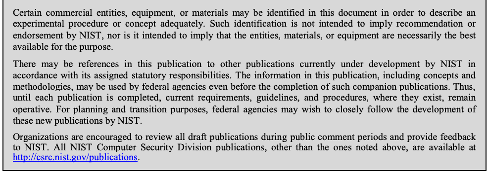
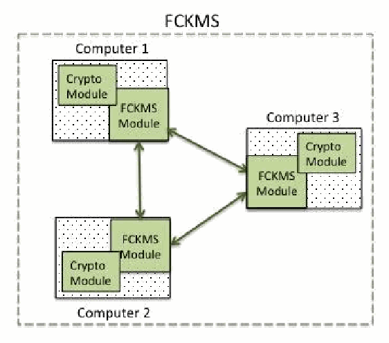

NIST SP 800-152 日本語訳
英語タイトル : A Profile for U.S. Federal Cryptographic Key Management Systems (CKMS)日本語タイトル : 米国連邦政府暗号鍵管理システム（CKMS）プロファイル
公開日 : 2015-10-28
原文URL : https://csrc.nist.gov/pubs/sp/800/152/final
翻訳編集 : 自動生成
[要約] SP 800-152 は、米国連邦暗号鍵管理システム（FCKMS）の設計、実装、調達、設置、構成、管理、運用、使用に関する要件を定めるプロファイルです。SP 800-130 の枠組みに基づき、FCKMS の目標、セキュリティ方針、役割と責任、暗号アルゴリズム・鍵・メタデータ、相互運用性と移行、セキュリティ管理策、試験とシステム保証、災害復旧を章立てで扱います。すべての FCKMS に対する要件を規定し、設計者・実装者が適切なセキュリティサービスと鍵管理機能を選ぶことや、調達者・管理者が適切なシステムを選ぶことを支援します。
有志による非公式の日本語訳です。NIST および米国商務省が作成・承認・推奨したものではありません。要件の確認にはNIST の正式版 PDFを参照してください。
NIST Special Publication 800-152
NIST 特別刊行物 800-152
A Profile for U.S. Federal Cryptographic Key Management Systems
米国連邦暗号鍵管理システムのプロファイル
Elaine Barker
Elaine Barker
Miles Smid
Miles Smid
Dennis Branstad
Dennis Branstad
This publication is available free of charge from: http://dx.doi.org/10.6028/NIST.SP.800-152
本刊行物は次のURLから無料で入手できる：http://dx.doi.org/10.6028/NIST.SP.800-152
［NIST のロゴ。公的な標章のため、この非公式サイトには掲載していない。原本 PDF を参照。］
NIST Special Publication 800-152
NIST 特別刊行物 800-152
A Profile for U. S. Federal
米国連邦のためのプロファイル
Cryptographic Key Management Systems
暗号鍵管理システム
Elaine Barker
Elaine Barker
Computer Security Division Information Technology Laboratory
コンピューターセキュリティ部門 情報技術研究所
Miles Smid G2, Inc.
Miles Smid G2, Inc.
Annapolis Junction, MD
メリーランド州アナポリス・ジャンクション
Dennis Branstad NIST Consultant Austin, TX
Dennis Branstad NISTコンサルタント テキサス州オースティン
This publication is available free of charge from: http://dx.doi.org/10.6028/NIST.SP.800-152
本刊行物は次のURLから無料で入手できる：http://dx.doi.org/10.6028/NIST.SP.800-152
October 2015
2015年10月
U.S. Department of Commerce Penny Pritzker, Secretary
米国商務省 Penny Pritzker長官
National Institute of Standards and Technology
米国国立標準技術研究所
Willie May, Under Secretary of Commerce for Standards and Technology and Director
Willie May、商務省標準技術担当次官兼所長
Authority
根拠法令
This publication has been developed by NIST to further its statutory responsibility under the Federal Information Security Modernization Act (FISMA) of 2014, 44 U.S.C. § 3541 et seq., Public Law (P.L.) 113-283. NIST is responsible for developing information-security standards and guidelines, including minimum requirements for Federal information systems, but such standards and guidelines shall not apply to national security systems without the express approval of appropriate Federal officials exercising policy authority over such systems. This guideline is consistent with the requirements of the Office of Management and Budget (OMB) Circular A-130.
本刊行物は、2014年連邦情報セキュリティ近代化法（FISMA）、44 U.S.C. § 3541 以下、公法（P.L.）113-283 に基づくNISTの法定責任を果たすために、NISTが作成した。NISTは、連邦情報システムの最低要件を含む情報セキュリティの標準およびガイドラインを策定する責任を負うが、適切な連邦当局者が当該システムに関する政策権限を行使して明示的に承認しない限り、これらの標準およびガイドラインは国家安全保障システムには適用されない。本ガイドラインは、行政管理予算局（OMB）の通達A-130の要件と整合している。
Nothing in this publication should be taken to contradict the standards and guidelines made mandatory and binding on Federal agencies by the Secretary of Commerce under statutory authority. Nor should these guidelines be interpreted as altering or superseding the existing authorities of the Secretary of Commerce, Director of the OMB, or any other Federal official. This publication may be used by nongovernmental organizations on a voluntary basis and is not subject to copyright in the United States. Attribution would, however, be appreciated by NIST.
本刊行物のいかなる記述も、法定権限に基づき商務長官が連邦機関に義務付け、拘束力を持たせた標準および指針に矛盾するものと解釈してはならない。また、本指針を、商務長官、OMB長官、その他の連邦当局者の既存の権限を変更または置き換えるものと解釈してはならない。本刊行物は、非政府組織が任意に利用でき、米国内では著作権の対象ではない。ただし、NISTへの帰属表示を歓迎する。
National Institute of Standards and Technology Special Publication 800-152 Natl. Inst. Stand. Technol. Spec. Publ. 800-152, 146 pages (October 2015) CODEN: NSPUE2
National Institute of Standards and Technology Special Publication 800-152 Natl. Inst. Stand. Technol. Spec. Publ. 800-152, 146 pages (October 2015) CODEN: NSPUE2
This publication is available free of charge from: http://dx.doi.org/10.6028/NIST.SP.800-152
本刊行物は次のURLから無料で入手できる：http://dx.doi.org/10.6028/NIST.SP.800-152
Certain commercial entities, equipment, or materials may be identified in this document in order to describe an experimental procedure or concept adequately. Such identification is not intended to imply recommendation or endorsement by NIST, nor is it intended to imply that the entities, materials, or equipment are necessarily the best available for the purpose.
原本PDFの抜粋画像

実験手順または概念を十分に説明するため、本書では特定の商業事業体、機器、または材料を挙げる場合がある。このような記載は、NISTによる推奨または支持を意味するものではなく、また当該事業体、材料、機器が目的に最適であることを意味するものでもない。
There may be references in this publication to other publications currently under development by NIST in accordance with its assigned statutory responsibilities. The information in this publication, including concepts and methodologies, may be used by federal agencies even before the completion of such companion publications. Thus, until each publication is completed, current requirements, guidelines, and procedures, where they exist, remain operative. For planning and transition purposes, federal agencies may wish to closely follow the development of these new publications by NIST.
本刊行物では、法定責任に従ってNISTが現在策定中の他の刊行物を参照する場合がある。本刊行物に記載された情報（概念および方法論を含む）は、関連刊行物の完成前であっても連邦機関が利用できる。したがって、各刊行物が完成するまでは、既存の要件、指針、手順が引き続き有効である。計画および移行の目的で、連邦機関はNISTによるこれら新刊行物の策定状況を注意深く確認してもよい。
Organizations are encouraged to review all draft publications during public comment periods and provide feedback to NIST. All NIST Computer Security Division publications, other than the ones noted above, are available at http://csrc.nist.gov/publications.
組織は、公開コメント期間中にすべての草案刊行物を確認し、NISTに意見を提出することが推奨される。上記以外のNISTコンピューターセキュリティ部門の刊行物は、http://csrc.nist.gov/publications で入手できる。
Comments on this publication may be submitted to:
本刊行物に関するコメントの送付先：
National Institute of Standards and Technology Attn: Computer Security Division, Information Technology Laboratory 100 Bureau Drive (Mail Stop 8930) Gaithersburg, MD 20899-8930 Email: FederalCKMSProfile@nist.gov
National Institute of Standards and Technology Attn: Computer Security Division, Information Technology Laboratory 100 Bureau Drive (Mail Stop 8930) Gaithersburg, MD 20899-8930 Email: FederalCKMSProfile@nist.gov
Reports on Computer Systems Technology
コンピューターシステム技術に関する報告書
The Information Technology Laboratory (ITL) at the National Institute of Standards and Technology (NIST) promotes the U.S. economy and public welfare by providing technical leadership for the Nation’s measurement and standards infrastructure. ITL develops tests, test methods, reference data, proof-of-concept implementations, and technical analyses to advance the development and productive use of information technology. ITL’s responsibilities include the development of management, administrative, technical, and physical standards and guidelines for the cost-effective security and privacy of other than national security-related information in federal information systems. The Special Publication 800-series reports on ITL’s research, guidelines, and outreach efforts in information system security, and its collaborative activities with industry, government, and academic organizations.
米国国立標準技術研究所（NIST）の情報技術研究所（ITL）は、国家の計測・標準インフラに技術的なリーダーシップを提供し、米国経済と公共の福祉を促進する。ITLは、情報技術の発展と生産的利用を推進するため、試験、試験方法、参照データ、概念実証の実装、技術分析を開発する。ITLの責務には、連邦情報システムにおける国家安全保障関連以外の情報の費用対効果に優れたセキュリティとプライバシーのための、管理、運用、技術、物理的な標準および指針の策定が含まれる。特別刊行物800シリーズは、情報システムセキュリティに関するITLの研究、指針、普及活動、および産業界、政府、学術機関との協力活動を報告する。
Abstract
要旨
This Profile for U. S. Federal Cryptographic Key Management Systems (FCKMSs) contains requirements for their design, implementation, procurement, installation, configuration, management, operation, and use by U. S. Federal organizations. The Profile is based on NIST Special Publication (SP) 800-130, A Framework for Designing Cryptographic Key Management Systems (CKMS).
米国連邦暗号鍵管理システム（FCKMS）の本プロファイルは、米国連邦組織による設計、実装、調達、設置、構成、管理、運用、使用に関する要件を定める。本プロファイルは、NIST 特別刊行物（SP）800-130『暗号鍵管理システム設計のためのフレームワーク』に基づく。
Keywords
キーワード
access control; confidentiality; cryptographic key management system; disaster recovery; federal cryptographic key management system; integrity; metadata; security assessment; security functions; security policies; source authentication.
アクセス制御；機密性；暗号鍵管理システム；災害復旧；連邦暗号鍵管理システム；完全性；メタデータ；セキュリティ評価；セキュリティ機能；セキュリティ方針；発信元認証。
Acknowledgements
謝辞
The National Institute of Standards and Technology (NIST) acknowledges and greatly appreciates contributions by all those who participated in the creation, review, and publication of this document. NIST also thanks the many public and private sector contributors whose constructive comments significantly improved its quality and usefulness. Many useful suggestions on Cryptographic Key Management that were made during the workshops held at NIST in 2009, 2010, 2012, and 2014 have been incorporated into this document.
米国国立標準技術研究所（NIST）は、本書の作成、レビュー、刊行に参加したすべての方々の貢献に謝意を表し、深く感謝する。また、品質と有用性を大きく向上させる建設的なコメントを寄せた官民の多数の貢献者にも感謝する。2009年、2010年、2012年、2014年にNISTで開催されたワークショップで寄せられた暗号鍵管理に関する有益な提案の多くが、本書に取り入れられている。
Executive Summary
エグゼクティブサマリー
The National Institute of Standards and Technology (NIST) Cryptographic Key Management project covers major aspects of managing the cryptographic keys that protect sensitive, unclassified federal information. Associated with each key is specific information (e.g., the identifier associated with its owner, its length, and acceptable uses) called metadata. The computers, software, modules, communications, and roles assumed by one or more authorized individuals when managing and using cryptographic key management services are collectively called a Cryptographic Key Management System (CKMS).
米国国立標準技術研究所（NIST）の暗号鍵管理プロジェクトは、機微な非機密連邦情報を保護する暗号鍵の管理に関する主要な側面を扱う。各鍵には、その所有者の識別子、鍵長、許容される用途など、特定の情報が関連付けられており、これをメタデータと呼ぶ。暗号鍵管理サービスの管理および利用において、コンピューター、ソフトウェア、モジュール、通信、ならびに1人以上の権限ある個人が担う役割を総称して、暗号鍵管理システム（CKMS）と呼ぶ。
This Profile for U. S. Federal Cryptographic Key Management Systems (FCKMSs) has been prepared to assist CKMS designers and implementers in selecting the features to be provided in their “products,” and to assist federal organizations and their contractors when procuring, installing, configuring, operating, and using FCKMSs. Other organizations may use this Profile as desired.
米国連邦暗号鍵管理システム（FCKMS）の本プロファイルは、CKMSの設計者および実装者が製品に備える機能を選択する際の支援を目的として作成された。また、連邦組織およびその請負業者がFCKMSを調達、設置、構成、運用、使用する際にも役立つ。他の組織も必要に応じて本プロファイルを利用できる。
An FCKMS can be owned and operated by a federal organization or by a private contractor that provides key management services for federal organizations or other contractors performing federal information-processing services.
FCKMSは、連邦組織自身が所有・運用することも、連邦組織または連邦情報処理サービスを提供する他の請負業者に鍵管理サービスを提供する民間請負業者が所有・運用することもできる。
This Profile can also be used by agencies and organizations to understand their FCKMSs, and to adopt, adapt and migrate their FCKMSs to comply with the Profile requirements over time. NIST does not expect that these requirements would be implemented immediately, but that agencies would use these requirements when creating or procuring FCKMSs or FCKMS services for their Enterprise Architectures.
本プロファイルは、機関や組織が自らのFCKMSを理解し、時間をかけてプロファイル要件に適合するようFCKMSを採用、適応、移行するためにも利用できる。NISTは、これらの要件を直ちに実装することを想定していない。機関は、エンタープライズアーキテクチャ向けのFCKMSまたはFCKMSサービスを新規作成または調達する際に、これらの要件を利用することが想定されている。
This Profile is based on NIST Special Publication 800-130, A Framework for Designing Cryptographic Key Management Systems. The Framework specifies topics that should be considered by a CKMS designer when selecting the capabilities that a CKMS will have and the cryptographic key management services it will support. This Profile replicates all of the Framework requirements that must be satisfied in a CKMS and its design documentation, and includes additional information about installing, configuring, operating and maintaining an FCKMS.
本プロファイルは、NIST 特別刊行物800-130『暗号鍵管理システム設計のためのフレームワーク』に基づいている。このフレームワークは、CKMS設計者がCKMSの持つ機能と、サポートする暗号鍵管理サービスを選択する際に考慮すべき項目を規定している。本プロファイルは、CKMSおよびその設計文書が満たさなければならないフレームワークの要件をすべて再掲し、FCKMSの設置、構成、運用および保守に関する追加情報を含んでいる。
The Framework and this Profile could be used by other organizations that have security requirements similar to those specified in these documents or could be used as a model for the development of other profiles.
フレームワークと本プロファイルは、これらの文書で定めるものと同様のセキュリティ要件を持つ他の組織が利用でき、または他のプロファイルを作成する際のモデルとして使用できる。
Table of Contents
目次
1 Introduction — 1
1 はじめに — 1
1.1 Profile Terminology — 2
1.1 プロファイルの用語 — 2
1.2 Scope of this Profile — 3
1.2 本プロファイルの適用範囲 — 3
1.3 Audience — 4
1.3 対象読者 — 4
1.4 Organization — 4
1.4 構成 — 4
2 Profile Basics — 6
2 プロファイルの基礎 — 6
2.1 Profile Topics and Requirements, Augmentations, and Features — 6
2.1 プロファイルのトピックと要件、追加要件、および機能 — 6
2.2 Rationale for Cryptographic Key Management — 7
2.2 暗号鍵管理の根拠 — 7
2.3 Keys, Metadata, Trusted Associations, and Bindings — 8
2.3 鍵、メタデータ、信頼された関連付け、およびバインディング — 8
2.4 FCKMS Functions — 9
2.4 FCKMSの機能 — 9
2.5 CKMS Design — 9
2.5 CKMSの設計 — 9
2.6 CKMS Profile — 10
2.6 CKMSプロファイル — 10
2.7 FCKMS Profile — 10
2.7 FCKMSプロファイル — 10
2.8 Differences between the Framework and This Profile — 10
2.8 フレームワークと本プロファイルの相違点 — 10
2.9 Example of a Distributed CKMS Supporting a Secure E-Mail Application — 10
2.9 セキュアな電子メールアプリケーションを支援する分散CKMSの例 — 10
2.10 Modules, Devices, and Components — 11
2.10 モジュール、デバイス、およびコンポーネント — 11
3 Federal CKMS Goals — 13
3 連邦CKMSの目標 — 13
3.1 Providing Key Management to Networks, Applications, and Users — 13
3.1 ネットワーク、アプリケーション、ユーザーへの鍵管理の提供 — 13
3.2 Maximize the Use of COTS Products in an FCKMS — 13
3.2 FCKMSでの市販既製品（COTS）の利用最大化 — 13
3.3 Conformance to Standards — 14
3.3 標準への適合 — 14
3.4 Ease-of-use — 14
3.4 使いやすさ — 14
3.4.1 Accommodate User Ability and Preferences — 15
3.4.1 ユーザーの能力と選好への対応 — 15
3.4.2 Design Principles of the User Interface — 15
3.4.2 ユーザーインターフェースの設計原則 — 15
3.5 Performance and Scalability — 16
3.5 性能と拡張性 — 16
3.6 Intellectual Property Rights — 17
3.6 知的財産権 — 17
4 Security Policies — 18
4 セキュリティ方針 — 18
4.1 Information Management Policy — 18
4.1 情報管理方針 — 18
4.2 Information Security Policy — 19
4.2 情報セキュリティ方針 — 19
4.3 CKMS and FCKMS Security Policies — 19
4.3 CKMSおよびFCKMSのセキュリティ方針 — 19
4.4 FCKMS Module Security Policy — 23
4.4 FCKMSモジュールのセキュリティ方針 — 23
4.5 Cryptographic Module Security Policy — 24
4.5 暗号モジュールのセキュリティ方針 — 24
4.6 Other Related Security Policies — 25
4.6 その他の関連するセキュリティ方針 — 25
4.7 Interrelationships among Policies — 25
4.7 方針間の相互関係 — 25
4.8 Personal Accountability — 26
4.8 個人の説明責任 — 26
4.9 Anonymity, Unlinkability, and Unobservability — 27
4.9 匿名性、リンク不能性、および観測不能性 — 27
4.9.1 Anonymity — 28
4.9.1 匿名性 — 28
4.9.2 Unlinkability — 28
4.9.2 連結不能性 — 28
4.9.3 Unobservability — 29
4.9.3 観測不能性 — 29
4.10 Laws, Rules, and Regulations — 29
4.10 法律、規則および規制 — 29
4.11 Security Domains — 29
4.11 セキュリティドメイン — 29
4.11.1 Conditions for Data Exchange — 30
4.11.1 データ交換の条件 — 30
4.11.2 Assurance of Protection — 30
4.11.2 保護の保証 — 30
4.11.3 Equivalence and Compatibility of FCKMS Security Policies — 31
4.11.3 FCKMSセキュリティポリシーの同等性と互換性 — 31
4.11.4 Third-Party Sharing — 32
4.11.4 第三者との共有 — 32
4.11.5 Multi-level Security Domains — 32
4.11.5 マルチレベル・セキュリティドメイン — 32
4.11.6 Upgrading and Downgrading — 33
4.11.6 格上げと格下げ — 33
4.11.7 Changing FCKMS Security Policies — 34
4.11.7 FCKMSセキュリティポリシーの変更 — 34
5 Roles and Responsibilities — 35
5 役割と責任 — 35
6 Cryptographic Algorithms, Keys, and Metadata — 37
6 暗号アルゴリズム、鍵およびメタデータ — 37
6.1 Cryptographic Algorithms and Keys — 37
6.1 暗号アルゴリズムと鍵 — 37
6.1.1 Key Types, Lengths and Strengths — 37
6.1.1 鍵の種類、長さ、強度 — 37
6.1.2 Key Protections — 38
6.1.2 鍵の保護 — 38
6.1.3 Key Assurance — 38
6.1.3 鍵の保証 — 38
6.2 Key Metadata — 39
6.2 鍵メタデータ — 39
6.2.1 Metadata Elements — 39
6.2.1 メタデータ要素 — 39
6.2.2 Required Key and Metadata Information — 43
6.2.2 必要な鍵およびメタデータ情報 — 43
6.3 Key Lifecycle States and Transitions — 44
6.3 鍵のライフサイクル状態と遷移 — 44
6.4 Key and Metadata Management Functions — 45
6.4 鍵およびメタデータの管理機能 — 45
6.4.1 Generate a Key — 46
6.4.1 鍵の生成 — 46
6.4.2 Register an Owner — 47
6.4.2 所有者の登録 — 47
6.4.3 Activate a Key — 47
6.4.3 鍵の有効化 — 47
6.4.4 Deactivate a Key — 48
6.4.4 鍵の無効化 — 48
6.4.5 Revoke a Key — 48
6.4.5 鍵の失効 — 48
6.4.6 Suspend and Re-Activate a Key — 49
6.4.6 鍵の一時停止と再有効化 — 49
6.4.7 Renew a Public Key Certificate — 49
6.4.7 公開鍵証明書の更新 — 49
6.4.8 Key Derivation or Key Update — 51
6.4.8 鍵導出または鍵更新 — 51
6.4.9 Destroy a Key and Metadata — 51
6.4.9 鍵およびメタデータの破棄 — 51
6.4.10 Associate a Key with its Metadata — 52
6.4.10 鍵とそのメタデータの関連付け — 52
6.4.11 Modify Metadata — 52
6.4.11 メタデータの変更 — 52
6.4.12 Delete Metadata — 53
6.4.12 メタデータの削除 — 53
6.4.13 List Key Metadata — 53
6.4.13 鍵メタデータの一覧表示 — 53
6.4.14 Store Operational Key and Metadata Outside a Cryptographic Module — 54
6.4.14 運用鍵およびメタデータの暗号モジュール外での保管 — 54
6.4.15 Backup of a Key and its Metadata — 54
6.4.15 鍵とそのメタデータのバックアップ — 54
6.4.16 Archive Key and/or Metadata — 54
6.4.16 鍵および／またはメタデータのアーカイブ — 54
6.4.17 Recover a Key and/or Metadata — 55
6.4.17 鍵および／またはメタデータの復旧 — 55
6.4.18 Establish a Key — 56
6.4.18 鍵の確立 — 56
6.4.19 Enter a Key and Associated Metadata into a Cryptographic Module — 56
6.4.19 鍵および関連メタデータの暗号モジュールへの入力 — 56
6.4.20 Output a Key and Associated Metadata from a Cryptographic Module — 57
6.4.20 鍵および関連メタデータの暗号モジュールからの出力 — 57
6.4.21 Validate Public-Key Domain Parameters — 58
6.4.21 公開鍵ドメインパラメータの検証 — 58
6.4.22 Validate a Public Key — 58
6.4.22 公開鍵の検証 — 58
6.4.23 Validate a Public Key Certification Path — 58
6.4.23 公開鍵証明書パスの検証 — 58
6.4.24 Validate a Symmetric Key — 59
6.4.24 共通鍵の検証 — 59
6.4.25 Validate Possession of a Symmetric Key — 59
6.4.25 共通鍵の所持の検証 — 59
6.4.26 Validate a Private Key (or Key Pair) — 59
6.4.26 秘密鍵（または鍵ペア）の検証 — 59
6.4.27 Validate the Possession of a Private Key — 59
6.4.27 秘密鍵の所持の検証 — 59
6.4.28 Perform a Cryptographic Function using the Key — 60
6.4.28 鍵を使用した暗号機能の実行 — 60
6.4.29 Manage the Trust Anchor Store — 60
6.4.29 トラストアンカーストアの管理 — 60
6.5 Cryptographic Key and/or Metadata Security: In Storage — 61
6.5 暗号鍵および／またはメタデータのセキュリティ: 保管時 — 61
6.6 Cryptographic Key and Metadata Security: During Key Establishment — 62
6.6 暗号鍵およびメタデータのセキュリティ: 鍵確立時 — 62
6.6.1 Key Transport — 62
6.6.1 鍵配送 — 62
6.6.2 Key Agreement — 63
6.6.2 鍵共有 — 63
6.6.3 Key Confirmation — 63
6.6.3 鍵確認 — 63
6.6.4 Key-Establishment Protocols — 64
6.6.4 鍵確立プロトコル — 64
6.7 Restricting Access to Key and Metadata Management Functions — 64
6.7 鍵およびメタデータ管理機能へのアクセス制限 — 64
6.7.1 The Access Control System (ACS) — 64
6.7.1 アクセス制御システム（ACS） — 64
6.7.2 Restricting Cryptographic Module Entry and Output of Plaintext Keys — 65
6.7.2 平文鍵の暗号モジュールへの入力および出力の制限 — 65
6.7.3 Controlling Human Input — 65
6.7.3 人による入力の制御 — 65
6.7.4 Multiparty Control — 66
6.7.4 複数者制御 — 66
6.7.5 Key Splitting — 66
6.7.5 鍵の分割 — 66
6.8 Compromise Recovery — 67
6.8 侵害からの復旧 — 67
6.8.1 Key Compromise — 67
6.8.1 鍵の侵害 — 67
6.8.2 Metadata Compromise — 69
6.8.2 メタデータの侵害 — 69
6.8.3 Key and Metadata Revocation — 70
6.8.3 鍵およびメタデータの失効 — 70
6.8.4 Cryptographic Module Compromise — 70
6.8.4 暗号モジュールの侵害 — 70
6.8.5 Computer System Compromise Recovery — 71
6.8.5 コンピュータシステム侵害からの復旧 — 71
6.8.6 Network Security Controls and Compromise Recovery — 72
6.8.6 ネットワークセキュリティ管理策と侵害からの復旧 — 72
6.8.7 Personnel Security Compromise Recovery — 73
6.8.7 人員セキュリティ侵害からの復旧 — 73
6.8.8 Physical Security Compromise Recovery — 74
6.8.8 物理的セキュリティ侵害からの復旧 — 74
7 Interoperability and Transitioning — 76
7 相互運用性と移行 — 76
8 Security Controls — 81
8 セキュリティ管理策 — 81
8.1 Physical Security Controls — 81
8.1 物理的セキュリティ管理策 — 81
8.2 Operating System and Device Security Controls — 82
8.2 オペレーティングシステム及びデバイスのセキュリティ管理策 — 82
8.2.1 Operating System Security — 82
8.2.1 オペレーティングシステムのセキュリティ — 82
8.2.2 Individual FCKMS Device Security — 85
8.2.2 個々のFCKMSデバイスのセキュリティ — 85
8.2.3 Malware Protection — 85
8.2.3 マルウェア防御 — 85
8.2.4 Auditing and Remote Monitoring — 87
8.2.4 監査及びリモート監視 — 87
8.3 Network Security Control Mechanisms — 89
8.3 ネットワークセキュリティ制御メカニズム — 89
8.4 Cryptographic Module Controls — 91
8.4 暗号モジュールの管理策 — 91
8.5 Federal CKMS Security-Control Selection and Assessment Process — 91
8.5 連邦CKMSのセキュリティ管理策の選択及び評価プロセス — 91
9 Testing and System Assurances — 94
9 試験とシステム保証 — 94
9.1 CKMS and FCKMS Testing — 94
9.1 CKMS及びFCKMSの試験 — 94
9.2 Third-Party Testing — 94
9.2 第三者試験 — 94
9.3 Interoperability Testing — 95
9.3 相互運用性試験 — 95
9.4 Self-Testing — 96
9.4 自己試験 — 96
9.5 Scalability Testing — 96
9.5 拡張性試験 — 96
9.6 Functional and Security Testing — 96
9.6 機能試験及びセキュリティ試験 — 96
9.7 Environmental Testing — 98
9.7 環境試験 — 98
9.8 Ease-of-Use Testing — 98
9.8 使いやすさの試験 — 98
9.9 Development, Delivery, and Maintenance Assurances — 99
9.9 開発、納入及び保守に関する保証 — 99
9.9.1 Configuration Management — 99
9.9.1 構成管理 — 99
9.9.2 Secure Delivery — 100
9.9.2 安全な配送 — 100
9.9.3 Development and Maintenance Environmental Security — 100
9.9.3 開発及び保守環境のセキュリティ — 100
9.9.4 Flaw Remediation Capabilities — 101
9.9.4 欠陥修正能力 — 101
10 Disaster Recovery — 103
10 災害復旧 — 103
10.1 Facility Damage — 103
10.1 施設の損傷 — 103
10.2 Utility Service Outage — 106
10.2 公共サービスの停止 — 106
10.3 Communication and Computation Outage — 106
10.3 通信及び計算処理の停止 — 106
10.4 FCKMS Hardware Failure — 107
10.4 FCKMSハードウェアの故障 — 107
10.5 System Software Failure — 108
10.5 システムソフトウェアの故障 — 108
10.6 Cryptographic Module Failure — 109
10.6 暗号モジュールの故障 — 109
10.7 Corruption and Loss of Keys and Metadata — 110
10.7 鍵及びメタデータの破損と喪失 — 110
11 Security Assessment — 112
11 セキュリティ評価 — 112
11.1 Full Security Assessment — 112
11.1 全面的なセキュリティ評価 — 112
11.1.1 Review of Third-Party Testing and Verification of Test Results — 113
11.1.1 第三者による試験の確認と試験結果の検証 — 113
11.1.2 Architectural Review of System Design — 114
11.1.2 システム設計のアーキテクチャレビュー — 114
11.1.3 Functional and Security Testing — 115
11.1.3 機能試験及びセキュリティ試験 — 115
11.1.4 Penetration Testing — 115
11.1.4 侵入試験 — 115
11.2 Periodic Security Review — 116
11.2 定期的なセキュリティレビュー — 116
11.3 Incremental Security Assessment — 116
11.3 段階的なセキュリティ評価 — 116
11.4 Security Maintenance — 117
11.4 セキュリティ保守 — 117
12 Technological Challenges — 119
12 技術的課題 — 119
Appendix A: References — 121
付録A：参考文献 — 121
Appendix B: Glossary — 125
付録B：用語集 — 125
List of Figures
図一覧
Figure 1: FCKMS and its FCKMS Modules — 11
図1：FCKMS及びそのFCKMSモジュール — 11
Figure 2: CKMS Security Policy Configurations — 20
図2：CKMSのセキュリティポリシー構成 — 20
Figure 3: An FCKMS Network — 24
図3：FCKMSネットワーク — 24
1 Introduction
1 はじめに
This Profile for U.S. Federal Cryptographic Key Management Systems (FCKMSs1) is based on [SP 800-130], entitled “A Framework for Designing Cryptographic Key Management Systems (CKMS),” which provides a foundation for designing and implementing CKMSs. The Framework specifies requirements for designing any commercial or Federal CKMS, while this Profile provides more-specific design requirements for an FCKMS, and includes additional requirements for testing, procuring, installing, managing, operating, maintaining, and using FCKMSs.
米国連邦暗号鍵管理システム（FCKMS1）プロファイルは、[SP 800-130]「暗号鍵管理システム（CKMS）設計のためのフレームワーク」に基づいている。同フレームワークは、CKMSの設計及び実装の基礎を提供する。同フレームワークは、あらゆる商用又は連邦CKMSを設計するための要件を規定する。一方、本プロファイルはFCKMS向けの、より具体的な設計要件を示し、FCKMSの試験、調達、設置、管理、運用、保守及び使用に関する追加要件を含む。
This Profile specifies requirements for all FCKMSs. It is intended to assist CKMS designers and implementers to select and support appropriate security services and key-management functions, and to assist FCKMS procurers, administrators, service-providing organizations, and service-using organizations to select appropriate CKMSs or CKMS services. This Profile specifies requirements for all organizations desiring to operate or use an FCKMS, either directly or under contract; makes recommendations for Federal organizations having special security needs and desiring to augment the base security and key-management services; and suggests additional FCKMS features that may be desirable for Federal organizations to implement and use now or in the future
本プロファイルは、すべてのFCKMSに対する要件を規定する。CKMSの設計者及び実装者が適切なセキュリティサービスと鍵管理機能を選択し、サポートする際の支援を目的としている。また、FCKMSの調達者、管理者、サービス提供組織及びサービス利用組織が、適切なCKMS又はCKMSサービスを選択する際の支援も目的としている。本プロファイルは、直接又は契約を通じてFCKMSを運用又は使用することを望むすべての組織に対する要件を規定し、特別なセキュリティニーズを持ち、基本のセキュリティ及び鍵管理サービスを拡張することを望む連邦組織に推奨事項を示し、連邦組織が現在又は将来に実装及び使用することが望ましいFCKMSの追加機能を提案する
This Profile can be used by agencies and organizations to understand their FCKMSs, and to adopt, adapt and migrate their FCKMSs to comply with the Profile requirements over time. NIST does not expect that these requirements would be implemented immediately, but that agencies would use these requirements when creating or procuring FCKMSs or FCKMS services for their Enterprise Architectures. Agencies can also use these requirements to assess and understand potential gaps that exist in their current FCKMSs. As agencies plan for changes, migrations and upgrades, these requirements and the gap assessment can be used to improve the security of FCKMs overall.
各機関及び組織は、本プロファイルを用いて自らのFCKMSを理解し、時間をかけてプロファイル要件に準拠するようFCKMSを採用、適応及び移行できる。NISTは、これらの要件が直ちに実装されるとは想定していない。各機関がエンタープライズアーキテクチャ向けにFCKMS又はFCKMSサービスを作成若しくは調達する際に、これらの要件を使用することを想定している。各機関は、これらの要件を使って、現行のFCKMSに存在する潜在的なギャップを評価し、理解することもできる。各機関が変更、移行及びアップグレードを計画する際、これらの要件とギャップ評価を用いて、FCKMS全体のセキュリティを改善できる。
This Profile is intended to:
本プロファイルの目的は次のとおりである。
1.Assist CKMS designers and implementers in supporting appropriate key and metadata management functions, cryptographic key types, key metadata, and protocols for protecting sensitive U.S. Federal computing applications and data;
1.機微な米国連邦政府のコンピューティング用途及びデータを保護するために適切な鍵及びメタデータ管理機能、暗号鍵の種類、鍵メタデータ並びにプロトコルをサポートするうえで、CKMSの設計者及び実装者を支援すること。
2.Establish requirements for FCKMS testing, procurement, installation, configuration, administration, operation, maintenance and usage;
2.FCKMSの試験、調達、設置、構成、管理、運用、保守及び使用に関する要件を確立すること。
3.Facilitate an easy comparison of one FCKMS with another by analyzing their designs and implementations in order to understand how each meets the Framework and Profile requirements; and
3.各FCKMSの設計及び実装を分析し、それぞれがフレームワーク及びプロファイルの要件をどのように満たすかを把握することで、FCKMS同士を容易に比較できるようにすること。
4.Assist in understanding what is needed to evaluate, procure, install, configure, administer, operate, and use an FCKMS that manages the cryptographic keys that protect sensitive and valuable data obtained, processed, stored, and used by U.S. Federal organizations and their contractors.
4.米国連邦組織及びその請負業者が取得、処理、保存及び使用する機微で価値の高いデータを保護する暗号鍵を管理するFCKMSについて、その評価、調達、設置、構成、管理、運用及び使用に必要な事項の理解を支援すること。
5.Assist Agencies in performing an initial assessment of their FCKMSs to clearly understand where potential gap areas might exist, where there are areas for potential improvements and to understand requirements for future migrations, procurements and upgrades to their FCKMSs.
5.各機関が自らのFCKMSを初期評価し、潜在的なギャップのある領域や改善の可能性がある領域を明確に把握し、FCKMSの将来の移行、調達及びアップグレードに関する要件を理解できるよう支援すること。
Designing a secure CKMS is the responsibility of CKMS designers, who must choose among various key-management capabilities to be included in a product being designed for a particular market. Purchasing an acceptable FCKMS or FCKMS service is the responsibility of Federal procurement officials and their technical associates. Managing/administering an FCKMS is the responsibility of appropriate FCKMS service providers when installing, configuring, operating, and maintaining an FCKMS.
セキュアなCKMSを設計する責任はCKMS設計者にある。設計者は、特定の市場向けに設計する製品に含めるさまざまな鍵管理機能の中から選択しなければならない。適切なFCKMS又はFCKMSサービスを購入する責任は、連邦政府の調達担当者及びその技術担当者にある。FCKMSの管理・運用の責任は、FCKMSの設置、構成、運用及び保守を行う適切なFCKMSサービス提供者にある。
This Profile is based on the Framework, and readers of this Profile are strongly encouraged to be familiar with the information in the Framework. The Framework contains tutorial information that may be needed to understand the cryptographic key-management topics of this Profile. This Profile introduces each topic that is also covered in the Framework.
本プロファイルはフレームワークに基づいており、本プロファイルの読者には、フレームワークの情報に精通することを強く推奨する。フレームワークには、本プロファイルの暗号鍵管理のトピックを理解するために必要となる場合がある、チュートリアル情報が含まれている。本プロファイルでは、フレームワークでも扱われる各トピックを紹介する。
The Framework and this Profile could be used by other organizations that have security requirements similar to those specified in these documents, and the Profile could be used as a model for the development of other profiles.
フレームワーク及び本プロファイルは、これらの文書に示されたものと同様のセキュリティ要件を持つ他の組織でも使用でき、本プロファイルは他のプロファイルを策定する際のモデルとして使用できる。
1.1 Profile Terminology
1.1 プロファイルの用語
The Profile often uses terminology that is not used in the Framework. A glossary of terms is provided in Appendix B, but some of the more general terms merit an introduction below.
本プロファイルでは、フレームワークでは使われていない用語をよく使用する。付録Bに用語集を示すが、より一般的な用語の一部については、以下で紹介する。
“CKMS” is used to mean any Cryptographic Key Management System that satisfies the requirements of the Framework. The term refers to the system that is designed and implemented, possibly with configurable options.
「CKMS」は、フレームワークの要件を満たすすべての暗号鍵管理システムを意味する。この用語は、構成可能なオプションを備える場合もある、設計及び実装対象のシステムを指す。
An “FCKMS” performs the key and metadata functions that are the foundation of all cryptographic key-management services needed by one or more Federal service-using organizations and their employees.
「FCKMS」は、1つ以上の連邦サービス利用組織及びその従業員に必要な暗号鍵管理サービスの基盤となる、鍵及びメタデータの機能を実行する。
An FCKMS includes a CKMS, possibly after configuring the CKMS functions to support the desired services of a Federal service-using organization. An FCKMS also meets all the requirements of this Profile for its impact-level and provides FCKMS services for a U.S. Federal organization and/or its contractors.
FCKMSはCKMS（場合によっては、連邦サービス利用組織が望むサービスをサポートするようCKMS機能を構成した後のもの）を含む。FCKMSは、その影響度レベルに応じた本プロファイルのすべての要件も満たし、米国連邦組織及び／又はその請負業者にFCKMSサービスを提供する。
This Profile uses the terms “FCKMS service-providing organization” (or “FCKMS service provider”) and “FCKMS service-using organization”. An FCKMS service provider may be a part of an FCKMS service-using organization or may be an independent organization providing the services required by FCKMS service-using organizations (e.g., under contract). Federal CKMS service providers may be Federal organizations, Federal contractors, or both. This Profile includes requirements for both FCKMS service providers and FCKMS service-using organizations.
本プロファイルでは、「FCKMSサービス提供組織」（又は「FCKMSサービス提供者」）及び「FCKMSサービス利用組織」という用語を使用する。FCKMSサービス提供者は、FCKMSサービス利用組織の一部である場合も、FCKMSサービス利用組織が必要とするサービスを（例えば契約に基づいて）提供する独立した組織である場合もある。連邦CKMSサービス提供者は、連邦組織、連邦請負業者、又はその両方である場合がある。本プロファイルには、FCKMSサービス提供者とFCKMSサービス利用組織の双方に対する要件が含まれる。
This Profile uses the term “impact-level” to refer to the information-system impact-levels identified in [FIPS 200]. [FIPS 200] uses the security categories in [FIPS 199] to specify and define three information-system impact-levels: Low, Moderate and High. The security categories are based on the potential impact on an organization if certain events occur that jeopardize the information and information systems needed by the organization to accomplish its assigned mission, protect its assets, fulfill its legal responsibilities, maintain its day-to-day functions, and protect individuals.
本プロファイルでは、「影響度レベル」という用語を、[FIPS 200]で特定された情報システムの影響度レベルを指すために使用する。[FIPS 200]は、[FIPS 199]のセキュリティカテゴリを用いて、情報システムの3つの影響度レベル（低、中、高）を規定し、定義している。セキュリティカテゴリは、組織が割り当てられた任務を遂行し、資産を保護し、法的責任を果たし、日常業務を維持し、個人を保護するために必要な情報及び情報システムを危険にさらす特定の事象が発生した場合に、組織に及ぶ潜在的な影響に基づいている。
The Profile uses the term “security control” to refer to the security controls provided in [SP 800-53] that support the executive agencies of the Federal government to meet the requirements of [FIPS 200]. [SP 800-53], and [SP 800-53A] apply to all components of an information system that process, store, or transmit Federal information.
本プロファイルでは、「セキュリティ管理策」という用語を、[SP 800-53]に示され、連邦政府の行政機関が[FIPS 200]の要件を満たすのを支援するセキュリティ管理策を指すために使用する。[SP 800-53]及び[SP 800-53A]は、連邦情報を処理、保存又は伝送する情報システムのすべての構成要素に適用される。
The term “FIPS-140 security level” refers to the security levels defined for cryptographic modules in [FIPS 140]. Four levels are defined, where a level 1 cryptographic module provides the least amount of protection, and a level 4 module provides the greatest amount of protection. The cryptographic modules and their implemented FIPS-140 security levels are validated by NIST’s Cryptographic Module Validation Program (CMVP).
「FIPS-140セキュリティレベル」という用語は、[FIPS 140]で定義された暗号モジュールのセキュリティレベルを指す。4つのレベルが定義されており、レベル1の暗号モジュールが提供する保護が最も少なく、レベル4のモジュールが最も多くの保護を提供する。暗号モジュール及び実装されたFIPS-140セキュリティレベルは、NISTの暗号モジュール検証プログラム（CMVP）によって検証される。
The term “security strength” is used to measure the amount of cryptographic protection that can be provided by a combination of a cryptographic algorithm and a key. Further discussion of key strengths is provided in [SP 800-57 Part 1].
「セキュリティ強度」という用語は、暗号アルゴリズムと鍵の組合せによって提供できる暗号学的保護の量を測るために使用する。鍵の強度に関する詳しい説明は[SP 800-57 Part 1]にある。
In CKMS and FCKMS topic discussions, statements of fact are indicated by “is” or “are”; statements of permission or of possibility are indicated by “may”; statements of capability are indicated by “can”. Statements including “could” are used in discussing possible optional or alternative actions. These terms do not indicate requirements or recommendations of this publication.
CKMS及びFCKMSのトピックに関する説明では、事実の記述に「is」又は「are」を、許可又は可能性の記述に「may」を、能力の記述に「can」を使用する。「could」を含む記述は、任意又は代替の行動の可能性を論じる際に使用する。これらの用語は、本刊行物の要件又は推奨事項を示すものではない。
1.2 Scope of this Profile
1.2 本プロファイルの適用範囲
An FCKMS is intended for use by Federal agencies and contractors (who use cryptography to protect U.S. government information) to manage all the cryptographic keys and associated metadata.
FCKMSは、暗号を使用して米国政府の情報を保護する連邦政府機関及び請負業者が、すべての暗号鍵と関連メタデータを管理するために使用することを意図している。
While individual people are outside the scope of an FCKMS, the roles assumed by these people (e.g., administrators, managers, operators, auditors, and users) are within the scope of an FCKMS. Physical and logical interfaces between an FCKMS and any or all these roles are also within an FCKMS’s scope.
個人そのものはFCKMSの適用範囲外であるが、個人が担う役割（例えば、管理者、マネージャー、オペレーター、監査人及びユーザー）はFCKMSの適用範囲内である。FCKMSとこれらの役割の一部又は全部との間の物理的及び論理的インターフェースも、FCKMSの適用範囲内である。
Federal agencies and their contractors are required to select appropriate [FIPS 199] impact levels for their information and to select security controls from those identified in [SP 800-53] to use in procurements, implementations and planning. After selecting the applicable security control(s), organizations can initiate the tailoring process to appropriately modify and align the controls more closely with the specific conditions within the organization (i.e., conditions related to organizational missions/business functions, information systems, or environments of operation). This Profile addresses the selection of several of the security controls specified in [SP 800-53], indicating the minimum requirements for those security controls for each impact level. Other security controls not specifically addressed herein should be selected as appropriate for the organization's systems.
連邦機関とその請負業者は、自らの情報について適切な[FIPS 199]影響度レベルを選択し、調達、実装および計画で使用するセキュリティ管理策を[SP 800-53]に示されたものから選択することが求められる。適用するセキュリティ管理策を選択した後、組織は、管理策を適切に修正し、組織内の個別の状況（組織の使命や業務機能、情報システム、運用環境に関連する状況）により適合させるテーラリング・プロセスを開始できる。本プロファイルは、[SP 800-53]に規定されたセキュリティ管理策のうちいくつかの選択を扱い、影響度レベルごとにそれらの管理策の最低要件を示す。本プロファイルで特に扱われていないその他のセキュリティ管理策は、組織のシステムに応じて適切に選択すべきである。
1.3 Audience
1.3 対象読者
This Profile is intended for CKMS designers and implementers, as well as FCKMS procurers, installers, configuration personnel, administrators, managers, operators, and users.
本プロファイルは、CKMSの設計者及び実装者に加え、FCKMSの調達者、設置担当者、構成担当者、管理者、マネージャー、オペレーター及びユーザーを対象としている。
Federal employees and Federal contractors are the anticipated users of the services provided by an FCKMS. Members of the public sector could be authorized to use the services of an FCKMS when interacting with Federal organizations and their contractors.
連邦職員及び連邦請負業者は、FCKMSが提供するサービスの想定利用者である。公共部門の構成員も、連邦組織及びその請負業者とやり取りする際に、FCKMSのサービスを使用する権限を与えられる場合がある。
1.4 Organization
1.4 文書の構成
Section 1, Introduction, introduces Cryptographic Key Management, CKMSs, FCKMSs, and the Profile.
第1節「序論」では、暗号鍵管理、CKMS、FCKMSおよび本プロファイルを紹介する。
Section 2, Profile Basics, covers the fundamentals of the Profile and an FCKMS.
第2節「プロファイルの基礎」では、本プロファイルおよびFCKMSの基本を扱う。
Section 3, Goals, defines the goals of an FCKMS.
第3節「目標」では、FCKMSの目標を定義する。
Section 4, Security Policies, presents the need for and the scope of one or more policies governing the management and use of an FCKMS.
第4節「セキュリティポリシー」では、FCKMSの管理および使用を統制する1つ以上のポリシーの必要性と適用範囲を示す。
Section 5, Roles and Responsibilities, describes various roles and responsibilities of the people managing, operating, and using an FCKMS.
第5節「役割と責任」では、FCKMSを管理、運用および使用する人々のさまざまな役割と責任を説明する。
Section 6, Cryptographic Keys and Metadata, discusses cryptographic algorithms, keys and metadata, various key and metadata management functions, security issues, and error/damage recovery mechanisms.
第6節「暗号鍵とメタデータ」では、暗号アルゴリズム、鍵とメタデータ、各種の鍵管理・メタデータ管理機能、セキュリティ上の問題、およびエラーや損傷からの復旧手段を論じる。
Section 7, Interoperability and Transitioning, considers the interoperability of FCKMSs and their ability to satisfy future key-management needs.
第7節「相互運用性と移行」では、FCKMS間の相互運用性と、将来の鍵管理ニーズを満たす能力を検討する。
Section 8, Security Controls, describes the security controls used to protect an FCKMS.
第8節「セキュリティ管理策」では、FCKMSを保護するために用いるセキュリティ管理策を説明する。
Section 9, Testing and System Assurances, describes security testing and obtaining assurances that security services are being performed correctly.
第9節「試験とシステム保証」では、セキュリティ試験と、セキュリティサービスが正しく実施されていることの保証取得について説明する。
Section 10, Disaster Recovery, discusses various FCKMS service and data backup capabilities and recovering from several types of disasters.
第10節「災害復旧」では、FCKMSのサービスおよびデータの各種バックアップ機能と、複数の種類の災害からの復旧を論じる。
Section 11, Security Assessment, discusses assessing the operation and security of an FCKMS.
第11節「セキュリティ評価」では、FCKMSの運用とセキュリティの評価を論じる。
Section 12, Technology Challenges, discusses the technical advances that could affect the security of an FCKMS.
第12節「技術上の課題」では、FCKMSのセキュリティに影響し得る技術の進歩を論じる。
Appendix A, References, provides relevant information for accessing each publication referenced herein.
付録A「参考文献」では、本書で参照する各出版物の入手に役立つ情報を示す。
Appendix B, Glossary, provides a glossary of terms used in this Profile.
付録B「用語集」では、本プロファイルで使用する用語を説明する。
2 Profile Basics
2 プロファイルの基礎
This Profile provides a structured view of a Federal CKMS, discussing security provisions that shall, should or could be used by a Federal organization or contractor to manage and protect cryptographic keys and metadata.
本プロファイルは連邦CKMSを体系的に示し、連邦政府機関または請負業者が暗号鍵とメタデータを管理・保護するために使用しなければならない（shall）、使用すべきである（should）、または使用できる（could）セキュリティ規定を論じる。
2.1 Profile Topics and Requirements, Augmentations, and Features
2.1 プロファイルのトピック、要件、拡張項目および機能
This Profile consists of a set of topics that is similar to the topics found in the Framework. Each topic heading is typically followed by an overview of the topic, a list of Framework requirements from [SP 800-130], a list of Profile requirements, a list of recommended Profile augmentations, and a list of possible Profile features. In some cases, there may be no requirements, augmentations, or features that apply to the topic.
本プロファイルは、フレームワークに含まれるトピックと類似した一連のトピックで構成される。通常、各トピックの見出しに続いて、その概要、[SP 800-130]のフレームワーク要件、本プロファイルの要件、推奨するプロファイル拡張項目、および考えられるプロファイル機能の一覧を示す。トピックによっては、該当する要件、拡張項目または機能がない場合もある。
Framework requirements for CKMSs are indicated by “shall” or “shall not,” and are numbered beginning with an “FR” designation. Profile requirements for all FCKMSs are indicated by “shall” or “shall not,” and are numbered beginning with a “PR” designation. Some Profile requirements are conditional (e.g., based on the applicable [FIPS 200] impact-level). Only the Framework requirements and the non-conditional Profile requirements are necessary to conform to and comply with this document. A CKMS design conforming to this Profile, must support a configuration that is compatible with both sets of requirements. Recommended augmentations are indicated by “should,” and are numbered beginning with a “PA” designation. Recommended augmentations are strongly recommended by NIST for implementation in most systems. Possible features are indicated by “could,” and are numbered beginning with a “PF” designation. Profile features are optional features that are often intended for complex or future systems. Their possible implementation, if desired, is left to the stakeholders of the system. Federal CKMS service-using organizations could selectively require that their FCKMSs support some of the recommended augmentations or suggested features, but such requirements are beyond the scope of this document.
CKMSに対するフレームワーク要件は「shall」または「shall not」（しなければならない／してはならない）で示され、「FR」の呼称から始まる番号が付されている。すべてのFCKMSに対するプロファイル要件は「shall」または「shall not」で示され、「PR」の呼称から始まる番号が付されている。一部のプロファイル要件は条件付きである（例：適用される[FIPS 200]の影響度レベルに基づく）。本書に適合し準拠するために必要なのは、フレームワーク要件と、条件付きでないプロファイル要件のみである。本プロファイルに適合するCKMS設計は、両方の要件群と整合する構成をサポートしなければならない。推奨される拡張は「should」（すべき）で示され、「PA」の呼称から始まる番号が付されている。推奨される拡張は、ほとんどのシステムでの実装がNISTにより強く推奨される。可能な機能は「could」（できる）で示され、「PF」の呼称から始まる番号が付されている。プロファイル機能は任意の機能であり、複雑なシステムや将来のシステムを想定していることが多い。その実装を望む場合、その判断はシステムの利害関係者に委ねられる。連邦CKMSのサービスを利用する組織は、FCKMSに推奨される拡張や提案される機能の一部をサポートするよう選択的に求めることができるが、そのような要件は本書の範囲外である。
In order to easily recognize Profile requirements, augmentations and features from the surrounding text, each type is presented in separate tables. For each table:
プロファイル要件、拡張項目および機能を周囲の本文と容易に区別できるよう、種類ごとに別の表で示す。各表では、次のとおりである。
•Column one provides the PR, PA or PF number;
•第1列はPR、PAまたはPFの番号を示す。
•Column two identifies any related security controls in [SP 800-53]; when column two is blank, no related security control has been identified; and
•第2列は[SP 800-53]の関連するセキュリティ管理策を示す。第2列が空欄の場合、関連するセキュリティ管理策は特定されていない。
•Column three provides the text of the requirement, augmentation or feature.
•3列目には、要件、拡張または機能の文言を示す。
The first Framework requirement and the first Profile requirement, recommended augmentation and suggested feature are concerned with the overall conformance to the Framework and Profile.
最初のフレームワーク要件と、最初のプロファイル要件、推奨される拡張および提案される機能は、フレームワークおよびプロファイルへの全体的な適合に関するものである。
FR:1.1 A conformant CKMS design shall meet all “shall” requirements of the Framework [SP 800-130].
FR:1.1 適合するCKMS設計は、フレームワーク[SP 800-130]のすべての「shall」要件を満たさなければならない。
| PR:2.1 | A Federal CKMS shall satisfy all Framework requirements (FRs) and Profile requirements (PRs). |
| PR:2.1 | 連邦CKMSは、すべてのフレームワーク要件（FR）およびプロファイル要件（PR）を満たさなければならない。 |
| PA:2.1 | A Federal CKMS should support Profile augmentations (PAs). |
| PA:2.1 | 連邦CKMSは、プロファイル拡張項目（PA）をサポートすべきである。 |
| PF:2.1 | A Federal CKMS could support Profile features (PFs). |
| PF:2.1 | 連邦CKMSは、プロファイル機能（PF）をサポートできる。 |
2.2 Rationale for Cryptographic Key Management
2.2 暗号鍵管理の根拠
Today’s information systems require protection against the denial of authorized use of their services; unauthorized access to, or modification of, their information processing capabilities; and unauthorized destruction of their equipment and facilities. The information systems themselves must also protect the information that they contain from unauthorized disclosure, modification, and destruction. These protections may be provided by physical means, such as enclosures, locks, and guards, or they can be provided by logical means, such as cryptography or software-based access control.
今日の情報システムには、サービスの許可された利用の妨害、情報処理能力への不正なアクセスまたは不正な変更、および装置や施設の不正な破壊からの保護が必要である。情報システム自体も、内部に保有する情報を不正な開示、変更および破壊から保護しなければならない。こうした保護は、筐体、錠、警備員などの物理的手段、または暗号やソフトウェアベースのアクセス制御などの論理的手段で実現できる。
Cryptography is the only means for protecting data during transmission when physical protection is cost-prohibitive or impossible to provide. Thus, cryptography is widely used when business is conducted or sensitive information is transmitted over a network. Cryptography also provides excellent protection for stored data against entities that are not authorized to obtain or modify the data.
物理的保護を提供する費用が高すぎる場合や提供できない場合、伝送中のデータを保護する手段は暗号だけである。そのため、業務を遂行するときや機密情報をネットワーク経由で送信するときに、暗号が広く利用される。暗号は、データの取得や変更を許可されていない主体から、保存データを保護するうえでも優れた手段となる。
Cryptographic protection for data requires algorithms designed specifically for that purpose. These algorithms often require the use of cryptographic keys, which are managed by an FCKMS. The combination of the cryptographic algorithms and keys of an appropriate length can be used to provide a level of protection for data; this level is commonly referred to as the security strength (see [SP 800-57 Part1] for additional information).
データを暗号で保護するには、その目的に合わせて設計されたアルゴリズムが必要である。これらのアルゴリズムでは多くの場合、FCKMSが管理する暗号鍵を使用する。適切な長さの鍵と暗号アルゴリズムを組み合わせることで、データに一定の保護レベルを提供できる。このレベルは一般に「セキュリティ強度」と呼ばれる（詳細は[SP 800-57 Part1]を参照）。
Cryptographic-based security requires the secure management of keys throughout their lifetime. Cryptography can reduce the scope of information management from protecting large amounts of information to protecting a key and its associated metadata (i.e., information about the key). This Profile specifies requirements for the management of the keys used to protect sensitive Federal information and the metadata associated with those keys.
暗号に基づくセキュリティを実現するには、鍵のライフサイクル全体を通じて安全に管理する必要がある。暗号を利用すると、大量の情報を保護する管理から、鍵とそれに関連付けられたメタデータ（鍵に関する情報）を保護する管理へと対象を絞ることができる。本プロファイルは、連邦政府の機密情報を保護するために使用する鍵と、それらの鍵に関連付けられたメタデータの管理要件を定める。
FR:2.1 The CKMS design shall specify all cryptographic algorithms and supported key sizes for each algorithm used by the system.
FR:2.1 CKMS設計では、システムが使用するすべての暗号アルゴリズムと、各アルゴリズムでサポートする鍵サイズを指定しなければならない。
FR:2.2 The CKMS design shall specify the estimated security strength of each cryptographic technique that is employed to protect keys and their bound metadata.
FR:2.2 CKMS設計では、鍵およびそれに結び付けられたメタデータの保護に用いる各暗号技術の推定セキュリティ強度を指定しなければならない。
Among the initial requirements for this Profile are requirements for the use of NIST-approved cryptography and the minimum security strengths required for each [FIPS 199] impact level.
本プロファイルの初期要件には、NIST承認暗号の使用要件と、[FIPS 199]の各影響度レベルで必要となる最低セキュリティ強度の要件が含まれる。
The current minimum security strength recommended for Federal applications is 112 bits; this minimum has been required for the protection of Low impact-level information and allows the use of a range of algorithms and key lengths commonly in use that provide at least 112 bit of security, including three-key Triple DEA for encryption and 2048-bit RSA.
現在、連邦政府のアプリケーションに推奨される最低セキュリティ強度は112ビットである。この最低値は、低影響度情報を保護するために要求されており、3鍵Triple DEAによる暗号化や2048ビットRSAなど、一般に使用され、少なくとも112ビットのセキュリティを提供するさまざまなアルゴリズムと鍵長を利用できる。
For Moderate impact-level information, at least128 bits of security is required, which allows, for example, the use of AES-128 for encryption and 3072-bit Diffie-Hellman for key establishment.
中影響度情報には少なくとも128ビットのセキュリティが必要である。これにより、たとえば暗号化にAES-128を、鍵確立に3072ビットDiffie-Hellmanを使用できる。
While 128 bits of security might also be currently acceptable for most High-level information, it is anticipated that future technology (e.g., quantum computers) will necessitate a higher level of protection for High-impact level information (either 192 or 256 bits of security). This Recommendation requires at least 192 bits of security for the protection of High-impact information in order to align with [Suite B].
現在、大半の高影響度情報についても128ビットのセキュリティで許容できる可能性はあるが、将来の技術（量子コンピューターなど）により、高影響度情報にはより高い保護レベル（192または256ビットのセキュリティ）が必要になると予想される。本勧告は、[Suite B]との整合を図るため、高影響度情報の保護に少なくとも192ビットのセキュリティを求める。
| PR:2.2 | SC-13 | A Federal CKMS shall support NIST-approved cryptographic algorithms, key-establishment schemes and modes of operation (as needed) in accordance with [SP 800-131A]. |
| PR:2.3 | In a Federal CKMS, information (including loaded code and parameters) rated at a Low impact-level shall be protected with cryptographic algorithms and keys that provide at least 112 bits of security strength. | |
| PR:2.4 | In a Federal CKMS, information (including loaded code and parameters) rated at a Moderate impact-level shall be protected with cryptographic algorithms and keys that provide at least 128 bits of security strength. | |
| PR:2.5 | In a Federal CKMS, information (including loaded code and parameters) rated at a High impact-level shall be protected with cryptographic algorithms and keys that provide at least 192 bits of security strength. |
| PR:2.2 | SC-13 | 連邦CKMSは、[SP 800-131A]に従い、NIST承認済みの暗号アルゴリズム、鍵確立方式および動作モード（必要に応じて）をサポートしなければならない。 |
| PR:2.3 | 連邦CKMSでは、低影響レベルと評価された情報（ロードされるコードおよびパラメータを含む）を、少なくとも112ビットのセキュリティ強度を提供する暗号アルゴリズムと鍵で保護しなければならない。 | |
| PR:2.4 | 連邦CKMSでは、中影響レベルと評価された情報（ロードされるコードおよびパラメータを含む）を、少なくとも128ビットのセキュリティ強度を提供する暗号アルゴリズムと鍵で保護しなければならない。 | |
| PR:2.5 | 連邦CKMSでは、高影響レベルと評価された情報（ロードされるコードおよびパラメータを含む）を、少なくとも192ビットのセキュリティ強度を提供する暗号アルゴリズムと鍵で保護しなければならない。 |
2.3 Keys, Metadata, Trusted Associations, and Bindings
2.3 鍵、メタデータ、信頼された関連付けおよび結び付け
Cryptographic keys are used when applying cryptographic protection to information2 or processing already-protected information3. All keys require integrity protection that should be verified before a key is used. Secret and private keys also require confidentiality protection. Before a key is used, the source of the key should be authenticated.
暗号鍵は、情報に暗号保護を適用するとき2、または保護済み情報を処理するとき3に使用する。すべての鍵には完全性保護が必要であり、鍵の使用前にその完全性を検証すべきである。共通鍵および秘密鍵には機密性保護も必要である。鍵を使用する前に、その出所を認証すべきである。
Information about a cryptographic key that specifies its characteristics, acceptable uses, and applicable parameters must be associated with the key. This information is called the key’s metadata, and each descriptive item is called a metadata element. A key and its metadata must be logically or cryptographically linked together and then protected, either cryptographically or physically. These operations are further discussed in Section 6.4.10.
暗号鍵の特性、許容される用途および適用パラメータを示す情報は、その鍵に関連付けなければならない。この情報を鍵のメタデータといい、個々の記述項目をメタデータ要素という。鍵とそのメタデータは、論理的または暗号学的に相互に結び付けたうえで、暗号的または物理的に保護しなければならない。これらの操作については6.4.10節で詳しく述べる。
A metadata element for a key could be implicitly known by the FCKMS, but is often explicitly associated and stored with the key. Some metadata elements are sensitive to unauthorized disclosure and, therefore, require confidentiality protection. Like keys, metadata needs protection against unauthorized modification, and the source should be authenticated before the metadata is used. The amount of protection provided to a key and its metadata should be commensurate with the [FIPS 199] security category and [FIPS 200] information-system impact-level of the data being protected by that key and its metadata.
鍵のメタデータ要素はFCKMSが暗黙的に把握している場合もあるが、多くの場合、鍵に明示的に関連付けて保存する。一部のメタデータ要素は不正な開示に敏感であり、機密性保護を必要とする。鍵と同様、メタデータも不正な変更から保護する必要があり、使用前にその出所を認証すべきである。鍵およびそのメタデータに与える保護の強度は、その鍵とメタデータで保護するデータの[FIPS 199]セキュリティカテゴリおよび[FIPS 200]情報システム影響度レベルに見合うものであるべきである。
Keys are considered as being either static or ephemeral. Static keys are typically used multiple times and are considered as being “long-term” keys. Ephemeral keys are usually generated when needed and used only once; they are considered to be “short-term” keys.
鍵は、静的鍵または一時鍵に分類される。静的鍵は通常、複数回使用され、「長期」鍵とみなされる。一時鍵は通常、必要に応じて生成され、一度だけ使用されるため、「短期」鍵とみなされる。
A trusted association must be established between each static key and its metadata when they are created by the FCKMS, and this association should be maintained throughout the lifetime of the key. A trusted association can be established by a cryptographic binding between a key and its metadata (e.g., a digital signature computed on a key and its metadata), or by a trusted process (e.g., a face-to-face handover of metadata from an entity who is known and trusted). An FCKMS should provide cryptographic binding and verification functions that are used in the key and metadata distribution and management processes.
FCKMSが各静的鍵とそのメタデータを作成するとき、両者の間に信頼された関連付けを確立しなければならず、この関連付けは鍵の存続期間全体を通じて維持すべきである。信頼された関連付けは、鍵とメタデータを暗号学的に結び付ける方法（例：鍵とメタデータに対して計算したデジタル署名）または信頼されたプロセス（例：既知で信頼された主体から対面でメタデータを引き渡すこと）によって確立できる。FCKMSは、鍵およびメタデータの配布・管理プロセスで使用する暗号学的結合機能と検証機能を提供すべきである。
2.4 FCKMS Functions
2.4 FCKMSの機能
An FCKMS provides key and metadata management functions for cryptographic-based security in user applications, such as secure data communication and storage. These functions include the generation, distribution and destruction of cryptographic keys and their associated metadata (see Section 6.4).
FCKMSは、安全なデータ通信や保存など、利用者アプリケーションの暗号ベースのセキュリティに必要な鍵およびメタデータの管理機能を提供する。これらの機能には、暗号鍵とそれに関連付けられたメタデータの生成、配布および破棄が含まれる（6.4節参照）。
2.5 CKMS Design
2.5 CKMSの設計
In accordance with the Framework, any CKMS design should describe how it provides cryptographic keys to the entities that will use those keys to protect sensitive data. The CKMS design documentation should specify the use of each key type, where and how keys can be generated, how they can be protected in storage and during delivery, and the types of entities to whom they can be delivered.
フレームワークに従い、CKMS設計では、機密データを保護するために鍵を使用する主体へ、暗号鍵をどのように提供するかを説明すべきである。CKMS設計文書では、各鍵種別の用途、鍵を生成できる場所と方法、保存時および配布時の鍵の保護方法、ならびに鍵を配布できる主体の種別を指定すべきである。
FR:2.3 A compliant CKMS design shall describe design selections and provide documentation as required by the requirements of the Framework.
FR:2.3 適合するCKMS設計は、設計上の選択を説明し、フレームワークの要件で求められる文書を作成しなければならない。
FR:2.4 The CKMS design shall specify a high-level overview of the CKMS system that includes: a) The use of each key type, b) Where and how the keys are generated, c) The metadata elements that are used in a trusted association with each key type, d) How keys and/or metadata are protected in storage at each entity where they reside, e) How keys and/or metadata are protected during distribution, and f) The types of entities to which keys and/or metadata can be delivered (e.g., user, user device, network device).
FR:2.4 CKMS設計では、次の事項を含むCKMSシステムの概要を指定しなければならない。(a) 各鍵種別の用途、(b) 鍵の生成場所および方法、(c) 各鍵種別との信頼された関連付けに使用するメタデータ要素、(d) 各主体に保存される鍵および／またはメタデータの保存時の保護方法、(e) 配布中の鍵および／またはメタデータの保護方法、(f) 鍵および／またはメタデータの配布先となる主体の種別（例：利用者、利用者デバイス、ネットワークデバイス）。
| PR:2.6 | SC-12 | A Federal CKMS shall support the availability and security of its cryptographic keys and their associated metadata. |
| PR:2.7 | A Federal CKMS shall be implemented in accordance with the CKMS design that is specified in the CKMS design documentation and support all the specified services, functions, and features of the design. | |
| PR:2.8 | SA-5 | A Federal CKMS compliance document shall be created prior to the initial operation of an FCKMS, describing how each Profile requirement is satisfied and how each implemented augmentation and/or feature is satisfied. |
| PR:2.6 | SC-12 | 連邦CKMSは、暗号鍵とそれに関連付けられたメタデータの可用性およびセキュリティを確保しなければならない。 |
| PR:2.7 | 連邦CKMSは、CKMS設計文書に規定されたCKMS設計に従って実装し、その設計で規定されたすべてのサービス、機能および特徴をサポートしなければならない。 | |
| PR:2.8 | SA-5 | 連邦CKMSの適合性文書を、FCKMSの運用開始前に作成しなければならない。この文書には、各プロファイル要件がどのように満たされているか、および実装した各拡張項目および／または機能がどのように満たされているかを記述する。 |
2.6 CKMS Profile
2.6 CKMSプロファイル
A CKMS Profile provides the requirements that a qualifying CKMS, its implementation, and its operation must meet for a particular sector of interest, such as the Federal government. A CKMS Profile specifies how the CKMS must be designed, implemented, tested, evaluated, and operated. A CKMS Profile is a set of requirements that must be satisfied for a given impact-level by a CKMS as implemented in an operational system.
CKMSプロファイルは、連邦政府など特定の対象分野において、適格なCKMS、その実装および運用が満たすべき要件を示す。CKMSプロファイルは、CKMSの設計、実装、試験、評価および運用の方法を指定する。CKMSプロファイルとは、運用システムに実装されるCKMSが所定の影響度レベルに対して満たすべき一連の要件である。
2.7 FCKMS Profile
2.7 FCKMSプロファイル
This FCKMS Profile (i.e., [SP 800-152]) specifies requirements, augmentations, and features for the U.S. Federal government that will allow a CKMS designer and implementer to create an FCKMS that can be used to protect Federal government information.
このFCKMSプロファイル（すなわち[SP 800-152]）は、米国連邦政府向けの要件、拡張項目および機能を定める。これにより、CKMSの設計者および実装者は、連邦政府情報の保護に使用できるFCKMSを構築できる。
2.8 Differences between the Framework and This Profile
2.8 フレームワークと本プロファイルの相違点
In the Framework, this section discusses the differences between a Framework and a profile of that Framework. Essentially, the Framework requires that specific topics be addressed during the design of a CKMS and described in design documentation. Any CKMS complies with the Framework if its design documentation satisfies all the Framework Requirements. A profile states the specific requirements that must be met in order to have a satisfactory CKMS for the designated using sector. This Profile (i.e., SP 800-152) imposes specific design and implementation requirements on a CKMS that can be used as an FCKMS, and provides additional requirements for testing, procurement, installation, configuration, administration, operation, maintenance and use.
フレームワークのこの節では、フレームワークとそのプロファイルの相違点を説明する。要するに、フレームワークはCKMSの設計時に特定のトピックを扱い、設計文書に記載することを求める。設計文書がすべてのフレームワーク要件を満たす場合、CKMSはフレームワークに準拠する。プロファイルは、指定された利用分野に適したCKMSとするために満たすべき具体的な要件を示す。本プロファイル（すなわちSP 800-152）は、FCKMSとして使用できるCKMSに具体的な設計・実装要件を課し、試験、調達、設置、構成、管理、運用、保守および使用に関する追加要件を定める。
2.9 Example of a Distributed CKMS Supporting a Secure E-Mail Application
2.9 セキュア電子メールアプリケーションを支える分散CKMSの例
In the Framework, this section provides a useful example of a secure email application.
フレームワークのこの節では、セキュア電子メールアプリケーションの有用な例を示す。
2.10 Modules, Devices, and Components
2.10 モジュール、デバイスおよびコンポーネント
This Profile uses the term “component” to mean any hardware, software, and/or firmware required to construct a CKMS. The term “device” denotes a combination of components that function together to serve a specific purpose. An FCKMS module is a device that performs a set of key and metadata management functions for at least one FCKMS.
本プロファイルでは、「コンポーネント」をCKMSの構築に必要なハードウェア、ソフトウェアおよび／またはファームウェアと定義する。「デバイス」は、特定の目的を果たすために連携して動作するコンポーネントの組合せを指す。FCKMSモジュールは、少なくとも1つのFCKMSに対して一連の鍵・メタデータ管理機能を実行するデバイスである。
As shown in Figure 1, an FCKMS includes one or more computers, each with an FCKMS module that interacts with the FCKMS modules in other computers, often using a means of communication that requires cryptographic protection. An FCKMS module is the hardware and/or software that can interact with identical or compatible FCKMS modules located wherever keys and their metadata are required. Each FCKMS module is associated with a cryptographic module. A cryptographic module is the hardware and/or software that performs the actual cryptographic operations, e.g., encryption, decryption and generating a digital signature. Each FCKMS module must have access to a cryptographic module that functions as a sub-module of the FCKMS module.
図1に示すように、FCKMSは1台以上のコンピューターで構成され、それぞれにFCKMSモジュールを備える。各モジュールは、暗号保護を必要とする通信手段を用いることが多く、他のコンピューターのFCKMSモジュールと連携する。FCKMSモジュールは、鍵とそのメタデータが必要となる場所に配置された、同一または互換性のあるFCKMSモジュールと連携できるハードウェアおよび／またはソフトウェアである。各FCKMSモジュールには暗号モジュールが関連付けられる。暗号モジュールは、暗号化、復号、デジタル署名の生成など、実際の暗号操作を実行するハードウェアおよび／またはソフトウェアである。各FCKMSモジュールは、FCKMSモジュールのサブモジュールとして機能する暗号モジュールにアクセスできなければならない。

図1：FCKMSとそのFCKMSモジュール。FCKMS と題された破線の境界の中に、Computer 1（左上）、Computer 2（左下）、Computer 3（右）と記された 3 台のコンピューターがある。各コンピューターには Crypto Module（暗号モジュール）と記された箱と、それに重なる FCKMS Module（FCKMS モジュール）と記された箱がある。両方向の矢印が、各 2 台のコンピューターの FCKMS モジュールどうしを結んでいる。
Figure 1: FCKMS and its FCKMS Modules
図1：FCKMSとそのFCKMSモジュール
The cryptographic modules used in an FCKMS must be FIPS 140-validated at an appropriate FIPS 140 security level for the impact-level associated with the information that the keys will protect. A higher FIPS 140 security level than the minimum level is acceptable.
FCKMSで使用する暗号モジュールは、鍵で保護する情報に関連する影響度レベルに応じた適切なFIPS 140セキュリティレベルで検証を受けていなければならない。最低レベルを上回るFIPS 140セキュリティレベルを使用してもよい。
At a minimum, low impact data must be protected by employing a cryptographic module that has been validated at level 2 or higher, or at security level 1 if the FCKMS provides either identity-based or role based authentication and physical-security protection that compensates for the level 2 physical-security requirements not included in the module. Accordingly, the higher impact-levels must use cryptographic modules that provide increasingly more protection than is provided at the Low impact-level, i.e.. the Moderate impact-level requires a level 3 cryptographic module or higher, and the High impact-level requires level 4 physical security, with all other areas at security levels 3 or higher.
最低限、低影響度データは、レベル2以上で検証された暗号モジュールを使用して保護しなければならない。ただし、FCKMSがアイデンティティベースまたはロールベースの認証と、モジュールに含まれないレベル2の物理セキュリティ要件を補う物理セキュリティ保護のいずれも提供する場合は、セキュリティレベル1でもよい。したがって、影響度が高くなるほど、低影響度で提供されるものを上回る保護を備えた暗号モジュールを使用しなければならない。すなわち、中影響度にはレベル3以上の暗号モジュールが必要であり、高影響度には物理セキュリティレベル4、その他すべての領域ではセキュリティレベル3以上が必要である。
FR:2.5 The CKMS design shall specify all major devices of the CKMS (e.g., the make, model, and version).
FR:2.5 CKMS設計では、CKMSのすべての主要デバイス（例：メーカー、モデル、バージョン）を指定しなければならない。
| PR:2.9 | SC-13 | A Federal CKMS shall use FIPS 140-validated cryptographic modules operating in an approved-mode of operation. |
| PR:2.10 | Each cryptographic function used by a Federal CKMS shall be implemented within a FIPS-140 validated cryptographic module. | |
| PR:2.11 | SC-13 | For the protection of keys and metadata used to protect data at the Low impact-level, a Federal CKMS shall employ cryptographic modules validated at FIPS 140 security level 2 or higher, or at security level 1 if the FCKMS provides either identity-based or role-based authentication and compensating physical security protection. |
| PR:2.12 | SC-13 | For the protection of keys and metadata used to protect data at the Moderate impact-level, a Federal CKMS shall employ cryptographic modules validated at FIPS 140 security level 3 or higher. |
| PR:2.13 | SC-13 | For the protection of keys and metadata used to protect data at the High impact-level, a Federal CKMS shall employ cryptographic modules validated at FIPS 140 physical security level 4, and all other areas at security levels 3 or higher. |
| PR:2.9 | SC-13 | 連邦CKMSは、承認モードで動作するFIPS 140検証済み暗号モジュールを使用しなければならない。 |
| PR:2.10 | 連邦CKMSが使用する各暗号機能は、FIPS 140検証済み暗号モジュール内に実装されなければならない。 | |
| PR:2.11 | SC-13 | 低影響レベルのデータの保護に用いる鍵とメタデータの保護のために、連邦CKMSは、FIPS 140セキュリティレベル2以上で検証された暗号モジュールを採用しなければならない。ただし、FCKMSがIDベースまたは役割ベースの認証を提供し、補完的な物理セキュリティ保護を提供する場合は、セキュリティレベル1で検証された暗号モジュールでもよい。 |
| PR:2.12 | SC-13 | 中影響レベルのデータの保護に用いる鍵とメタデータの保護のために、連邦CKMSは、FIPS 140セキュリティレベル3以上で検証された暗号モジュールを採用しなければならない。 |
| PR:2.13 | SC-13 | 高影響レベルのデータの保護に用いる鍵とメタデータの保護のために、連邦CKMSは、物理セキュリティについてはFIPS 140セキュリティレベル4で、その他のすべての領域についてはセキュリティレベル3以上で検証された暗号モジュールを採用しなければならない。 |
| PA:2.2 | A Federal CKMS should assure that all its cryptographic modules are protected against invasive and non-invasive attacks. |
| PA:2.2 | 連邦CKMSは、そのすべての暗号モジュールが侵襲的攻撃および非侵襲的攻撃から保護されることを保証すべきである。 |
3 Federal CKMS Goals
3 連邦CKMSの目標
A Federal CKMS should achieve goals and satisfy requirements that are specified in the security policies of one or more Federal organizations. The typical primary security goal of an organization is to protect its information at a level commensurate with its value, sensitivity, and perceived risks. Three information-system impact-levels are defined in [FIPS 200] and [FIPS 199]: Low, Moderate, and High. As discussed in Section 8.5, Federal organizations are required to establish the appropriate impact-levels for the various categories of information processed, stored, and transmitted within Federal information systems, based on the potential adverse impact to organizational operations and assets, if such information is lost or compromised. After the impact-level is determined, the appropriate controls for an FCKMS may be selected from [SP 800-53] and this Profile (i.e., SP 800-152), and then assessed using [SP 800-53A].
連邦CKMSは、1つ以上の連邦政府機関のセキュリティポリシーに規定された目標を達成し、要件を満たすべきである。一般に、組織の主なセキュリティ目標は、情報の価値、機密性および想定されるリスクに見合うレベルで情報を保護することである。[FIPS 200]および[FIPS 199]では、情報システムの影響度レベルを低、中、高の3段階に定義している。8.5節で説明するとおり、連邦政府機関は、情報の紛失または侵害が組織の運用および資産に及ぼす潜在的な悪影響に基づいて、連邦情報システム内で処理、保存および伝送する情報カテゴリごとに適切な影響度レベルを設定しなければならない。影響度レベルを決定した後、[SP 800-53]および本プロファイル（すなわちSP 800-152）からFCKMSに適切な管理策を選択し、[SP 800-53A]を用いて評価できる。
3.1 Providing Key Management to Networks, Applications, and Users
3.1 ネットワーク、アプリケーションおよび利用者への鍵管理の提供
The information-processing network in which an FCKMS operates is also typically used as the communications backbone of both the user’s applications and the FCKMS. Network characteristics, such as error properties, could influence the selection of the cryptographic algorithms and cryptographic modes of operation, because some modes of operation extend communication errors, which could make the decrypted communication unintelligible. Other modes can minimize the effects of a communication error.
FCKMSが動作する情報処理ネットワークは、通常、利用者のアプリケーションとFCKMS双方の通信基盤としても使用される。エラー特性などのネットワーク特性は、暗号アルゴリズムや暗号運用モードの選択に影響する場合がある。これは、一部の運用モードでは通信エラーが拡大し、復号後の通信を判読不能にする可能性がある一方、その影響を抑えるモードもあるためである。
An FCKMS could provide key-management services for a single organization, application, or user, or for many of each. An FCKMS designed for a single application could be integrated into that application, while an FCKMS supporting many applications and/or users in geographically distributed locations could be distributed to wherever key-management services are needed and require communication networks to provide interaction between the distributed applications and users.
FCKMSは、単一または複数の組織、アプリケーション、利用者に鍵管理サービスを提供できる。単一アプリケーション向けに設計したFCKMSは、そのアプリケーションに統合できる。一方、地理的に分散した多数のアプリケーションおよび／または利用者を支えるFCKMSは、鍵管理サービスが必要な場所に分散配置できる。この場合、分散したアプリケーションや利用者間の連携に通信ネットワークが必要となる。
FR:3.1 The CKMS design shall specify its goals with respect to the communications networks on which it will function.
FR:3.1 CKMS設計では、動作対象となる通信ネットワークに関する目標を指定しなければならない。
FR:3.2 The CKMS design shall specify the intended applications that it will support.
FR:3.2 CKMS設計では、サポートする予定のアプリケーションを指定しなければならない。
FR:3.3 The CKMS design shall list the intended number of users and the responsibilities that the CKMS places on those users.
FR:3.3 CKMS設計では、想定する利用者数とCKMSが利用者に課す責任を列挙しなければならない。
3.2 Maximize the Use of COTS Products in an FCKMS
3.2 FCKMSでの市販製品（COTS）の利用最大化
Commercial Off-The-Shelf (COTS) products that are designed and produced for many customers are typically less costly to acquire, operate, and maintain than custom products that have been designed for a single customer. A CKMS that satisfies a wide range of requirements is often a goal of CKMS designers, FCKMS service providers and FCKMS service-using organizations because of its reduced cost, wider market acceptance, and greater interoperability among FCKMSs. A COTS CKMS could be configurable to meet the special needs of multiple customers and, therefore, be widely accepted in the marketplace.
多数の顧客向けに設計・製造された市販製品（COTS）は、単一顧客向けに設計された特注製品より、通常、調達、運用および保守の費用が低い。CKMS設計者、FCKMSサービス提供者およびFCKMSサービス利用組織は、コスト削減、市場での受容拡大およびFCKMS間の相互運用性向上につながるため、幅広い要件を満たすCKMSを目標とすることが多い。COTS CKMSは、複数顧客の特別なニーズに合わせて構成できる場合があり、その結果、市場で広く受け入れられる可能性がある。
FR:3.4 The CKMS design shall specify the COTS products used in the CKMS.
FR:3.4 CKMS設計では、CKMSで使用するCOTS製品を指定しなければならない。
FR:3.5 The CKMS design shall specify which security functions are performed by COTS products.
FR:3.5 CKMS設計では、COTS製品が実行するセキュリティ機能を指定しなければならない。
FR:3.6 The CKMS design shall specify how COTS products are configured and augmented to meet the CKMS goal.
FR:3.6 CKMS設計では、CKMSの目標を満たすためにCOTS製品をどのように構成・拡張するかを指定しなければならない。
3.3 Conformance to Standards
3.3 標準への適合
An FCKMS that conforms to widely accepted security standards often increases confidence in its ability to provide the desired protection, since it benefits from the wisdom that went into developing the standards. If the standards have validation programs that measure compliance and those validations are obtained, there is increased confidence that the FCKMS has implemented that standard correctly. The use of standards also fosters interoperability when different FCKMSs need to interoperate.
広く受け入れられているセキュリティ標準に適合するFCKMSは、望ましい保護を提供する能力への信頼を高めることが多い。これは、標準の策定に反映された知見を活用できるためである。標準に適合性を測定する検証プログラムがあり、その検証を取得すれば、FCKMSが標準を正しく実装したことへの信頼がさらに高まる。また、異なるFCKMS間の相互運用が必要な場合、標準の利用は相互運用性を促進する。
FR:3.7 The CKMS design shall specify the Federal, national, and international standards that are utilized by the CKMS.
FR:3.7 CKMS設計では、CKMSが利用する連邦、国内および国際標準を指定しなければならない。
FR:3.8 For each standard utilized by the CKMS, the CKMS design shall specify which CKMS devices implement the standard.
FR:3.8 CKMS設計では、CKMSが利用する各標準について、その標準を実装するCKMSデバイスを指定しなければならない。
FR:3.9 For each standard utilized by the CKMS, the CKMS design shall specify how conformance to the standard was validated (e.g., by a third-party testing program).
FR:3.9 CKMS設計では、CKMSが利用する各標準について、標準への適合性をどのように検証したか（例：第三者試験プログラムによる検証）を指定しなければならない。
| PR:3.1 | SC-13 | A Federal CKMS shall specify the Federal Information Processing Standards (FIPS) and NIST Special Publications (SPs) to which the FCKMS or FCKMS devices have been validated. |
| PR:3.1 | SC-13 | 連邦CKMSは、FCKMSまたはFCKMSデバイスが検証を受けた連邦情報処理標準（FIPS）およびNIST特別刊行物（SP）を明記しなければならない。 |
| PF:3.1 | A Federal CKMS could conform to selected specifications of Industrial, National, and International standards for security and interoperability of the FCKMS. |
| PF:3.1 | 連邦CKMSは、FCKMSのセキュリティと相互運用性に関する産業標準、国家標準および国際標準のうち、選択した仕様に適合できる。 |
3.4 Ease-of-use
3.4 使いやすさ
Ease-of-use is very subjective. Something easy for one person to do may not be easy for another. An FCKMS should be easy to use by both untrained and experienced users. For example, the FCKMS could assist untrained users by performing the required actions automatically, but provide an interface for experienced users to select and use acceptable alternative actions. Negative user experiences could affect the acceptability and use of a security service or product. A Federal CKMS should be designed to support a range of user expertise and experience.
使いやすさは非常に主観的である。ある人にとって簡単な操作でも、別の人には簡単とは限らない。FCKMSは、訓練を受けていない利用者にも経験豊富な利用者にも使いやすくあるべきである。たとえば、FCKMSは必要な操作を自動実行することで訓練を受けていない利用者を支援し、経験豊富な利用者には許容される別の操作を選択・利用するインターフェースを提供できる。利用者の体験が悪いと、セキュリティサービスや製品の受容や利用に影響する可能性がある。連邦CKMSは、利用者の専門知識や経験の幅に対応するよう設計すべきである。
Ease-of-use testing is discussed in Section 9.8.
使いやすさの試験については9.8節で説明する。
3.4.1 Accommodate User Ability and Preferences
3.4.1 利用者の能力と好みへの対応
An FCKMS should accommodate differences in user abilities and preferences when managing their keys and metadata. Differences generally include user knowledge, experience, task familiarity, and motivation. Preferences often vary between user control and system control.
FCKMSは、利用者が鍵とメタデータを管理する際の能力や好みの違いに対応すべきである。一般に、利用者の知識、経験、作業への習熟度および動機に違いがある。利用者の好みは、利用者による制御とシステムによる制御の間で異なることが多い。
An FCKMS could provide fully automated security services to a user or an application, based on the organizational policy. It could provide a combination of automated security services and those selected and controlled by a user or application. An FCKMS should support user control, based on organizational policy and user desires, and provide one or more security-service-control interfaces for its users and managers.
FCKMSは、組織のポリシーに基づき、利用者またはアプリケーションに完全自動のセキュリティサービスを提供できる。また、自動化されたセキュリティサービスと、利用者またはアプリケーションが選択・制御するサービスを組み合わせて提供できる。FCKMSは、組織のポリシーと利用者の希望に基づく利用者制御をサポートし、利用者および管理者向けに1つ以上のセキュリティサービス制御インターフェースを提供すべきである。
FR:3.10 The CKMS design shall specify all user interfaces to the system.
FR:3.10 CKMS設計では、システムのすべての利用者インターフェースを指定しなければならない。
FR:3.11 The CKMS design shall specify the results of any user-acceptance tests that have been performed regarding the ease of using the proposed user interfaces.
FR:3.11 CKMS設計では、提案する利用者インターフェースの使いやすさについて実施した利用者受入試験の結果を指定しなければならない。
| PA:3.1 | A Federal CKMS should support user interfaces that: a) Require minimal user interactions with the FCKMS, b) Are commensurate with the range of experience and capability of its expected users, c) Support a user initiating the generation of cryptographic keys and associated metadata, and d) Provide one or more security-service-control interfaces. |
| PA:3.1 | 連邦CKMSは、次のようなユーザーインターフェースをサポートすべきである： a) FCKMSとのユーザー操作を最小限にする、 b) 想定される利用者の経験と能力の範囲に見合っている、 c) 利用者による暗号鍵および関連メタデータの生成の開始をサポートする、 d) 1つ以上のセキュリティサービス制御インターフェースを提供する。 |
| PF:3.2 | A Federal CKMS could provide fully automated services to a user or an application, based on organizational policy. |
| PF:3.2 | 連邦CKMSは、組織のポリシーに基づき、利用者またはアプリケーションに完全自動化されたサービスを提供できる。 |
3.4.2 Design Principles of the User Interface
3.4.2 ユーザーインターフェースの設計原則
Ease-of-use design goals should assure that: a) It is intuitive and easy to do the right thing, b) It is not easy to do the wrong thing, and c) It is intuitive and easy to recover when a wrong thing is done.
使いやすさに関する設計目標では、次の点を確保すべきである。(a) 正しい操作を直感的かつ簡単に行える、(b) 誤った操作を簡単には行えない、(c) 誤操作後の復旧を直感的かつ簡単に行える。
FR:3.12 The CKMS design shall specify the design principles of the user interface.
FR:3.12 CKMS設計では、ユーザーインターフェースの設計原則を指定しなければならない。
FR:3.13 The CKMS design shall specify all human error-prevention or failsafe features designed into the system.
FR:3.13 CKMS設計では、システムに設計上組み込まれたすべての人的ミス防止機能またはフェイルセーフ機能を指定しなければならない。
| PR:3.2 | A Federal CKMS shall support features that are designed to detect and/or mitigate incorrect user input. |
| PR:3.2 | 連邦CKMSは、誤ったユーザー入力を検出および／または軽減するよう設計された機能をサポートしなければならない。 |
| PA:3.2 | A Federal CKMS should support user interfaces (as needed) that assist the user in selecting and using appropriate security |
| PA:3.2 | 連邦CKMSは、利用者が適切なセキュリティを選択して使用するのを支援するユーザーインターフェース（必要に応じて）をサポートすべきである |
| functions and services for the key-management services that they require. | ||
| PA:3.3 | A Federal CKMS should support control interfaces (as needed) that support the Federal CKMS roles and assure that: a) It is intuitive to initiate and perform all supported key-management service-control interactions with the FCKMS (e.g., to select and invoke a key-management function); b) It is difficult to make an error or cause a security breach when initiating or interacting with an FCKMS service; and c) It is easy to recover from an FCKMS service initiation or control error. |
| 必要とする鍵管理サービスの機能およびサービス。 | ||
| PA:3.3 | 連邦CKMSは、連邦CKMSの役割をサポートし、次のことが確実に実現される制御インターフェースを（必要に応じて）サポートすべきである： a) FCKMSとの、サポートされるすべての鍵管理サービス制御のやり取り（例：鍵管理機能の選択および呼び出し）を直感的に開始し、実行できる； b) FCKMSサービスの開始時またはそのサービスとのやり取り時に、誤りを犯したりセキュリティ侵害を引き起こしたりしにくい； c) FCKMSサービスの開始または制御に関する誤りから容易に回復できる。 |
| PF:3.3 | A Federal CKMS could support the same interfaces as used by other Federal CKMSs. |
| PF:3.3 | 連邦CKMSは、他の連邦CKMSが使用するものと同じインターフェースをサポートできる。 |
3.5 Performance and Scalability
3.5 性能と拡張性
Performance and scalability should be considered when designing a CKMS. The performance of an FCKMS will generally depend on factors that include 1) the simplicity of the overall design, 2) the number and type of service-using organizations, 3) the sensitive applications and number of users being supported, 4) the communications capabilities and geographical distribution among the distributed devices of the FCKMS, and 5) the capabilities of the computers, modules, and devices comprising it. The scalability of an FCKMS depends on such factors as the flexibility of the underlying CKMS design and implementation to support increasing service demands, and the ability to replace or upgrade its devices and components as necessary.
CKMSを設計する際には、性能と拡張性を考慮すべきである。FCKMSの性能は一般に、1) 全体設計の単純さ、2) サービス利用組織の数と種類、3) サポート対象の機密アプリケーションと利用者数、4) 分散配置されたFCKMSデバイス間の通信能力と地理的分布、5) 構成するコンピューター、モジュールおよびデバイスの能力などに左右される。FCKMSの拡張性は、サービス需要の増加を支える基盤となるCKMS設計・実装の柔軟性や、必要に応じてデバイスとコンポーネントを交換またはアップグレードできる能力などに左右される。
FR:3.14 The CKMS design shall specify the performance characteristics of the CKMS, including the average and peak workloads that can be handled for the types of functions and transactions implemented, and the response times for the types of functions and transactions under those respective workloads.
FR:3.14 CKMS設計では、実装する機能とトランザクションの種類ごとに処理できる平均およびピークの負荷と、それぞれの負荷における応答時間を含むCKMSの性能特性を指定しなければならない。
FR:3.15 The CKMS design shall specify the techniques that are supported and can be used to scale the system to increased workload demands.
FR:3.15 CKMS設計では、増加する負荷要求に合わせてシステムを拡張するためにサポートされ、利用できる手法を指定しなければならない。
FR:3.16 The CKMS design shall specify the extent to which the CKMS can be scaled to meet increased workload demands. This shall be expressed in terms of additional workload, response times for the workload, and cost.
FR:3.16 CKMS設計では、増加する負荷要求に対応するためにCKMSをどの程度拡張できるかを指定しなければならない。これを追加負荷、その負荷に対する応答時間およびコストで表さなければならない。
| PR:3.3 | A Federal CKMS shall be scalable to support increasing numbers of FCKMS users and their computers, communications, and sensitive applications. |
| PR:3.3 | 連邦CKMSは、増加するFCKMS利用者数と、そのコンピューター、通信および機微なアプリケーションをサポートできるよう、拡張可能でなければならない。 |
| PR:3.4 | A Federal CKMS-using organization shall identify the maximum required design capacity (e.g., the maximum number of users, the number of FKCMS computers or mobile devices, the communications bandwidth, and the applications to be supported by its FCKMS and its associated communication mechanisms). |
| PR:3.4 | 連邦CKMSを利用する組織は、必要とされる最大設計容量（例：最大ユーザー数、FCKMSのコンピューターまたはモバイルデバイスの数、通信帯域幅、FCKMSおよび関連する通信機構がサポートするアプリケーション）を特定しなければならない。 |
3.6 Intellectual Property Rights
3.6 知的財産権
A goal of designing, implementing, and operating any system is to avoid complex and expensive litigation. Intellectual property rights, such as copyrights, trademarks, and patents should be respected as required by law. Therefore, it is best to identify and resolve possible legal issues as soon as possible.
システムの設計、実装および運用の目標の1つは、複雑で費用のかかる訴訟を避けることである。著作権、商標権、特許権などの知的財産権は、法律で求められるとおり尊重すべきである。そのため、法的問題の可能性は、できるだけ早く特定して解決するのが最善である。
| PA:3.4 | Federal CKS service-providing organizations should identify intellectual-property rights that apply to the design, procurement, implementation, and operation of a new or upgraded FCKMS. |
| PA:3.4 | 連邦CKMSのサービス提供組織は、新規または更新されるFCKMSの設計、調達、実装および運用に適用される知的財産権を特定すべきである。 |
4 Security Policies
4 セキュリティ方針
An organization often creates and supports layered security policies, with high-level policies addressing the management of its information and lower-level policies specifying the rules for protecting the information.
組織はしばしば階層化されたセキュリティ方針を作成し、それを支援する。上位レベルの方針は情報管理を扱い、下位レベルの方針は情報を保護するための規則を定める。
An organization could have different policies covering different applications or categories of information. For example, a Federal organization could have one set of policies covering its financial information and a different set of policies covering its personnel information.
組織は、異なるアプリケーションまたは情報カテゴリーを対象とする別々の方針を持つ場合がある。例えば、連邦組織は、財務情報を対象とする方針一式と、要員情報を対象とする別の方針一式を持つことができる。
This section describes a layered set of policies, including an Information Management Policy, an Information Security Policy, and an FCKMS Security Policy.
本節では、情報管理方針、情報セキュリティ方針、FCKMSセキュリティ方針を含む階層化された方針一式について説明する。
4.1 Information Management Policy
4.1 情報管理方針
An organization’s Information Management Policy governs the collection, processing, and use of an organization’s information, and should specify, at a high level, what information is to be collected or created, and how it is to be managed. An organization’s management establishes this policy using industry standards of good practices, legal requirements regarding the organization’s information, and organizational goals that must be achieved using the information that the organization will be collecting and creating.
組織の情報管理方針は、組織情報の収集、処理、利用を規定し、収集または作成する情報とその管理方法を高いレベルで明記すべきである。組織の管理者は、業界の優良実務標準、組織情報に関する法的要件、および収集・作成する情報を用いて達成すべき組織目標に基づいて、この方針を定める。
These specifications are the foundation of an Information Security Policy (see Section 4.2) and dictate the levels of confidentiality, integrity, availability, and source-authentication protections that must be provided for each category of sensitive and valuable information covered by the Information Management Policy.
これらの仕様は、情報セキュリティ方針（第4.2節を参照）の基礎となり、情報管理方針の対象となる機微かつ価値のある情報の各カテゴリーに対して提供しなければならない機密性、完全性、可用性、発信元認証の保護レベルを定める。
| PR:4.1 | A Federal CKMS service-using organization shall create an Information Management Policy that: a) Specifies the information to be collected or created and how it is to be managed; b) Specifies the high-level goals for obtaining and using the information; c) Specifies the organizational management roles and responsibilities for the policy and establishes the authorization required for people performing these information-management duties; d) Specifies what categories of information need to be protected against unauthorized disclosure, modification or destruction; and e) Establishes the rules for authorizing one or more people to create policy and manage its implementation and use. |
| PR:4.1 | 連邦CKMSのサービス利用組織は、次の内容の情報管理方針を作成しなければならない： a) 収集または作成する情報と、その管理方法を規定する； b) 情報の取得と使用に関する上位の目標を規定する； c) 方針に対する組織の管理上の役割と責任を規定し、これらの情報管理業務を行う者に必要な認可を定める； d) 認可されていない開示、改変または破壊から保護する必要がある情報のカテゴリーを規定する； e) 方針を策定し、その実施と使用を管理する1人以上の者を認可するための規則を定める。 |
4.2 Information Security Policy
4.2 情報セキュリティ方針
An organization’s Information Security Policy is created to support and enforce portions of the organization’s Information Management Policy by specifying in more detail what information is to be protected from anticipated threats and how that protection is to be attained. A Federal organization may have different Information Security Policies covering different applications or categories of information (e.g., the policies may be different for non-personnel information than for personnel information).
組織の情報セキュリティ方針は、予想される脅威から保護すべき情報と、その保護を実現する方法をより詳細に定めることで、組織の情報管理方針の一部を支援し、実施するために作成される。連邦組織は、異なるアプリケーションまたは情報カテゴリーを対象とする複数の情報セキュリティ方針を持つ場合がある（例えば、要員情報以外の情報と要員情報とで方針が異なることがある）。
The Information Security Policy should be used to create an FCKMS Security Policy (see Section 4.3).
情報セキュリティ方針は、FCKMSセキュリティ方針（第4.3節を参照）の作成に用いるべきである。
| PR:4.2 | PL-1 RA-2 | A Federal CKMS using-organization shall create an Information Security Policy that is consistent with the organization’s Information Management Policy and specifies: a) The categories of information that are considered sensitive; b) The impact-level associated with the sensitive information; c) The current, anticipated, and potential threats to the information; d) How the necessary protection is to be obtained; and e) The rules for collecting, protecting and distributing the sensitive information. |
| PR:4.2 | PL-1 RA-2 | 連邦CKMSを利用する組織は、組織の情報管理方針と整合し、次の事項を規定する情報セキュリティ方針を作成しなければならない： a) 機微とみなされる情報のカテゴリー； b) 機微情報に関連付けられた影響レベル； c) 情報に対する現在の、予想される、および潜在的な脅威； d) 必要な保護をどのように得るか； e) 機微情報の収集、保護および配布に関する規則。 |
4.3 CKMS and FCKMS Security Policies
4.3 CKMSおよびFCKMSのセキュリティ方針
This Profile is based on the assumption that a CKMS designer will either build a product that supports the specific policies of its known potential customers or one that is comprehensive and flexible enough to be configured to satisfy different security policies for a large number of future customers.
本プロファイルは、CKMS設計者が、既知の潜在顧客の特定の方針を支援する製品、または将来の多数の顧客のさまざまなセキュリティ方針を満たすよう構成できる、包括的で柔軟な製品のいずれかを構築するという前提に基づく。
A CKMS designer creates a CKMS Security Policy to protect the cryptographic keys and metadata used by the CKMS and to enforce restrictions associated with their use. The protections should cover the entire key lifecycle, including when they are operational, stored, and transported. A CKMS Security Policy includes an identification of all cryptographic mechanisms and cryptographic protocols that can be used by the CKMS.
CKMS設計者は、CKMSが使用する暗号鍵とメタデータを保護し、その利用に関する制約を実施するため、CKMSセキュリティ方針を作成する。保護は、鍵が運用中、保管中、転送中の各状態を含む、鍵ライフサイクル全体を対象とすべきである。CKMSセキュリティ方針には、CKMSが使用できるすべての暗号メカニズムおよび暗号プロトコルの特定を含める。
The FCKMS Security Policy of a security domain should be derived from the Information Management policies of all organizations comprising the security domain. All entities that constitute a security domain are responsible for being aware of and following the FCKMS Security Policy. All entities in the domain are responsible for protecting the keys and associated metadata used to cryptographically protect data in accordance with the FCKMS Security Policy.
セキュリティドメインのFCKMSセキュリティ方針は、そのドメインを構成するすべての組織の情報管理方針から導出すべきである。セキュリティドメインを構成するすべてのエンティティは、FCKMSセキュリティ方針を認識し、従う責任を負う。ドメイン内のすべてのエンティティは、FCKMSセキュリティ方針に従って、データの暗号保護に用いる鍵および関連メタデータを保護する責任を負う。
![Figure 2: CKMS Security Policy Configurations. A frame titled CKMS Security Policy. The top box lists, in green, General Features/Capabilities (USG Compliant); then, in black, Optional Features/Capabilities, followed by Option A (approved) in green, Option B (not approved) in red, Option C (approved) in green and Option D (approved) in green. Lines branch from the top box to three boxes below. Left box: General features/capabilities, Optional features/Capabilities, Option A (approved), Option C (approved), Option D (approved), all in green; below it, Configuration 1 – FCKMS Always (green). Middle box: General features/capabilities (green), Optional features/capabilities (black), Option A (approved) (green), Option B (not approved) (red); below it, Configuration 2 – FCKMS with Option A (green), Not with Option B (red). Right box: General features/capabilities (green), Optional features/capabilities (red), Option B (not approved) (red); below it, Configuration 3 – Never an FCKMS (red).](assets/152/p0030-figure-02.png)
図2：CKMSセキュリティ方針の構成。CKMS Security Policy（CKMS セキュリティ方針）と題された枠である。上の箱には、緑で General Features/Capabilities (USG Compliant)（一般的な機能・能力、米国政府の要件に適合）、次に黒で Optional Features/Capabilities（任意の機能・能力）が記され、続いて緑の Option A (approved)（承認済み）、赤の Option B (not approved)（未承認）、緑の Option C (approved)、緑の Option D (approved) が並ぶ。上の箱から線が分かれて下の 3 つの箱へ延びる。左の箱は General features/capabilities、Optional features/Capabilities、Option A (approved)、Option C (approved)、Option D (approved) がすべて緑で、その下に Configuration 1 — FCKMS Always（常に FCKMS、緑）とある。中央の箱は General features/capabilities（緑）、Optional features/capabilities（黒）、Option A (approved)（緑）、Option B (not approved)（赤）で、その下に Configuration 2 — FCKMS with Option A（オプション A なら FCKMS、緑）、Not with Option B（オプション B では不可、赤）とある。右の箱は General features/capabilities（緑）、Optional features/capabilities（赤）、Option B (not approved)（赤）で、その下に Configuration 3 — Never an FCKMS（FCKMS にはならない、赤）とある。
Figure 2: CKMS Security Policy Configurations
図2：CKMSセキュリティ方針の構成
An FCKMS Security Policy is intended to support the Information Security Policy of the FCKMS service-using organization(s) by specifying the rules for managing the cryptographic keys and metadata used to protect the information. An FCKMS Security Policy may be a configured subset of the designer’s CKMS Security Policy, which specifically meets Federal government requirements and also the specific requirements of the service-using organization(s). See Figure 2 for an example.
FCKMSセキュリティ方針は、情報を保護するために用いる暗号鍵およびメタデータの管理規則を定めることで、FCKMSサービス利用組織の情報セキュリティ方針を支援することを意図している。FCKMSセキュリティ方針は、設計者のCKMSセキュリティ方針から構成したサブセットとし、連邦政府の要件とサービス利用組織固有の要件の両方を満たすものとしてもよい。例については図2を参照。
Figure 2 depicts a CKMS Security Policy (in the top-level box) with general features and capabilities, as well as optional features/capabilities that can be selected or prohibited to create a sub-policy appropriate for a specific CKMS service provider. The green text is used to indicate features that are compliant with the United States Government (USG) requirements of this document. Options A, C, and D (indicated in green text) are all approved for USG use. However, Option B (indicated by red text) is not approved. For example, Option B may involve the use of a cryptographic algorithm that is not approved for USG use. The second-level boxes show three possible configurations that could be selected using the CKMS options. Configuration 1 contains Options A, C, and D; Configuration 2 contains Options A and B; and Configuration 3 contains only Option B. Configuration 1 can always function as an FCKMS, since all its features and options are consistent with USG use. Configuration 2 can function as an FCKMS when Option A is used, but it can function only as a CKMS when Option B is used. Finally, Configuration 3 can never function as an FCKMS, since the non-approved Option B is always used. Federal agencies could always use Configuration 1. They could use Configuration 2 if only Option A was selected, but they could never use Configuration 3 for sensitive U.S. Government data.
図2は、一般的な機能および能力と、特定のCKMSサービス提供者に適したサブポリシーを作成するために選択または禁止できる任意の機能・能力とを備えたCKMSセキュリティ方針（最上位のボックス）を示している。緑色の文字は、本書における米国政府（USG）の要件に適合する機能を示すために用いられている。オプションA、CおよびD（緑色の文字で示す）は、いずれもUSGでの使用が承認されている。一方、オプションB（赤色の文字で示す）は承認されていない。例えば、オプションBには、USGでの使用が承認されていない暗号アルゴリズムの使用が含まれる場合がある。2段目のボックスは、CKMSのオプションを用いて選択できる3つの構成例を示している。構成1はオプションA、CおよびDを含み、構成2はオプションAおよびBを含み、構成3はオプションBのみを含む。構成1は、すべての機能とオプションがUSGでの使用と整合しているため、常にFCKMSとして機能できる。構成2は、オプションAを使用する場合にはFCKMSとして機能できるが、オプションBを使用する場合にはCKMSとしてのみ機能できる。最後に、構成3は、承認されていないオプションBが常に使用されるため、FCKMSとして機能することは決してない。連邦機関は、構成1を常に使用できる。構成2は、オプションAのみを選択した場合には使用できるが、構成3を米国政府の機微なデータに使用することは決してできない。
Ultimately, it is the responsibility of the organization that owns the data to assure that the data is properly protected. That organization is often the FCKMS service-using organization. An FCKMS service-using organization must use an FCKMS that supports a security policy that is consistent with its higher-level policies (e.g., its Information Management Policy and Information Security Policy) and other applicable U.S. Government requirements. A Federal organization that is considering the procurement of a CKMS or the services of a CKMS provider should review the security policy of each candidate CKMS and verify that the CKMS has the necessary capabilities. An appropriate FCKMS Security Policy should then be created. The FCKMS Security Policy should specify the rules that can assure the availability, confidentiality, and integrity of the organization’s cryptographic keys and bound metadata that will be used to protect the sensitive information to be protected by the FCKMS. An FCKMS service-using organization should verify that its security policies are consistent with, and can be supported by, an FCKMS service provider, both administratively and technically.
最終的には、データが適切に保護されるよう保証する責任はデータを所有する組織にある。その組織は、多くの場合、FCKMSサービス利用組織である。FCKMSサービス利用組織は、上位レベルの方針（情報管理方針や情報セキュリティ方針など）およびその他の適用される米国政府要件と整合するセキュリティ方針を支援するFCKMSを使用しなければならない。CKMSまたはCKMS提供者のサービスの調達を検討する連邦組織は、候補となる各CKMSのセキュリティ方針を確認し、必要な能力を備えていることを検証すべきである。その後、適切なFCKMSセキュリティ方針を作成すべきである。FCKMSセキュリティ方針では、FCKMSによって保護される機微情報を保護するために使用する、組織の暗号鍵およびバインドされたメタデータの可用性、機密性、完全性を保証できる規則を定めるべきである。FCKMSサービス利用組織は、自組織のセキュリティ方針がFCKMSサービス提供者と整合し、管理面および技術面の両方で支援可能であることを検証すべきである。
The FCKMS Security Policy should specify how to protect each type of key and its associated metadata throughout their lifecycles, including when they are stored, transported, or used.
FCKMSセキュリティ方針は、保管、転送、使用中を含むライフサイクル全体にわたり、各種類の鍵とその関連メタデータを保護する方法を定めるべきである。
An FCKMS service-using organization should assist in adopting, supporting, and enforcing its own security policies and implementation rules by providing for tutorials to new managers and users on how services should be managed and used. If a user can select and initiate security services for an application or category of information, then the FCKMS service-providing organization should assist in selecting appropriate security services by informing the user of the rules and how the rules can and should be followed. The FCKMS should be configured so as to minimize the likelihood that a user could select an inappropriate option.
FCKMSサービス利用組織は、サービスをどのように管理・利用すべきかに関するチュートリアルを新任の管理者とユーザーに提供することにより、自らのセキュリティ方針および実装規則の採用、支援、実施を支援すべきである。ユーザーがアプリケーションまたは情報カテゴリーのセキュリティサービスを選択して開始できる場合、FCKMSサービス提供組織は、規則の内容と、その規則にどのように従うことができ、どのように従うべきかをユーザーに知らせ、適切なセキュリティサービスの選択を支援すべきである。ユーザーが不適切なオプションを選択する可能性を最小限に抑えるよう、FCKMSを構成すべきである。
FR:4.1 The CKMS design shall specify the CKMS Security Policy, including the configurable options and sub-policies that it is designed to enforce.
FR:4.1 CKMS設計では、実施するよう設計された構成可能なオプションおよびサブ方針を含め、CKMSセキュリティ方針を定めなければならない。
FR:4.2 The CKMS design shall specify how the CKMS Security Policy is to be enforced by the CKMS (e.g., the mechanisms used to provide the protection required by the policy).
FR:4.2 CKMS設計では、CKMSがCKMSセキュリティ方針をどのように実施するか（方針が要求する保護を提供するために用いるメカニズムなど）を定めなければならない。
FR:4.3 The CKMS design shall specify how any automated portions of the CKMS Security Policy are expressed in an unambiguous tabular form or a formal language (e.g., XML or ASN.1), such that an automated security system (e.g., table driven or syntax-directed software mechanisms) in the CKMS can enforce them.
FR:4.3 CKMS設計では、CKMSセキュリティ方針の自動化部分を、明確な表形式または形式言語（XMLやASN.1など）でどのように表現するかを定めなければならない。これにより、CKMS内の自動セキュリティシステム（表駆動型または構文指向ソフトウェアメカニズムなど）が方針を実施できる。
| PR:4.3 | PL-1 | A Federal CKMS shall have an FCKMS Security Policy that is consistent with the higher-level security policies of its service-using organization(s). |
| PR:4.4 | A Federal CKMS shall support its FCKMS Security Policy. |
| PR:4.3 | PL-1 | 連邦CKMSは、サービス利用組織の上位のセキュリティ方針と整合するFCKMSセキュリティ方針を有しなければならない。 |
| PR:4.4 | 連邦CKMSは、そのFCKMSセキュリティ方針をサポートしなければならない。 |
| PR:4.5 | PL-1 | A Federal CKMS shall make its FCKMS Security Policy available to all its FCKMS service-using organizations and their authorized users. |
| PR:4.6 | AT-2 | Federal CKMS users and managers shall receive training about the security policies relevant to the FCKMS and the use of the FCKMS in accordance with those policies. |
| PR:4.5 | PL-1 | 連邦CKMSは、そのFCKMSセキュリティ方針を、すべてのFCKMSサービス利用組織およびその認可された利用者が利用できるようにしなければならない。 |
| PR:4.6 | AT-2 | 連邦CKMSの利用者および管理者は、FCKMSに関連するセキュリティ方針と、それらの方針に従ったFCKMSの利用について、訓練を受けなければならない。 |
| PA:4.1 | The FCKMS Security Policy should specify the following: a) The names of the organization(s) adopting the policy; b) Who (person, title or role) is authorized to approve/modify the policy, c) The impact-levels of the information that is specified in and controlled by the policy, d) The primary data and key/metadata protection services (i.e., data confidentiality, data integrity, source authentication) that are to be provided by the FCKMS, e) The security services (e.g., personal accountability, personal privacy, availability, anonymity, unlinkability, unobservability) that can be supported by the FCKMS, f) Sensitivity and handling restrictions for keys and associated metadata, g) The algorithms and all associated parameters to be used for each impact-level and with each protection service, h) The expected maximum lifetime of keys and metadata for each cryptographic algorithm used, i) The acceptable methods of user/role and source authentication for each information impact-level to be protected by a key and its associated metadata, j) The backup, archiving and recovery requirements for keys and metadata at each information impact-level, k) The roles to be supported by the FCKMS, l) The access control and physical security requirements for the FCKMS’s keys and metadata for each impact-level, m) The means and rules for recovering keys and metadata, and n) The communication protocols to be used when protecting sensitive data, keys, and metadata. |
| PA:4.1 | FCKMSセキュリティ方針は、次の事項を規定すべきである： a) 方針を採用する組織の名称； b) 方針を承認または変更する権限を有する者（個人、役職または役割）； c) 方針で規定され、方針によって管理される情報の影響レベル； d) FCKMSが提供する主要なデータ保護サービスおよび鍵／メタデータ保護サービス（すなわち、データの機密性、データの完全性、出所認証）； e) FCKMSがサポートできるセキュリティサービス（例：個人の説明責任、個人のプライバシー、可用性、匿名性、リンク不能性、観測不能性）； f) 鍵および関連メタデータの機微度と取扱上の制限； g) 影響レベルごと、および保護サービスごとに使用するアルゴリズムと関連するすべてのパラメータ； h) 使用する暗号アルゴリズムごとの、鍵およびメタデータの想定される最長存続期間； i) 鍵とそれに関連付けられたメタデータで保護する情報の影響レベルごとの、利用者／役割および出所認証の許容される方法； j) 各情報影響レベルにおける鍵およびメタデータのバックアップ、アーカイブおよび復旧の要件； k) FCKMSがサポートする役割； l) 影響レベルごとの、FCKMSの鍵およびメタデータに対するアクセス制御および物理セキュリティの要件； m) 鍵およびメタデータを復旧するための手段と規則； n) 機微なデータ、鍵およびメタデータを保護する際に使用する通信プロトコル。 |
A security policy should be written so that the people responsible for managing and using the policy can understand the goals of the policy and can follow its implementation rules. A security policy could be encoded in an electronic form (e.g., a policy specification formal language, table of security rules, or computer program) such that an FCKMS could automatically support and enforce parts of the policy. Automated security policy support systems could be programmed to detect security problems and resolve them in accordance with the policy.
セキュリティ方針は、その管理と利用を担う者が方針の目標を理解し、その実装規則に従えるように記述すべきである。セキュリティ方針は、FCKMSが方針の一部を自動的に支援・実施できるよう、電子形式（方針仕様用の形式言語、セキュリティ規則の表、コンピュータープログラムなど）で符号化できる。自動セキュリティ方針支援システムをプログラムし、セキュリティ上の問題を検知して方針に従って解決できる。
A Security policy can be described in a formal language that can be used to explicitly define the syntax (i.e., acceptable sentences) of a policy such that a computer program can recognize and follow the rules of the policy. These rules could be called the semantics (i.e., acceptable meaning) of each sentence of the language. If a security policy is encoded correctly, a Federal CKMS could support and enforce it.
セキュリティ方針は、コンピュータープログラムが方針の規則を認識して従えるよう、方針の構文（すなわち許容される文）を明示的に定義する形式言語で記述できる。これらの規則は、その言語の各文の意味（すなわち許容される意味）と呼ぶことができる。セキュリティ方針が正しく符号化されていれば、連邦CKMSはそれを支援し、実施できる。
| PF:4.1 | A Federal CKMS could support its administrators in assessing a security policy for completeness and enforceability. |
| PF:4.1 | 連邦CKMSは、管理者がセキュリティ方針の完全性と実施可能性を評価するのをサポートできる。 |
4.4 FCKMS Module Security Policy
4.4 FCKMSモジュールのセキュリティ方針
As shown in Figure 1 of Section 2.10, an FCKMS consists of one or more computers containing an FCKMS module, with an associated cryptographic module. The computer could, in fact, have more than one FCKMS module and more than one cryptographic module. Each FCKMS module is designed to support one or more FCKMSs, along with their FCKMS Security Policies.
第2.10節の図1に示すように、FCKMSは、FCKMSモジュールと、それに関連する暗号モジュールを含む1台以上のコンピューターで構成される。実際には、1台のコンピューターが複数のFCKMSモジュールおよび複数の暗号モジュールを備える場合もある。各FCKMSモジュールは、1つ以上のFCKMSと、それらのFCKMSセキュリティ方針を支援するよう設計される。
Each FCKMS module must have its own FCKMS Module Security Policy, which supports one or more FCKMS Security Policies. However, the security policy for an FCKMS module may not be a full FCKMS Security Policy. The FCKMS Module Security Policy need only deal with the subset of the FCKMS Security Policy that applies to the module itself.
各FCKMSモジュールは、1つ以上のFCKMSセキュリティ方針を支援する独自のFCKMSモジュールセキュリティ方針を備えなければならない。ただし、FCKMSモジュールのセキュリティ方針は、FCKMSセキュリティ方針全体を網羅する必要はない。FCKMSモジュールセキュリティ方針は、モジュール自体に適用されるFCKMSセキュリティ方針の部分集合のみを扱えばよい。
Figure 3 depicts an example of a network consisting of three Federal Entities and three FCKMSs, each with its own FCKMS Security Policy as indicated by the colors red, blue, and green. The arrowed lines between FCKMS modules indicate communications links over which cryptographic keys and metadata may be established according to the policy indicated by the color of the line. Thus, Federal Entity 1 can establish keys with Federal Entity 2 using the blue FCKMS with the blue FCKMS Security Policy. Federal Entity 1 can also establish keys with Federal Entity 3 using the red FCKMS with the red FCKMS Security Policy. Finally, Federal Entity 1 could store keys that it uses only for its own purposes using the green FCKMS with the green FCKMS Security Policy.
図3は、3つの連邦エンティティと3つのFCKMSで構成され、それぞれが赤、青、緑の色で示された独自のFCKMSセキュリティ方針を持つネットワーク例を示す。FCKMSモジュール間の矢印付き線は、線の色で示された方針に従って暗号鍵とメタデータを確立できる通信リンクを表す。したがって、連邦エンティティ1は青色のFCKMSと青色のFCKMSセキュリティ方針を用いて、連邦エンティティ2と鍵を確立できる。また、赤色のFCKMSと赤色のFCKMSセキュリティ方針を用いて、連邦エンティティ3と鍵を確立することもできる。最後に、連邦エンティティ1は、自らの目的にのみ用いる鍵を、緑色のFCKMSと緑色のFCKMSセキュリティ方針を用いて保存できる。
Figure 3: An FCKMS Network
図3：FCKMSネットワーク
Figure 3 shows that a module may function in different FCKMSs and support different FCKMS Security Policies. For example, Federal Entity 1 has a module that can support either a blue FCKMS Security Policy or a red FCKMS Security Policy. Such FCKMS modules must be capable of maintaining the separation of the keys and metadata of each FCKMS that it supports. Federal Entity 3 cannot exchange keys and metadata with Federal Entity 2 or Federal Entity 4 unless the red and blue FCKMS Security Policies are determined to be equivalent or compatible (see Section 4.11.3) by the red and blue system authorities.
図3は、1つのモジュールが異なるFCKMSで機能し、異なるFCKMSセキュリティ方針を支援できることを示す。例えば、連邦エンティティ1のモジュールは、青色または赤色のFCKMSセキュリティ方針のいずれかを支援できる。このようなFCKMSモジュールは、支援する各FCKMSの鍵およびメタデータを互いに分離して維持できなければならない。連邦エンティティ3は、赤色と青色のシステム当局が赤色と青色のFCKMSセキュリティ方針を同等または互換と判断しない限り（第4.11.3節を参照）、連邦エンティティ2または連邦エンティティ4と鍵およびメタデータを交換できない。
| PR:4.7 | PL-1 | An FCKMS module shall have an FCKMS Module Security Policy that identifies the subsets of all known FCKMS Security Policies that it supports. |
| PR:4.8 | AC-4 (22) | An FCKMS module that interacts with multiple non-equivalent and non-compatible FCKMSs shall support the separation of keys and metadata of each FCKMS from each other FCKMS. |
| PR:4.7 | PL-1 | FCKMSモジュールは、サポートするすべての既知のFCKMSセキュリティ方針の部分集合を特定するFCKMSモジュールセキュリティ方針を有しなければならない。 |
| PR:4.8 | AC-4 (22) | 同等でも互換でもない複数のFCKMSと連携するFCKMSモジュールは、各FCKMSの鍵とメタデータを他の各FCKMSのものから分離することをサポートしなければならない。 |
4.5 Cryptographic Module Security Policy
4.5 暗号モジュールのセキュリティ方針
A cryptographic module security policy is a statement of the rules that the cryptographic module will follow when performing cryptographic functions (e.g., key generation and signature verification). This policy specifies the mechanisms to be used to maintain the security of the module and to protect sensitive data, including secret and private plaintext keys and sensitive metadata. The cryptographic module security policy includes specifications for controlling access to the keys and metadata, the physical security provided to protect the module’s storage and processing capabilities, and the mitigation of other attacks specified in the policy. See [FIPS 140] for further information.
暗号モジュールのセキュリティ方針とは、鍵生成や署名検証などの暗号機能を実行する際に暗号モジュールが従う規則を記述したものである。この方針は、モジュールのセキュリティを維持し、共通鍵および秘密鍵の平文や機微なメタデータなどの機微データを保護するために用いるメカニズムを定める。暗号モジュールのセキュリティ方針には、鍵とメタデータへのアクセス制御、モジュールの保管・処理能力を保護する物理的セキュリティ、および方針で指定されたその他の攻撃の緩和に関する仕様が含まれる。詳細は[FIPS 140]を参照。
4.6 Other Related Security Policies
4.6 その他の関連するセキュリティ方針
An FCKMS Security Policy could include or rely on other security policies or provisions, such as a Physical Security Policy, a Communications Security Policy, and/or a Computer Security Policy. Organizations typically develop their own physical security policies, and computer systems are often built to their own computer security policies. An organization should organize these policies in a logical structure that assigns roles for managing and enforcing the policies to appropriate parts of the organization.
FCKMSセキュリティ方針には、物理セキュリティ方針、通信セキュリティ方針、および／またはコンピューターセキュリティ方針など、他のセキュリティ方針または規定を含めることも、それらに依拠することもできる。組織は通常、独自の物理セキュリティ方針を策定し、コンピューターシステムも多くの場合、独自のコンピューターセキュリティ方針に基づいて構築される。組織は、方針を論理的な構造で整理し、方針の管理と実施を担う役割を組織内の適切な部分に割り当てるべきである。
FR:4.4 The CKMS design shall specify other related security policies that support the CKMS Security Policy.
FR:4.4 CKMS設計では、CKMSセキュリティ方針を支援するその他の関連セキュリティ方針を定めなければならない。
| PA:4.2 | Federal CKMS service-using organizations should coordinate with their service-providing organization in defining and supporting security policies for providing key-management services for their users. | |
| PA:4.3 | A Federal CKMS service provider should have a Computer Security Policy. | |
| PA:4.4 | A Federal CKMS service-using organization should create a Computer Security Policy that identifies: a) The information that is processed, communicated, and stored within its computer systems that requires protection, b) The threats that are to be protected against, and c) The detailed rules for protecting the information by computers, communication systems, and computer users. | |
| PA:4.5 | A Federal CKMS should use and support applications using computer operating systems that provide security in accordance with the FCKMS service-using organization’s Computer Security Policy. |
| PA:4.2 | 連邦CKMSのサービス利用組織は、利用者に鍵管理サービスを提供するためのセキュリティ方針の定義とサポートについて、サービス提供組織と調整すべきである。 | |
| PA:4.3 | 連邦CKMSのサービス提供者は、コンピューターセキュリティ方針を有すべきである。 | |
| PA:4.4 | 連邦CKMSのサービス利用組織は、次の事項を特定するコンピューターセキュリティ方針を作成すべきである： a) コンピューターシステム内で処理、通信および保存され、保護を必要とする情報； b) 保護の対象とする脅威； c) コンピューター、通信システムおよびコンピューター利用者による情報保護の詳細な規則。 | |
| PA:4.5 | 連邦CKMSは、FCKMSサービス利用組織のコンピューターセキュリティ方針に従ってセキュリティを提供するオペレーティングシステムを用いたアプリケーションを使用し、かつサポートすべきである。 |
4.7 Interrelationships among Policies
4.7 方針間の相互関係
The Information Management Policy, Information Security Policy, FCKMS Security Policy, FCKMS Module Security Policy, Cryptographic Module Security Policy and other related security policies typically form a top-down layered set of policies in which a lower-layer policy supports the policy/policies at the higher layers. For example, an Information Management Policy for protecting certain categories of information from unauthorized disclosure may result in an Information Security Policy for encrypting data before being transmitted or stored. This Policy may dictate an FCKMS Security Policy specifying the use of symmetric-key encryption/decryption using a specific algorithm and key length. The FCKMS Module Security Policy may specify the necessary key and metadata management functions, and the Cryptographic Module Security Policy would describe how the keys would be protected while in a Cryptographic Module.
情報管理方針、情報セキュリティ方針、FCKMSセキュリティ方針、FCKMSモジュールセキュリティ方針、暗号モジュールセキュリティ方針、その他の関連セキュリティ方針は通常、上位層の方針を下位層の方針が支援するトップダウン型の階層構造を形成する。例えば、特定カテゴリーの情報を不正な開示から保護する情報管理方針から、送信または保存の前にデータを暗号化する情報セキュリティ方針が導かれる場合がある。この方針は、特定のアルゴリズムと鍵長による共通鍵暗号化／復号を指定するFCKMSセキュリティ方針を定めることがある。FCKMSモジュールセキュリティ方針は必要な鍵およびメタデータ管理機能を定め、暗号モジュールセキュリティ方針は暗号モジュール内で鍵を保護する方法を説明する。
FR:4.5 The CKMS design shall specify the policies that are supported by the CKMS design and a summary of how they are supported by the design.
FR:4.5 CKMS設計では、CKMS設計が支援する方針と、それらを設計でどのように支援するかの概要を定めなければならない。
| PR:4.9 | PL-1 | A Federal CKMS shall document the relationships among its policies. |
| PR:4.10 | The security policies of a Federal CKMS shall be compatible with each other. |
| PR:4.9 | PL-1 | 連邦CKMSは、その方針間の関係を文書化しなければならない。 |
| PR:4.10 | 連邦CKMSのセキュリティ方針は、互いに矛盾しないものでなければならない。 |
4.8 Personal Accountability
4.8 個人の説明責任
A Personal Accountability Policy requires that every person who accesses sensitive information be held accountable for his or her actions. Personal accountability may be a requirement in an Information Management Policy that needs to be supported by specific features in the FCKMS for the management of keys and metadata, such as an access control system that requires users to authenticate their identity before access is granted to an FCKMS capability.
個人の説明責任方針では、機微情報にアクセスするすべての者が、自らの行動について説明責任を負うことを求める。個人の説明責任は、情報管理方針の要件となることがあり、FCKMSの機能へのアクセスが許可される前にユーザーの身元の認証を要求するアクセス制御システムなど、鍵およびメタデータを管理するFCKMSの特定機能による支援が必要となる。
An FCKMS that supports a Personal Accountability Policy needs to be able to correctly identify each person accessing and using the FCKMS, determine who is authorized to access controlled items, grant access only upon verification of the authorization, and detect and report any attempts for unauthorized access.
個人の説明責任方針を支援するFCKMSは、FCKMSにアクセスし利用する各人を正確に識別し、管理対象項目へのアクセスを認可された者を判定し、認可の検証後にのみアクセスを許可し、不正アクセスの試みを検知・報告できる必要がある。
FR:4.6 The CKMS design shall specify if and how personal accountability is supported by the CKMS.
FR:4.6 CKMS設計では、個人の説明責任がCKMSによって支援されるかどうか、およびその支援方法を定めなければならない。
| PR:4.11 | A Federal CKMS operating at the Moderate or High impact-level shall provide personal accountability for all entities acting in all roles provided by the Federal CKMS. |
| PR:4.11 | 中または高影響レベルで運用する連邦CKMSは、連邦CKMSが提供するすべての役割で行動するすべてのエンティティに対して、個人の説明責任を提供しなければならない。 |
| PR:4.12 | AC-2 AC-3 IA-2 | In order to provide personal accountability, a Federal CKMS operating at the Moderate or High impact-level shall: a) Perform identity-based authentication (e.g., of users), b) Verify entity access authorization, c) Detect requests for unauthorized access, d) Report requests for unauthorized access to the audit administrator, e) Restrict the use of an FCKMS to authorized entities performing authorized activities, and f) Detect attempts to bypass personal accountability policy and report each such offense to FCKMS management. |
| PR:4.12 | AC-2 AC-3 IA-2 | 個人の説明責任を提供するため、中または高影響レベルで運用する連邦CKMSは、次を行わなければならない： a) （例えば利用者に対する）IDベース認証を実行する、 b) エンティティのアクセス認可を検証する、 c) 認可されていないアクセスの要求を検出する、 d) 認可されていないアクセスの要求を監査管理者に報告する、 e) FCKMSの利用を、認可された活動を行う認可されたエンティティに制限する、 f) 個人の説明責任に関する方針を回避しようとする試みを検出し、それぞれの違反をFCKMSの管理者に報告する。 |
| PA:4.6 | A Federal CKMS operating at the Low impact-level should provide personal accountability for all entities acting in all roles provided by the Federal CKMS. | |
| PA:4.7 | In order to provide personal accountability, a Federal CKMS operating at the Low impact-level should: a) Perform identity-based authentication (e.g., of devices and users), b) Verify entity access authorization, c) Detect requests for unauthorized access, d) Report requests for unauthorized access to the audit administrator, e) Restrict the use of an FCKMS to authorized entities performing authorized activities, and f) Detect attempts to bypass personal accountability policy and report each such offense to FCKMS management. |
| PA:4.6 | 低影響レベルで運用する連邦CKMSは、連邦CKMSが提供するすべての役割で行動するすべてのエンティティに対して、個人の説明責任を提供すべきである。 | |
| PA:4.7 | 個人の説明責任を提供するため、低影響レベルで運用する連邦CKMSは、次を行うべきである： a) （例えばデバイスおよび利用者に対する）IDベース認証を実行する、 b) エンティティのアクセス認可を検証する、 c) 認可されていないアクセスの要求を検出する、 d) 認可されていないアクセスの要求を監査管理者に報告する、 e) FCKMSの利用を、認可された活動を行う認可されたエンティティに制限する、 f) 個人の説明責任に関する方針を回避しようとする試みを検出し、それぞれの違反をFCKMSの管理者に報告する。 |
4.9 Anonymity, Unlinkability, and Unobservability
4.9 匿名性、連結不能性、および観測不能性
An Information Security Policy could require that certain users or categories of users of a secure information-processing system be assured of anonymity, unlinkability, and/or unobservability. a) Anonymity assures that an entity cannot be associated with specific information or actions; b) Unlinkability assures that two or more events in an information processing system cannot be determined to be related; and c) Unobservability assures that an attacker is unable to identify or infer the existence of a transaction and the identities of the entities that initiate or participate in the transaction.
情報セキュリティポリシーは、セキュアな情報処理システムの特定のユーザーまたはユーザーのカテゴリーに対して、匿名性、リンク不能性、および／または観測不能性を保証するよう要求することがある。a) 匿名性は、エンティティを特定の情報または行為に関連付けられないことを保証する。b) リンク不能性は、情報処理システム内の2つ以上の事象が関連していると判定できないことを保証する。c) 観測不能性は、攻撃者がトランザクションの存在、およびそのトランザクションを開始する、またはそれに参加するエンティティの識別情報を、特定も推測もできないことを保証する。
FR:4.7 The CKMS design shall specify the anonymity, unlinkability, and unobservability policies that can be supported by the CKMS.
FR:4.7 CKMS設計では、CKMSが支援できる匿名性、リンク不能性、観測不能性の方針を定めなければならない。
4.9.1 Anonymity
4.9.1 匿名性
An FCKMS often requires information about the identity of entities participating in FCKMS transactions (e.g., to determine the keys to be used); an entity assuming the audit role may also require this information. However, an FCKMS could protect the anonymity of the entities operating in the user role when viewed by entities assuming non-audit roles and entities not involved in the transactions. Since personal accountability is required at the Moderate and High impact-levels, anonymity can only be provided at the Low impact-level.
FCKMSは、FCKMSトランザクションに参加するエンティティの識別情報を必要とすることが多い（例えば、使用する鍵を決定するため）。監査役割を担うエンティティもこの情報を必要とする場合がある。しかし、FCKMSは、非監査役割を担うエンティティおよびトランザクションに関与しないエンティティから見たとき、ユーザー役割を担うエンティティの匿名性を保護できる。中および高影響レベルでは個人の説明責任が必要であるため、匿名性を提供できるのは低影響レベルに限られる。
FR:4.8 The CKMS design shall specify which CKMS transactions have or can be provided with anonymity protection.
FR:4.8 CKMS設計では、匿名性保護を有する、または匿名性保護を提供できるCKMSトランザクションを特定しなければならない。
FR:4.9 The CKMS design shall specify how CKMS transaction anonymity is achieved when anonymity assurance is provided.
FR:4.9 CKMS設計では、匿名性保証を提供する場合にCKMSトランザクションの匿名性を実現する方法を定めなければならない。
| PR:4.13 | A Federal CKMS shall not provide anonymity for Moderate or High impact-level data. | |
| PR:4.14 | When anonymity is provided, a Federal CKMS shall assure that a key owner’s true identity cannot be determined when viewed by entities assuming non-audit roles and entities not involved in the transactions. |
| PR:4.13 | 連邦CKMSは、中または高影響レベルのデータに対して匿名性を提供してはならない。 | |
| PR:4.14 | 匿名性を提供する場合、連邦CKMSは、非監査役割を担うエンティティおよびトランザクションに関与しないエンティティから見たときに、鍵所有者の真のIDを判別できないことを保証しなければならない。 |
4.9.2 Unlinkability
4.9.2 連結不能性
An FCKMS may need to link FCKMS transactions together, e.g., a transaction that requests the generation of a key, and another that uses it; an entity assuming the audit role may also require this information. However, an FCKMS could provide unlinkability protection of FCKMS transactions such that entities cannot be linked to initiating or participating in an FCKMS transaction when viewed from outside the FCKMS or by entities assuming non-audit roles within the FCKMS that are not involved in those transactions.
FCKMSでは、例えば鍵の生成を要求するトランザクションと、その鍵を使用する別のトランザクションなど、FCKMSトランザクション同士を関連付ける必要がある場合がある。監査役割を担うエンティティも、この情報を必要とする場合がある。一方、FCKMSは、FCKMSの外部から見た場合、またはFCKMS内で非監査役割を担い当該トランザクションに関与しないエンティティから見た場合に、エンティティをFCKMSトランザクションの開始者または参加者として結び付けられないよう、FCKMSトランザクションの連結不能性を保護できる。
FR:4.10 The CKMS design shall specify which CKMS transactions have or can be provided with unlinkability protection.
FR:4.10 CKMS設計では、連結不能性の保護を有する、または提供できるCKMSトランザクションを特定しなければならない。
FR:4.11 The CKMS design shall specify how CKMS transaction unlinkability is achieved.
FR:4.11 CKMS設計では、CKMSトランザクションの連結不能性をどのように実現するかを定めなければならない。
| PR:4.15 | When unlinkability is required, a Federal CKMS shall assure that unauthorized entities within the system cannot link two or more transactions with each other or with the participants in the transactions. |
| PR:4.15 | リンク不能性が要求される場合、連邦CKMSは、システム内の認可されていないエンティティが、2つ以上のトランザクションを相互に、またはトランザクションの参加者と関連付けることができないことを保証しなければならない。 |
4.9.3 Unobservability
4.9.3 観測不能性
An FCKMS could protect the existence of transactions and the identities of the entities that initiate or participate in the transactions from being observed (i.e., monitored, recorded).
FCKMSは、トランザクションの存在、およびトランザクションを開始または参加するエンティティの身元が観測（すなわち、監視・記録）されないよう保護できる。
FR:4.12 The CKMS design shall specify which CKMS transactions have or can be provided with unobservability protection.
FR:4.12 CKMS設計では、観測不能性の保護を有する、または提供できるCKMSトランザクションを特定しなければならない。
FR:4.13 The CKMS design shall specify how CKMS transaction unobservability is achieved.
FR:4.13 CKMS設計では、CKMSトランザクションの観測不能性をどのように実現するかを定めなければならない。
| PR:4.16 | When unobservability is required, a Federal CKMS shall assure that any key-management transaction is not observable by anyone except authorized entities. |
| PR:4.16 | 観測不能性が要求される場合、連邦CKMSは、鍵管理トランザクションが認可されたエンティティ以外の誰からも観測できないことを保証しなければならない。 |
4.10 Laws, Rules, and Regulations
4.10 法律、規則および規制
The security policies of an organization should conform to the laws, rules, and regulations of the locality, state, and nation(s) in which its FCKMS will be used. If an FCKMS is designed for international use, then it should be flexible enough to conform to the restrictions of multiple nations.
組織のセキュリティポリシーは、FCKMSを使用する地域、州、および国の法律、規則、規制に適合すべきである。FCKMSが国際的な利用を想定して設計される場合は、複数の国の規制に適合できる柔軟性を備えるべきである。
FR:4.14 The CKMS design shall specify the countries and/or regions of countries where it is intended for use and any legal restrictions that the CKMS is intended to enforce.
FR:4.14 CKMS設計では、使用を意図する国および／または国内の地域と、CKMSが実施することを意図する法的制限を定めなければならない。
| PR:4.17 | SC-1 | A Federal CKMS shall comply with U.S. Federal laws, rules and regulations. |
| PR:4.17 | SC-1 | 連邦CKMSは、米国連邦の法律、規則および規制に準拠しなければならない。 |
| PA:4.8 | A Federal CKMS should comply with the rules and regulations of the countries in which it is operating and providing key-management services. |
| PA:4.8 | 連邦CKMSは、運用し鍵管理サービスを提供する国の規則および規制に準拠すべきである。 |
| PF:4.2 | A Federal CKMS could be configurable to comply with the policies of one or more national and international organizations. |
| PF:4.2 | 連邦CKMSは、1つ以上の国内組織および国際組織の方針に準拠するよう構成できる。 |
4.11 Security Domains
4.11 セキュリティドメイン
A security domain is a collection of entities that support the same FCKMS Security Policy (see Section 4.3). When two mutually trusting entities are operating in the same security domain, the entities can exchange keys and metadata while providing the protections that are required by the FCKMS Security Policy.
セキュリティドメインとは、同じFCKMSセキュリティ方針を支援するエンティティの集合である（第4.3節を参照）。相互に信頼する二つのエンティティが同じセキュリティドメイン内で運用している場合、それらのエンティティは、FCKMSセキュリティ方針が要求する保護を提供しながら、鍵とメタデータを交換できる。
Security domains can be useful when managing an organization’s users and computers that can connect to users and computers in other organizations. If different entities are in the same Security Domain, sharing information securely is relatively easy. If they are in different Security Domains, then the sharing of information becomes difficult or even impossible.
セキュリティドメインは、他組織の利用者やコンピュータに接続できる自組織の利用者やコンピュータを管理する際に役立つ場合がある。異なる主体が同じセキュリティドメインに属していれば、安全な情報共有は比較的容易である。異なるセキュリティドメインに属している場合、情報共有は難しくなり、場合によっては不可能になる。
When two entities are in different security domains, they may not be able to provide equivalent protection to the exchanged keys and metadata because they are operating in different FCKMSs under different FCKMS Security Policies. However, there are circumstances in which an entity in one domain can send keys and metadata to another entity in a different domain, even though their policies are not identical.
二つの主体が異なるセキュリティドメインに属していると、異なるFCKMS上で異なるFCKMSセキュリティポリシーに従って運用されるため、交換する鍵とメタデータに同等の保護を提供できない場合がある。しかし、ポリシーが同一でなくても、一方のドメインの主体が、別のドメインの主体に鍵とメタデータを送信できる状況がある。
Before information is shared between entities in two or more Security Domains, their FCKMS Security Policies must be carefully examined before exchanging or combining their information. The domain authorities for the domains intending to share information should verify that the different FCKMS Security Policies provide acceptable protection for each other’s data. Computers could verify the equivalence or compatibility of two or more FCKMS Security Policies if they are encoded to enable such verification.
二つ以上のセキュリティドメインに属するエンティティ間で情報を共有する場合、情報を交換または統合する前に、それぞれのFCKMSセキュリティ方針を慎重に検討しなければならない。情報共有を予定するドメインのドメイン当局は、異なるFCKMSセキュリティ方針が相互のデータに許容可能な保護を提供することを確認すべきである。二つ以上のFCKMSセキュリティ方針が検証を可能にする形式で符号化されていれば、コンピューターによってその同等性または互換性を検証できる。
A security domain could be defined for a single information impact-level (e.g., Low) or could be defined for multiple impact-levels (e.g., Low and Moderate). The computer systems that are processing multiple levels of sensitive information must be designed, programmed, and operated to separate and protect the processing of information at the different impact-levels.
セキュリティドメインは、単一の情報影響度レベル（例：低）に対して定義することも、複数の影響度レベル（例：低および中）に対して定義することもできる。複数のレベルの機微な情報を処理するコンピューターシステムは、異なる影響度レベルの情報の処理を分離し保護するように、設計、プログラミングおよび運用されなければならない。
4.11.1 Conditions for Data Exchange
4.11.1 データ交換の条件
Both the entity intending to send sensitive data to another entity in a different domain, and the intended receiving entity, should satisfy the following conditions:
機微なデータを異なるドメインの別のエンティティに送信しようとするエンティティと、受信しようとするエンティティの双方は、次の条件を満たすべきである。
a)Have an acceptable means of sending and receiving the information (i.e., the communications channel with agreed-upon protocols),
a)情報を送受信するための許容できる手段（すなわち、合意されたプロトコルを用いる通信チャネル）を有すること。
b)Have interoperable cryptographic capabilities (e.g., identical encryption/decryption algorithms that utilize identical key lengths),
b)相互運用可能な暗号機能（例：同一の鍵長を用いる同一の暗号化／復号アルゴリズム）を有すること。
c)Have acceptable FCKMS Security Policies for exchanging information, and
c)情報を交換するための許容できるFCKMSセキュリティ方針を有すること。
d)Trust each other to enforce their FCKMS Security Policies.
d)互いに、それぞれのFCKMSセキュリティ方針を実施すると信頼すること。
If two entities belong to the same security domain, it is likely that these conditions can be met. If the entities do not belong to the same security domain, then these conditions are less likely to be satisfied. See Section 4.9.2 of the Framework for additional information.
2つのエンティティが同じセキュリティドメインに属している場合、これらの条件は満たされる可能性が高い。エンティティが同じセキュリティドメインに属していない場合、これらの条件が満たされる可能性は低くなる。詳細については、フレームワークの4.9.2節を参照のこと。
FR:4.15 The CKMS design shall specify design features that allow for the exchange of keys and metadata with entities in other security domains that are considered to offer equivalent but different security protections.
FR:4.15 CKMS設計は、同等ではあるが異なるセキュリティ保護を提供するとみなされる他のセキュリティドメインの主体と、鍵およびメタデータを交換できる設計機能を明記しなければならない。
4.11.2 Assurance of Protection
4.11.2 保護の保証
Protection assurances within security domains include protecting a key and/or metadata from unauthorized disclosure and unauthorized modification, as well as verifying the source and destination of a key and/or metadata.
セキュリティドメイン内での保護保証には、鍵および／またはメタデータを不正な開示や改変から保護することに加え、鍵および／またはメタデータの送信元と送信先を検証することが含まれる。
FR:4.16 The CKMS design shall specify the source and destination authentication policies that it enforces when sharing a key and/or metadata with entities in differing security domains.
FR:4.16 CKMS設計は、異なるセキュリティドメインの主体と鍵および／またはメタデータを共有する際に適用する、送信元および送信先の認証ポリシーを明記しなければならない。
FR:4.17 The CKMS design shall specify the confidentiality and integrity policies that it enforces when sharing a key and/or metadata with entities in differing security domains.
FR:4.17 CKMS設計は、異なるセキュリティドメインの主体と鍵および／またはメタデータを共有する際に適用する、機密性および完全性のポリシーを明記しなければならない。
FR:4.18 The CKMS design shall specify what assurances it requires when communicating with entities from other security domains.
FR:4.18 CKMS設計は、他のセキュリティドメインの主体と通信する際に求める保証を明記しなければならない。
4.11.3 Equivalence and Compatibility of FCKMS Security Policies
4.11.3 FCKMSセキュリティポリシーの同等性と互換性
When entities in different security domains need to share or mix data, their respective security policies must be equivalent or compatible.
異なるセキュリティドメインの主体がデータを共有または混合する必要がある場合、それぞれのセキュリティポリシーは同等または互換でなければならない。
Two security domains have equivalent FCKMS Security Policies if the authority responsible for each security domain agrees to accept the other domain’s FCKMS Security Policy as being equivalent to its own FCKMS Security Policy in terms of the security protections, including the levels of protection provided. If it is determined that the policies of two FCKMSs are equivalent, then an entity in one security domain may share data with an entity in another equivalent domain.
各セキュリティドメインを所管する権限者が、提供される保護レベルを含むセキュリティ保護の観点から、他方のドメインのFCKMSセキュリティポリシーを自らのものと同等であるとして受け入れることに合意している場合、二つのセキュリティドメインのFCKMSセキュリティポリシーは同等である。二つのFCKMSのポリシーが同等と判断された場合、一方のセキュリティドメインの主体は、もう一方の同等なドメインの主体とデータを共有してもよい。
Two security domains are compatible if they can exchange a key and its metadata without changing the protection provided to the key and metadata and without violating (or altering) either domain’s FCKMS Security Policy. For example, suppose that domain 1 allows domain 1 entities to bind keys and metadata using RSA-2048, and domain 2 allows domain 2 entities to receive and verify the binding on keys with RSA-2048, but domain 1 does not permit using RSA-2048 for verifying the binding on keys, and domain 2 does not permit using RSA-2048 for binding keys. Clearly, their security policies are different and not equivalent, yet a key may be sent from a domain 1 entity to a domain 2 entity because the two domains are compatible for a transaction that sends a key from domain 1 to domain 2.
二つのセキュリティドメインは、鍵とそのメタデータに対する保護を変更せず、いずれかのドメインのFCKMSセキュリティポリシーに違反（または変更）することなく鍵とそのメタデータを交換できる場合、互換である。たとえば、ドメイン1ではドメイン1の主体がRSA-2048を用いて鍵とメタデータを結び付けることが認められ、ドメイン2ではドメイン2の主体がRSA-2048を用いた鍵の結び付けを受け入れて検証することが認められている一方、ドメイン1では鍵の結び付けの検証にRSA-2048を使用することが認められず、ドメイン2では鍵の結び付けにRSA-2048を使用することが認められていないとする。この二つのセキュリティポリシーは明らかに異なり、同等ではない。しかし、ドメイン1からドメイン2へ鍵を送信する取引に関しては、二つのドメインに互換性があるため、ドメイン1の主体からドメイン2の主体へ鍵を送信してもよい。
FR:4.19 The CKMS design shall specify if and how it supports the review and verification of another domain’s security before intra-domain communications are permitted.
FR:4.19 CKMS設計は、ドメイン内通信を許可する前に、他のドメインのセキュリティを審査・検証できるかどうか、またその方法を明記しなければならない。
FR:4.20 The CKMS design shall specify how it detects, prevents or warns an entity of the possible security consequences of communicating with an entity in a security domain with weaker policies.
FR:4.20 CKMS設計は、より弱い方針を持つセキュリティドメイン内のエンティティと通信した場合に生じ得るセキュリティ上の影響を、検知し、阻止し、またはエンティティに警告する方法を明記しなければならない。
| PF:4.3 | A Federal CKMS could support the authorities from different security domains in reviewing each other’s FCKMS Security Policies and verifying their equivalence or compatibility. | |
| PF:4.4 | AC-4 (20) | A Federal CKMS could support key-management services for the sharing of sensitive data among two or more domains whose FCKMS security policies have been verified as being equivalent or compatible. |
| PF:4.3 | 連邦CKMSは、異なるセキュリティドメインの権限者が互いのFCKMSセキュリティ方針をレビューし、その同等性または互換性を検証することをサポートできる。 | |
| PF:4.4 | AC-4 (20) | 連邦CKMSは、FCKMSセキュリティ方針が同等または互換であることが検証された2つ以上のドメイン間での機微データの共有に対する鍵管理サービスをサポートできる。 |
| PF:4.5 | AC-4 (20) | A Federal CKMS could support protocols that obtain an FCKMS Security Policy from a different security domain, compare the obtained policy to the local FCKMS Security Policy, and establish whether the obtained policy is equivalent to or compatible with the local FCKMS Security Policy. |
| PF:4.6 | The domain authorities of Federal CKMSs could negotiate and institute a common FCKMS Security Policy for protecting the data of both domains using the following actions: a) Agree on the common FCKMS Security Policy, b) Notify all entities of the planned FCKMS Security Policy change, and c) Verify that each domain enforces the common FCKMS Security Policy. |
| PF:4.5 | AC-4 (20) | 連邦CKMSは、別のセキュリティドメインからFCKMSセキュリティ方針を取得し、取得した方針をローカルのFCKMSセキュリティ方針と比較して、取得した方針がローカルのFCKMSセキュリティ方針と同等か互換かを確認するプロトコルをサポートできる。 |
| PF:4.6 | 連邦CKMSのドメイン権限者は、次の行為により、両ドメインのデータを保護するための共通のFCKMSセキュリティ方針を交渉して制定できる： a) 共通のFCKMSセキュリティ方針に合意する、 b) 計画されたFCKMSセキュリティ方針の変更をすべてのエンティティに通知する、 c) 各ドメインが共通のFCKMSセキュリティ方針を適用していることを検証する。 |
4.11.4 Third-Party Sharing
4.11.4 第三者との共有
When two domain authorities examine each other’s FCKMS Security Policy for equivalence to or compatibility with their own FCKMS Security Policy, they should carefully examine each other’s policies for sharing keys, metadata and other information with other third-party entities. For example, if domain A shares keys with domain B, can domain B share the same key and metadata with an equivalent domain C? See the Framework for further discussion.
二つのドメイン権限者が、互いのFCKMSセキュリティポリシーを自らのポリシーとの同等性または互換性について審査する際には、鍵、メタデータ、その他の情報を第三者と共有することに関する相互のポリシーも慎重に検討すべきである。たとえば、ドメインAがドメインBと鍵を共有する場合、ドメインBは同じ鍵とメタデータを、同等なドメインCと共有できるだろうか。詳しくはFrameworkを参照。
4.11.5 Multi-level Security Domains
4.11.5 マルチレベル・セキュリティドメイン
A security domain could contain information having more than one impact-level (e.g., Moderate and High). In this case, an FCKMS must support key management for protecting the information at both impact-levels. For this multi-level situation, the security domain acts much like two separate security domains because it must distinguish between the two levels of protection. Each entity in the domain must ensure 1) that keys and/or metadata protected by the higher-level policy are always provided with the higher level of protection, 2) that keys and/or metadata protected by the lower-level policy cannot be confused with the higher-level keys and/or metadata, and 3) that higher-level keys and/or metadata do not get confused with lower-level keys and/or metadata. This typically involves a multi-level secure computer operating system.
セキュリティドメインには、複数の影響レベル（例: Moderate（中）およびHigh（高））の情報が含まれる場合がある。この場合、FCKMSは両方の影響レベルの情報を保護する鍵管理を支援しなければならない。このマルチレベルの状況では、セキュリティドメインは、二つの保護レベルを区別しなければならないため、二つの別個のセキュリティドメインに似た働きをする。ドメイン内の各主体は、1) 上位レベルのポリシーで保護される鍵および／またはメタデータに常に上位レベルの保護を適用すること、2) 下位レベルのポリシーで保護される鍵および／またはメタデータを上位レベルの鍵および／またはメタデータと混同しないこと、3) 上位レベルの鍵および／またはメタデータを下位レベルの鍵および／またはメタデータと混同しないことを確保しなければならない。通常、これにはマルチレベルセキュアなコンピュータオペレーティングシステムが必要となる。
FR:4.21 The CKMS design shall specify whether or not it supports multi-level security domains.
FR:4.21 CKMS設計は、マルチレベル・セキュリティドメインをサポートするかどうかを明記しなければならない。
FR:4.22 The CKMS design shall specify each level of security domain that it supports.
FR:4.22 CKMS設計は、サポートするセキュリティドメインの各レベルを明記しなければならない。
FR:4.23 If multi-level security domains are supported, the CKMS design shall specify how it maintains the separation of the keys and metadata belonging to each security level.
FR:4.23 マルチレベル・セキュリティドメインをサポートする場合、CKMS設計は、各セキュリティレベルに属する鍵とメタデータの分離をどのように維持するかを明記しなければならない。
| PF:4.7 | AC-4 (20) | A multi-level Federal CKMS could support a transaction between an entity from one security domain and an entity from another security domain by: a) Determining if the two FCKMS Security Policies are multi-level, b) Determining if the two policies have an acceptable intersection of the level of protection that can be provided for the information to be exchanged, and c) Supporting that level of protection. |
| PF:4.8 | A Federal CKMS could support one or more multi-level security domains. |
| PF:4.7 | AC-4 (20) | マルチレベルの連邦CKMSは、次により、あるセキュリティドメインのエンティティと別のセキュリティドメインのエンティティとの間のトランザクションをサポートできる： a) 2つのFCKMSセキュリティ方針がマルチレベルであるかを判定する、 b) 交換する情報に提供できる保護レベルについて、2つの方針に許容できる共通部分があるかを判定する、 c) そのレベルの保護をサポートする。 |
| PF:4.8 | 連邦CKMSは、1つ以上のマルチレベルセキュリティドメインをサポートできる。 |
4.11.6 Upgrading and Downgrading
4.11.6 格上げと格下げ
Under certain conditions, a domain authority could decide that a key and/or metadata from an entity in a lower-level security domain (a domain providing less protection) can be accepted and protected at the higher level required by its own FCKMS Security Policy. This process is called upgrading. Upgrading should only be done if the authority responsible for the higher-level domain trusts the source and authenticity of the key and/or metadata to be provided from the lower level. Likewise, the domain authority for a higher-level security domain might need to pass a key and/or metadata to a lower-level security domain entity, requiring the protection on the key and/or metadata to be downgraded. In this case, the domain authority for the higher-level domain must be assured that the key and/or metadata being passed down only require the lower level of security provided by the receiver’s lower-level domain.
特定の条件下では、ドメイン権限者は、下位レベルのセキュリティドメイン（提供する保護がより弱いドメイン）の主体から受け取った鍵および／またはメタデータを、自らのFCKMSセキュリティポリシーが求める上位レベルで受け入れ、保護することを決定できる。このプロセスを格上げという。格上げは、上位レベルのドメインを所管する権限者が、下位レベルから提供される鍵および／またはメタデータの出所と真正性を信頼する場合に限って行うべきである。同様に、上位レベルのセキュリティドメインの権限者は、鍵および／またはメタデータを下位レベルのセキュリティドメインの主体に渡す必要が生じる場合があり、その際は鍵および／またはメタデータに対する保護を格下げする必要がある。この場合、上位レベルのドメイン権限者は、渡す鍵および／またはメタデータが、受信側の下位レベルのドメインが提供する下位レベルのセキュリティで十分であることを確認しなければならない。
FR:4.24 The CKMS design shall specify if and how it supports the upgrading or downgrading of keys and metadata.
FR:4.24 CKMS設計は、鍵およびメタデータの格上げまたは格下げをサポートするかどうか、およびその方法を明記しなければならない。
FR:4.25 The CKMS design shall specify how upgrading or downgrading capabilities are restricted to the domain authority.
FR:4.25 CKMS設計は、格上げまたは格下げの機能をドメイン権限者に限定する方法を明記しなければならない。
| PR:4.18 | In a Federal CKMS, upgrading and downgrading shall be under the control of an authorized domain authority. | |
| PR:4.19 | In a Federal CKMS, a key and its associated metadata shall only be upgraded if the authority responsible for the higher-level domain trusts the source and authenticity of the key and/or metadata to be provided from the lower level domain. | |
| PR:4.20 | In a Federal CKMS, a key and its associated metadata shall only be downgraded if the domain authority for the higher-level domain has determined that the key and/or metadata being passed down only requires the lower level of security provided by the lower-level domain. |
| PR:4.18 | 連邦CKMSでは、アップグレードとダウングレードは、認可されたドメイン権限者の管理下で行われなければならない。 | |
| PR:4.19 | 連邦CKMSでは、鍵とそれに関連付けられたメタデータは、上位レベルのドメインの権限者が、下位レベルのドメインから提供される鍵および／またはメタデータの出所と真正性を信頼する場合に限り、アップグレードされなければならない。 | |
| PR:4.20 | 連邦CKMSでは、鍵とそれに関連付けられたメタデータは、上位レベルのドメインのドメイン権限者が、下位に引き渡される鍵および／またはメタデータが下位レベルのドメインの提供するより低いセキュリティしか必要としないと判断した場合に限り、ダウングレードされなければならない。 |
4.11.7 Changing FCKMS Security Policies
4.11.7 FCKMSセキュリティポリシーの変更
It may be desirable to change an FCKMS Security Policy. Some FCKMSs could have been designed so that their FCKMS Security Policies can be configured to permit changes. The domain authority should approve any policy change before it is made. It is the responsibility of the Domain Authority initiating the change to inform other affected Security Domain Authorities (e.g., other domains that have been determined to be equivalent or compatible) when such changes to a security policy are made.
FCKMSセキュリティポリシーの変更が望ましい場合がある。変更を許容するようFCKMSセキュリティポリシーを構成できる設計のFCKMSもある。ポリシーを変更する前に、ドメイン権限者がその変更を承認すべきである。変更を開始するドメイン権限者は、セキュリティポリシーを変更した際に、影響を受ける他のセキュリティドメインの権限者（例: 同等または互換と判断された他のドメイン）に通知する責任を負う。
FR:4.26 The CKMS design shall specify if and how its key and/or metadata management functions may be configured to support differing FCKMS Security Policies and differing applications.
FR:4.26 CKMS設計は、異なるFCKMSセキュリティポリシーや異なるアプリケーションを支援するため、鍵および／またはメタデータ管理機能を構成できるかどうか、およびその方法を明記しなければならない。
FR:4.27 The CKMS design shall specify if and how it can support changes in its FCKMS Security Policy by being reconfigured to accommodate communications with entities in different security domains.
FR:4.27 CKMS設計は、異なるセキュリティドメインの主体との通信に対応するよう再構成することで、FCKMSセキュリティポリシーの変更を支援できるかどうか、およびその方法を明記しなければならない。
| PR:4.21 | SA-11 | A Federal CKMS shall perform the following actions before a changed FCKMS Security Policy is put into effect: a) Document the new FCKMS Security Policy; b) Evaluate its potential security consequences; c) Approve the changes for the modified security domain; d) Approve and implement the required FCKMS modifications, validate their correct implementation, and then test the modified FCKMS; e) Verify the correct and secure operation of the changed security-domain protection mechanisms; and f) Coordinate with the domain authorities of other domains with which an equivalence or compatibility has previously been determined. |
| PR:4.21 | SA-11 | 連邦CKMSは、変更されたFCKMSセキュリティ方針を有効にする前に、次の行為を行わなければならない： a) 新しいFCKMSセキュリティ方針を文書化する； b) そのセキュリティ上の潜在的な影響を評価する； c) 変更後のセキュリティドメインについて、変更を承認する； d) 必要なFCKMSの変更を承認して実装し、その実装が正しいことを検証したうえで、変更後のFCKMSをテストする； e) 変更後のセキュリティドメインの保護機構が正しく安全に動作することを検証する； f) 以前に同等性または互換性が判断された他のドメインのドメイン権限者と調整する。 |
| PF:4.9 | A Federal CKMS could support the manual configuration and/or automated negotiation of modified FCKMS Security Policies for interaction with entities in different domains that are approved by all affected Security Domain authorities. |
| PF:4.9 | 連邦CKMSは、影響を受けるすべてのセキュリティドメイン権限者が承認した、異なるドメインのエンティティとの連携のために、変更されたFCKMSセキュリティ方針の手動設定および／または自動交渉をサポートしてもよい。 |
5 Roles and Responsibilities
5 役割と責任
An FCKMS could interface with humans who are performing specific management, user, and/or operator roles. Each role should have specific requirements for a person that will be authorized to perform it. Each person that is authorized to perform a role should be provided access to a set of key and metadata management functions that will assist in carrying out the responsibilities of the role. In order to be authorized to perform a role and its associated functions, each entity must be authenticated; note that this is a requirement for all FCKMS impact-levels. This requirement may be satisfied by identity-based authentication at all impact-levels or role-based authentication at the Low impact-level. Also, note that role-based authentication is a less restrictive requirement than personal accountability, which is addressed in Section 4.8.
FCKMSは、特定の管理者、利用者、および／または運用者の役割を担う人間と連携する場合がある。各役割には、その役割の遂行を許可される人に関する具体的な要件を定めるべきである。役割の遂行を許可された各人には、その役割の責任を果たすのに役立つ一連の鍵・メタデータ管理機能へのアクセスを提供すべきである。役割および関連機能の遂行を許可するには、各主体を認証しなければならない。この要件はすべてのFCKMS影響レベルに適用される。すべての影響レベルでIDベース認証を用いるか、影響レベルがLow（低）の場合に役割ベース認証を用いることで、この要件を満たすことができる。また、役割ベース認証は個人の説明責任よりも制約の緩い要件であり、個人の説明責任については第4.8節で扱う。
Examples of FCKMS roles include, but are not limited to, the following. A description of each role is provided in the Framework.
FCKMSの役割には、以下のものが含まれるが、これらに限定されない。各役割の説明はFrameworkに示す。
a) System Authority, b) System Administrator, c) Cryptographic Officer, d) Domain Authority, e) Key Custodian, f) Key Owner, g) CKMS User, h) Audit Administrator, i) Registration Agent, j) Key-Recovery Agent, and k) CKMS Operator. Multiple individuals could be assigned to perform a role, and/or one person could be authorized to perform multiple roles. The same individual should not perform certain roles indefinitely. It is prudent to periodically (and perhaps randomly) rotate individuals among different roles to minimize the likelihood of long-term abuses. All persons should be properly trained for the roles that they are assigned to perform. Highly sensitive roles may require multiple individuals to perform the role (e.g., multiparty control).
a) システム権限者、b) システム管理者、c) 暗号担当者、d) ドメイン権限者、e) 鍵保管者、f) 鍵所有者、g) CKMS利用者、h) 監査管理者、i) 登録担当者、j) 鍵復旧担当者、k) CKMS運用者。一つの役割を複数の個人に割り当てることができ、また一人に複数の役割の遂行を許可することもできる。同じ個人が特定の役割を無期限に担うべきではない。長期間にわたる不正行為の可能性を最小限にするため、個人を異なる役割間で定期的に（場合によっては無作為に）交代させることが望ましい。すべての人員は、割り当てられた役割を遂行できるよう適切な訓練を受けるべきである。特に機微性の高い役割では、複数人による遂行が必要となる場合がある（例: 複数者制御）。
FR:5.1 The CKMS design shall specify each role employed by the CKMS, the responsibilities of each role, and how entities are assigned to each role.
FR:5.1 CKMS設計は、CKMSで用いる各役割、その責任、および主体を各役割に割り当てる方法を明記しなければならない。
FR:5.2 The CKMS design shall specify the key and metadata management functions (see Section 6.4) that can be used by entities fulfilling each role employed by the CKMS.
FR:5.2 CKMS設計は、各役割を担う主体が利用できる鍵・メタデータ管理機能（第6.4節を参照）を明記しなければならない。
FR:5.3 The CKMS design shall specify which roles require role separation.
FR:5.3 CKMS設計は、役割分離を必要とする役割を明記しなければならない。
FR:5.4 The CKMS design shall specify how the role separation is maintained for the roles that require role separation.
FR:5.4 CKMS設計は、役割分離が必要な役割について、役割分離をどのように維持するかを明記しなければならない。
FR:5.5 The CKMS design shall specify all automated provisions for identifying security violations, whether by individuals performing authorized roles (insiders) or by those with no authorized role (outsiders).
FR:5.5 CKMS設計は、許可された役割を担う個人（内部者）または許可された役割を持たない者（外部者）によるものを問わず、セキュリティ違反を特定するためのすべての自動化された措置を明記しなければならない。
| PR:5.1 | AC-2 | A Federal CKMS shall support the roles of System Authority, System Administrator, Audit Administrator, Cryptographic Officer and User, in addition to other roles specified in its CKMS design. |
| PR:5.2 | AT-3 | Federal CKMS personnel shall be trained to perform their respective roles and to maintain security. |
| PR:5.3 | AC-2 AC-3 AC-5 AC-6 AC-24 | A Federal CKMS shall verify the authorization of the entity initiating one or more activities while performing a role, and restrict the activities of the person performing the role to those allowed by the specification of the role. |
| PR:5.4 | In order to verify the authorization of the entity initiating one or more activities while performing a role, a Federal CKMS supporting Moderate or High impact-level systems shall support identity-based authentication. | |
| PR:5.5 | In order to verify the authorization of the entity initiating one or more activities while performing a role, a Federal CKMS supporting Low impact-level systems shall support either identity-based authentication or role-based authentication. | |
| PR:5.6 | AC-5 | A Federal CKMS shall ensure that a person fulfilling the role of Audit Administrator cannot fulfill additional roles other than the user role. |
| PR:5.1 | AC-2 | 連邦CKMSは、CKMS設計で規定する他の役割に加え、システム権限者、システム管理者、監査管理者、暗号担当者および利用者の役割をサポートしなければならない。 |
| PR:5.2 | AT-3 | 連邦CKMSの要員は、それぞれの役割を遂行し、セキュリティを維持するための訓練を受けなければならない。 |
| PR:5.3 | AC-2 AC-3 AC-5 AC-6 AC-24 | 連邦CKMSは、役割を遂行している間に1つ以上の活動を開始するエンティティの認可を検証し、その役割を遂行する者の活動を、その役割の仕様で許可されたものに制限しなければならない。 |
| PR:5.4 | 役割を遂行している間に1つ以上の活動を開始するエンティティの認可を検証するため、中または高影響レベルのシステムをサポートする連邦CKMSは、IDベース認証をサポートしなければならない。 | |
| PR:5.5 | 役割を遂行している間に1つ以上の活動を開始するエンティティの認可を検証するため、低影響レベルのシステムをサポートする連邦CKMSは、IDベース認証または役割ベース認証のいずれかをサポートしなければならない。 | |
| PR:5.6 | AC-5 | 連邦CKMSは、監査管理者の役割を担う者が、利用者の役割以外の追加の役割を担えないようにしなければならない。 |
| PA:5.1 | A Federal CKMS should support the roles of Key Custodian, and Key Owner. | |
| PA:5.2 | Other than the user role, the roles assumed in a Federal CKMS should be rotated periodically. |
| PA:5.1 | 連邦CKMSは、鍵保管者および鍵所有者の役割をサポートすべきである。 | |
| PA:5.2 | 利用者の役割を除き、連邦CKMSで担う役割は定期的に交代すべきである。 |
| PF:5.1 | A Federal CKMS could support the roles of Domain Authority, Registration Agent, Key-Recovery Agent, and FCKMS Operator. |
| PF:5.1 | 連邦CKMSは、ドメイン権限者、登録担当者、鍵復旧担当者およびFCKMS運用者の役割をサポートできる。 |
6 Cryptographic Algorithms, Keys, and Metadata
6 暗号アルゴリズム、鍵およびメタデータ
6.1 Cryptographic Algorithms and Keys
6.1 暗号アルゴリズムと鍵
Cryptographic algorithms and their keys can be categorized according to their properties and uses. Algorithms and keys can be categorized as being symmetric (with secret keys) or asymmetric (with key pairs, one being public and the other private). Keys can be static (i.e., long term) or ephemeral (i.e., typically used only for a single secure session or key management transaction). Cryptographic algorithms can be used for signature generation, signature verification, data integrity, entity identity verification, information encryption and decryption, and random number generation (RNG). Each type of cryptographic algorithm requires a type of key appropriate for that algorithm and its current application. Key uses include signature, authentication, encryption/decryption, key wrapping, random number generation (RNG), master key, key transport, key agreement, and authorization. General requirements relating to cryptographic algorithms and key strengths have been addressed in Section 2.1.
暗号アルゴリズムとその鍵は、特性と用途に基づいて分類できる。アルゴリズムと鍵は、共通鍵方式（秘密鍵を用いる）または公開鍵方式（鍵ペアを用い、一方が公開鍵、もう一方が秘密鍵）に分類できる。鍵には、静的（すなわち長期）なものと、一時的（すなわち通常、単一の安全なセッションまたは鍵管理取引にのみ使用される）なものがある。暗号アルゴリズムは、署名の生成と検証、データ完全性の確認、主体の身元確認、情報の暗号化と復号、および乱数生成（RNG）に使用できる。暗号アルゴリズムの種類ごとに、そのアルゴリズムと現在の用途に適した鍵の種類が必要となる。鍵の用途には、署名、認証、暗号化／復号、鍵ラッピング、乱数生成（RNG）、マスター鍵、鍵配送、鍵合意、および認可がある。暗号アルゴリズムと鍵強度に関する一般要件は第2.1節で扱っている。
6.1.1 Key Types, Lengths and Strengths
6.1.1 鍵の種類、長さ、強度
The Framework provides a list of twenty-one key types (shown below in Table 1) and a short description of each key type.
Frameworkには、二十一種類の鍵（下記の表1を参照）と、各鍵種別の簡単な説明が示されている。
Table 1: Key Types
表1: 鍵の種類
| Key Type |
|---|
| 1) Private Signature Key |
| 2) Public Signature Key |
| 3) Symmetric Authentication Key |
| 4) Private Authentication Key |
| 5) Public Authentication Key |
| 6) Symmetric Data Encryption/Decryption Key |
| 7) Symmetric Key Wrapping Key |
| 8) Symmetric RNG Key |
| 9) Private RNG Key |
| 10) Public RNG Key |
| 11) Symmetric Master Key |
| 12) Private Key Transport Key |
| 13) Public Key Transport Key |
| 14) Symmetric Key Agreement Key |
| 15) Private Static Key Agreement Key |
| 16) Public Static Key Agreement Key |
| 17) Private Ephemeral Key Agreement Key |
| 18) Public Ephemeral Key Agreement Key |
| 19) Symmetric Authorization Key |
| 20) Private Authorization Key |
| 21) Public Authorization Key |
| 鍵の種類 |
|---|
| 1) 署名用秘密鍵 |
| 2) 署名用公開鍵 |
| 3) 認証用共通鍵 |
| 4) 認証用秘密鍵 |
| 5) 認証用公開鍵 |
| 6) データ暗号化／復号用共通鍵 |
| 7) 鍵ラッピング用共通鍵 |
| 8) 乱数生成（RNG）用共通鍵 |
| 9) 乱数生成用秘密鍵 |
| 10) 乱数生成用公開鍵 |
| 11) マスター共通鍵 |
| 12) 鍵輸送用秘密鍵 |
| 13) 鍵輸送用公開鍵 |
| 14) 鍵合意用共通鍵 |
| 15) 静的鍵合意用秘密鍵 |
| 16) 静的鍵合意用公開鍵 |
| 17) 一時鍵合意用秘密鍵 |
| 18) 一時鍵合意用公開鍵 |
| 19) 認可用共通鍵 |
| 20) 認可用秘密鍵 |
| 21) 認可用公開鍵 |
FR:6.1 The CKMS design shall specify and define each key type used.
FR:6.1 CKMS設計は、使用する各鍵種別を明記し、定義しなければならない。
| PR:6.1 | A Federal CKMS shall support all the key types and lengths required by its FCKMS Security Policy. |
| PR:6.1 | 連邦CKMSは、FCKMSセキュリティ方針で要求されるすべての鍵種別と鍵長をサポートしなければならない。 |
6.1.2 Key Protections
6.1.2 鍵の保護
All keys managed by an FCKMS require integrity protection. Secret and private keys also require confidentiality protection. FIPS-validated cryptographic modules have been designed to provide this protection when used in accordance with the associated security policy. However, when outside a FIPS-validated cryptographic module, either physical or logical protection is required for these keys. Cryptographic protection is one form of logical protection.
FCKMSが管理するすべての鍵には完全性保護が必要である。秘密鍵（secret key）および非公開鍵（private key）には、機密性保護も必要である。FIPS検証済み暗号モジュールは、関連するセキュリティポリシーに従って使用した場合に、この保護を提供するよう設計されている。ただし、FIPS検証済み暗号モジュールの外部にある場合、これらの鍵には物理的または論理的な保護が必要である。暗号保護は論理的保護の一形態である。
| PR:6.2 | SC-8 SC-11 SC-12 SC-28 | A Federal CKMS shall physically or logically protect all cryptographic keys from unauthorized disclosure, use, and modification. |
| PR:6.3 | A Federal CKMS shall support the protection of keys at the same or a higher impact-level than the data to be protected by the keys. | |
| PR:6.4 | SC-8 SC-11 SC-12 SC-28 | A Federal CKMS used to protect Moderate or High impact-level information shall cryptographically protect all keys against unauthorized disclosure and modification when outside a cryptographic module. |
| PR:6.2 | SC-8 SC-11 SC-12 SC-28 | 連邦CKMSは、すべての暗号鍵を、認可されていない開示、使用および改変から物理的または論理的に保護しなければならない。 |
| PR:6.3 | 連邦CKMSは、鍵で保護するデータと同じ、またはそれより高い影響レベルで鍵の保護をサポートしなければならない。 | |
| PR:6.4 | SC-8 SC-11 SC-12 SC-28 | 中または高影響レベルの情報の保護に用いる連邦CKMSは、暗号モジュールの外部にあるすべての鍵を、認可されていない開示および改変から暗号によって保護しなければならない。 |
| PA:6.1 | SC-8 SC-11 SC-12 SC-28 | A Federal CKMS used to protect Low impact-level information should cryptographically protect all keys against unauthorized disclosure and modification when outside a cryptographic module. |
| PA:6.1 | SC-8 SC-11 SC-12 SC-28 | 低影響レベルの情報の保護に用いる連邦CKMSは、暗号モジュールの外部にあるすべての鍵を、認可されていない開示および改変から暗号によって保護すべきである。 |
6.1.3 Key Assurance
6.1.3 鍵の保証
When cryptographic keys and domain parameters4 are stored or distributed, they may pass through unprotected environments. In this case, specific assurances are required before the key and/or domain parameters may be used to perform cryptographic operations. Assurance of integrity is needed for all keys and metadata. Assurance of possession is needed for both secret and private keys. Assurance of domain parameter validity is needed for certain public-key algorithms. Assurance of validity is needed for symmetric keys and the key pairs of public-key algorithms (which includes pairwise consistence). See [SP 800-89], [SP 800-56A] and [SP 800-56B] for further discussion. Other assurances that may be needed include source authenticity.
暗号鍵及びドメインパラメータ4は、保存又は配布される際に、保護されていない環境を通過する場合がある。この場合、鍵及び／又はドメインパラメータを暗号演算に使用する前に、特定の保証が必要である。すべての鍵及びメタデータについて完全性の保証が必要である。共通鍵及び秘密鍵の両方について、保有の保証が必要である。特定の公開鍵アルゴリズムについては、ドメインパラメータの妥当性の保証が必要である。共通鍵及び公開鍵アルゴリズムの鍵ペアについては、妥当性の保証が必要である（鍵ペアの整合性も含む）。詳しくは[SP 800-89]、[SP 800-56A]及び[SP 800-56B]を参照すること。必要となる場合があるその他の保証には、ソースの真正性がある。
| PR:6.5 | SI-7 | A Federal CKMS shall apply integrity protection to all keys before transmission and/or storage, and verify the integrity of all keys when received or before initial use. |
| PR:6.6 | SI-10 | A Federal CKMS shall obtain the following assurances (as appropriate) before the initial operational use of a key: a) Domain parameter validity, b) Key pair validity, c) Private-key possession, and/or d) Secret-key possession and validity. |
| PR:6.7 | A Federal CKMS shall obtain all key and domain parameter assurances using NIST-approved methods. | |
| PR:6.8 | For Moderate and High impact-level systems, a Federal CKMS shall support assuring a receiver of a transported key that it came from an authenticated and authorized source. |
| PR:6.5 | SI-7 | 連邦CKMSは、すべての鍵に対し、送信および／または保存の前に完全性保護を適用し、すべての鍵について、受信時または最初の使用前に完全性を検証しなければならない。 |
| PR:6.6 | SI-10 | 連邦CKMSは、鍵の最初の運用上の使用前に、次の保証を（必要に応じて）取得しなければならない： a) ドメインパラメータの妥当性、 b) 鍵ペアの妥当性、 c) 秘密鍵の所持、および／または d) シークレット鍵の所持と妥当性。 |
| PR:6.7 | 連邦CKMSは、鍵およびドメインパラメータに関するすべての保証を、NIST承認済みの方法を用いて取得しなければならない。 | |
| PR:6.8 | 中および高影響レベルのシステムでは、連邦CKMSは、輸送された鍵の受信者に対し、その鍵が認証され認可された送信元から届いたものであることを保証するのをサポートしなければならない。 |
| PA:6.2 | For Low impact-level systems, a Federal CKMS should support assuring a receiver of a transported key that it came from an authenticated and authorized source. |
| PA:6.2 | 低影響レベルのシステムでは、連邦CKMSは、輸送された鍵の受信者に対し、その鍵が認証され認可された送信元から届いたものであることを保証するのをサポートすべきである。 |
6.2 Key Metadata
6.2 鍵メタデータ
Key metadata is defined as information associated with a particular key that is managed by the FCKMS.
鍵メタデータとは、FCKMSが管理する特定の鍵に関連付けられた情報として定義される。
The CKMS designer should select the metadata that is appropriate for a trusted association with a key, based upon a number of factors, including the key type, the key lifecycle states, and the CKMS Security Policy.
CKMS設計者は、鍵種別、鍵のライフサイクル状態およびCKMSセキュリティ方針など、複数の要因に基づき、鍵との信頼された関連付けに適したメタデータを選択すべきである。
6.2.1 Metadata Elements
6.2.1 メタデータ要素
The following are metadata elements that are described in the Framework and may be explicitly recorded. The descriptions in the Framework should be carefully reviewed when making decisions with regard to their applicability. The metadata elements are:
以下は、フレームワークで説明され、明示的に記録される場合があるメタデータ要素である。適用可能性を判断する際には、フレームワークの説明を注意深く確認すべきである。メタデータ要素は次のとおりである。
a) Key label, b) Key identifier, c) Owner identifier, d) Key lifecycle state, e) Key format specifier, f) Product used to create the key, g) Cryptographic algorithm using the key, h) Schemes or modes of operation, i) Parameters for the key, j) Length of the key, k) Security strength of the key/algorithm pair, l) Key type, m) Appropriate application(s) for the key, n) Key security policy identifier, o) Key list (ACL), p) Key usage count, q) Parent key: This element could have two sub-elements:
a) 鍵ラベル、b) 鍵識別子、c) 所有者識別子、d) 鍵ライフサイクル状態、e) 鍵形式指定子、f) 鍵の生成に使用した製品、g) 鍵を使用する暗号アルゴリズム、h) スキーム又は動作モード、i) 鍵のパラメータ、j) 鍵長、k) 鍵／アルゴリズムペアのセキュリティ強度、l) 鍵種別、m) 鍵の適切な用途、n) 鍵セキュリティポリシー識別子、o) 鍵リスト（ACL）、p) 鍵の使用回数、q) 親鍵：この要素には、次の2つのサブ要素がある場合がある。
i. Key identifier, and ii. Nature of the relationship.
i. 鍵識別子、及び ii. 関係の性質。
r) Key sensitivity, s) Key protections: This element could have several sub-elements: i. The mechanism used for integrity protection, ii. The mechanism used for confidentiality protection iii. The mechanism used for source authentication, and iv. An indication of the protections that are enforced by a particular non-cryptographic trusted process.
r) 鍵の機微度、s) 鍵の保護：この要素には、次の複数のサブ要素がある場合がある。i. 完全性保護に使用したメカニズム、ii. 機密性保護に使用したメカニズム iii. ソース認証に使用したメカニズム、及び iv. 特定の非暗号学的な信頼されたプロセスによって実施される保護を示す情報。
t) Metadata protections: This element could have several sub-elements: i. The mechanism used for integrity protection, ii. The mechanism used for confidentiality protection, iii. The mechanism used for source authentication, and iv. An indication of the protections that are enforced by a particular non-cryptographic trusted process. u) Trusted association protections: The following may need to be provided for each trusted association protection: i. The mechanism used for integrity protection, and ii. The mechanism used for source authentication.
t) メタデータの保護：この要素には、次の複数のサブ要素がある場合がある。i. 完全性保護に使用したメカニズム、ii. 機密性保護に使用したメカニズム、iii. ソース認証に使用したメカニズム、及び iv. 特定の非暗号学的な信頼されたプロセスによって実施される保護を示す情報。u) 信頼された関連付けの保護：信頼された関連付けの保護ごとに、次の情報の提供が必要となる場合がある。i. 完全性保護に使用したメカニズム、及び ii. ソース認証に使用したメカニズム。
v) Date-Times:
v) 日時：
i. The generation date, ii. The association date, iii. The activation date, iv. The future activation date, v. The renewal date, vi. The future renewal data, vii. The date of the last rekey, viii. The future rekey date, ix. The date of the last usage of the key, x. The deactivation date, xi. The future deactivation date, xii. The expiration date, xiii. The revocation date, xiv. The compromise date, xv. The destruction date, and xvi. The future destruction date.
i. 生成日時、ii. 関連付け日時、iii. 有効化日時、iv. 将来の有効化日時、v. 更新日時、vi. 将来の更新データ、vii. 最後に鍵を再生成した日時、viii. 将来の鍵再生成日時、ix. 鍵を最後に使用した日時、x. 無効化日時、xi. 将来の無効化日時、xii. 有効期限日時、xiii. 失効日時、xiv. 危殆化日時、xv. 破棄日時、及び xvi. 将来の破棄日時。
w) Revocation Reason.
w) 失効理由。
These metadata elements specify a key’s important characteristics, its acceptable uses, and other information that is related to the key. This information is used by an FCKMS when managing and protecting the key. Metadata elements relevant to the management and use of a key should be correctly associated with a key and used whenever a key is stored, retrieved, loaded into a cryptographic module, used to protect data (e.g., other keys), exchanged with peer entities authorized to use the key, and when assuring that a key is correctly protected.
これらのメタデータ要素は、鍵の重要な特性、許容される用途、及び鍵に関連するその他の情報を規定する。FCKMSは鍵の管理及び保護にこの情報を使用する。鍵の管理及び使用に関連するメタデータ要素は、鍵に正しく関連付けられ、鍵の保存、取得、暗号モジュールへの読み込み、データ（例えば他の鍵）の保護への使用、鍵の使用を認可されたピアエンティティとの交換、及び鍵が正しく保護されていることの保証の際に使用されるべきである。
FR:6.2 For each key type used in the system, the CKMS design shall specify all metadata elements selected for a trusted association, the circumstances under which the metadata elements are created and associated with the key, and the method of association (i.e., cryptographic mechanism or trusted process).
FR:6.2 システムで使用する各鍵種別について、CKMS設計は、信頼された関連付けのために選択するすべてのメタデータ要素、メタデータ要素を作成して鍵に関連付ける状況、および関連付けの方法（すなわち、暗号メカニズムまたは信頼されたプロセス）を明記しなければならない。
FR:6.3 For each cryptographic mechanism used in the Key Protections metadata element (item s above), the CKMS design shall specify the following: i. The cryptographic algorithm: See item g) above. ii. The parameters for the key: See item i) above. iii. The key identifier: See item b) above. iv. The protection value: This element contains the protection value for integrity protection, confidentiality protection, or source authentication. For example, a properly implemented MAC or digital signature technique may provide for integrity protection and/or source authentication. v. When the protection was applied. vi. When the protection was verified.
FR:6.3 「鍵の保護」メタデータ要素（上記項目s）で使用する暗号メカニズムごとに、CKMS設計では次の事項を規定しなければならない。i. 暗号アルゴリズム：上記項目g)を参照。ii. 鍵のパラメータ：上記項目i)を参照。iii. 鍵識別子：上記項目b)を参照。iv. 保護値：この要素には、完全性保護、機密性保護又はソース認証のための保護値を含む。例えば、適切に実装されたMAC又はデジタル署名技法は、完全性保護及び／又はソース認証を提供する場合がある。v. 保護を適用した時点。vi. 保護を検証した時点。
FR:6.4 For each non-cryptographic trusted process used in the Key Protections metadata element (item s above), the CKMS design shall specify the following: i. The identifier of the process used to distinguish it from other processes, and ii. A description of the process or a pointer to a description of the process.
FR:6.4 「鍵の保護」メタデータ要素（上記項目s）で使用する非暗号学的な信頼されたプロセスごとに、CKMS設計では次の事項を規定しなければならない。i. 他のプロセスと区別するために使用するプロセス識別子、及び ii. プロセスの説明、又はその説明への参照。
FR:6.5 For each cryptographic mechanism used in the Metadata Protections metadata element (item t above), the CKMS design shall specify the following: i. The cryptographic algorithm. ii. The parameters for the key. iii. The key identifier. iv. The protection value (e.g., MAC, digital signature). v. When the protection was applied. vi. When the protection was verified.
FR:6.5 「メタデータの保護」メタデータ要素（上記項目t）で使用する暗号メカニズムごとに、CKMS設計では次の事項を規定しなければならない。i. 暗号アルゴリズム。ii. 鍵のパラメータ。iii. 鍵識別子。iv. 保護値（例えば、MAC、デジタル署名）。v. 保護を適用した時点。vi. 保護を検証した時点。
Generally, the same mechanism will be used for the key and bound metadata, especially if the key and metadata are bundled together.
一般に、鍵と、それに結び付けられたメタデータには、特に鍵とメタデータが一緒にまとめられている場合、同じメカニズムが使用される。
FR:6.6 For each non-cryptographic trusted process used in the Metadata Protections metadata element (item t above), the CKMS design shall specify the following: i. The identifier that is used to distinguish this process from other processes, and ii. A description of the process or a pointer to a description of the process.
FR:6.6 「メタデータの保護」メタデータ要素（上記項目t）で使用する非暗号学的な信頼されたプロセスごとに、CKMS設計では次の事項を規定しなければならない。i. 他のプロセスと区別するために使用する識別子、及び ii. プロセスの説明、又はその説明への参照。
FR:6.7 For each cryptographic mechanism used in the Trusted Association Protections metadata element (item u above), the CKMS design shall specify the following: i. The cryptographic algorithm, ii. The parameters for the key, iii. The key identifier, iv. The protection value (e.g., MAC, digital signature), v. When the protection was applied, and vi. When the protection was verified.
FR:6.7 「信頼された関連付けの保護」メタデータ要素（上記項目u）で使用する暗号メカニズムごとに、CKMS設計では次の事項を規定しなければならない。i. 暗号アルゴリズム、ii. 鍵のパラメータ、iii. 鍵識別子、iv. 保護値（例えば、MAC、デジタル署名）、v. 保護を適用した時点、及び vi. 保護を検証した時点。
FR:6.8 For each non-cryptographic trusted process used in the Trusted Association Protections metadata element (item u above), the CKMS design shall specify the following: i. The identifier that is used to distinguish this process from other processes, and ii. A description of the process or a pointer to a description of the process.
FR:6.8 「信頼された関連付けの保護」メタデータ要素（上記項目u）で使用する非暗号学的な信頼されたプロセスごとに、CKMS設計では次の事項を規定しなければならない。i. 他のプロセスと区別するために使用する識別子、及び ii. プロセスの説明、又はその説明への参照。
FR:6.9 The CKMS design shall specify the accuracy and precision required for dates and times used by the system.
FR:6.9 CKMS設計では、システムで使用する日時に必要な正確度及び精度を規定しなければならない。
FR:6.10 The CKMS design shall specify what authoritative time sources are used to achieve the required accuracy.
FR:6.10 CKMS設計では、必要な正確度を達成するために使用する権威ある時刻源を規定しなければならない。
FR:6.11 The CKMS design shall specify how authoritative time sources are used to achieve the required accuracy.
FR:6.11 CKMS設計では、必要な正確度を達成するために権威ある時刻源をどのように使用するかを規定しなければならない。
FR:6.12 The CKMS design shall specify which dates, times, and functions require a trusted third-party time stamp.
FR:6.12 CKMS設計では、信頼できる第三者のタイムスタンプを必要とする日時及び機能を規定しなければならない。
| PR:6.9 | A Federal CKMS shall support all metadata elements that are required to support its FCKMS Security Policy. | |
| PR:6.10 | A Federal CKMS shall specify which metadata elements are sensitive. | |
| PR:6.11 | SC-8 SC-11 SC-12 SC-28 | A Federal CKMS shall physically or logically protect all sensitive metadata from unauthorized disclosure, use, and modification. |
| PR:6.12 | A Federal CKMS shall support the protection of sensitive metadata at the same or a higher impact-level than the impact-level of the data to be protected by the associated key. | |
| PR:6.13 | SI-7 | A Federal CKMS shall apply integrity protection to all metadata before transmission and storage, and verify the integrity of all metadata when received or before the initial use of the metadata. |
| PR:6.14 | A Federal CKMS shall maintain the association between a key and its metadata. |
| PR:6.9 | 連邦CKMSは、FCKMSセキュリティ方針をサポートするために必要なすべてのメタデータ要素をサポートしなければならない。 | |
| PR:6.10 | 連邦CKMSは、どのメタデータ要素が機微であるかを指定しなければならない。 | |
| PR:6.11 | SC-8 SC-11 SC-12 SC-28 | 連邦CKMSは、すべての機微メタデータを、認可されていない開示、使用および改変から物理的または論理的に保護しなければならない。 |
| PR:6.12 | 連邦CKMSは、機微メタデータの保護を、関連する鍵で保護するデータの影響レベルと同じ、またはそれより高い影響レベルでサポートしなければならない。 | |
| PR:6.13 | SI-7 | 連邦CKMSは、すべてのメタデータに対し、送信および保存の前に完全性保護を適用し、すべてのメタデータについて、受信時またはメタデータの最初の使用前に完全性を検証しなければならない。 |
| PR:6.14 | 連邦CKMSは、鍵とそのメタデータとの関連付けを維持しなければならない。 |
| PR:6.15 | SC-8 SC-11 SC-12 SC-28 | A Federal CKMS that protects Moderate or High impact-level information shall cryptographically protect sensitive metadata from unauthorized disclosure and modification when outside of a cryptographic module. |
| PR:6.16 | A Federal CKMS shall use the NIST time source when access to a time source is required. | |
| PR:6.17 | A Federal CKMS that protects Moderate or High impact-level information shall support source authentication of the metadata elements for all cryptographic keys. |
| PR:6.15 | SC-8 SC-11 SC-12 SC-28 | 中または高影響レベルの情報を保護する連邦CKMSは、暗号モジュールの外部にある機微メタデータを、認可されていない開示および改変から暗号によって保護しなければならない。 |
| PR:6.16 | 連邦CKMSは、時刻源へのアクセスが必要な場合、NISTの時刻源を使用しなければならない。 | |
| PR:6.17 | 中または高影響レベルの情報を保護する連邦CKMSは、すべての暗号鍵について、そのメタデータ要素の出所認証をサポートしなければならない。 |
| PA:6.3 | A Federal CKMS should explicitly support one or more of the following list of metadata elements: key label, key identifiers, key owner identifier(s), and the cryptographic algorithm using the key. | |
| PA:6.4 | A Federal CKMS that protects Low impact-level information should cryptographically protect sensitive metadata elements against unauthorized disclosure and modification when outside a cryptographic module. | |
| PA:6.5 | A Federal CKMS that protects Low impact-level information should provide source authentication of the metadata elements for all cryptographic keys. |
| PA:6.3 | 連邦CKMSは、鍵ラベル、鍵識別子、鍵所有者識別子、および鍵を使用する暗号アルゴリズムのメタデータ要素のうち、1つ以上を明示的にサポートすべきである。 | |
| PA:6.4 | 低影響レベルの情報を保護する連邦CKMSは、暗号モジュールの外部にある機微なメタデータ要素を、認可されていない開示および改変から暗号によって保護すべきである。 | |
| PA:6.5 | 低影響レベルの情報を保護する連邦CKMSは、すべての暗号鍵について、そのメタデータ要素の出所認証を提供すべきである。 |
6.2.2 Required Key and Metadata Information
6.2.2 必要な鍵及びメタデータ情報
Each key type requires certain metadata information to be available when a key is used, whether the information is explicitly recorded as metadata or is otherwise known by the FCKMS.
各鍵タイプでは、鍵の使用時に一定のメタデータ情報が利用可能でなければならない。その情報がメタデータとして明示的に記録されているか、FCKMSが別の方法で把握しているかは問わない。
FR:6.13 For each key type, the CKMS design shall specify the following information regarding keys and metadata elements:
FR:6.13 CKMS 設計は、鍵の種類ごとに、鍵およびメタデータ要素に関する次の情報を規定しなければならない。
a)The key type.
a)鍵タイプ。
b)The crypto period (for static keys).
b)暗号期間（静的鍵の場合）。
c)The method of generation.
c)生成方法。
i.The RNG used.
i.使用した乱数生成器（RNG）。
ii.A key generation specification (e.g., [FIPS 186] for signature keys, [SP 800-56A] for Diffie-Hellman key establishment keys).
ii.鍵生成の仕様（例：署名鍵については[FIPS 186]、Diffie-Hellman鍵確立鍵については[SP 800-56A]）。
d)For each metadata element, include
d)各メタデータ要素について、次を含める。
i.The source of the metadata, and
i.メタデータの出所、および
ii.How the metadata is vetted,
ii.メタデータをどのように審査するか。
e)The method of key establishment
e)鍵確立の方法。
i.The key transport scheme (if used),
i.鍵輸送方式（使用する場合）、
ii.The key agreement scheme (if used), and
ii.鍵合意方式（使用する場合）、および
iii.The protocol name (if a named protocol is used).
iii.プロトコル名（名前の付いたプロトコルを使用する場合）。
f)The disclosure protections (e.g., key confidentiality, physical security).
f)開示に対する保護（例：鍵の機密性、物理的セキュリティ）。
g)The modification protections (e.g., a MAC or a digital signature).
g)改変に対する保護（例：MAC やデジタル署名）。
h)The applications that may use the key (e.g., TLS, EFS, S/MIME, IPSec, PKINIT, SSH, etc.).
h)その鍵を使用できるアプリケーション（例：TLS、EFS、S/MIME、IPSec、PKINIT、SSH など）。
i)The applications that are not permitted to use the key.
i)その鍵の使用が許可されないアプリケーション。
j)The key assurances:
j)鍵の保証:
i.Symmetric-key assurances (e.g., format checks):
i.共通鍵の保証（例：形式チェック）:
•Who obtains the assurance,
•誰が保証を得るか、
•The circumstances under which it is obtained, and
•どのような状況で保証を得るか、および
•How the assurance is obtained.
•保証をどのように得るか。
ii.Asymmetric-key assurances (e.g., assurance of possession and validity):
ii.非対称鍵の保証（例：所有と有効性の保証）:
•Who obtains the assurances,
•誰が保証を得るか、
•The circumstances under which the assurance is obtained, and
•どのような状況で保証を得るか、および
•How the assurance is obtained.
•保証をどのように得るか。
iii.Domain parameter validity checks:
iii.ドメインパラメータの有効性チェック:
•Who performs the validity check,
•誰が有効性チェックを行うか、
•The circumstances under which the checking is performed, and
•どのような状況でチェックを行うか、および
•How the assurance of domain parameter validity was obtained.
•ドメインパラメータの有効性の保証をどのように得たか。
FR:6.14 The CKMS design shall specify all syntax, semantics, and formats of all key types and their metadata that will be created, stored, transmitted, processed, and otherwise managed by the CKMS.
FR:6.14 CKMS設計では、CKMSが作成、保存、伝送、処理、又はその他の方法で管理するすべての鍵種別及びそのメタデータの構文、意味及び形式をすべて規定しなければならない。
6.3 Key Lifecycle States and Transitions
6.3 鍵のライフサイクル状態及び遷移
A key may pass through several states between its generation and its destruction. For a discussion of key states, see Section 7 of [SP 800-57 Part 1]. A CKMS designer will select and define the key states and transitions that will be supported by the FCKMS.
鍵は、生成から破棄までの間に複数の状態を経る場合がある。鍵の状態については、[SP 800-57 Part 1]の第7節を参照すること。CKMS設計者は、FCKMSがサポートする鍵の状態及び遷移を選択して定義する。
FR:6.15 The CKMS design shall specify all the states that the CKMS keys can attain.
FR:6.15 CKMS設計では、CKMSの鍵が取り得るすべての状態を規定しなければならない。
FR:6.16 The CKMS design shall specify all transitions between the CKMS key states and the data (inputs and outputs) involved in making the transitions.
FR:6.16 CKMS設計では、CKMSの鍵状態間のすべての遷移と、遷移を行う際に関与するデータ（入力及び出力）を規定しなければならない。
| PR:6.18 | A Federal CKMS shall support at least the following key lifecycle states and protect transitions among them: active, deactivated, and compromised. |
| PR:6.18 | 連邦CKMSは、少なくとも次の鍵ライフサイクル状態（有効、無効化、侵害）をサポートし、それらの間の遷移を保護しなければならない。 |
| PA:6.6 | A Federal CKMS should support the destroyed state. |
| PA:6.6 | 連邦CKMSは、破棄状態をサポートすべきである。 |
| PF:6.1 | A Federal CKMS could support the following key lifecycle states and verify the integrity and acceptability of transitions among them: pre-activation and suspended. |
| PF:6.1 | 連邦CKMSは、次の鍵ライフサイクル状態（有効化前、一時停止）をサポートし、それらの間の遷移の完全性と許容性を検証することができる。 |
6.4 Key and Metadata Management Functions
6.4 鍵及びメタデータの管理機能
In an FCKMS, an entity can initiate key and metadata management functions. The functions themselves are performed entirely within an FCKMS module, which contains a cryptographic module to perform the cryptographic functions used by the FCKMS module. An Access Control System (ACS) (see Section 6.7.1) performs the authentication and authorization of an entity initiating a function.
FCKMSでは、エンティティが鍵及びメタデータの管理機能を開始できる。各機能はFCKMSモジュール内で完全に実行される。このモジュールには、FCKMSモジュールが使用する暗号機能を実行するための暗号モジュールが含まれている。アクセス制御システム（ACS）（6.7.1節を参照）は、機能を開始するエンティティの認証及び認可を実行する。
An FCKMS should provide for the creation, modification, replacement, and destruction of keys and their metadata. Depending on the impact-level and key type, the input and/or output could have integrity authentication, source authentication, and/or confidentiality services applied to them.
FCKMSは、鍵及びそのメタデータの作成、変更、置換及び破棄を可能にすべきである。影響度レベル及び鍵種別に応じて、入力及び／又は出力に完全性認証、ソース認証及び／又は機密性サービスが適用される場合がある。
A trusted channel is a protected communication link established between the cryptographic module and a sender or receiver to securely communicate unprotected plaintext CSPs, keys, and authentication data. A trusted channel protects its contents from unauthorized modification and disclosure along the communication link (see [ISO19790]).
信頼されたチャネルとは、保護されていない平文のCSP、鍵及び認証データを安全に通信するために、暗号モジュールと送信者又は受信者との間に確立される、保護された通信リンクである。信頼されたチャネルは、通信リンク上で内容が不正に改変又は開示されることから保護する（[ISO19790]を参照）。
A trusted channel exhibits a verification capability that permits the operator or the module to confirm that the trusted channel has been established. The trusted channel must use only NIST-approved security functions (see [FIPS 140]) to establish the channel and transfer data.
信頼されたチャネルは、オペレーター又はモジュールが信頼されたチャネルの確立を確認できる検証機能を備える。チャネルの確立及びデータ転送には、NIST承認済みのセキュリティ機能（[FIPS 140]を参照）のみを使用しなければならない。
In the following subsections, the use of "key" applies to a symmetric key and an asymmetric key pair, as appropriate, unless otherwise indicated.
以下の各節で"鍵"という場合、特に断りのない限り、共通鍵及び非対称鍵ペアのうち該当するものを指す。
Parameters for a cryptographic function should be verified during input to an FCKMS and a cryptographic module by verifying the protections (e.g., integrity codes) that have been placed on the parameters.
暗号機能のパラメータは、パラメータに適用された保護（例えば、完全性コード）を検証することで、FCKMS及び暗号モジュールへの入力時に検証すべきである。
FR:6.17 The CKMS design shall specify the key and metadata management functions to be implemented and supported.
FR:6.17 CKMS設計では、実装及びサポートする鍵及びメタデータの管理機能を規定しなければならない。
FR:6.18 The CKMS design shall identify the integrity, confidentiality, and source authentication services that are applied to each key and metadata management function parameter implemented in the CKMS.
FR:6.18 CKMS設計では、CKMSに実装する各鍵及びメタデータ管理機能のパラメータに適用する完全性、機密性及びソース認証サービスを特定しなければならない。
| PR:6.19 | A Federal CKMS shall support all key and metadata management functions that are required by the FCKMS Security Policy. | |
| PR:6.20 | For Moderate and High impact-level systems, all sensitive data shall be transferred by means of a trusted channel. |
| PR:6.19 | 連邦CKMSは、FCKMSセキュリティ方針で要求されるすべての鍵およびメタデータ管理機能をサポートしなければならない。 | |
| PR:6.20 | 中および高影響レベルのシステムでは、すべての機微データは、信頼できるチャネルを介して転送されなければならない。 |
| PA:6.7 | A Federal CKMS should support the following key and metadata management functions: generate a key, deactivate a key, register an owner, revoke a key, associate a key with its metadata, list key metadata, destroy a key and its metadata, establish a key, validate a key, recover a key and its metadata, and perform cryptographic functions using a key and its metadata. | |
| PA:6.8 | A Federal CKMS should support the following for all user requests for key-management services: a) The authentication of the identity/role of the entity initiating the request, and b) A verification of the requestor’s authorization for receiving the service. | |
| PA:6.9 | For Low impact-level systems, all sensitive data should be transferred by means of a trusted channel. |
| PA:6.7 | 連邦CKMSは、次の鍵およびメタデータ管理機能をサポートすべきである：鍵の生成、鍵の無効化、所有者の登録、鍵の失効、鍵とそのメタデータの関連付け、鍵メタデータの一覧表示、鍵とそのメタデータの破棄、鍵の確立、鍵の検証、鍵とそのメタデータの復旧、および鍵とそのメタデータを用いた暗号機能の実行。 | |
| PA:6.8 | 連邦CKMSは、鍵管理サービスに対するすべての利用者要求について、次をサポートすべきである： a) 要求を開始するエンティティのID／役割の認証、 b) サービスの提供を受けるための要求者の認可の検証。 | |
| PA:6.9 | 低影響レベルのシステムでは、すべての機微データは、信頼できるチャネルを介して転送されるべきである。 |
6.4.1 Generate a Key
6.4.1 鍵の生成
When an entity requires a key, and it is not automatically provided by an FCKMS, the entity should request that a key be generated by the FCKMS. The entity may need to specify the type of key and other necessary information (e.g., the name of the key-generation technique), including some metadata that needs to be associated with the key when requesting this function. The function may not return the newly generated key, but could, for example, return a key identifier that points to the key and its associated metadata.
エンティティが鍵を必要とし、それがFCKMSによって自動的に提供されない場合、エンティティはFCKMSに鍵の生成を要求すべきである。この機能を要求する際、エンティティは、鍵種別およびその他の必要な情報（例えば、鍵生成方式の名称）を、鍵に関連付ける必要のあるメタデータの一部も含めて指定しなければならない場合がある。この機能は新たに生成した鍵を返さず、例えば鍵および関連メタデータを指す鍵識別子を返す場合がある。
Key-generation techniques typically depend on the cryptographic algorithm that will be used with the key and the use of a random number generator. Different algorithms use keys that have differing specifications (e.g., lengths and formats). Key generation for an asymmetric algorithm results in the generation of a key pair, rather than a single key, which is the case for symmetric algorithms. NIST has approved several random number generators (see [SP 800-90A], [SP 800-90B], [SP 800-90C] and [SP 800-131A]) and specifications for key generation (see [SP 800-133]).
鍵生成方式は通常、その鍵で使用する暗号アルゴリズム及び乱数生成器の使用に依存する。アルゴリズムによって、仕様（例えば、長さや形式）の異なる鍵が使用される。公開鍵アルゴリズムの鍵生成では、共通鍵アルゴリズムの場合のような単一の鍵ではなく、鍵ペアが生成される。NISTは、複数の乱数生成器（[SP 800-90A]、[SP 800-90B]、[SP 800-90C]及び[SP 800-131A]を参照）並びに鍵生成仕様（[SP 800-133]を参照）を承認している。
The key-generation function could provide, or require the input of, metadata that is to be associated with the generated key.
鍵生成機能は、生成する鍵に関連付けるメタデータを提供する場合も、入力として要求する場合もある。
FR:6.19 The CKMS design shall specify the key generation methods to be used in the CKMS for each type of key.
FR:6.19 CKMS設計では、鍵種別ごとにCKMSで使用する鍵生成方法を規定しなければならない。
FR:6.20 The CKMS design shall specify the underlying random number generators that are used to generate symmetric and private keys.
FR:6.20 CKMS設計では、共通鍵及び秘密鍵の生成に使用する基盤となる乱数生成器を規定しなければならない。
| PR:6.21 | A Federal CKMS shall support and use NIST-approved methods for key generation. |
| PR:6.21 | 連邦CKMSは、鍵生成にNIST承認済みの方法をサポートし、使用しなければならない。 |
| PR:6.22 | A Federal CKMS shall generate keys using a NIST-approved random number generator that provides a security strength that meets or exceeds the security strength required for the key. |
| PR:6.22 | 連邦CKMSは、その鍵に必要なセキュリティ強度を満たすか上回るセキュリティ強度を提供する、NIST承認済みの乱数生成器を用いて鍵を生成しなければならない。 |
6.4.2 Register an Owner
6.4.2 所有者の登録
The initial registration of a security entity (i.e., an individual (person), organization, device or process) and a cryptographic key with metadata is a fundamental requirement of every FCKMS. This requirement is difficult to fully automate while preserving security (i.e., protecting from an impersonation threat), and thus, it usually requires verified and authorized human interactions. There typically exists a registration process in an FCKMS that associates each entity’s initial set of long-term (i.e., static) secret, public, and/or private keys with the entity’s identifier and perhaps other metadata. The process of associating a key-owner’s identifier, key, and metadata involves either an initial identity-based authentication by a human relying on specific identification information, or relying on the pre-existing identity of the owner in some FCKMS.
セキュリティエンティティ（すなわち、個人（人）、組織、デバイス又はプロセス）と、メタデータを伴う暗号鍵を最初に登録することは、あらゆるFCKMSに不可欠な要件である。セキュリティを維持しながらこの要件を完全に自動化すること（すなわち、なりすましの脅威から保護すること）は困難であり、通常、検証済みかつ認可された人間のやり取りが必要となる。FCKMSには通常、各エンティティの長期（すなわち静的）な共通鍵、公開鍵及び／又は秘密鍵の初期セットを、エンティティの識別子及び場合によってはその他のメタデータに関連付ける登録プロセスがある。鍵所有者の識別子、鍵及びメタデータを関連付けるプロセスでは、特定の本人確認情報を用いて人間が最初に本人認証を行うか、FCKMS内に既に存在する所有者の識別情報を信頼する。
FR:6.21 The CKMS design shall specify all the processes involved in owner registration, including the process for binding keys with the owner’s identifier.
FR:6.21 CKMS設計では、鍵と所有者の識別子を結び付けるプロセスを含め、所有者登録に関与するすべてのプロセスを規定しなければならない。
| PR:6.23 | IA-4 | A Federal CKMS shall: a) Support the initial registration and periodic verification of each security entity that is to be managed, b) Manage the association of each security entity with its key and its associated metadata, and c) Provide owner registration and key association processes that can be implemented and evaluated for all FCKMS entities. |
| PR:6.24 | IA-4 | During a registration process, a Federal CKMS shall register a security entity, as well as the entity’s initial cryptographic keys and metadata. |
| PR:6.23 | IA-4 | 連邦CKMSは、次を行わなければならない： a) 管理対象の各セキュリティエンティティの初期登録と定期的な検証をサポートする、 b) 各セキュリティエンティティと、その鍵および関連メタデータとの関連付けを管理する、 c) すべてのFCKMSエンティティについて実装および評価できる、所有者登録および鍵関連付けプロセスを提供する。 |
| PR:6.24 | IA-4 | 連邦CKMSは、登録プロセスにおいて、セキュリティエンティティと、そのエンティティの初期の暗号鍵およびメタデータを登録しなければならない。 |
6.4.3 Activate a Key
6.4.3 鍵の有効化
The activation function provides for the transition of a cryptographic key from the pre-activation state to the active state (see [SP 800-57 Part 1] for further information). A key could be automatically activated immediately after generation, upon request, or in accordance with a date-time metadata value (e.g., set at the time of key generation) that indicates when the key needs to become active and can be used.
有効化機能は、暗号鍵を有効化前状態から有効状態へ遷移させる（詳しくは[SP 800-57 Part 1]を参照）。鍵は、生成直後、要求時、又は鍵が有効になって使用可能となる時点を示す日時メタデータ値（例えば鍵生成時に設定される値）に従って、自動的に有効化される場合がある。
FR:6.22 The CKMS design shall specify how each key type is activated and the circumstances for activating the key.
FR:6.22 CKMS設計では、各鍵種別の有効化方法及び鍵を有効化する状況を規定しなければならない。
FR:6.23 For each key type, the CKMS design shall specify requirements for the notification of key activation, including which parties are notified, how they are notified, what security services are applied to the notification, and the time-frames for notification(s).
FR:6.23 鍵種別ごとに、CKMS設計では鍵の有効化通知要件を規定しなければならない。これには、通知する相手、通知方法、通知に適用するセキュリティサービス、及び通知の期限を含める。
6.4.4 Deactivate a Key
6.4.4 鍵の無効化
This function transitions a key from an active state to a deactive state (see [SP 800-57 Part 1] for further information). A cryptographic key is generally given a deactivation date and time when it is created and distributed. Deactivation may also be based on the number of times a key has been used to apply cryptographic protection or the amount of data that it has been used to protect. This period usually has a maximum value, based in part on the impact-levels of the data that the key is protecting and the threats that could be brought against that key or the entire FCKMS.
この機能は、鍵を有効状態から無効状態へ遷移させる（詳しくは[SP 800-57 Part 1]を参照）。暗号鍵には通常、作成及び配布の際に無効化日時が設定される。無効化は、鍵が暗号保護を適用した回数、又は保護対象としたデータ量に基づく場合もある。この期間には通常、最大値があり、その値は鍵が保護するデータの影響度レベルと、その鍵又はFCKMS全体に対して想定される脅威を一部考慮して定められる。
FR:6.24 The CKMS design shall specify, for each key type, how deactivation of the key is determined (e.g., by crypto period, by number of uses, or by the amount of data).
FR:6.24 CKMS設計では、鍵種別ごとに、鍵の無効化をどのように判定するか（例えば、暗号期間、使用回数、又はデータ量による判定）を規定しなければならない。
FR:6.25 The CKMS design shall specify how each key type is deactivated (e.g., manually or automatically, based on the deactivation date-time, the number of usages, or the amount of protected data).
FR:6.25 CKMS設計では、各鍵種別をどのように無効化するか（例えば、手動又は自動、無効化日時、使用回数、又は保護対象データ量に基づく方法）を規定しなければならない。
FR:6.26 The CKMS design shall specify how the deactivation date-time for each key type can be changed.
FR:6.26 CKMS設計では、各鍵種別の無効化日時をどのように変更できるかを規定しなければならない。
FR:6.27 For each key type, the CKMS design shall specify requirements for advance notification of the deactivation of the key type, including which CKMS supported roles are notified, how they are notified, what security services are applied to the notification, and the time-frames for notification(s).
FR:6.27 鍵種別ごとに、CKMS設計では鍵の無効化に関する事前通知要件を規定しなければならない。これには、通知するCKMS対応の役割、通知方法、通知に適用するセキュリティサービス、及び通知の期限を含める。
| PR:6.25 | A Federal CKMS shall support deactivating an active symmetric or private key and notifying relying parties that the key has been deactivated. |
| PR:6.25 | 連邦CKMSは、有効な共通鍵または秘密鍵を無効化し、その鍵が無効化されたことを依拠当事者に通知することをサポートしなければならない。 |
6.4.5 Revoke a Key
6.4.5 鍵の失効
When a key is to be removed from service, it may be revoked. Key revocation should be used when the authorized use of a key must be terminated prior to the end of its cryptoperiod. A cryptographic key should be revoked as soon as feasible after its use is no longer authorized (e.g., the key has been compromised). Entities that have been, are, or will be using the key (i.e., relying parties) need to be notified that the key has been revoked. Such notification is accomplished by sending the notification to all relying parties and/or providing a notification that can be accessed by the relying parties, when needed. In this publication, revocation applies to both symmetric and asymmetric keys.
鍵を使用対象から除外する場合、その鍵を失効させることができる。鍵の認可された使用を暗号期間の終了前に停止しなければならない場合は、鍵の失効を使用すべきである。暗号鍵は、その使用が認可されなくなった後（例えば、鍵が危殆化した場合）、実行可能な限り速やかに失効させるべきである。その鍵を使用している、使用していた、又は使用する予定のエンティティ（すなわち依拠当事者）には、鍵が失効したことを通知する必要がある。通知は、すべての依拠当事者に通知を送信すること、及び／又は、必要なときに依拠当事者がアクセスできる通知を提供することで行う。本刊行物では、失効は共通鍵と非対称鍵の両方に適用される。
FR:6.28 The CKMS design shall specify when, how, and under what circumstances revocation is performed and revocation information is made available to the relying parties.
FR:6.28 CKMS設計では、失効を実施し、失効情報を依拠当事者に利用可能にする時期、方法及び状況を規定しなければならない。
| PR:6.26 | A Federal CKMS shall support the revocation of a key and maintaining the reason for revocation. | |
| PR:6.27 | A Federal CKMS shall provide a notification when a key is revoked, including the reason for the revocation. |
| PR:6.26 | 連邦CKMSは、鍵の失効と失効理由の保持をサポートしなければならない。 | |
| PR:6.27 | 連邦CKMSは、鍵が失効した場合、失効の理由を含む通知を提供しなければならない。 |
6.4.6 Suspend and Re-Activate a Key
6.4.6 鍵の一時停止及び再有効化
A key may be temporarily suspended and later re-activated, i.e., suspension is a temporary revocation of the key. While revocation is generally irreversible, suspension can be reversed. Entities that may be using or relying on a key must be notified of both the suspension and the re-activation of the key.
鍵は一時的に停止した後、再有効化できる。すなわち、一時停止は鍵の一時的な失効である。失効は一般に取り消せないが、一時停止は解除できる。鍵を使用している可能性がある、又は鍵に依拠しているエンティティには、鍵の一時停止と再有効化の両方を通知しなければならない。
Situations that may warrant suspension of a key, rather than irreversible revocation, include: the unavailability of the owner for an extended period of time, a misuse of the key, a possible compromise that is under investigation, and the misplacement of a token containing the key.
鍵を不可逆的に失効させる代わりに一時停止することが妥当となる状況には、所有者が長期間不在であること、鍵の誤用、調査中の危殆化の可能性、及び鍵を含むトークンの置き忘れがある。
FR:6.29 The CKMS design shall specify how, and under what circumstances, a key can be suspended.
FR:6.29 CKMS設計では、鍵を一時停止する方法及び状況を規定しなければならない。
FR:6.30 The CKMS design shall specify how suspension information is made available to the relying or communicating parties.
FR:6.30 CKMS設計では、一時停止情報を依拠当事者又は通信相手に提供する方法を規定しなければならない。
FR:6.31 The CKMS design shall specify how, and under what circumstances, a suspended key is re-activated.
FR:6.31 CKMS設計では、一時停止された鍵を再有効化する方法及び状況を規定しなければならない。
FR:6.32 The CKMS design shall specify how the suspended key is prevented from performing security services.
FR:6.32 CKMS設計では、一時停止された鍵がセキュリティサービスを実行できないようにする方法を規定しなければならない。
FR:6.33 The CKMS design shall specify how re-activation information is made available to the relying or communicating parties.
FR:6.33 CKMS設計では、再有効化情報を依拠当事者又は通信相手に提供する方法を規定しなければならない。
| PR:6.28 | When a key is suspended, a Federal CKMS shall provide a notification to all relying parties, including the reason for the suspension. | |
| PR:6.29 | When a key is re-activated after a suspension, a Federal CKMS shall provide a notification to all relying parties. |
| PR:6.28 | 鍵が一時停止された場合、連邦CKMSは、一時停止の理由を含む通知をすべての依拠当事者に提供しなければならない。 | |
| PR:6.29 | 一時停止された後に鍵が再有効化された場合、連邦CKMSは、すべての依拠当事者に通知を提供しなければならない。 |
| PF:6.2 | A Federal CKMS could be capable of suspending and reactivating a key. |
| PF:6.2 | 連邦CKMSは、鍵を一時停止し、再有効化できる。 |
6.4.7 Renew a Public Key Certificate
6.4.7 公開鍵証明書の更新
Public key certificates contain the public key of an asymmetric key pair and a validity period for that certificate. Renewal establishes a new validity period by issuing a new certificate containing the same public key, but a new validity period.
公開鍵証明書には、非対称鍵ペアの公開鍵と、その証明書の有効期間が含まれる。更新では、同じ公開鍵を含む新しい証明書を発行し、新たな有効期間を設定する。
The public key in a certificate corresponds to a private key (which is kept secret). One key of the key pair is used to apply cryptographic protection (e.g., to generate a digital signature), and the other key is used to process the protected information (e.g., to verify a digital signature). Each key of the key pair has its own cryptoperiod. The cryptoperiod of a key used to apply protection can be considered as being the "originator usage period," and the cryptoperiod of a key used to process the protected information can be considered to be the "recipient usage period." The validity period in a certificate applies to the key that is used to apply protection, and must not exceed the key's originator usage period.
証明書内の公開鍵は、（秘密に保たれる）秘密鍵に対応する。鍵ペアの一方の鍵は暗号保護の適用（例えば、デジタル署名の生成）に使用し、もう一方の鍵は保護された情報の処理（例えば、デジタル署名の検証）に使用する。鍵ペアの各鍵には、それぞれ固有の暗号期間がある。保護の適用に使用する鍵の暗号期間は「送信者使用期間」とみなすことができ、保護された情報の処理に使用する鍵の暗号期間は「受信者使用期間」とみなすことができる。証明書の有効期間は、保護の適用に使用する鍵に適用され、その鍵の送信者使用期間を超えてはならない。
Several algorithms have been approved that use key pairs, and the role of each key of the key pair is not necessarily the same. See [SP 800-57 Part 1] for more information.
鍵ペアを使用するアルゴリズムはいくつか承認されており、鍵ペア内の各鍵の役割は必ずしも同じではない。詳しくは[SP 800-57 Part 1]を参照すること。
•For digital signature key pairs, the private key is used to generate the signature (i.e., apply protection), so it would have an originator usage period; the public key is used to verify the signature (i.e., process the protected information), so it would have a recipient usage period. The validity period in a certificate pertains to the use of the private key.
• デジタル署名鍵ペアでは、署名（すなわち保護の適用）の生成に秘密鍵を使用するため、その鍵には送信者使用期間がある。署名の検証（すなわち保護された情報の処理）には公開鍵を使用するため、その鍵には受信者使用期間がある。この場合、証明書の有効期間は秘密鍵の使用に関係する。
•For key transport keys, the public key is used to apply protection (i.e., encrypt), so its cryptoperiod would be considered as an originator usage period, while the private key is used to decrypt, so it's cryptoperiod would be considered as the recipient usage period. In this case, the originator usage period pertains to the use of the public key.
• 鍵転送鍵では、公開鍵を保護の適用（すなわち暗号化）に使用するため、その暗号期間は送信者使用期間とみなされる。一方、秘密鍵は復号に使用するため、その暗号期間は受信者使用期間とみなされる。この場合、送信者使用期間は公開鍵の使用に関係する。
•For key agreement algorithms, the cryptoperiods of the two keys of the key pair are usually the same.
• 鍵合意アルゴリズムでは、通常、鍵ペアの2つの鍵の暗号期間は同じである。
The sum of the validity periods for the original certificate and all renewed certificates for the same key must not exceed the cryptoperiod of the key used to apply protection (i.e., the key with the originator usage period).
元の証明書と同じ鍵に対して更新されたすべての証明書の有効期間の合計は、保護の適用に使用する鍵（すなわち送信者使用期間を持つ鍵）の暗号期間を超えてはならない。
An FCKMS could notify the owner of a certificate when a certificate is about to expire so that the certificate could be renewed prior to the end validity date on the certificate.
証明書の有効期限が近づいた際に、証明書の有効終了日前に更新できるよう、FCKMSは所有者に通知する場合がある。
FR:6.34 The CKMS design shall specify how and the conditions under which a public key can be renewed.
FR:6.34 CKMS設計では、公開鍵を更新する方法及び条件を規定しなければならない。
FR:6.35 For each key type, the CKMS design shall specify requirements for advance notification of the key type renewal, including which parties are notified, how they are notified, what security services are applied to the notification, and the time-frames for notification(s).
FR:6.35 鍵種別ごとに、CKMS設計では鍵種別の更新に関する事前通知要件を規定しなければならない。これには、通知する相手、通知方法、通知に適用するセキュリティサービス、及び通知の期限を含める。
| PR:6.30 | A Federal CKMS shall not renew the validity period of a public key certificate beyond the cryptoperiod of the key of the key pair used to apply cryptographic protection (i.e., the originator usage period). |
| PR:6.30 | 連邦CKMSは、公開鍵証明書の有効期間を、暗号保護の適用に使用する鍵ペアの鍵の暗号期間（すなわち、発信者使用期間）を超えて更新してはならない。 |
| PF:6.3 | A Federal CKMS could notify the owner of a public-key certificate that the certificate is about to expire. | |
| PF:6.4 | A Federal CKMS could provide notification to the relying parties of a public key certificate that the certificate has been renewed. |
| PF:6.3 | 連邦CKMSは、公開鍵証明書の所有者に、その証明書の有効期限が近いことを通知できる。 | |
| PF:6.4 | 連邦CKMSは、公開鍵証明書の依拠当事者に、その証明書が更新されたことを通知できる。 |
6.4.8 Key Derivation or Key Update
6.4.8 鍵導出又は鍵更新
When a key is derived from other information (some of which is secret) in a non-reversible manner, the process is called key derivation. Key update is a special case of key derivation in which the secret information includes a symmetric key (\(K_1\)), and the derived symmetric key (\(K_2\)) replaces \(K_1\) for the next key-update process. Key updating could result in a security exposure if an adversary obtains a key and knows the update process used. Key update is not supported in this Profile.
鍵が他の情報（その一部は秘密）から非可逆的な方法で導出される場合、そのプロセスを鍵導出という。鍵更新は鍵導出の特殊な場合であり、秘密情報に共通鍵（\(K_1\)）が含まれ、導出された共通鍵（\(K_2\)）が次の鍵更新プロセスのために \(K_1\) を置き換える。攻撃者が鍵を入手し、使用された更新プロセスを知っている場合、鍵更新はセキュリティ上の露出をもたらすおそれがある。鍵更新は本プロファイルではサポートされない。
FR:6.36 The CKMS design shall specify all processes used to derive or update keys and the circumstances under which the keys are derived or updated.
FR:6.36 CKMS設計では、鍵の導出又は更新に使用するすべてのプロセスと、鍵を導出又は更新する状況を規定しなければならない。
FR:6.37 For each key type, the CKMS design shall specify requirements for advance notification for deriving or updating the keys, including which parties are notified, how they are notified, what security services are applied to the notification, and the time-frames for notification(s).
鍵種別ごとに、CKMS設計では鍵の導出又は更新に関する事前通知要件を規定しなければならない。これには、通知する相手、通知方法、通知に適用するセキュリティサービス、及び通知の期限を含める。
| PR:6.31 | A Federal CKMS shall not support key update. | |
| PR:6.32 | A Federal CKMS shall use only NIST-approved or allowed key derivation methods. |
| PR:6.31 | 連邦CKMSは、鍵更新をサポートしてはならない。 | |
| PR:6.32 | 連邦CKMSは、NIST承認済みまたは許可された鍵導出方法のみを使用しなければならない。 |
6.4.9 Destroy a Key and Metadata
6.4.9 鍵及びメタデータの破棄
When a key and its sensitive metadata are no longer to be used for normal operations, then all copies residing in operational storage (including within a cryptographic module) and in backup storage should be destroyed as soon as possible. Keys and sensitive metadata in an archive should be destroyed when no longer needed. Non-sensitive metadata may be retained for administrative purposes.
鍵及びその機微なメタデータを通常運用に使用しなくなった場合、運用ストレージ（暗号モジュール内を含む）及びバックアップストレージに存在するすべてのコピーを、できるだけ速やかに破棄すべきである。アーカイブ内の鍵及び機微なメタデータは、不要になった時点で破棄すべきである。機微ではないメタデータは、管理目的で保持してもよい。
This Profile considers this function to be a local function, destroying only locally stored keys upon request. Destroying keys in remote locations may require special messages that request a key's destruction.
本プロファイルでは、この機能をローカル機能とみなし、要求時にローカルに保存された鍵のみを破棄する。遠隔地の鍵を破棄するには、鍵の破棄を要求する特別なメッセージが必要となる場合がある。
FR:6.38 The CKMS design shall specify how and the circumstances under which keys are intentionally destroyed and whether the destruction is local or universal throughout the CKMS.
FR:6.38 CKMS設計では、鍵を意図的に破棄する方法と状況、および破棄がローカルなものかCKMS全域にわたるものかを定めなければならない。
FR:6.39 For each key type, the CKMS design shall specify requirements for an advance notification of key destruction, including which parties are notified, how they are notified, what security services are applied to the notification, and the time-frames for notification(s).
FR:6.39 鍵種別ごとに、CKMS設計では鍵の破棄に関する事前通知要件を規定しなければならない。これには、通知する相手、通知方法、通知に適用するセキュリティサービス、及び通知の期限を含める。
| PR:6.33 | When a key and/or its sensitive metadata are no longer to be used, a Federal CKMS shall destroy all local copies of the key and/or its sensitive metadata. |
| PR:6.33 | 鍵および／またはその機微メタデータを今後使用しない場合、連邦CKMSは、その鍵および／またはその機微メタデータのローカルコピーをすべて破棄しなければならない。 |
| PR:6.34 | When keys and sensitive metadata reside in remote locations, a means for requesting their destruction shall be available that provides integrity protection and source authentication. | |
| PR:6.35 | SC-12 | When keys are destroyed, the Federal CKMS shall employ an approved key destruction method. |
| PR:6.36 | When sensitive metadata is destroyed, the Federal CKMS shall employ an approved metadata destruction method. |
| PR:6.34 | 鍵および機微メタデータが遠隔地にある場合、それらの破棄を要求する手段を利用可能とし、その手段は完全性保護と出所認証を提供しなければならない。 | |
| PR:6.35 | SC-12 | 鍵が破棄される場合、連邦CKMSは、承認された鍵破棄方法を採用しなければならない。 |
| PR:6.36 | 機微メタデータが破棄される場合、連邦CKMSは、承認されたメタデータ破棄方法を採用しなければならない。 |
6.4.10 Associate a Key with its Metadata
6.4.10 鍵とそのメタデータの関連付け
A cryptographic key could have several metadata elements associated with it. The CKMS designer determines which metadata are to be associated with a key and selects the protection mechanism(s) that provide(s) the association. Depending on the sensitivity of a metadata element, the metadata element could require confidentiality protection, integrity protection, and source authentication. The association function uses cryptography or a trusted process to provide these protections.
暗号鍵には、複数のメタデータ要素が関連付けられている場合がある。CKMS設計者は、鍵に関連付けるメタデータを決定し、その関連付けを実現する保護メカニズムを選択する。メタデータ要素の機微度に応じて、機密性保護、完全性保護及びソース認証が必要となる場合がある。関連付け機能は、暗号又は信頼されたプロセスを用いてこれらの保護を提供する。
FR:6.40 For each key type used, the CKMS design shall specify what metadata is associated with the key, how the metadata is associated with the key, and the circumstances under which metadata is associated with the key.
FR:6.40 使用する鍵種別ごとに、CKMS設計では、鍵に関連付けるメタデータ、そのメタデータを鍵に関連付ける方法、及びメタデータを鍵に関連付ける状況を規定しなければならない。
FR:6.41 For each key type used, the CKMS design shall describe how the following security services (protections) are applied to the associated metadata: source authentication, integrity, and confidentiality.
FR:6.41 使用する鍵種別ごとに、CKMS設計では、関連付けられたメタデータに次のセキュリティサービス（保護）をどのように適用するかを記述しなければならない：ソース認証、完全性及び機密性。
| PR:6.37 | A Federal CKMS shall: a) Create a trusted association between a key and its metadata upon their entry into the FCKMS, b) Maintain the trusted association throughout the key’s lifetime, and c) Establish a new trusted association following modification or replacement of any metadata. | |
| PR:6.38 | A Federal CKMS that protects Moderate or High impact-level information shall cryptographically bind a key and its metadata elements. |
| PR:6.37 | 連邦CKMSは、次を行わなければならない： a) 鍵とそのメタデータがFCKMSに入力された時点で、両者の間に信頼できる関連付けを作成する、 b) 鍵の存続期間を通じて、信頼できる関連付けを維持する、 c) いずれかのメタデータが変更または置換された後に、新しい信頼できる関連付けを確立する。 | |
| PR:6.38 | 中または高影響レベルの情報を保護する連邦CKMSは、鍵とそのメタデータ要素を暗号によって結合しなければならない。 |
| PA:6.10 | A Federal CKMS that protects Low impact-level information should cryptographically bind a key and its metadata elements. |
| PA:6.10 | 低影響レベルの情報を保護する連邦CKMSは、鍵とそのメタデータ要素を暗号によって結合すべきである。 |
6.4.11 Modify Metadata
6.4.11 メタデータの変更
The modify metadata function can be used to modify existing metadata that is associated with a key. Some metadata elements for a key type may be fixed after creation and not modifiable; other metadata elements may by modified by some entities, but not by others. Attempted unauthorized modification of metadata that are associated with a key must be detected, prevented, and should be reported.
メタデータ変更機能は、鍵に関連付けられた既存のメタデータを変更するために使用できる。鍵種別によっては、作成後に固定され変更できないメタデータ要素もある。また、あるエンティティは変更できても、別のエンティティは変更できないメタデータ要素もある。鍵に関連付けられたメタデータの不正な変更の試みは、検知し防止しなければならず、報告すべきである。
FR:6.42 The CKMS design shall specify the circumstances under which associated metadata is modified.
FR:6.42 CKMS設計では、関連付けられたメタデータを変更する状況を規定しなければならない。
| PR:6.39 | A Federal CKMS shall designate which metadata elements are modifiable by authorized entities and which metadata elements cannot be modified after initial creation. | |
| PR:6.40 | AC-3 | A Federal CKMS shall prevent the modification of metadata except by authorized entities. |
| PR:6.39 | 連邦CKMSは、どのメタデータ要素が認可されたエンティティによって変更可能であり、どのメタデータ要素が最初の作成後に変更できないかを指定しなければならない。 | |
| PR:6.40 | AC-3 | 連邦CKMSは、認可されたエンティティ以外によるメタデータの変更を防止しなければならない。 |
| PA:6.11 | A Federal CKMS should report the attempted modification of metadata by unauthorized entities to the system administrator. |
| PA:6.11 | 連邦CKMSは、認可されていないエンティティによるメタデータの変更の試みをシステム管理者に報告すべきである。 |
6.4.12 Delete Metadata
6.4.12 メタデータの削除
This function deletes metadata associated with a key. A deletion of the metadata requires the authentication of the requestor and verification of his/her authorization. Metadata elements may be deleted as an entire group, as an individual element, or as a specific subset of the elements.
この機能は、鍵に関連付けられたメタデータを削除する。メタデータの削除には、要求者の認証及びその認可の検証が必要である。メタデータ要素は、グループ全体として、個々の要素として、又は特定の部分集合として削除できる。
FR:6.43 The CKMS design shall specify the circumstances under which the metadata associated with a key is deleted.
FR:6.43 CKMS設計では、鍵に関連付けられたメタデータを削除する状況を規定しなければならない。
FR:6.44 The CKMS design shall specify the technique used to delete associated metadata.
FR:6.44 CKMS設計では、関連付けられたメタデータの削除に使用する技法を規定しなければならない。
| PR:6.41 | AC-3 | A Federal CKMS shall allow metadata destruction only by authenticated and authorized entities. |
| PR:6.42 | A Federal CKMS shall support the selection of metadata elements to be destroyed and the designation of who is authorized to perform the destruction. |
| PR:6.41 | AC-3 | 連邦CKMSは、認証され認可されたエンティティのみにメタデータの破棄を許可しなければならない。 |
| PR:6.42 | 連邦CKMSは、破棄するメタデータ要素の選択と、破棄を実行する権限を持つ者の指定をサポートしなければならない。 |
6.4.13 List Key Metadata
6.4.13 鍵メタデータの一覧表示
This function allows an authorized entity to list one or more metadata elements of a key. The authorization of an entity to use a key does not automatically authorize that entity to list the key’s metadata elements. Each metadata element could be assigned with a different set of permissions (e.g., some metadata elements could be prohibited from being listed at all), others could be listed by any user, while still others could be listed by only persons assuming a particular role (e.g., an administrator or auditor).
この機能により、認可されたエンティティは、鍵の1つ以上のメタデータ要素を一覧表示できる。鍵を使用する権限があるからといって、そのエンティティが鍵のメタデータ要素を一覧表示する権限も自動的に得るわけではない。各メタデータ要素には異なる権限を割り当てる場合がある（例えば、一部のメタデータ要素は一切一覧表示できないようにし、他の要素はすべてのユーザーが一覧表示できるようにし、さらに別の要素は特定の役割（例えば管理者又は監査人）を担う者だけが一覧表示できるようにできる）。
FR:6.45 For each key type, the CKMS design shall specify which metadata can be listed by authorized entities.
FR:6.45 鍵種別ごとに、CKMS設計では、認可されたエンティティが一覧表示できるメタデータを規定しなければならない。
| PR:6.43 | A Federal CKMS shall provide metadata elements only to those entities authenticated and authorized for access to them. |
| PR:6.43 | 連邦CKMSは、メタデータ要素へのアクセスについて認証され認可されたエンティティにのみ、メタデータ要素を提供しなければならない。 |
6.4.14 Store Operational Key and Metadata Outside a Cryptographic Module
6.4.14 暗号モジュール外での運用鍵及びメタデータの保存
This function involves placing a key and/or metadata in storage outside of a cryptographic module for use during the key’s cryptoperiod without retaining the original copy in the cryptographic module (as opposed to a copy function, where the key resides in two locations). Keys and metadata must be physically or cryptographically protected when stored outside a cryptographic module (see the requirements specified in Section 6.1.2, Section 6.2.1, and [SP 800-57 Part 1]).
この機能では、鍵の暗号期間中に使用するため、暗号モジュール内に元のコピーを保持せずに（鍵を2か所に置くコピー機能とは異なり）、鍵及び／又はメタデータを暗号モジュール外のストレージに置く。鍵及びメタデータを暗号モジュール外に保存する場合、物理的又は暗号学的に保護しなければならない（6.1.2節、6.2.1節及び[SP 800-57 Part 1]に規定された要件を参照）。
FR:6.46 For each key type, the CKMS design shall specify: the circumstances under which keys of each type and their metadata are stored, where the keys and metadata are stored, and how the keys and metadata are protected.
FR:6.46 鍵種別ごとに、CKMS設計では、各種別の鍵及びそのメタデータを保存する状況、鍵及びメタデータの保存場所、並びに鍵及びメタデータの保護方法を規定しなければならない。
6.4.15 Backup of a Key and its Metadata
6.4.15 鍵とそのメタデータのバックアップ
The backup of keys and metadata involves copying the keys and/or metadata to a separate medium than is used for the operational storage of keys and from which the keys can be recovered if the original (operational) copy is lost, modified, or otherwise becomes unavailable. The FCKMS, the owner, or a trusted entity could back up keys and metadata.
鍵とメタデータのバックアップでは、運用鍵の保管に使用するものとは別の媒体に鍵および／またはメタデータを複製する。その複製から、元の（運用上の）コピーが失われた、変更された、またはその他の理由で利用できなくなった場合に復旧できる。FCKMS、鍵所有者、または信頼された主体が鍵とメタデータをバックアップできる。
FR:6.47 The CKMS design shall specify how, where, and the circumstances under which keys and their metadata are backed up.
FR:6.47 CKMS設計では、鍵とそのメタデータをバックアップする方法、場所、及び状況を規定しなければならない。
FR:6.48 The CKMS design shall specify the security policy for the protection of backed-up keys/metadata.
FR:6.48 CKMS設計では、バックアップされた鍵／メタデータを保護するためのセキュリティポリシーを規定しなければならない。
FR:6.49 The CKMS design shall specify how the security policy is implemented during the key and metadata back up, e.g., how the confidentiality and multiparty control requirements are implemented during transport and storage of the backed-up keys and metadata.
FR:6.49 CKMS設計は、鍵とメタデータのバックアップ中にセキュリティポリシーをどのように実施するかを明記しなければならない。たとえば、バックアップされた鍵とメタデータの転送時および保管時に、機密性と複数者制御の要件をどのように実施するかを明記する。
| PR:6.44 | CP-6 CP-9 | When keys and metadata are backed up, a medium that is separate from that used for the operational storage of the keys and metadata shall be used. |
| PR:6.45 | SC-28 | A Federal CKMS shall provide backed up keys and metadata with the same integrity and confidentiality protections as the operational copies of the keys and metadata and at the same or higher security strength. |
| PR:6.44 | CP-6 CP-9 | 鍵およびメタデータをバックアップする場合、鍵およびメタデータの運用ストレージに使用する媒体とは別の媒体を使用しなければならない。 |
| PR:6.45 | SC-28 | 連邦CKMSは、バックアップした鍵およびメタデータに、運用上のコピーと同じ完全性および機密性の保護を、同じまたはそれ以上のセキュリティ強度で提供しなければならない。 |
6.4.16 Archive Key and/or Metadata
6.4.16 鍵および／またはメタデータのアーカイブ
Key and/or metadata archiving involves placing a copy of a key and/or metadata in a safe storage facility so that they can be recovered if and when needed. Key and/or metadata archiving includes provisions for moving the key and/or metadata to a new storage medium before the old medium is replaced or becomes unreadable.
鍵および／またはメタデータのアーカイブでは、必要時に復旧できるよう、鍵および／またはメタデータのコピーを安全な保管施設に格納する。アーカイブには、古い媒体が交換される、または読み取り不能になる前に、鍵および／またはメタデータを新しい保管媒体へ移すための規定も含まれる。
An archive should support the FCKMS Security Policy (see Section 4.3) in archive facilities and when moving keys and metadata to and from an archive. Archived keys and/or metadata must be physically or cryptographically protected. Keys used to protect archived keys and/or metadata will have cryptoperiods, and must be replaced when their cryptoperiods expire. Changing an archive key may involve changing to a stronger cryptographic algorithm and archive key, and re-encryption of the archived keys and/or metadata under the new archive key and algorithm.
アーカイブ施設内で、また鍵とメタデータをアーカイブとの間で移動する際に、アーカイブはFCKMSセキュリティポリシー（第4.3節を参照）を支援すべきである。アーカイブされた鍵及び／又はメタデータは、物理的又は暗号学的に保護しなければならない。アーカイブされた鍵及び／又はメタデータを保護する鍵には暗号期間があり、その期間が満了したときに置き換えなければならない。アーカイブ鍵の変更には、より強力な暗号アルゴリズムとアーカイブ鍵への切替え、及び新しいアーカイブ鍵とアルゴリズムによるアーカイブ済みの鍵及び／又はメタデータの再暗号化が伴う場合がある。
Maintaining a key and metadata archive could require moving archived keys and/or metadata to new storage media when the old media are no longer readable because of the aging of, or technical changes to, the media and media readers. When the archived keys and/or metadata have been transferred to a new storage medium, the copies on the old storage medium must be destroyed (see [SP 800-88]).
古い媒体や媒体読取装置の経年劣化または技術的変化によって読み取り不能になった場合、アーカイブされた鍵および／またはメタデータを新しい保管媒体へ移す必要が生じることがある。アーカイブされた鍵および／またはメタデータを新しい保管媒体へ移した後、古い保管媒体上のコピーを破棄しなければならない（[SP 800-88]を参照）。
FR:6.50 The CKMS design shall specify how, where, and the circumstances under which keys and/or their metadata are archived.
FR:6.50 CKMS設計では、鍵及び／又はそのメタデータをアーカイブする方法、場所、及び状況を規定しなければならない。
FR:6.51 The CKMS design shall specify the technique for the secure destruction of the key and/or metadata or the secure destruction of the old storage medium after being written onto a new storage medium.
FR:6.51 CKMS設計は、鍵および／またはメタデータを安全に破棄する方法、または新しい保管媒体に書き込んだ後に古い保管媒体を安全に破棄する方法を明記しなければならない。
FR:6.52 The CKMS design shall specify how keys and/or their metadata are protected after the cryptoperiod of an archive key expires.
FR:6.52 CKMS設計では、アーカイブ鍵の暗号期間が満了した後に、鍵及び／又はそのメタデータをどのように保護するかを規定しなければならない。
| PR:6.46 | SC-28 | When keys and metadata are archived, a Federal CKMS shall provide them with the same integrity and confidentiality protections as the operational copies of the keys and metadata and at the same, or a higher, security strength. |
| PR:6.47 | SI-12 | When keys and metadata are archived, a Federal CKMS shall archive keys and metadata in accordance with applicable laws, regulations, and policies. |
| PR:6.48 | When archived keys and metadata are moved to a new medium, a Federal CKMS shall destroy the copies of keys and metadata on the old storage medium using approved methods. |
| PR:6.46 | SC-28 | 鍵およびメタデータをアーカイブする場合、連邦CKMSは、それらに運用上のコピーと同じ完全性および機密性の保護を、同じまたはそれ以上のセキュリティ強度で提供しなければならない。 |
| PR:6.47 | SI-12 | 鍵およびメタデータをアーカイブする場合、連邦CKMSは、適用される法律、規制およびポリシーに従って鍵およびメタデータをアーカイブしなければならない。 |
| PR:6.48 | アーカイブした鍵およびメタデータを新しい媒体に移動する場合、連邦CKMSは、承認された方法を用いて、旧記憶媒体上の鍵およびメタデータのコピーを破棄しなければならない。 |
| PA:6.12 | A Federal CKMS should archive long-term keys and metadata in accordance with [SP 800-57 Part 1]. | |
| PA:6.13 | A Federal CKMS should move archived keys and metadata to an alternate readable storage medium before the old medium is replaced or becomes unreadable. |
| PA:6.12 | 連邦CKMSは、[SP 800-57 Part 1]に従って、長期の鍵およびメタデータをアーカイブすべきである。 | |
| PA:6.13 | 連邦CKMSは、旧媒体が交換される前、または読み取れなくなる前に、アーカイブした鍵およびメタデータを、代替の読み取り可能な記憶媒体に移動すべきである。 |
6.4.17 Recover a Key and/or Metadata
6.4.17 鍵および／またはメタデータの復旧
Key and/or metadata recovery involves obtaining a copy of a key and/or its metadata that has been previously backed up or archived. The key and/or metadata must be recovered by an authorized entity (e.g., its owner or a key-recovery agent) following the rules for recovery stated in the FCKMS Security Policy and in accordance with Section 6.1.2 and Section 6.2.1.
鍵および／またはメタデータの復旧では、以前にバックアップまたはアーカイブされた鍵および／またはそのメタデータのコピーを取得する。鍵および／またはメタデータは、FCKMSセキュリティポリシーに定める復旧規則および第6.1.2節と第6.2.1節に従い、権限を付与された主体（例: 鍵所有者または鍵復旧担当者）が復旧しなければならない。
FR:6.53 The CKMS design shall specify the CKMS recovery policy for keys and/or metadata.
FR:6.53 CKMS設計では、鍵及び／又はメタデータに関するCKMS復旧ポリシーを規定しなければならない。
FR:6.54 The CKMS design shall specify the mechanisms used to implement and enforce the recovery policy for keys and/or metadata.
FR:6.54 CKMS設計は、鍵および／またはメタデータの復旧ポリシーを実施し、適用するために使用する仕組みを明記しなければならない。
FR:6.55 The CKMS design shall specify how, and the circumstances under which, keys and/or metadata are recovered from each key database or metadata storage facility.
FR:6.55 CKMS設計では、各鍵データベース又はメタデータ保管施設から、鍵及び／又はメタデータを復旧する方法と状況を規定しなければならない。
FR:6.56 The CKMS design shall specify how keys and/or metadata are protected during recovery.
FR:6.56 CKMS設計では、復旧中に鍵及び／又はメタデータをどのように保護するかを規定しなければならない。
| PR:6.49 | A Federal CKMS shall support recovering keys and/or metadata that have been backed up or archived, following the FCKMS rules for recovery. |
| PR:6.49 | 連邦CKMSは、FCKMSの復旧規則に従って、バックアップまたはアーカイブされた鍵および／またはメタデータの復旧をサポートしなければならない。 |
6.4.18 Establish a Key
6.4.18 鍵の確立
Key establishment is the process by which a key is securely shared between two or more entities. The key may be transported from one entity to another (key transport), or the key may be derived from a shared secret generated by the entities (key agreement). The method of transporting or sharing keys may be either manual (e.g., sent by a courier) or automated (e.g., sent over the Internet).
鍵確立とは、二つ以上のエンティティ間で鍵を安全に共有するプロセスである。鍵は一方のエンティティから他方へ転送される場合（鍵転送）と、各エンティティが生成した共有シークレットから導出される場合（鍵合意）がある。鍵を転送又は共有する方法は、手動（例: 配達員による送付）又は自動（例: インターネット経由の送信）のいずれでもよい。
FR:6.57 The CKMS design shall specify how, and the circumstances under which, keys and their metadata are established.
FR:6.57 CKMS設計では、鍵とそのメタデータを確立する方法と状況を規定しなければならない。
6.4.19 Enter a Key and Associated Metadata into a Cryptographic Module
6.4.19 鍵と関連メタデータを暗号モジュールに入力する
The key-entry function of a cryptographic module is used to enter one or more keys and associated metadata into the module in preparation for use by the module. Section 2.10 above requires the use of FIPS-140-validated cryptographic modules and relates the impact-levels of data requiring protection to the [FIPS 140] security levels.
暗号モジュールの鍵入力機能は、モジュールでの使用に備えて、一つ以上の鍵と関連メタデータをモジュールへ入力するために使用される。前述の第2.10節では、FIPS-140で検証された暗号モジュールの使用を求め、保護が必要なデータの影響レベルを[FIPS 140]のセキュリティレベルに対応付けている。
FR:6.58 The CKMS design shall specify how, and the circumstances under which, keys and metadata are entered into a cryptographic module, the form in which they are entered, and the method used for entry.
FR:6.58 CKMS設計は、鍵とメタデータを暗号モジュールに入力する方法と状況、入力時の形式、および入力に使用する方法を明記しなければならない。
FR:6.59 The CKMS design shall specify how the integrity and confidentiality (if necessary) of the entered keys and metadata are protected and verified upon entry.
FR:6.59 CKMS設計は、入力された鍵とメタデータの完全性と（必要な場合は）機密性を、入力時にどのように保護し検証するかを明記しなければならない。
| PR:6.50 | A Federal CKMS shall enter keys into cryptographic modules in accordance with the requirements in [FIPS 140] and the impact-levels associated with the keys. |
| PR:6.50 | 連邦CKMSは、[FIPS 140]の要件および鍵に関連付けられた影響レベルに従って、鍵を暗号モジュールに入力しなければならない。 |
| PR:6.51 | A Federal CKMS shall enter sensitive metadata into cryptographic modules in accordance with the [FIPS 140] requirements for the entry of sensitive security parameters. | |
| PR:6.52 | A Federal CKMS operating at the Moderate or High impact-levels shall enter keys and/or sensitive metadata into cryptographic modules by means of a trusted channel. |
| PR:6.51 | 連邦CKMSは、機微なセキュリティパラメータの入力に関する[FIPS 140]の要件に従って、機微メタデータを暗号モジュールに入力しなければならない。 | |
| PR:6.52 | 中または高影響レベルで運用する連邦CKMSは、信頼できるチャネルを介して、鍵および／または機微メタデータを暗号モジュールに入力しなければならない。 |
| PA:6.14 | A Federal CKMS operating at the Low impact-level should enter keys and/or sensitive metadata into cryptographic modules by means of a trusted channel that employs either identity-based authentication or role-based authentication of the sending and receiving entities. |
| PA:6.14 | 低影響レベルで運用する連邦CKMSは、送信エンティティと受信エンティティのIDベース認証または役割ベース認証のいずれかを採用する信頼できるチャネルを介して、鍵および／または機微メタデータを暗号モジュールに入力すべきである。 |
6.4.20 Output a Key and Associated Metadata from a Cryptographic Module
6.4.20 鍵と関連メタデータを暗号モジュールから出力する
The key-output function of a cryptographic module outputs one or more keys and their associated metadata from the module. The output of keys and metadata could be needed in order to store (outside the cryptographic module), transfer, back up, or archive them. A cryptographic module that serves as a key-generation facility for other FCKMS modules would output keys prior to distribution.
暗号モジュールの鍵出力機能は、一つ以上の鍵とそれらに関連するメタデータをモジュールから出力する。保管（暗号モジュールの外部での）、転送、バックアップ、またはアーカイブのために、鍵とメタデータの出力が必要になる場合がある。他のFCKMSモジュール向けの鍵生成施設として機能する暗号モジュールは、鍵を配布する前に出力することになる。
As with key entry, a trusted channel is either required or recommended for key and sensitive data output, depending on the impact-level of the system.
鍵入力と同様に、システムの影響レベルに応じて、鍵および機微データの出力には信頼されたチャネルが必須または推奨となる。
FR:6.60 The CKMS design shall specify how, and the circumstances under which, keys and metadata can be output from a cryptographic module and the form in which they are output.
FR:6.60 CKMS設計は、鍵とメタデータを暗号モジュールから出力できる方法と状況、および出力形式を明記しなければならない。
FR: 6.61 The CKMS design shall specify how the confidentiality and integrity of the output keys and metadata are protected while outside of a cryptographic module.
FR: 6.61 CKMS設計は、出力された鍵とメタデータが暗号モジュールの外部にある間、その機密性と完全性をどのように保護するかを明記しなければならない。
FR:6.62 If a private key, symmetric key, or confidential metadata is output from the cryptographic module in plaintext form, the CKMS design shall specify if and how the calling entity is authenticated before the key and metadata are provided.
FR:6.62 秘密鍵、共通鍵、または機密メタデータを平文形式で暗号モジュールから出力する場合、鍵とメタデータを提供する前に、呼出し元の主体を認証するかどうか、および認証する場合はその方法をCKMS設計で明記しなければならない。
| PR:6.53 | A Federal CKMS shall output keys from cryptographic modules in accordance with the requirements in [FIPS 140] and the impact-levels associated with the keys. | |
| PR:6.54 | A Federal CKMS shall output sensitive metadata from cryptographic modules in accordance with the [FIPS 140] requirements for the output of sensitive security parameters. | |
| PR:6.55 | A Federal CKMS operating at the Moderate or High impact-levels shall output keys and/or sensitive metadata from cryptographic modules by means of a trusted channel. |
| PR:6.53 | 連邦CKMSは、[FIPS 140]の要件および鍵に関連付けられた影響レベルに従って、鍵を暗号モジュールから出力しなければならない。 | |
| PR:6.54 | 連邦CKMSは、機微なセキュリティパラメータの出力に関する[FIPS 140]の要件に従って、機微メタデータを暗号モジュールから出力しなければならない。 | |
| PR:6.55 | 中または高影響レベルで運用する連邦CKMSは、信頼できるチャネルを介して、鍵および／または機微メタデータを暗号モジュールから出力しなければならない。 |
| PA:6.15 | A Federal CKMS operating at the Low impact-level should output keys and/or sensitive metadata from cryptographic modules by means of a trusted channel. |
| PA:6.15 | 低影響レベルで運用する連邦CKMSは、信頼できるチャネルを介して、鍵および／または機微メタデータを暗号モジュールから出力すべきである。 |
6.4.21 Validate Public-Key Domain Parameters
6.4.21 公開鍵ドメインパラメータの検証
This function performs certain validity checks on the public domain parameters of some public-key algorithms (e.g., Diffie-Hellman key establishment and ECDSA).
この機能は、一部の公開鍵アルゴリズム（例: Diffie-Hellman鍵確立、ECDSA）の公開鍵ドメインパラメータについて、特定の妥当性確認を行う。
FR:6.63 The CKMS design shall specify how, where, and the circumstances under which, public-key domain parameters are validated.
FR:6.63 CKMS設計は、公開鍵ドメインパラメータを検証する方法、場所、および状況を明記しなければならない。
| PR:6.56 | For applicable public-key algorithms, a Federal CKMS shall validate a public key’s domain parameters as specified in [SP 800-56A] or [SP 800-89] before using them. |
| PR:6.56 | 該当する公開鍵アルゴリズムについて、連邦CKMSは、公開鍵のドメインパラメータを使用する前に、[SP 800-56A]または[SP 800-89]に規定されるとおりに検証しなければならない。 |
6.4.22 Validate a Public Key
6.4.22 公開鍵の検証
This function performs certain validity checks on a public key to provide some assurance that it is arithmetically correct.
この機能は、公開鍵が算術的に正しいことを一定程度保証するため、公開鍵の妥当性を確認する。
FR:6.64 The CKMS design shall specify how, where, and the circumstances under which, public keys are validated.
FR:6.64 CKMS設計は、公開鍵を検証する方法、場所、および状況を明記しなければならない。
| PR:6.57 | A Federal CKMS shall validate public keys as specified in [SP 800-56A], [SP 800-56B] or [SP 800-89] before using them. |
| PR:6.57 | 連邦CKMSは、公開鍵を使用する前に、[SP 800-56A]、[SP 800-56B]または[SP 800-89]に規定されるとおりに公開鍵を検証しなければならない。 |
6.4.23 Validate a Public Key Certification Path
6.4.23 公開鍵証明書パスの検証
This function validates the certification path (also known as a certificate chain) from the relying entity's trust anchor5 to a public key in which the relying entity needs to establish trust (i.e., the public key of the other entity in a transaction). Validation of the certification path provides assurance that the identity of the originating entity, as specified in the certificate, is the owner of the public key in the certificate and is the holder of the corresponding private key. The latter assumes that a trusted certificate authority obtained proof of private-key possession.
この機能は、信頼する主体のトラストアンカー5から、その主体が信頼を確立する必要がある公開鍵（すなわち、取引相手の公開鍵）までの証明書パス（証明書チェーンとも呼ばれる）を検証する。証明書パスの検証により、証明書に記載された発信元主体が、その証明書内の公開鍵の所有者であり、対応する秘密鍵の保有者であるという保証が得られる。後者は、信頼された認証局が秘密鍵の所持証明を得ていることを前提とする。
FR:6.65 The CKMS design shall specify how, where, and the circumstances under which, a key certification path is validated.
FR:6.65 CKMS設計は、鍵証明書パスを検証する方法、場所、および状況を明記しなければならない。
| PR:6.58 | IA-5 (2) | A Federal CKMS shall validate the certification path of a public key certificate prior to using the public key in the certificate. |
| PR:6.58 | IA-5 (2) | 連邦CKMSは、公開鍵証明書内の公開鍵を使用する前に、その証明書の認証パスを検証しなければならない。 |
6.4.24 Validate a Symmetric Key
6.4.24 共通鍵の検証
This function performs a validity check on a symmetric key, e.g., to verify that the length and format are correct. The function could also verify any error detection/correction codes or integrity checks placed upon the key and/or its metadata.
この機能は、共通鍵の長さや形式が正しいことを確認するなど、共通鍵の妥当性を確認する。鍵および／またはそのメタデータに付された誤り検出・訂正コードや完全性検査も検証できる。
FR:6.66 The CKMS design shall specify how, where, and the circumstances under which symmetric keys and/or metadata are validated.
FR:6.66 CKMS設計は、共通鍵および／またはメタデータを検証する方法、場所、および状況を明記しなければならない。
| PR:6.59 | A Federal CKMS shall validate a symmetric key before its initial use. |
| PR:6.59 | 連邦CKMSは、共通鍵を最初に使用する前に検証しなければならない。 |
6.4.25 Validate Possession of a Symmetric Key
6.4.25 共通鍵の所持の検証
This function is used by an entity who receives an encrypted symmetric key and who needs assurance that the claimed sender of the key has possession of the plaintext key. This assurance may be obtained by encapsulating the plaintext key in a key package that has sufficient redundancy known by the receiver. The receiver verifies the redundancy after decryption. Alternatively, the sender and receiver may undergo a handshake that provides assurance that the sender possesses the correct key.
この機能は、暗号化された共通鍵を受け取り、送信者とされる者が平文鍵を所持しているという保証を必要とする主体が使用する。この保証は、受信者が知っている十分な冗長性を持つ鍵パッケージに平文鍵をカプセル化することで得られる場合がある。受信者は復号後にその冗長性を検証する。あるいは、送信者が正しい鍵を所持しているという保証を得るため、送信者と受信者がハンドシェイクを行ってもよい。
| PR:6.60 | A Federal CKMS shall obtain assurance of symmetric key possession by the sender of a symmetric key. |
| PR:6.60 | 連邦CKMSは、共通鍵の送信者がその共通鍵を保有していることの保証を取得しなければならない。 |
6.4.26 Validate a Private Key (or Key Pair)
6.4.26 秘密鍵（または鍵ペア）の検証
This function performs tests on private keys or key pairs to verify that they meet their specifications. Only the private-key owner or a trusted third party acting on behalf of the private-key owner can perform this test.
この機能は、秘密鍵または鍵ペアが仕様を満たすことを検証するための試験を行う。この試験を実施できるのは、秘密鍵の所有者、または秘密鍵所有者の代理を務める信頼された第三者に限られる。
FR:6.67 The CKMS design shall specify how, where and the circumstances under which, private keys or key pairs and/or metadata can be validated.
FR:6.67 CKMS設計は、秘密鍵または鍵ペアおよび／またはメタデータを検証する方法、場所、および状況を明記しなければならない。
| PR:6.61 | A Federal CKMS shall validate private keys or key pairs as specified in [SP 800-56A] or [SP 800-56B] before their first use. |
| PR:6.61 | 連邦CKMSは、秘密鍵または鍵ペアを最初に使用する前に、[SP 800-56A]または[SP 800-56B]に規定されるとおりに検証しなければならない。 |
6.4.27 Validate the Possession of a Private Key
6.4.27 秘密鍵の所持の検証
This function is used by an entity that receives a public key and needs assurance that the claimed owner of the public key has possession of the corresponding private key.
この機能は、公開鍵を受け取った主体が、その公開鍵の所有者とされる者が対応する秘密鍵を所持していることの保証を必要とする場合に使用する。
FR:6.68 The CKMS design shall specify how, where, and the circumstances under which, possession of private keys and their metadata are validated.
FR:6.68 CKMS設計は、秘密鍵とそのメタデータの所持を検証する方法、場所、および状況を明記しなければならない。
| PR:6.62 | Assurance of private-key possession by the key’s owner shall be obtained before its first use as specified in [SP 800-56A], [SP 800-56B] or [SP 800-89]. |
| PR:6.62 | 鍵の所有者が秘密鍵を保有していることの保証は、最初に使用する前に、[SP 800-56A]、[SP 800-56B]または[SP 800-89]に規定されるとおりに取得されなければならない。 |
6.4.28 Perform a Cryptographic Function using the Key
6.4.28 鍵を使用した暗号機能の実行
Cryptographic functions using keys are performed in a cryptographic module to cryptographically protect data, including metadata and other keys, and process already-protected information. These functions may include signature generation, signature verification, data encryption, ciphertext decryption, key wrapping, key unwrapping, MAC generation, and MAC verification.
鍵を使う暗号機能は、暗号モジュール内で実行され、メタデータや他の鍵を含むデータを暗号技術によって保護するとともに、すでに保護された情報を処理する。このような機能には、署名の生成、署名の検証、データの暗号化、暗号文の復号、鍵ラッピング、鍵アンラッピング、MACの生成、およびMACの検証が含まれる場合がある。
FR:6.69 The CKMS design shall specify all cryptographic functions that are supported and where they are performed in the CKMS (e.g., CA, host, or end user system).
FR:6.69 CKMS設計は、サポートするすべての暗号機能と、それらをCKMS内のどこで実行するか（例: 認証局、ホスト、エンドユーザーシステム）を明記しなければならない。
6.4.29 Manage the Trust Anchor Store
6.4.29 トラストアンカーストアの管理
An FCKMS could require that some entities have one or more trusted public keys, called “trust anchors6.” Trust anchors are cached in a trust anchor store. A trust anchor can be used to establish trust in other public keys that might not otherwise be trusted. Therefore, the integrity of trust anchors is critical to the security of the FCKMS. The FCKMS typically supports trust-anchor management functions, such as adding, deleting and storing trust anchors.
FCKMSでは、一部の主体が一つ以上の信頼された公開鍵（「トラストアンカー6」と呼ばれる）を必要とする場合がある。トラストアンカーはトラストアンカーストアにキャッシュされる。トラストアンカーは、それがなければ信頼できない可能性のある他の公開鍵への信頼を確立するために使用できる。したがって、トラストアンカーの完全性はFCKMSのセキュリティにとって極めて重要である。通常、FCKMSはトラストアンカーの追加、削除、保存などの管理機能を支援する。
Many commonly used products, such as browsers, are delivered and initially installed with an assortment of trust anchors, not all of which merit trust.
ブラウザなど広く使われている製品の多くは、さまざまなトラストアンカーを含んだ状態で提供・初期インストールされるが、そのすべてが信頼に値するとは限らない。
FR:6.70 The CKMS design shall specify all trust anchor management functions that are supported (see RFC 6024).
FR:6.70 CKMS設計は、サポートするすべてのトラストアンカー管理機能を明記しなければならない（RFC 6024を参照）。
FR:6.71 The CKMS design shall specify how the trust anchors are securely distributed so that the relying parties can perform source authentication and integrity verification on those trust anchors.
FR:6.71 CKMS設計は、依拠当事者がトラストアンカーの送信元認証と完全性検証を行えるよう、トラストアンカーを安全に配布する方法を明記しなければならない。
FR:6.72 The CKMS design shall specify how the trust anchors are managed in relying-entity systems to ensure that only authorized additions, modifications, and deletions are made to the relying-entity system’s trust anchor store.
FR:6.72 CKMS設計は、依拠主体のシステム内でトラストアンカーをどのように管理し、依拠主体システムのトラストアンカーストアに対して権限を付与された追加、変更、削除のみが行われることを確保するかを明記しなければならない。
| PR:6.63 | SC-12 | A Federal CKMS shall only use trust anchors that meet the following conditions: a) The organization associated with the trust anchor is trusted, b) The security policy associated with the trust anchor is acceptable, c) The actual source of the trust anchor has been authenticated, and d) The integrity of the trust anchor has been verified. |
| PR:6.64 | Only authorized additions, modifications, and deletions shall be made to trust anchors within an FCKMS. |
| PR:6.63 | SC-12 | 連邦CKMSは、次の条件を満たすトラストアンカーのみを使用しなければならない： a) トラストアンカーに関連付けられた組織が信頼されている、 b) トラストアンカーに関連付けられたセキュリティ方針が許容できる、 c) トラストアンカーの実際の出所が認証されている、 d) トラストアンカーの完全性が検証されている。 |
| PR:6.64 | FCKMS内のトラストアンカーへの追加、変更および削除は、認可されたものに限り行われなければならない。 |
| PA:6.16 | A Federal CKMS should use trust anchor formats as specified in [RFC 5914] or its revisions. |
| PA:6.16 | 連邦CKMSは、[RFC 5914]またはその改訂版に規定されるトラストアンカー形式を使用すべきである。 |
6.5 Cryptographic Key and/or Metadata Security: In Storage
6.5 暗号鍵および／またはメタデータのセキュリティ：保管時
Cryptographic keys are typically stored with their metadata. An FCKMS should verify the authorization of the submitting entity and the integrity of the submitted key and metadata before they are stored. For Moderate and High impact-level systems, identity-based authentication is required, and for Low impact-level systems either identity-based or role based authentication is required. See Section 6.5 of the Framework for further discussion.
暗号鍵は通常、メタデータとともに保管される。FCKMSは、提出された鍵とメタデータを保管する前に、提出エンティティの認可と、提出された鍵およびメタデータの完全性を検証すべきである。中および高影響レベルのシステムではIDベース認証が必要であり、低影響レベルのシステムではIDベースまたは役割ベースの認証が必要である。詳しくはフレームワーク第6.5節を参照。
An FCKMS must only allow authorized users to have access to stored keys. Thus, an Access Control System (ACS) (see Section 6.7.1) should protect stored keys and metadata.
FCKMSは、認可されたユーザーのみが保管済み鍵にアクセスできるようにしなければならない。したがって、アクセス制御システム（ACS、第6.7.1節を参照）は、保管済みの鍵とメタデータを保護すべきである。
FR:6.73 The CKMS design shall specify the methods used to authenticate the identity and verify the authorization of the entity submitting keys and/or metadata for storage.
FR:6.73 CKMS設計では、保管する鍵および／またはメタデータを提出するエンティティの識別情報を認証し、その認可を検証するために用いる方法を定めなければならない。
FR:6.74 The CKMS design shall specify the methods used to verify the integrity of keys and/or metadata submitted for storage.
FR:6.74 CKMS設計では、保管用に提出された鍵および／またはメタデータの完全性を検証するために用いる方法を定めなければならない。
FR:6.75 The CKMS design shall specify the methods used to protect the confidentiality of symmetric and private stored keys and metadata.
FR:6.75 CKMS設計では、保管する共通鍵および秘密鍵ならびにメタデータの機密性を保護するために用いる方法を定めなければならない。
FR:6.76 If a key-wrapping key (or key pair) is used to protect stored keys, then the CKMS design shall specify the methods used to protect the key-wrapping key (or key pair) and control its use.
FR:6.76 保管済み鍵を保護するために鍵ラッピング鍵（または鍵ペア）を用いる場合、CKMS設計では、その鍵ラッピング鍵（または鍵ペア）を保護し、その使用を制御するために用いる方法を定めなければならない。
FR:6.77 The CKMS design shall specify the methods used to protect the integrity of stored keys and metadata.
FR:6.77 CKMS設計では、保管済み鍵およびメタデータの完全性を保護するために用いる方法を定めなければならない。
FR:6.78 The CKMS design shall specify how access to stored keys is controlled.
FR:6.78 CKMS設計では、保管済み鍵へのアクセスを制御する方法を定めなければならない。
FR:6.79 The CKMS design shall specify the techniques used for correcting or recovering all stored keys.
FR:6.79 CKMS設計では、保管済みのすべての鍵を訂正または復旧するために用いる技法を定めなければならない。
| PR:6.65 | AC-3 | Before keys and metadata are stored or retrieved from storage, a Federal CKMS shall verify the authorization of the entity submitting or requesting keys and/or metadata. |
| PR:6.66 | A Federal CKMS supporting Moderate or High impact-level systems shall support identity-based authentication in order to verify the identity and authorization of the entity making a key or metadata storage or retrieval request. | |
| PR:6.67 | A Federal CKMS supporting Low impact-level systems shall support either identity-based authentication or role-based authentication in order to verify the authorization of the entity |
| PR:6.65 | AC-3 | 鍵およびメタデータを保存または保存先から取得する前に、連邦CKMSは、鍵および／またはメタデータを提出または要求するエンティティの認可を検証しなければならない。 |
| PR:6.66 | 中または高影響レベルのシステムをサポートする連邦CKMSは、鍵またはメタデータの保存または取得要求を行うエンティティのIDと認可を検証するために、IDベース認証をサポートしなければならない。 | |
| PR:6.67 | 低影響レベルのシステムをサポートする連邦CKMSは、エンティティの認可を検証するために、IDベース認証または役割ベース認証のいずれかをサポートしなければならない（ここでいうエンティティは、 |
| making a key or metadata storage or retrieval request. | ||
| PR:6.68 | A Federal CKMS shall verify the integrity of keys and metadata before they are stored or retrieved from storage. |
| 鍵またはメタデータの保存または取得要求を行うものである）。 | ||
| PR:6.68 | 連邦CKMSは、鍵およびメタデータを保存する前、または保存先から取得する前に、その完全性を検証しなければならない。 |
6.6 Cryptographic Key and Metadata Security: During Key Establishment
6.6 暗号鍵およびメタデータのセキュリティ：鍵確立中
Keys and metadata can be established between entities needing to communicate securely using key transport or key agreement methods. These methods are typically used to establish keys over electronic communications networks, but some of these could also be used to provide extra security (i.e., beyond physical protection) when keys are manually distributed. [SP 800-56A] and [SP 800-56B] specify cryptographic schemes for automated key establishment. PR:2.2 in Section 2.2 requires the use of NIST-approved key-establishment schemes for automated key establishment.
セキュアな通信を必要とするエンティティ間では、鍵配送または鍵合意方式を用いて鍵とメタデータを確立できる。これらの方式は通常、電子通信ネットワーク上で鍵を確立するために用いられるが、一部は鍵を手動配布する際に追加のセキュリティ（すなわち物理的保護を超える保護）を提供するためにも利用できる。[SP 800-56A]および[SP 800-56B]は、自動鍵確立のための暗号方式を規定する。第2.2節のPR:2.2は、自動鍵確立にNIST承認済み鍵確立方式を使用することを求める。
6.6.1 Key Transport
6.6.1 鍵配送
When symmetric or private cryptographic keys and sensitive metadata are transported (distributed) from one entity (the sender) to one or more other entities (the intended receiver(s)), they must be protected. Symmetric keys and private keys require confidentiality protection, and all keys require integrity protection. A trusted courier can physically protect a manually transported key, while automated electronic-based transport must be protected using cryptography. NIST-approved methods for automated key transport are provided in [SP 800-56A] and [SP 800-56B].
共通鍵または秘密鍵と機微なメタデータを、あるエンティティ（送信者）から1つ以上の他のエンティティ（意図された受信者）へ配送する場合、それらを保護しなければならない。共通鍵および秘密鍵には機密性保護が必要であり、すべての鍵には完全性保護が必要である。手動で配送する鍵は信頼できる運搬者によって物理的に保護できる一方、自動電子配送は暗号技術を用いて保護しなければならない。自動鍵配送のNIST承認済み方式は[SP 800-56A]および[SP 800-56B]に示されている。
The receiver of a transported key typically needs assurance that the key came from the expected, authorized key sender. When transported using automated methods, this assurance may be provided by a cryptographic mechanism (which is part of the complete key-establishment protocol) that authenticates the identity of the sender to the receiver; the FCKMS should verify the sender’s authority to perform the transport. When a key is transported manually, authenticating the identity of the courier, and verifying the courier’s authorization to transport the key should be used to provide this assurance.
配送された鍵の受信者は通常、その鍵が想定された認可済みの鍵送信者から送られたという保証を必要とする。自動方式で配送する場合、この保証は、送信者の識別情報を受信者に対して認証する暗号メカニズム（完全な鍵確立プロトコルの一部）によって提供される場合がある。FCKMSは送信者がその配送を行う権限を持つことを検証すべきである。鍵を手動配送する場合は、この保証を提供するために、運搬者の識別情報を認証し、その運搬者が鍵を運搬する権限を持つことを検証すべきである。
FR:6.80 The CKMS design shall specify the methods used to protect the confidentiality of symmetric and private keys during their transport.
FR:6.80 CKMS設計では、配送中の共通鍵および秘密鍵の機密性を保護するために用いる方法を定めなければならない。
FR:6.81 The CKMS design shall specify the methods used to protect the integrity of transported keys and how the keys can be reconstructed or replaced after detecting errors.
FR:6.81 CKMS設計では、配送された鍵の完全性を保護するために用いる方法、およびエラー検出後に鍵を再構成または置換する方法を定めなければならない。
FR:6.82 The CKMS design shall specify how the identity of the key sender is authenticated to the receiver of transported keying material.
FR:6.82 CKMS設計では、配送された鍵素材の受信者に対して鍵送信者の識別情報を認証する方法を定めなければならない。
| PR:6.69 | When keys and metadata are received using a key-transport scheme, a Federal CKMS shall support mechanisms to verify: a) The authorization of the source, b) The integrity of the received data, and |
| PR:6.69 | 鍵輸送方式を用いて鍵およびメタデータを受信する場合、連邦CKMSは、次を検証する仕組みをサポートしなければならない： a) 送信元の認可、 b) 受信したデータの完全性、 |
| c) That confidentiality has been provided to secret and private keys and sensitive metadata. |
| c) 共通鍵、秘密鍵および機微メタデータに対して機密性が提供されていること。 |
6.6.2 Key Agreement
6.6.2 鍵合意
Two entities working together can create and agree on a cryptographic key without the key being transported from one entity to the other during an automated key-agreement process. Cryptographic algorithms employing key-agreement keys are used by each entity. NIST-approved methods for key agreement using public-key algorithms are provided in [SP 800-56A] and [SP 800-56B].
2つのエンティティが協力して、自動化された鍵合意プロセスの間に、一方のエンティティから他方へ鍵を輸送することなく、暗号鍵を作成し合意することができる。各エンティティは、鍵合意鍵を用いる暗号アルゴリズムを使用する。公開鍵アルゴリズムを用いた鍵合意についてNISTが承認した方法は、[SP 800-56A]および[SP 800-56B]に示されている。
Each entity participating in a key-agreement process must obtain assurance of the identity of the other entity during the execution of that process.
鍵合意プロセスに参加する各エンティティは、そのプロセスの実行中に他方のエンティティの識別情報を保証する必要がある。
FR:6.83 The CKMS design shall specify each key agreement scheme supported by the CKMS.
FR:6.83 CKMS設計では、CKMSがサポートする各鍵合意方式を定めなければならない。
FR:6.84 The CKMS design shall specify how each entity participating in a key agreement is authenticated.
FR:6.84 CKMS設計では、鍵合意に参加する各エンティティを認証する方法を定めなければならない。
| PR:6.70 | When keys and metadata are agreed-upon during an automated key-agreement process in a Federal CKMS, each entity involved in the transaction shall obtain assurance of the identity or role of the other party. |
| PR:6.70 | 連邦CKMSにおいて、自動化された鍵合意プロセスで鍵およびメタデータの合意を行う場合、トランザクションに関与する各エンティティは、相手方のIDまたは役割の保証を取得しなければならない。 |
6.6.3 Key Confirmation
6.6.3 鍵確認
When keys are established between two entities, each entity should confirm that the other entity did, in fact, have the correct key. [SP 800-56A] and [SP 800-56B] specify key confirmation schemes for use in some automated key-establishment schemes. Other methods may also be appropriate, such as decrypting ciphertext and comparing with the expected plaintext value.
2つのエンティティ間で鍵を確立した場合、各エンティティは相手方が実際に正しい鍵を保有していることを確認すべきである。[SP 800-56A]および[SP 800-56B]は、一部の自動鍵確立方式で用いる鍵確認方式を規定する。暗号文を復号して期待される平文値と比較するなど、他の方法も適切な場合がある。
FR:6.85 The CKMS design shall specify each key confirmation method used to confirm that the correct key was established with the other entity.
FR:6.85 CKMS設計では、相手方との間で正しい鍵が確立されたことを確認するために用いる各鍵確認方法を定めなければならない。
FR:6.86 The CKMS design shall specify the circumstances under which each key confirmation is performed.
FR:6.86 CKMS設計では、各鍵確認を実行する状況を定めなければならない。
| PR:6.71 | For Moderate and High impact-level systems, a Federal CKMS shall support key confirmation for all key-establishment transactions. |
| PR:6.71 | 中および高影響レベルのシステムでは、連邦CKMSは、すべての鍵確立トランザクションに対する鍵確認をサポートしなければならない。 |
| PA:6.17 | For Low impact-level systems, a Federal CKMS should support key confirmation for all key-establishment transactions. |
| PA:6.17 | 低影響レベルのシステムでは、連邦CKMSは、すべての鍵確立トランザクションに対する鍵確認をサポートすべきである。 |
6.6.4 Key-Establishment Protocols
6.6.4 鍵確立プロトコル
Several protocols have been developed for the establishment of cryptographic keys. Often, these protocols are designed for a particular application or set of applications (e.g., secure email or secure data file transfer).
暗号鍵を確立するためのプロトコルがいくつか開発されている。これらのプロトコルは、特定のアプリケーションまたはアプリケーション群（セキュアな電子メールやセキュアなデータファイル転送など）向けに設計されていることが多い。
A high-level overview of several key-establishment protocols can be found in [SP 800-57 Part 3], along with guidance as to which cryptographic options are recommended for U.S. Government use. In this document (i.e., SP 800-152), these protocols are referred to as NIST-allowed key-establishment protocols.
いくつかの鍵確立プロトコルの概要と、米国政府での使用が推奨される暗号オプションに関する指針は[SP 800-57 Part 3]に記載されている。本書（SP 800-152）では、これらのプロトコルをNIST許可鍵確立プロトコルと呼ぶ。
FR:6.87 The CKMS design shall specify all the protocols that are employed by the CKMS for key establishment and storage purposes.
FR:6.87 CKMS設計では、鍵確立および保管の目的でCKMSが使用するすべてのプロトコルを定めなければならない。
| PR:6.72 | When key establishment is required, a Federal CKMS shall use a NIST-allowed key-establishment protocol. |
| PR:6.72 | 鍵確立が必要な場合、連邦CKMSは、NISTが許可する鍵確立プロトコルを使用しなければならない。 |
6.7 Restricting Access to Key and Metadata Management Functions
6.7 鍵およびメタデータ管理機能へのアクセス制限
Access to an FCKMS’s key and metadata management functions should be supported for authorized entities and controlled to prevent unauthorized access to keys and metadata. An entity requesting an FCKMS service or initiating a cryptographic function should be authenticated, and that entity’s authorization should be verified (see the Section 5 requirements).
FCKMSの鍵・メタデータ管理機能へのアクセスは、認可されたエンティティに対して提供し、鍵およびメタデータへの不正アクセスを防止するよう制御すべきである。FCKMSサービスを要求する、または暗号機能を開始するエンティティを認証し、そのエンティティの認可を検証すべきである（第5節の要件を参照）。
6.7.1 The Access Control System (ACS)
6.7.1 アクセス制御システム（ACS）
An access control system is needed by an FCKMS to assure that every key and metadata management function can only be initiated by the FCKMS itself or in response to a request by an authorized entity. When key-management functions are initiated by an entity, an access control system must assure that the initiator is authenticated (i.e., by means of identity-based authentication or role-based authentication), performing only the requested functions that are authorized, and that all applicable constraints are satisfied. See Section 6.7.1 of the Framework for additional discussion.
すべての鍵・メタデータ管理機能が、FCKMS自体によってのみ、または認可されたエンティティからの要求に応じてのみ開始されることを保証するため、FCKMSにはアクセス制御システムが必要である。エンティティが鍵管理機能を開始する場合、アクセス制御システムは、開始者が認証され（すなわち、IDベース認証または役割ベース認証による）、認可された要求機能のみが実行され、適用されるすべての制約が満たされることを保証しなければならない。詳しくはフレームワーク第6.7.1節を参照。
FR:6.88 The CKMS design shall specify the topology of the CKMS by indicating the locations of the entities, the ACS, the function logic, and the connections between them.
FR:6.88 CKMS設計では、エンティティ、ACS、機能ロジックの位置、およびそれらの間の接続を示してCKMSのトポロジーを定めなければならない。
FR:6.89 The CKMS design shall specify the constraints on the key management functions that are implemented to assure proper operation.
FR:6.89 CKMS設計では、適切な運用を保証するために実装される鍵管理機能の制約を定めなければならない。
FR:6.90 The CKMS design shall specify how access to the key management functions is restricted to authorized entities.
FR:6.90 CKMS設計では、認可されたエンティティに鍵管理機能へのアクセスを制限する方法を定めなければならない。
FR:6.91 The CKMS design shall specify the ACS and its policy for controlling access to key management functions.
FR:6.91 CKMS設計では、鍵管理機能へのアクセスを制御するACSおよびその方針を定めなければならない。
FR:6.92 The CKMS design shall specify at a minimum:
FR:6.92 CKMS設計では、少なくとも次を定めなければならない。
a)The granularity of the entities (e.g., person, device, organization),
a)エンティティの粒度（例：人、デバイス、組織）、
b)If and how entities are identified,
b)エンティティを識別するか否か、および識別する場合はその方法、
c)If and how entities are authenticated,
c)エンティティを認証するか否か、および認証する場合はその方法、
d)If and how the entity authorizations are verified, and
d)エンティティの認可を検証するか否か、および検証する場合はその方法、および
e)The access control on each key management function.
e)各鍵管理機能に対するアクセス制御。
FR:6.93 The CKMS design shall specify the capabilities of its ACS to accommodate, implement, and enforce the CKMS Security Policy.
FR:6.93 CKMS設計では、CKMSセキュリティ方針に対応し、それを実装・実施するためのACSの能力を定めなければならない。
| PR:6.73 | AC-3 AC-24 | A Federal CKMS shall control access to, and the initiation of, all its key and metadata management services and functions, granting access to and permission to initiate a requested service or function only after verifying the authorization of the requesting entity to perform the requested service or function. |
| PR:6.73 | AC-3 AC-24 | 連邦CKMSは、すべての鍵およびメタデータ管理サービスと機能に対するアクセスおよびその開始を制御し、要求されたサービスまたは機能を実行する要求元エンティティの認可を検証した後にのみ、要求されたサービスまたは機能へのアクセスと開始の許可を付与しなければならない。 |
6.7.2 Restricting Cryptographic Module Entry and Output of Plaintext Keys
6.7.2 暗号モジュールへの平文鍵の入力および出力の制限
An FCKMS should minimize human access to plaintext keys. The primary need for keys to be in plaintext is when they are performing cryptographic functions within a cryptographic module. A major concern is the entry and output of plaintext secret and private keys into/from the cryptographic module.
FCKMSは、平文鍵への人間のアクセスを最小限に抑えるべきである。鍵を平文にする主な必要性は、暗号モジュール内で暗号機能を実行するときに生じる。特に懸念されるのは、共通鍵および秘密鍵の平文を暗号モジュールに入力し、または暗号モジュールから出力することである。
Note that Section 6.4.19 addresses the entry of keys and metadata into a cryptographic module, and Section 6.4.20 addresses the output from the module.
第6.4.19節は暗号モジュールへの鍵およびメタデータの入力を扱い、第6.4.20節はモジュールからの出力を扱う点に注意。
Also, note that Section 6.1.2 requires that keys for Moderate and High impact-level systems be cryptographically protected from unauthorized disclosure when outside a cryptographic module, i.e., when outside the module, secret and private keys need to be encrypted, rather than in plaintext form. Therefore, the entry and output of plaintext secret and private keys is only allowed for Low impact-level systems. However, Section 6.1.2 also recommends that these keys be encrypted.
また、第6.1.2節では、中および高影響レベルのシステムの鍵について、暗号モジュール外での不正開示から暗号技術によって保護することを求めている。つまり、モジュール外では共通鍵および秘密鍵を平文ではなく暗号化する必要がある。したがって、共通鍵および秘密鍵の平文を入力または出力できるのは、低影響レベルのシステムに限られる。ただし、第6.1.2節では、これらの鍵も暗号化することを推奨している。
FR:6.94 The CKMS design shall specify the circumstances under which plaintext secret or plaintext private keys are entered into or output from a cryptographic module.
FR:6.94 CKMS設計では、共通鍵または秘密鍵の平文を暗号モジュールに入力または暗号モジュールから出力する状況を定めなければならない。
FR:6.95 If plaintext secret or plaintext private keys are entered into or output from any cryptographic module, then the CKMS design shall specify how the plaintext keys are protected and controlled outside of the cryptographic module.
FR:6.95 共通鍵または秘密鍵の平文をいずれかの暗号モジュールに入力または暗号モジュールから出力する場合、CKMS設計では、暗号モジュール外で平文鍵を保護・制御する方法を定めなければならない。
FR:6.96 If plaintext secret or plaintext private keys are entered into or output from any cryptographic module, then the CKMS design shall specify how such actions are audited.
FR:6.96 共通鍵または秘密鍵の平文をいずれかの暗号モジュールに入力または暗号モジュールから出力する場合、CKMS設計では、そのような操作を監査する方法を定めなければならない。
6.7.3 Controlling Human Input
6.7.3 人間による入力の制御
If a key-management function requires that a human input a key or sensitive metadata, the human must accept responsibility for the accuracy and security of the input, as well as entering the input at the proper time or when the proper event occurs. Minimizing human involvement during operations, resulting in a more transparent system, is usually more desirable and may be more secure.
鍵管理機能で人間による鍵または機微なメタデータの入力が必要な場合、その人間は入力の正確性とセキュリティ、および適切な時点または適切な事象が発生したときに入力することに責任を負わなければならない。通常、運用中の人間の関与を最小化して、より透過的なシステムとする方が望ましく、より安全な場合もある。
FR:6.97 For each key and metadata management function, the CKMS design shall specify all human input parameters, their formats, and the actions to be taken by the CKMS if they are not provided.
FR:6.97 CKMS設計では、各鍵・メタデータ管理機能について、人間が入力するすべてのパラメータ、その形式、および入力されない場合にCKMSが実行する処理を定めなければならない。
| PA:6.18 | A Federal CKMS should minimize human involvement in entering and outputting keys and sensitive metadata to/from the FCKMS. |
| PA:6.18 | 連邦CKMSは、FCKMSへの鍵および機微メタデータの入力と、FCKMSからの出力における人の関与を最小限にすべきである。 |
6.7.4 Multiparty Control
6.7.4 複数者制御
Certain FCKMS key-management functions could require multiparty control. Requiring k of n entities to be authorized by the FCKMS access-control system before the function is performed could provide multiparty control. Multiparty controls should be used when performing key-management functions for highly sensitive applications.
一部のFCKMS鍵管理機能では、複数者制御が必要となる場合がある。機能の実行前に、FCKMSアクセス制御システムがn個のエンティティのうちk個の認可を要求することで、複数者制御を提供できる。機微性の高いアプリケーション向けの鍵管理機能を実行する際は、複数者制御を用いるべきである。
Of particular concern are the keys used by a Certificate Authority to sign certificates and any keys used by the FCKMS for self-protection (e.g., the keys used to access other keys within the FCKMS, such as the keys used to protect a database of keys).
特に懸念されるのは、証明機関が証明書に署名するために用いる鍵、およびFCKMSが自己保護のために用いる鍵（例えば、FCKMS内の他の鍵へのアクセスに用いる鍵や、鍵データベースを保護する鍵）である。
FR:6.98 The CKMS design shall specify all functions that require multiparty control, specifying k and n for each function.
FR:6.98 CKMS設計では、複数者制御を必要とするすべての機能を特定し、各機能についてkとnを定めなければならない。
FR: 6.99 For each multiparty function, the CKMS design shall cite or specify any known rationale (logic, mathematics) as to why any \(k\) of the \(n\) entities can enable the desired function, but \(k-1\) of the entities cannot.
FR:6.99 各複数者機能について、CKMS設計では、任意の\(k\)個（全\(n\)個のエンティティのうち）で所望の機能を実行でき、\(k-1\)個では実行できない理由に関する既知の根拠（論理、数学）を引用または提示しなければならない。
| PR:6.74 | AC-3 (2) | A Federal CKMS shall support multiparty control for managing and using Certificate Authority keys in High impact-level systems. |
| PR:6.74 | AC-3 (2) | 連邦CKMSは、高影響レベルのシステムにおける認証局の鍵の管理と使用に対する複数者制御をサポートしなければならない。 |
| PA:6.19 | AC-3 (2) | A Federal CKMS should use multiparty control for managing and using Certificate Authority keys in Low and Moderate impact-level systems. |
| PA:6.20 | AC-3 | A Federal CKMS should use multiparty control for Security Domain Authority functions. |
| PA:6.19 | AC-3 (2) | 連邦CKMSは、低および中影響レベルのシステムにおける認証局の鍵の管理と使用に複数者制御を使用すべきである。 |
| PA:6.20 | AC-3 | 連邦CKMSは、セキュリティドメイン権限者の機能に複数者制御を使用すべきである。 |
6.7.5 Key Splitting
6.7.5 鍵分割
Key splitting is a technique for establishing multiparty control of keys. When a highly sensitive key is required, the key is split into n key splits so that for some k (k ≤ n), any k key splits of the key can be used to form the key, but having any k-1 key splits provides no knowledge of the key value. Each of the n key splits is then provided to one of n trusted entities so that the key cannot be formed unless k of the entities agree to take part. But if any k-1 of the key splits are compromised, the key still could not be reconstructed by an attacker having the k-1 key splits.
鍵分割は、鍵に対する複数者制御を確立する技法である。機微性の高い鍵が必要な場合、あるk（k ≤ n）について、任意のk個の鍵シェアを用いれば鍵を形成できるが、任意のk-1個の鍵シェアを持っていても鍵値に関する情報は得られないように、鍵をn個の鍵シェアに分割する。次に、n個の鍵シェアをn個の信頼できるエンティティに1つずつ渡し、k個のエンティティが参加に同意しない限り鍵を形成できないようにする。ただし、鍵シェアのうち任意のk-1個が危殆化した場合でも、それらk-1個の鍵シェアを持つ攻撃者は鍵を再構成できない。
FR: 6.100 The CKMS design shall specify all keys that are managed using key splitting techniques and shall specify n and k for each technique.
FR:6.100 CKMS設計では、鍵分割技法を用いて管理するすべての鍵を特定し、各技法のnとkを定めなければならない。
FR: 6.101 For each \((n, k)\) key splitting technique used, the CKMS design shall specify how key splitting is done, and any known rationale (logic, mathematics) as to why any \(k\) of the \(n\) key splits can form the key, but \(k-1\) of the key splits provide no information about the key.
FR:6.101 使用する各\((n, k)\)鍵分割技法について、CKMS設計では、鍵分割の方法と、任意の\(k\)個（全\(n\)個の鍵シェアのうち）で鍵を形成でき、\(k-1\)個では鍵に関する情報が得られない理由に関する既知の根拠（論理、数学）を定めなければならない。
| PF:6.5 | A Federal CKMS could use key splitting in order to implement multiparty control of keys. |
| PF:6.5 | 連邦CKMSは、鍵の複数者制御を実装するために、鍵分割を使用できる。 |
6.8 Compromise Recovery
6.8 侵害からの復旧
A compromise is the unauthorized disclosure, modification, substitution, or use of sensitive data (e.g., keys, metadata, or other security-related information) or the unauthorized modification of a security-related system, device or process in order to gain unauthorized access. An FCKMS should protect all keys and sensitive metadata so that they are not disclosed, modified, substituted or used by unauthorized parties. This requires that all components in the FCKMS remain secure.
侵害とは、機微データ（鍵、メタデータ、その他のセキュリティ関連情報など）の不正な開示、改変、置換、使用、または不正アクセスを得るためのセキュリティ関連システム、デバイス、プロセスの不正な改変である。FCKMSは、すべての鍵と機微なメタデータが権限のない者によって開示、改変、置換、使用されないよう保護すべきである。そのためには、FCKMSのすべてのコンポーネントが安全である必要がある。
However, since it is difficult to prevent all potential security problems that could arise from all possible threats, an FCKMS should be designed to detect potential compromises and unauthorized modifications, to mitigate their undesirable effects, to alert the appropriate parties of compromises, and to recover (or help recover) to a secure state if a compromise or unauthorized modification is discovered.
ただし、考え得るすべての脅威から生じ得るあらゆるセキュリティ上の問題を防止することは困難であるため、FCKMSは、侵害および不正な改変の可能性を検知し、その望ましくない影響を緩和し、侵害を適切な関係者に警告し、侵害または不正な改変が発見された場合には安全な状態に復旧（または復旧を支援）できるよう設計すべきである。
| PR:6.75 | CP-2 PL-1 PS-1 | A Federal CKMS shall create and maintain a Compromise Recovery Plan for recovering from actual and suspected compromises of its security. |
| PR:6.76 | CP-2 | A Federal CKMS shall perform the following when a compromise is detected or suspected: a) Report the compromise to FCKMS management, b) Evaluate the compromise to determine its cause and scope, c) Institute compromise-mitigation measures to minimize key and/or metadata exposure, d) Institute corrective measures to prevent the recurrence of the compromise, and, e) Return the FCKMS to a secure operating state. |
| PR:6.75 | CP-2 PL-1 PS-1 | 連邦CKMSは、そのセキュリティの実際の侵害および侵害の疑いから復旧するための侵害復旧計画を作成して維持しなければならない。 |
| PR:6.76 | CP-2 | 連邦CKMSは、侵害を検出した場合、または侵害の疑いがある場合、次を実行しなければならない： a) 侵害をFCKMSの管理者に報告する、 b) 侵害を評価して、その原因と範囲を判断する、 c) 鍵および／またはメタデータの露出を最小限に抑える侵害緩和措置を講じる、 d) 侵害の再発を防止する是正措置を講じる、 e) FCKMSを安全な運用状態に戻す。 |
6.8.1 Key Compromise
6.8.1 鍵の侵害
Key compromise is the disclosure of a key or its sensitive metadata to one or more unauthorized entities, or the modification, substitution, or use of a cryptographic key or its sensitive metadata by one or more unauthorized entities. Depending on the key type and key usage, the compromise of a key could result in: a) Loss of confidentiality, b) Loss of integrity, c) Loss of authentication, d) Loss of non-repudiation, or e) Some combination of these losses. Note that a compromise of a secret or private key could result in a compromise of all the information protected by the key and access to all security services supported by the key. Also, note that the compromise of the sensitive metadata of a key may result in the compromise of the key (see Section 6.8.2).
鍵の侵害とは、鍵またはその機微なメタデータが1つ以上の権限のないエンティティに開示されること、または暗号鍵もしくはその機微なメタデータが1つ以上の権限のないエンティティによって改変、置換、使用されることである。鍵の種類と用途に応じて、鍵の侵害は次の結果をもたらし得る。a) 機密性の喪失。b) 完全性の喪失。c) 認証の喪失。d) 否認防止の喪失。e) これらの損失の一部またはすべての組合せ。共通鍵または秘密鍵の侵害は、その鍵で保護されているすべての情報の侵害、およびその鍵が支援するすべてのセキュリティサービスへのアクセスにつながり得る。鍵の機微なメタデータの侵害が、鍵自体の侵害につながる場合もある（第6.8.2節を参照）。
A key compromise could be prevented, undetected, detected, or suspected. An FCKMS should be designed and operated to 1) prevent key compromises, 2) detect actual compromises, 3) support the analysis of suspected compromises, and 4) minimize the risks of undetected compromises. Establishing a cryptoperiod or usage limit for each key can reduce the exposure caused by an undetected compromise7. See Section 6.8.1 of the Framework for additional discussion.
鍵の侵害は、防止済み、未検知、検知済み、または疑いのいずれかであり得る。FCKMSは、1) 鍵の侵害を防止し、2) 実際の侵害を検知し、3) 疑わしい侵害の分析を支援し、4) 未検知の侵害のリスクを最小化するよう設計・運用すべきである。各鍵に暗号期間または使用制限を設定すると、未検知の侵害による露出を軽減できる。7詳しくはフレームワーク第6.8.1節を参照。
A cryptographic key may be used for applying cryptographic protection (e.g., encryption or generating a digital signature) or processing cryptographically protected information (e.g., decryption or verifying a digital signature). For symmetric algorithms, the same key is used both to apply the protection and process the protected information. For public-key algorithms, one key of a key pair is often used to apply the protection, and the other is used to process the protected information; for public-key algorithms, key compromise is concerned with the disclosure or modification of the private key of the key pair. Keys or key pairs known or suspected of being compromised must not be used to apply cryptographic protection, but they may be used to process cryptographically protected information, if required and unmodified (e.g., for continuity of operations), and the risk of doing so is acceptable.
暗号鍵は、暗号保護の適用（暗号化やデジタル署名の生成など）または暗号保護された情報の処理（復号やデジタル署名の検証など）に用いられる。共通鍵アルゴリズムでは、保護の適用と保護された情報の処理の双方に同じ鍵を用いる。公開鍵アルゴリズムでは、鍵ペアの一方を保護の適用に、他方を保護された情報の処理に用いることが多い。公開鍵アルゴリズムで問題となる鍵の侵害は、鍵ペアの秘密鍵の開示または改変である。侵害されたことが判明または疑われる鍵や鍵ペアを、暗号保護の適用に使用してはならない。ただし、必要であり、改変されておらず（運用継続のためなど）、その使用リスクが許容される場合は、暗号保護された情報の処理に使用してもよい。
An FCKMS should have the ability to rapidly revoke a key (see Section 6.8.3), replace keys (both asymmetric and symmetric) and the ability to notify the relying parties (those who make use of the key) of a compromise. A mobile FCKMS device should have the capability of being deactivated remotely by the FCKMS management, and the sensitive keys and metadata within the device should be destroyed if possible.
FCKMSは、鍵を迅速に失効させ（第6.8.3節を参照）、（非対称鍵と共通鍵の両方を）置き換え、依拠当事者（鍵を利用する者）に侵害を通知する能力を備えるべきである。モバイルFCKMSデバイスは、FCKMS管理者が遠隔で無効化できる能力を備えるべきであり、可能であれば、デバイス内の機微な鍵とメタデータを破棄すべきである。
FR:6.102 The CKMS design shall specify the range of acceptable cryptoperiods or usage limits of each type of key used by the system.
FR:6.102 CKMS設計では、システムが使用する各種類の鍵について、許容される暗号期間または使用制限の範囲を定めなければならない。
FR:6.103 For each key, a CKMS design shall specify the other key types that depend on the key for their security and how those dependent keys are to be replaced in the event of a compromise of the initial key.
FR:6.103 各鍵について、CKMS設計では、その鍵のセキュリティに依存する他の鍵の種類と、最初の鍵が侵害された場合にそれらの依存鍵を置き換える方法を定めなければならない。
FR:6.104 The CKMS design shall specify the means by which other compromised keys can be identified when a key is compromised. For example, when a key derivation key is compromised, how are the derived keys determined?
FR:6.104 CKMS設計では、ある鍵が侵害された場合に他のどの侵害鍵を特定できるか、その手段を定めなければならない。例えば、鍵導出鍵が侵害された場合、導出された鍵をどのように特定するか。
| PR:6.77 | A Federal CKMS shall revoke compromised keys. | |
| PR:6.78 | A Federal CKMS shall not use a key whose compromise is known or suspected to apply cryptographic protection. | |
| PR:6.79 | A Federal CKMS shall support reporting and investigating a key compromise. |
| PR:6.77 | 連邦CKMSは、侵害された鍵を失効しなければならない。 | |
| PR:6.78 | 連邦CKMSは、侵害が判明している、または侵害の疑いがある鍵を、暗号保護の適用に使用してはならない。 | |
| PR:6.79 | 連邦CKMSは、鍵の侵害の報告と調査をサポートしなければならない。 |
| PA:6.21 | A Federal CKMS should destroy compromised keys. | |
| PA:6.22 | AC-17 (9) SC-7 | A Federal CKMS should have the capability of remotely deactivating mobile FCKMS devices and destroying sensitive keys and metadata within those devices. |
| PA:6.23 | A Federal CKMS should replace compromised/revoked keys with new keys and metadata when continuity of operations is required. | |
| PA:6.24 | A Federal CKMS should not use a key whose compromise is known or suspected to process cryptographically protected information. |
| PA:6.21 | 連邦CKMSは、侵害された鍵を破棄すべきである。 | |
| PA:6.22 | AC-17 (9) SC-7 | 連邦CKMSは、モバイルFCKMSデバイスを遠隔で無効化し、それらのデバイス内の機微な鍵とメタデータを破棄する能力を備えすべきである。 |
| PA:6.23 | 連邦CKMSは、運用の継続性が必要な場合、侵害された／失効した鍵を、新しい鍵とメタデータに置き換えすべきである。 | |
| PA:6.24 | 連邦CKMSは、侵害が判明している、または侵害の疑いがある鍵を、暗号によって保護された情報の処理に使用すべきではない。 |
6.8.2 Metadata Compromise
6.8.2 メタデータの侵害
Some metadata may be considered sensitive, while other metadata is not. Metadata compromise refers only to the compromise of the sensitive metadata. Depending on the metadata element and how it is used, its compromise could result in the compromise of one or more keys and the data protected by those keys. If different keys have common sensitive metadata elements, then the compromise of one sensitive metadata element may compromise the data protected by each of the keys. Metadata elements that are sensitive to unauthorized modification should be cryptographically bound to their associated keys so that the integrity of the metadata can be easily verified. Metadata elements that are sensitive to disclosure should be physically or cryptographically protected.
一部のメタデータは機微情報とみなされるが、そうでないものもある。メタデータの侵害とは、機微なメタデータの侵害のみを指す。メタデータ要素の種類と用途に応じて、その侵害は1つ以上の鍵、およびそれらの鍵で保護されたデータの侵害につながる可能性がある。異なる鍵が共通の機微なメタデータ要素を持つ場合、その機微なメタデータ要素が1つ侵害されるだけで、それぞれの鍵で保護されたデータが侵害される可能性がある。不正な改変に対して機微なメタデータ要素は、完全性を容易に検証できるよう、関連する鍵に暗号学的に結び付けるべきである。開示に対して機微なメタデータ要素は、物理的または暗号学的に保護すべきである。
FR:6.105 For each key type employed, the CKMS design shall specify which metadata elements are sensitive to compromise (confidentiality, integrity, or source).
FR:6.105 使用する各鍵の種類について、CKMS設計では、侵害（機密性、完全性、または情報源）に対して機微なメタデータ要素を特定しなければならない。
FR:6.106 The CKMS design shall specify the potential security consequences, given the compromise (confidentiality, integrity or source) of each sensitive metadata element of a key.
FR:6.106 CKMS設計では、鍵の機微なメタデータ要素ごとに、それが侵害（機密性、完全性または情報源）された場合に生じ得るセキュリティ上の結果を定めなければならない。
FR:6.107 The CKMS design shall specify how each sensitive metadata element compromise can be remedied.
FR:6.107 CKMS設計では、機微なメタデータ要素の侵害をそれぞれ修復する方法を定めなければならない。
| PR:6.80 | A Federal CKMS shall revoke the key associated with compromised sensitive metadata. | |
| PR:6.81 | A Federal CKMS shall support reporting and investigating a compromise of sensitive metadata. |
| PR:6.80 | 連邦CKMSは、侵害された機微メタデータに関連付けられた鍵を失効しなければならない。 | |
| PR:6.81 | 連邦CKMSは、機微メタデータの侵害の報告と調査をサポートしなければならない。 |
| PA:6.25 | A Federal CKMS should destroy the keys whose sensitive metadata has been compromised, and also destroy all the sensitive metadata associated with that key. |
| PA:6.25 | 連邦CKMSは、機微メタデータが侵害された鍵を破棄し、その鍵に関連付けられたすべての機微メタデータも破棄すべきである。 |
6.8.3 Key and Metadata Revocation
6.8.3 鍵およびメタデータの失効
Keys could be revoked for a number of reasons, including key compromise, metadata compromise, and the termination of an employee or the employee’s role within an organization. Additional information is provided in Section 6.8.3 of the Framework.
鍵は、鍵の侵害、メタデータの侵害、従業員の退職、または組織内での従業員の役割終了など、さまざまな理由で失効させることができる。詳しくはフレームワーク第6.8.3節を参照。
FR:6.108 A CKMS design shall specify the key revocation mechanism(s) and associated relying-entity notification mechanism(s) used or available for use.
FR:6.108 CKMS設計では、使用する、または使用可能な鍵失効メカニズムおよび依拠エンティティへの関連通知メカニズムを定めなければならない。
6.8.4 Cryptographic Module Compromise
6.8.4 暗号モジュールの侵害
Since a cryptographic module contains plaintext keys at some point during its operation, physical access to, and compromise of, a cryptographic module could compromise the symmetric and private keys contained within the module, as well as any sensitive metadata contained in the module. This could lead to the loss of confidentiality and/or integrity of the keys and metadata.
暗号モジュールは動作中のある時点で平文鍵を含むため、暗号モジュールへの物理的アクセスとその侵害によって、モジュール内の共通鍵および秘密鍵に加え、モジュール内の機微なメタデータも侵害される可能性がある。これにより、鍵とメタデータの機密性および／または完全性が失われるおそれがある。
Cryptographic modules could be compromised either physically (i.e., obtaining the keys by physical penetration of the cryptographic module enclosure) or by non-invasive methods (i.e., obtaining keys, or knowledge about the keys via some external action). Physical protection could be provided to the modules by enclosing them in a facility or a protected space where unauthorized access is prevented or where unauthorized access could be quickly detected. Some modules provide this protection at their cryptographic boundary (see [FIPS 140]). If any access to the contents of a cryptographic module is possible, then an access control system should restrict access to only authorized parties.
暗号モジュールは、物理的手段（暗号モジュール筐体に物理的に侵入して鍵を取得するなど）または非侵襲的手段（外部から何らかの作用を加えて鍵や鍵に関する知識を取得するなど）によって侵害される可能性がある。暗号モジュールを施設または保護区域内に設置し、権限のないアクセスを防止するか、速やかに検知できるようにして、物理的に保護できる。モジュールによっては、暗号境界でこの保護を提供するものもある（[FIPS 140]を参照）。暗号モジュールの内容へのアクセスが可能な場合、アクセス制御システムによって認可された者のみにアクセスを制限すべきである。
Following an actual or suspected cryptographic module compromise, a secure state of the module must be re-established before the module is returned to normal operation, or the module must be replaced. Following repair or replacement, the security and correct operation of a module should be tested and approved before it becomes operational.
実際の、または疑わしい暗号モジュール侵害の後は、モジュールを通常運用に戻す前にモジュールの安全な状態を再確立しなければならず、そうでなければモジュールを交換しなければならない。修理または交換後、モジュールを運用可能にする前に、セキュリティと正常な動作をテストし、承認すべきである。
FR:6.109 The CKMS design shall specify how physical and logical access to the cryptographic module contents is restricted to authorized entities.
FR:6.109 CKMS設計では、暗号モジュールの内容への物理的および論理的アクセスを認可されたエンティティに制限する方法を定めなければならない。
FR:6.110 The CKMS design shall specify the approach to be used to recover from a cryptographic module compromise.
FR:6.110 CKMS設計では、暗号モジュールの侵害から復旧するために用いる方針を定めなければならない。
FR:6.111 The CKMS design shall describe what non-invasive attacks are mitigated by the cryptographic modules used by the system and provide a description of how the mitigation is performed.
FR:6.111 CKMS設計では、システムが使用する暗号モジュールが緩和する非侵襲的攻撃を記述し、その緩和を実行する方法を説明しなければならない。
FR:6.112 The CKMS design shall identify any cryptographic modules that are vulnerable to non-invasive attacks.
FR:6.112 CKMS設計では、非侵襲的攻撃に対して脆弱な暗号モジュールを特定しなければならない。
FR:6.113 The CKMS design shall provide the rationale for accepting the vulnerabilities caused by possible non-invasive attacks.
FR:6.113 CKMS設計では、非侵襲的攻撃の可能性によって生じる脆弱性を受容する根拠を示さなければならない。
An FCKMS must use cryptographic modules that protect against unauthorized access to their contents (see Section 2.10 for requirements).
FCKMSは、内容への不正アクセスから保護する暗号モジュールを使用しなければならない（要件については第2.10節を参照）。
| PR:6.82 | A Federal CKMS shall repair or replace a compromised cryptographic module and then verify its correct operation and security before being used operationally. |
| PR:6.82 | 連邦CKMSは、侵害された暗号モジュールを修復または交換し、運用に使用する前にその正しい動作とセキュリティを検証しなければならない。 |
6.8.5 Computer System Compromise Recovery
6.8.5 コンピューターシステムの侵害からの復旧
The security of an FCKMS often depends on the security and integrity of its own computer systems, including its hardware, software, and data. Unauthorized access to, or modifications of, any of these could corrupt secure computer operation. Unauthorized modification of FCKMS software or of a computer’s operating system could be detected using tools that run on a separate secure platform and by monitoring any unauthorized modification to a file, changes to the hash value of a file’s contents, or changes to a file’s attributes. Alternatively, a layered system of protections could be built into the system; in this case, the mechanisms would need to be protected from the same threats as the system itself. When critical files undergo unauthorized modifications that are detected by the monitor or are indicated in the event log, then these files should be replaced with known valid and secure copies of those files obtained from secure backup storage.
FCKMSのセキュリティは、そのハードウェア、ソフトウェア、データを含む、自身のコンピューターシステムのセキュリティと完全性に依存することが多い。これらへの不正アクセスまたは改変は、安全なコンピューター動作を損なう可能性がある。FCKMSソフトウェアまたはコンピューターのオペレーティングシステムに対する不正な改変は、別のセキュアなプラットフォームで動作するツールを用いて検知できる。また、ファイルへの不正な改変、ファイル内容のハッシュ値の変化、ファイル属性の変化を監視して検知できる。別の方法として、保護を階層化してシステムに組み込むこともできる。この場合、それらのメカニズムはシステム自体と同じ脅威から保護される必要がある。監視機能によって重要ファイルへの不正な変更が検出された場合、またはイベントログに記録された場合、それらのファイルは、セキュアなバックアップ保管場所から取得した、正当で安全であることが確認済みのコピーに置き換えるべきである。
An FCKMS could incorporate automated monitoring devices and software that detect certain threats or compromises. For example, some communication networks monitor for and detect errors that accidentally occur or have been induced in the network. If a network uses error-detection codes for communications, the monitor could detect error propagation characteristics that are outside the norm and initiate some compensating action to minimize the result of this type of compromise. If cryptographic-based Message Authentication Codes (MACs) are used in communications, certain deliberate and accidental modifications to the data (e.g., keys and metadata) can be detected. Non-cryptographic error-detection codes are not intended to detect deliberate modifications.
FCKMSには、特定の脅威または侵害を検知する自動監視デバイスやソフトウェアを組み込むことができる。例えば、一部の通信ネットワークは、ネットワーク内で偶発的に発生したエラーや意図的に発生させられたエラーを監視・検知する。ネットワーク通信でエラー検出コードを使用する場合、監視機能は、通常とは異なるエラー伝播特性を検知し、この種の侵害の影響を最小限にする補償措置を開始できる。通信に暗号ベースのメッセージ認証コード（MAC）を使用する場合、データ（鍵やメタデータなど）への意図的または偶発的な改変の一部を検知できる。非暗号的なエラー検出コードは、意図的な改変の検知を目的としていない。
FR:6.114 The CKMS design shall specify the mechanisms used to detect unauthorized modifications to the CKMS system hardware, software and data.
FR:6.114 CKMS設計では、CKMSシステムのハードウェア、ソフトウェア、データに対する不正な改変を検知するために用いるメカニズムを定めなければならない。
FR:6.115 The CKMS design shall specify how the CKMS recovers from unauthorized modifications to the CKMS system hardware, software and data.
FR:6.115 CKMS設計では、CKMSシステムのハードウェア、ソフトウェア、データに対する不正な改変から復旧する方法を定めなければならない。
| PR:6.83 | CP-10 | A Federal CKMS shall support the recovery of a system from backups after the detection of an unauthorized system modification. |
| PR:6.84 | A Federal CKMS shall respond to a computer operating-system compromise as specified in the Compromise Recovery Plan. |
| PR:6.83 | CP-10 | 連邦CKMSは、認可されていないシステム変更が検出された後に、バックアップからシステムを復旧することをサポートしなければならない。 |
| PR:6.84 | 連邦CKMSは、侵害復旧計画に規定されたとおりに、コンピューターのオペレーティングシステムの侵害に対応しなければならない。 |
| PF:6.6 | A Federal CKMS could automatically detect and report some compromise types, obtain upgrades that will deter or prevent similar future compromises, and then return the system to a known secure state. |
| PF:6.6 | 連邦CKMSは、一部の侵害の種類を自動的に検出して報告し、将来の同様の侵害を抑止または防止するアップグレードを入手し、システムを既知の安全な状態に戻すことができる。 |
6.8.6 Network Security Controls and Compromise Recovery
6.8.6 ネットワークセキュリティ管理策と侵害からの復旧
A compromise of any network security control that provides protection to the communications within an FCKMS could result in the compromise of the FCKMS itself, including its keys. See Section 6.8.6 of the Framework for additional information.
FCKMS内の通信を保護するネットワークセキュリティ管理策が侵害されると、鍵を含むFCKMS自体の侵害につながる可能性がある。詳しくはフレームワーク第6.8.6節を参照。
Whenever network security has been compromised, the incident should be fully investigated to determine what other systems and which keys may have been compromised due to the compromise of the network.
ネットワークセキュリティが侵害された場合は常に、ネットワーク侵害によって他のどのシステムおよび鍵が侵害された可能性があるかを特定するため、インシデントを十分に調査すべきである。
FR:6.116 The CKMS design shall specify how to recover from the compromise of the network security controls used by the system. Specifically, a) The CKMS design shall specify the compromise scenarios considered for each network security control device, b) The CKMS design shall specify which of the mitigation techniques specified in this section8 are to be employed for each envisioned compromise scenario, and c) The CKMS design shall specify any additional or alternative mitigation techniques that are to be employed.
FR:6.116 CKMS設計では、システムが使用するネットワークセキュリティ管理策の侵害から復旧する方法を規定しなければならない。具体的には、a) CKMS設計では、各ネットワークセキュリティ管理策デバイスについて、考慮した侵害シナリオを規定しなければならない。b) CKMS設計では、本節8で規定する緩和技法のうち、想定する各侵害シナリオに対してどれを用いるかを規定しなければならない。c) CKMS設計では、用いる追加または代替の緩和技法があれば、それを規定しなければならない。
| PR:6.85 | If network passwords are compromised, a Federal CKMS shall: a) Replace any passwords that are compromised or suspected of being compromised, b) Notify entities that may be affected by the compromise, c) Perform an assessment of any damage that could have resulted to the FCKMS, and d) Take corrective actions that would reduce the likelihood of similar failures. |
| PR:6.85 | ネットワークのパスワードが侵害された場合、連邦CKMSは、次を行わなければならない： a) 侵害された、または侵害の疑いがあるパスワードを置き換える、 b) 侵害の影響を受ける可能性があるエンティティに通知する、 c) FCKMSに生じた可能性のある損害の評価を実施する、 d) 同様の障害の可能性を低減する是正措置を講じる。 |
| PR:6.86 | If the network security is compromised, a Federal CKMS shall: a) Investigate the cause of the compromise, b) Report the compromise to the system administrator, the CKMS designer, and/or the vendor of the compromised product, c) Determine the extent to which keys and metadata have been compromised (if possible), d) Install appropriate fixes so that the compromise will not reoccur, and e) Replace all compromised keys and sensitive metadata. |
| PR:6.86 | ネットワークセキュリティが侵害された場合、連邦CKMSは、次を行わなければならない： a) 侵害の原因を調査する、 b) 侵害をシステム管理者、CKMS設計者、および／または侵害された製品のベンダーに報告する、 c) （可能な場合）鍵およびメタデータが侵害された範囲を判定する、 d) 侵害が再発しないよう、適切な修正を適用する、 e) 侵害されたすべての鍵および機微メタデータを置き換える。 |
| PA:6.26 | A Federal CKMS should take corrective measures for network security compromises, including: a) Installing the latest network security patches, b) Changing network security devices if improved ones are available, c) Upgrading network security configurations, and d) Disabling obsolete or unused protocols. |
| PA:6.26 | 連邦CKMSは、ネットワークセキュリティの侵害に対し、次を含む是正措置を講じすべきである： a) 最新のネットワークセキュリティパッチを適用する、 b) 改良されたネットワークセキュリティデバイスがある場合は交換する、 c) ネットワークセキュリティ構成をアップグレードする、 d) 陳腐化した、または使用していないプロトコルを無効にする。 |
6.8.7 Personnel Security Compromise Recovery
6.8.7 人員のセキュリティ侵害からの復旧
Anyone that is responsible for the secure operation of an FCKMS might have the capability to compromise its security. An FCKMS should be designed and operated with capabilities that minimize the likelihood of any successful human-initiated compromises, detect and minimize the negative consequences of the compromises, and efficiently recover from such compromises.
FCKMSのセキュアな運用に責任を持つ者は誰でも、そのセキュリティを侵害する能力を持つ可能性がある。成功する人為的な侵害の可能性を最小限にし、侵害の悪影響を検知・最小化し、そのような侵害から効率的に復旧する能力を備えるよう、FCKMSを設計・運用すべきである。
Any detected security failure should result in the initiation of recovery procedures, based upon the Information Security Policy and the FCKMS capabilities.
検知されたセキュリティ障害はすべて、情報セキュリティ方針およびFCKMSの能力に基づく復旧手順の開始につながるべきである。
FR:6.117 The CKMS design shall specify any personnel compromise detection features that are provided for each supported role.
FR:6.117 CKMS設計では、支援する各役割について提供される人員侵害検知機能を定めなければならない。
FR:6.118 The CKMS design shall specify any personnel compromise minimization features that are provided for each supported role.
FR:6.118 CKMS設計では、支援する各役割について提供される人員侵害の影響最小化機能を定めなければならない。
FR:6.119 The CKMS design shall specify the CKMS compromise recovery capabilities that are provided for each supported role.
FR:6.119 CKMS設計では、支援する各役割について提供されるCKMS侵害からの復旧能力を定めなければならない。
| PR:6.87 | PS-3 | A Federal CKMS shall support the evaluation of each new individual before being authorized to perform any role involving FCKMS security. |
| PR:6.88 | PS-2 | A Federal CKMS shall perform an assessment of the potential consequences of personnel security compromises before the FKCMS initially becomes operational. |
| PR:6.87 | PS-3 | 連邦CKMSは、FCKMSのセキュリティに関わる役割を担う権限を付与する前に、新たな各個人の評価をサポートしなければならない。 |
| PR:6.88 | PS-2 | 連邦CKMSは、FCKMSが運用を開始する前に、要員セキュリティの侵害による潜在的な影響の評価を実施しなければならない。 |
| PR:6.89 | AU-6 PS-1 | A Federal CKMS shall perform an audit of its personnel security actions after a personnel security compromise is detected, and issue revisions to the FCKMS operations documentation that would reduce the likelihood of similar compromises. |
| PR:6.89 | AU-6 PS-1 | 連邦CKMSは、要員セキュリティの侵害が検出された後に、要員セキュリティ上の措置の監査を実施し、同様の侵害の可能性を低減するFCKMS運用文書の改訂を発行しなければならない。 |
| PA:6.27 | A Federal CKMS should: a) Minimize the ability of personnel accessing the FCKMS to hide any actions that could cause a security failure, b) Maintain audit records that aid in determining who or what caused the security failure, and c) Mitigate the negative consequences of a failure due to a personnel compromise. | |
| PA:6.28 | A Federal CKMS should perform the following after detecting an actual or probable compromise of security: a) Shut down the compromised system, b) Activate a backup facility and system with new keys or uncompromised keys, c) Notify current and potential users of the possible security compromise, and d) Revoke compromised keys. |
| PA:6.27 | 連邦CKMSは、次を行うべきである： a) FCKMSにアクセスする要員が、セキュリティ障害を引き起こし得る行為を隠蔽できる可能性を最小限にする、 b) セキュリティ障害の原因となった者や事象の判定に役立つ監査記録を維持する、 c) 要員の侵害による障害の悪影響を緩和する。 | |
| PA:6.28 | 連邦CKMSは、実際のまたは可能性の高いセキュリティの侵害を検出した後、次を行うべきである： a) 侵害されたシステムを停止する、 b) 新しい鍵または侵害されていない鍵を用いてバックアップ施設およびシステムを起動する、 c) 現在および潜在的な利用者に、セキュリティが侵害された可能性があることを通知する、 d) 侵害された鍵を失効する。 |
6.8.8 Physical Security Compromise Recovery
6.8.8 物理的セキュリティ侵害からの復旧
Physical security should be used to both prevent and detect security compromises. In addition to the disclosure or destruction of keys, a physical security breach of an FCKMS module could result in compromises to the integrity of any of its internal components. A cryptographic module may be designed with adequate physical protections, but if security-related logic resides outside of the cryptographic module, then the integrity of that logic also needs protection. Techniques similar to those used by the cryptographic module should be employed. An FCKMS should support both prevention and detection mechanisms against physical compromises.
物理的セキュリティは、セキュリティ侵害の防止と検知の両方に用いるべきである。鍵の開示または破壊に加えて、FCKMSモジュールへの物理的侵入によって、その内部コンポーネントの完全性も侵害される可能性がある。暗号モジュールが十分な物理的保護を備えて設計されていても、セキュリティ関連ロジックが暗号モジュールの外部にある場合、そのロジックの完全性も保護する必要がある。暗号モジュールで用いるものと同様の技法を採用すべきである。FCKMSは、物理的侵害に対する防止と検知の両メカニズムを支援すべきである。
If the physical security of an FCKMS module is breached, all sensitive data within the breached area should be suspected of being compromised. The FCKMS components associated with the FCKMS module should be examined to detect any unauthorized modification or replacement. Compromised components should be repaired or replaced to prevent new keys and sensitive information from being compromised in the future.
FCKMSモジュールの物理的セキュリティが侵害された場合、侵害区域内の機微データはすべて侵害されたものと疑うべきである。FCKMSモジュールに関連するFCKMSコンポーネントを調査し、不正な改変または置換を検知すべきである。将来、新たな鍵や機微情報が侵害されるのを防ぐため、侵害されたコンポーネントは修理または交換すべきである。
FR:6.120 The CKMS design shall specify how all CKMS components and devices are protected from unauthorized physical access.
FR:6.120 CKMS設計では、すべてのCKMSコンポーネントおよびデバイスを不正な物理アクセスから保護する方法を定めなければならない。
FR:6.121 The CKMS design shall specify how the CKMS detects unauthorized physical access.
FR:6.121 CKMS設計では、CKMSが不正な物理アクセスを検知する方法を定めなければならない。
FR:6.122 The CKMS design shall specify how the CKMS recovers from unauthorized physical access to components and devices other than cryptographic modules.
FR:6.122 CKMS設計では、暗号モジュール以外のコンポーネントおよびデバイスへの不正な物理アクセスからCKMSが復旧する方法を定めなければならない。
FR:6.123 The CKMS design shall specify the entities that are automatically notified if a physical security breach of any CKMS component or device is detected by the CKMS.
FR:6.123 CKMS設計では、CKMSコンポーネントまたはデバイスの物理的セキュリティ侵害がCKMSによって検知された場合に、自動通知を受けるエンティティを定めなければならない。
FR:6.124 The CKMS design shall specify how breached areas can be re-established to a secure state.
FR:6.124 CKMS設計では、侵害された区域を安全な状態に再確立する方法を定めなければならない。
| PR:6.90 | IR-4 IR-6 | A Federal CKMS shall support the notification of an appropriate authority of any actual or suspected physical-security compromise and initiating mitigation actions by that authority. |
| PR:6.91 | A Federal CKMS shall control physical access to FCKMS devices and restrict access to only authorized entities. | |
| PR:6.92 | PE-2 (2) | For High impact-level systems, a Federal CKMS shall support multi-factor access control of all personnel having physical access to the FCKMS. |
| PR:6.90 | IR-4 IR-6 | 連邦CKMSは、物理セキュリティの実際のまたは疑わしい侵害を適切な権限者に通知し、その権限者による緩和措置の開始をサポートしなければならない。 |
| PR:6.91 | 連邦CKMSは、FCKMSデバイスへの物理的アクセスを制御し、認可されたエンティティのみにアクセスを制限しなければならない。 | |
| PR:6.92 | PE-2 (2) | 高影響レベルのシステムでは、連邦CKMSは、FCKMSへの物理的アクセス権を持つすべての要員に対する多要素アクセス制御をサポートしなければならない。 |
| PA:6.29 | PE-2 (2) | For Moderate impact-level systems, a Federal CKMS should support multi-factor access control of all personnel having physical access to the FCKMS. |
| PA:6.29 | PE-2 (2) | 中影響レベルのシステムでは、連邦CKMSは、FCKMSへの物理的アクセス権を持つすべての要員に対する多要素アクセス制御をサポートすべきである。 |
| PF:6.7 | PE-2 (2) | For Low impact-level systems, a Federal CKMS could support multi-factor access control of all personnel having physical access to the FCKMS. |
| PF:6.7 | PE-2 (2) | 低影響レベルのシステムでは、連邦CKMSは、FCKMSへの物理的アクセス権を持つすべての要員に対する多要素アクセス制御をサポートできる。 |
7 Interoperability and Transitioning
7 相互運用性と移行
In general, interoperability is the ability of diverse systems to communicate and work together (i.e., to inter-operate). In this document, two or more entities may be considered interoperable if they are able to exchange cryptographic keys in a manner that complies with Federal standards and is considered sufficiently secure by both entities. Since this document allows for a variety of implementations to service many diverse applications, compliance with this document does not by itself guarantee interoperability. Interoperability can only be achieved by having a detailed specification and common protocols to which all communicating entities intend to comply. These specifications and protocols may differ, depending on the applications being serviced. If no interoperability is required, then the PRs containing conditional interoperability phases are not applicable.
一般に、相互運用性とは、異なるシステムが通信し、協働できる能力（すなわち相互に運用できること）である。本書では、2つ以上のエンティティが、連邦標準に準拠し、双方が十分に安全とみなす方法で暗号鍵を交換できる場合、それらは相互運用可能とみなされる。多様なアプリケーションに対応するため本書ではさまざまな実装を認めているため、本書への準拠だけでは相互運用性は保証されない。相互運用性は、通信するすべてのエンティティが準拠する意図を持つ詳細仕様と共通プロトコルを用いることでのみ達成できる。これらの仕様とプロトコルは、支援対象のアプリケーションによって異なる場合がある。相互運用性が不要な場合、条件付き相互運用性に関する段階を含むPRは適用されない。
An FCKMS should use cryptographic algorithms and keys whose anticipated security lifetimes will span the maximum lifetime of the information being protected. If the FCKMS is intended to remain in service beyond the security lifetimes of its cryptographic algorithms, then there should be a transition strategy for migration to stronger algorithms in the future. Cryptographic algorithms should be implemented so that they can be replaced when needed. [SP 800-57 Part 1] and [SP 800-131A] specify NIST-recommended lifetimes of NIST-approved cryptographic algorithms. [SP 800-57 Part 1] provides transition guidance.
FCKMSは、予想されるセキュリティ上の寿命が、保護される情報の最大寿命に及ぶ暗号アルゴリズムと鍵を使用すべきである。FCKMSの暗号アルゴリズムのセキュリティ上の寿命を超えてFCKMSを稼働させ続ける予定がある場合は、将来より強力なアルゴリズムへ移行するための移行戦略を用意すべきである。暗号アルゴリズムは、必要に応じて置き換えられるように実装すべきである。[SP 800-57 Part 1]および[SP 800-131A]は、NISTが承認した暗号アルゴリズムについて、NISTが推奨する寿命を規定している。[SP 800-57 Part 1]は移行に関するガイダンスを示している。
FR:7.1 The CKMS design shall specify how interoperability requirements across device interfaces are to be satisfied.
FR:7.1 CKMS設計では、デバイスインターフェース間の相互運用性要件を満たす方法を定めなければならない。
FR:7.2 The CKMS design shall specify the standards, protocols, interfaces, supporting services, commands and data formats required to interoperate with the applications it is intended to support.
FR:7.2 CKMS設計では、支援対象アプリケーションとの相互運用に必要な標準、プロトコル、インターフェース、支援サービス、コマンド、データ形式を定めなければならない。
FR:7.3 The CKMS design shall specify the standards, protocols, interfaces, supporting services, commands and data formats required to interoperate with other CKMS for which interoperability is intended.
FR:7.3 CKMS設計では、相互運用を意図する他のCKMSとの相互運用に必要な標準、プロトコル、インターフェース、支援サービス、コマンド、データ形式を定めなければならない。
FR:7.4 The CKMS design shall specify all external interfaces to applications and other CKMS.
FR:7.4 CKMS 設計は、アプリケーションおよび他の CKMS に対するすべての外部インタフェースを規定しなければならない。
FR:7.5 The CKMS design shall specify all provisions for transitions to new, interoperable, peer devices.
FR:7.5 CKMS設計では、新たな相互運用可能なピアデバイスへの移行に関するすべての規定を定めなければならない。
FR:7.6 The CKMS design shall specify any provisions provided for upgrading or replacing its cryptographic algorithms.
FR:7.6 CKMS設計では、暗号アルゴリズムのアップグレードまたは置換に関する規定を定めなければならない。
FR:7.7 The CKMS design shall specify how interoperability will be supported during cryptographic algorithm transition periods.
FR:7.7 CKMS設計では、暗号アルゴリズム移行期間中に相互運用性を支援する方法を定めなければならない。
FR:7.8 The CKMS design shall specify its protocols for negotiating the use of cryptographic algorithms and key lengths.
FR:7.8 CKMS設計では、暗号アルゴリズムおよび鍵長の使用を交渉するためのプロトコルを定めなければならない。
The following PRs specify default (i.e., mandatory-to-implement) algorithms (including modes of operation, key-derivation methods, etc.) that provide FCKMS interoperability. Other approved algorithms may be used instead of the defaults during interactions, if previously agreed upon. Communication protocols generally include their own CKMS with selected default algorithms for interoperability; as long as the algorithms used as defaults are approved and are suitable for the impact level or security strength of the information being communicated, the defaults in this section are not required.
以下のPRは、FCKMSの相互運用性を実現する既定（すなわち実装必須）のアルゴリズム（運用モード、鍵導出方法などを含む）を規定する。事前に合意があれば、相互接続時に既定方式の代わりとして他の承認済みアルゴリズムを用いてもよい。通信プロトコルには通常、相互運用のために選択された既定アルゴリズムを備える独自のCKMSが含まれる。既定として使うアルゴリズムが承認済みであり、通信対象情報の影響レベルまたはセキュリティ強度に適している限り、本節の既定方式は必須ではない。
Note that the minimum security strengths to be provided by the algorithms and keys for the Low, Moderate and High impact levels are identified in PR:2.3, PR:2.4 and PR:2.5, respectively.
低、中、高影響レベルでアルゴリズムおよび鍵が提供すべき最小セキュリティ強度は、それぞれPR:2.3、PR:2.4、PR:2.5で特定されていることに注意。
| PR:7.1 | When interoperability is required, and a symmetric block-cipher algorithm is to be used for encryption, a Federal CKMS shall support AES-128 in the CBC mode as the default for Low and Moderate impact-levels, and AES-256 in the CBC mode as the default for High impact-levels, as specified in [FIPS 197] and [SP 800-38A]. | |
| PR:7.2 | When interoperability is required, and a symmetric block-cipher algorithm is to be used for message authentication only9, a Federal CKMS shall support AES-128 in the CMAC mode as the default for Low and Moderate impact-levels and AES-256 in the CMAC mode as the default for High impact-levels, as specified in [FIPS 197] and [SP 800-38B]. | |
| PR:7.3 | When interoperability is required, and a symmetric block-cipher algorithm is to be used for authenticated encryption, a Federal CKMS shall support AES-128 in the GCM mode as the default for Low and Moderate impact-levels, and AES-256 in the GCM mode as the default for High impact-levels, as specified in [FIPS 197] and [SP 800-38D]. | |
| PR:7.4 | When interoperability is required, and a symmetric block-cipher algorithm is to be used for key wrapping, a Federal CKMS shall support AES-128 in the GCM mode as the default for Low and Moderate impact-levels, and AES-256 in the GCM mode as the default for High impact-levels, as specified in [FIPS 197] and [SP 800-38D]. | |
| PR:7.5 | When interoperability is required, and a hash function is to be used for a purpose that requires collision resistance10, an FCKMS shall support SHA-256 as the default for Low and Moderate impact-levels, and SHA-384 as the default for High impact-levels, as specified in [FIPS 180]. |
| PR:7.1 | 相互運用性が必要であり、暗号化に共通鍵ブロック暗号アルゴリズムを使用する場合、連邦CKMSは、[FIPS 197]および[SP 800-38A]に規定されるとおり、低および中影響レベルのデフォルトとしてCBCモードのAES-128を、高影響レベルのデフォルトとしてCBCモードのAES-256をサポートしなければならない。 | |
| PR:7.2 | 相互運用性が必要であり、メッセージ認証のみ9に共通鍵ブロック暗号アルゴリズムを使用する場合、連邦CKMSは、[FIPS 197]および[SP 800-38B]に規定されるとおり、低および中影響レベルのデフォルトとしてCMACモードのAES-128を、高影響レベルのデフォルトとしてCMACモードのAES-256をサポートしなければならない。 | |
| PR:7.3 | 相互運用性が必要であり、認証付き暗号に共通鍵ブロック暗号アルゴリズムを使用する場合、連邦CKMSは、[FIPS 197]および[SP 800-38D]に規定されるとおり、低および中影響レベルのデフォルトとしてGCMモードのAES-128を、高影響レベルのデフォルトとしてGCMモードのAES-256をサポートしなければならない。 | |
| PR:7.4 | 相互運用性が必要であり、鍵ラッピングに共通鍵ブロック暗号アルゴリズムを使用する場合、連邦CKMSは、[FIPS 197]および[SP 800-38D]に規定されるとおり、低および中影響レベルのデフォルトとしてGCMモードのAES-128を、高影響レベルのデフォルトとしてGCMモードのAES-256をサポートしなければならない。 | |
| PR:7.5 | 相互運用性が必要であり、衝突耐性10を必要とする目的にハッシュ関数を使用する場合、FCKMSは、[FIPS 180]に規定されるとおり、低および中影響レベルのデフォルトとしてSHA-256を、高影響レベルのデフォルトとしてSHA-384をサポートしなければならない。 |
| PR:7.6 | When interoperability is required, and digital signature generation and verification is to be performed using DSA, the hash function used during signature generation and verification shall be selected as specified in PR:7.5. | |
| PR:7.7 | When interoperability is required, and digital signature generation and verification is to be performed using ECDSA, a Federal CKMS shall support curve P-256 as the default curve to be used for Low and Moderate impact-levels, and curve P-384 for High impact-levels. The hash function used during signature generation and verification shall be selected as specified in PR:7.5. | |
| PR:7.8 | When interoperability is required, and digital signature generation and verification is to be performed using RSA, a Federal CKMS shall support the RSASSA-PSS signature scheme as the default scheme. The hash function used during signature generation and verification shall be selected as specified in PR:7.5. | |
| PR:7.9 | When interoperability is required, and HMAC is to be used, a Federal CKMS shall support HMAC-SHA-256 as the default for Low and Moderate impact-levels, and HMAC-SHA-384 as the default for High impact-levels, as specified in [FIPS 198] and [FIPS 180]. | |
| PR:7.10 | When interoperability is required, and an interactive, finite-field DH key-agreement scheme is to be used for key establishment, a Federal CKMS shall support the dhEphem scheme specified in [SP 800-56A] as the default scheme, with the concatenation KDF as the key-derivation method. For Low and Moderate impact-level systems, the KDF shall use SHA-256; for High impact-level systems, the KDF shall use SHA-384 for the default scheme. | |
| PR:7.11 | When interoperability is required, and an interactive, elliptic-curve DH key-agreement scheme is to be used for key establishment, a Federal CKMS shall support the Ephemeral Unified Model scheme specified in [SP 800-56A] as the default scheme, with the concatenation KDF as the key-derivation method. Low and Moderate impact-level systems shall use curve P-256 and SHA-256 during the key-agreement transaction; High impact-level systems shall use curve P-384 and SHA-384. |
| PR:7.6 | 相互運用性が必要であり、DSAを用いてデジタル署名の生成と検証を行う場合、署名の生成と検証に用いるハッシュ関数は、PR:7.5に規定されるとおりに選択されなければならない。 | |
| PR:7.7 | 相互運用性が必要であり、ECDSAを用いてデジタル署名の生成と検証を行う場合、連邦CKMSは、デフォルトの曲線として、低および中影響レベルには曲線P-256を、高影響レベルには曲線P-384をサポートしなければならない。署名の生成と検証に用いるハッシュ関数は、PR:7.5に規定されるとおりに選択されなければならない。 | |
| PR:7.8 | 相互運用性が必要であり、RSAを用いてデジタル署名の生成と検証を行う場合、連邦CKMSは、デフォルトの方式としてRSASSA-PSS署名方式をサポートしなければならない。署名の生成と検証に用いるハッシュ関数は、PR:7.5に規定されるとおりに選択されなければならない。 | |
| PR:7.9 | 相互運用性が必要であり、HMACを使用する場合、連邦CKMSは、[FIPS 198]および[FIPS 180]に規定されるとおり、低および中影響レベルのデフォルトとしてHMAC-SHA-256を、高影響レベルのデフォルトとしてHMAC-SHA-384をサポートしなければならない。 | |
| PR:7.10 | 相互運用性が必要であり、鍵確立に対話型の有限体DH鍵合意方式を使用する場合、連邦CKMSは、デフォルトの方式として[SP 800-56A]に規定されるdhEphem方式を、鍵導出方法として連結KDFとともにサポートしなければならない。低および中影響レベルのシステムでは、KDFはSHA-256を使用しなければならない。高影響レベルのシステムでは、デフォルトの方式についてKDFはSHA-384を使用しなければならない。 | |
| PR:7.11 | 相互運用性が必要であり、鍵確立に対話型の楕円曲線DH鍵合意方式を使用する場合、連邦CKMSは、デフォルトの方式として[SP 800-56A]に規定されるEphemeral Unified Model方式を、鍵導出方法として連結KDFとともにサポートしなければならない。低および中影響レベルのシステムは、鍵合意トランザクションにおいて曲線P-256とSHA-256を使用しなければならない。高影響レベルのシステムは、曲線P-384とSHA-384を使用しなければならない。 |
| PR:7.12 | When interoperability is required, an RSA scheme is to be used for key agreement, and both participants are to use key pairs during the transaction, a Federal CKMS shall support the KAS2 scheme from [SP 800-56B], with the concatenation KDF employing SHA-256 as the default key-derivation method for Low and Moderate impact-levels, and SHA-384 for High impact-levels. | |
| PR:7.13 | When interoperability is required, and a one-way (e.g., store-and-forward), finite-field DH key-agreement scheme is to be used for key establishment, a Federal CKMS shall support the dhOneFlow scheme specified in [SP 800-56A] as the default scheme, with the concatenation KDF employing SHA-256 as the default key-derivation method for Low and Moderate impact-levels, and SHA-384 for High impact-levels. | |
| PR:7.14 | When interoperability is required, and a one-way (e.g., store-and-forward), elliptic-curve DH key-agreement scheme is to be used for key establishment, a Federal CKMS shall support the One-pass Diffie-Hellman scheme specified in [SP 800- 56A] as the default scheme, with the concatenation KDF as the key-derivation method. Low and Moderate impact-level systems shall use curve P-256 and SHA-256 for the default scheme; High impact-level systems shall use P-384 and SHA-384. | |
| PR:7.15 | When interoperability is required, an RSA key-agreement scheme is to be used for key establishment, and only the initiator’s key is to be used during the transaction, a Federal CKMS shall support the KAS1 scheme specified in [SP 800- 56B] as the default scheme, with the concatenation KDF employing SHA-256 as the default key-derivation method for Low and Moderate impact-levels, and SHA-384 for High impact-levels. | |
| PR:7.16 | When interoperability is required, and an RSA key-transport scheme is to be used for key establishment, a Federal CKMS shall support the RSA-OAEP scheme specified in [SP 800- 56B] as the default scheme11. | |
| PR:7.17 | When interoperability is required, and key derivation from a pre-shared key is to be performed, a Federal CKMS shall support HMAC in the counter mode as specified in [SP 800- 108] as the default method, using SHA-256 as the hash function for Low and Moderate impact-levels, and SHA-384 for High impact-levels. |
| PR:7.12 | 相互運用性が必要であり、鍵合意にRSA方式を使用し、トランザクション中に両参加者が鍵ペアを使用する場合、連邦CKMSは、低および中影響レベルではSHA-256を、高影響レベルではSHA-384を用いる連結KDFをデフォルトの鍵導出方法として、[SP 800-56B]のKAS2方式をサポートしなければならない。 | |
| PR:7.13 | 相互運用性が必要であり、鍵確立に一方向（例：蓄積転送型）の有限体DH鍵合意方式を使用する場合、連邦CKMSは、低および中影響レベルではSHA-256を、高影響レベルではSHA-384を用いる連結KDFをデフォルトの鍵導出方法として、[SP 800-56A]に規定されるdhOneFlow方式をデフォルトの方式としてサポートしなければならない。 | |
| PR:7.14 | 相互運用性が必要であり、鍵確立に一方向（例：蓄積転送型）の楕円曲線DH鍵合意方式を使用する場合、連邦CKMSは、デフォルトの方式として[SP 800-56A]に規定されるOne-pass Diffie-Hellman方式を、鍵導出方法として連結KDFとともにサポートしなければならない。低および中影響レベルのシステムは、デフォルトの方式として曲線P-256とSHA-256を使用しなければならない。高影響レベルのシステムは、P-384とSHA-384を使用しなければならない。 | |
| PR:7.15 | 相互運用性が必要であり、鍵確立にRSA鍵合意方式を使用し、トランザクション中に開始者の鍵のみを使用する場合、連邦CKMSは、低および中影響レベルではSHA-256を、高影響レベルではSHA-384を用いる連結KDFをデフォルトの鍵導出方法として、[SP 800-56B]に規定されるKAS1方式をデフォルトの方式としてサポートしなければならない。 | |
| PR:7.16 | 相互運用性が必要であり、鍵確立にRSA鍵輸送方式を使用する場合、連邦CKMSは、デフォルトの方式として[SP 800-56B]に規定されるRSA-OAEP方式をサポートしなければならない11。 | |
| PR:7.17 | 相互運用性が必要であり、事前共有鍵からの鍵導出を行う場合、連邦CKMSは、ハッシュ関数として低および中影響レベルではSHA-256を、高影響レベルではSHA-384を用いて、[SP 800-108]に規定されるカウンターモードのHMACをデフォルトの方法としてサポートしなければならない。 |
| PR:7.18 | When interoperability is required, and digital signature generation and verification is to be performed using ECDSA, a Federal CKMS shall support curve P-256 as the default curve and SHA-256 as the default hash function to be used for Low and Moderate impact-levels, and curve P-384 and SHA-384 for High impact-levels. | |
| PR:7.19 | When interoperability is required, and digital signature generation and verification is to be performed using RSA, a Federal CKMS shall support the RSASSA-PSS signature scheme as the default scheme. | |
| PR:7.20 | A CKMS shall use only cryptographic algorithms whose security lifetimes extend up to or beyond the anticipated lifetime of the FCKMS itself and the information that it protects, or have a transition strategy for migration to stronger algorithms and longer key lengths in the future. | |
| PR:7.21 | A Federal CKMS shall maintain and use transition plans that include the selection and use of cryptographic algorithm(s) and key length(s) to be used during a transition period. |
| PR:7.18 | 相互運用性が必要であり、ECDSAを用いてデジタル署名の生成と検証を行う場合、連邦CKMSは、デフォルトの曲線およびデフォルトのハッシュ関数として、低および中影響レベルには曲線P-256とSHA-256を、高影響レベルには曲線P-384とSHA-384をサポートしなければならない。 | |
| PR:7.19 | 相互運用性が必要であり、RSAを用いてデジタル署名の生成と検証を行う場合、連邦CKMSは、デフォルトの方式としてRSASSA-PSS署名方式をサポートしなければならない。 | |
| PR:7.20 | CKMSは、セキュリティ寿命がFCKMS自体およびそれが保護する情報の想定される存続期間以上である暗号アルゴリズムのみを使用するか、将来のより強力なアルゴリズムおよびより長い鍵長への移行戦略を備えなければならない。 | |
| PR:7.21 | 連邦CKMSは、移行期間中に使用する暗号アルゴリズムと鍵長の選択および使用を含む移行計画を維持して使用しなければならない。 |
| PA:7.1 | A Federal CKMS should support the update or replacement of cryptographic algorithms, and do so in a manner that does not significantly impact FCKMS operations. |
| PA:7.1 | 連邦CKMSは、暗号アルゴリズムの更新または交換を、FCKMSの運用に大きな影響を与えない方法でサポートすべきである。 |
| PF:7.1 | A Federal CKMS could implement provisions that support transitions to new algorithms or key lengths. Such provisions include: a) Common interfaces, b) Common formats for keys, metadata, and associated protection mechanisms, c) Common procedures for cryptographically associating (e.g., binding) metadata to their keys, and d) Cryptographic algorithms that can be replaced, when needed. |
| PF:7.1 | 連邦CKMSは、新しいアルゴリズムまたは鍵長への移行をサポートする規定を実装できる。そのような規定には次が含まれる： a) 共通のインターフェース、 b) 鍵、メタデータおよび関連する保護機構の共通の形式、 c) メタデータを鍵に暗号的に関連付ける（例：結合する）ための共通の手順、 d) 必要に応じて交換できる暗号アルゴリズム。 |
8 Security Controls
8 セキュリティ管理策
An FCKMS consists of one or more computer systems, communication services, devices, FCKMS modules, cryptographic modules, firewalls, communications and human interfaces, backup storage media, archive facilities, network security protocols, and entity identification systems. An FCKMS requires security mechanisms and management to protect FCKMS devices and components, along with the keys and metadata that they contain. These controls include physical security controls, operating system and device security controls, auditing and remote monitoring, network security controls and cryptographic module controls.
FCKMSは、1つ以上のコンピューターシステム、通信サービス、デバイス、FCKMSモジュール、暗号モジュール、ファイアウォール、通信および人間とのインターフェース、バックアップ記憶媒体、アーカイブ施設、ネットワークセキュリティプロトコル、エンティティ識別システムで構成される。FCKMSには、FCKMSデバイスおよびコンポーネントと、それらに含まれる鍵およびメタデータを保護するセキュリティメカニズムと管理が必要である。これらの管理策には、物理的セキュリティ管理策、オペレーティングシステムおよびデバイスのセキュリティ管理策、監査と遠隔監視、ネットワークセキュリティ管理策、暗号モジュール管理策が含まれる。
8.1 Physical Security Controls
8.1 物理的セキュリティ管理策
Physical security is needed to protect the availability, reliability, and integrity of an FCKMS and to ensure the security and availability of its data-processing resources, including all key-management information and support software. Without good physical security, the FCKMS hardware and software could be modified to negate or bypass security mechanisms.
FCKMSの可用性、信頼性、完全性を保護し、すべての鍵管理情報と支援ソフトウェアを含むデータ処理資源のセキュリティと可用性を確保するため、物理的セキュリティが必要である。適切な物理的セキュリティがなければ、FCKMSのハードウェアとソフトウェアが改変され、セキュリティメカニズムが無効化または回避される可能性がある。
An FCKMS may include facilities that provide third-party key-management services (such as a Certification Authority, Key Distribution Center, Registration Authority, or Certificate Directory) and end-to-end communication devices (such as personal computers, personal digital assistants, smart phones, and intelligent sensing devices).
FCKMSには、第三者鍵管理サービス（認証局、鍵配送センター、登録局、証明書ディレクトリなど）を提供する施設や、エンドツーエンド通信デバイス（パーソナルコンピューター、携帯情報端末、スマートフォン、インテリジェントセンサーなど）が含まれる場合がある。
A facility is traditionally considered to be a building or room that houses equipment and support personnel in a fixed or “static” facility/environment. However, in today’s world of mobile “smart” devices, the definition of a facility needs to be expanded to include the enclosure in which a mobile FCKMS module is contained (e.g., a computer laptop case, or cell phone protective cover), with some protection provided by its owner/user. A mobile device enclosure and the person carrying the enclosed device should provide protection that is similar to that available in a static facility and environment. In some instances, an FCKMS could encompass a variety of static and mobile facilities.
従来、施設とは、設備および支援要員を収容する建物または部屋、すなわち固定または「静的」な施設／環境を指す。しかし、今日のモバイル「スマート」デバイスの世界では、施設の定義を拡張し、モバイルFCKMSモジュールが入る筐体（ノートパソコンのケースや携帯電話の保護カバーなど）を含める必要がある。所有者／ユーザーが一定の保護を提供する。モバイルデバイスの筐体と、それを携帯する人は、静的な施設・環境で得られるものと同様の保護を提供すべきである。場合によっては、FCKMSはさまざまな静的施設とモバイル施設を包含することがある。
In a static environment, an FCKMS module could be protected by gated fences, locked doors, smart-card access-control systems, password verifiers, surveillance cameras, and guards. In a mobile environment, security will depend on the room or enclosure in which the mobile device and FCKMS module are currently operating, the person operating the mobile device, and perhaps a personal identity-verification (PIV) mechanism that is built into the device that requires an authorized owner/user to enter a special access token, secret password, and/or personal biometric characteristic (e.g., fingerprint).
静的環境では、ゲート付きフェンス、施錠扉、スマートカードアクセス制御システム、パスワード検証器、監視カメラ、警備員によってFCKMSモジュールを保護できる。モバイル環境では、セキュリティは、モバイルデバイスおよびFCKMSモジュールが現在動作している部屋または筐体、モバイルデバイスの操作者、さらに、認可された所有者／ユーザーに特別なアクセス・トークン、秘密パスワード、および／または個人の生体特性（指紋など）の入力を要求する、デバイス内蔵の個人識別検証（PIV）メカニズムに依存する場合がある。
FR:8.1 The CKMS design shall specify each of its CKMS devices and their intended purposes.
FR:8.1 CKMS設計では、各CKMSデバイスとその想定用途を定めなければならない。
FR:8.2 The CKMS design shall specify the physical security controls for protecting each device containing CKMS components.
FR:8.2 CKMS設計では、CKMSコンポーネントを含む各デバイスを保護する物理的セキュリティ管理策を定めなければならない。
| PR:8.1 | A Federal CKMS shall support the physical protection of FCKMS modules, cryptographic modules, components, devices, and unencrypted keys and sensitive metadata. |
| PR:8.1 | 連邦CKMSは、FCKMSモジュール、暗号モジュール、コンポーネント、デバイス、および暗号化されていない鍵と機微メタデータの物理的保護をサポートしなければならない。 |
| PA:8.1 | PE-3 SA-18 SC-7 SC-28 | The mobile devices of a Federal CKMS should have physical protection against unauthorized access to the device’s electronics. |
| PA:8.1 | PE-3 SA-18 SC-7 SC-28 | 連邦CKMSのモバイルデバイスは、デバイスの電子回路に対する認可されていないアクセスから物理的に保護されるべきである。 |
8.2 Operating System and Device Security Controls
8.2 オペレーティングシステムおよびデバイスのセキュリティ管理策
This section addresses security controls for FCKMS computer operating systems and devices. Note that an FCKMS module or device that incorporates a general-purpose operating system should also have computer security controls.
本節では、FCKMSのコンピューターオペレーティングシステムおよびデバイスのセキュリティ管理策を扱う。汎用オペレーティングシステムを組み込んだFCKMSモジュールまたはデバイスは、コンピューターセキュリティ管理策も備えるべきである。
8.2.1 Operating System Security
8.2.1 オペレーティングシステムのセキュリティ
A trusted (secure) operating system manages data to make sure that it cannot be altered, moved, or viewed except by entities having appropriate and authorized access rights. A trusted operating system should be the foundation of every modern, shared computing system, personal computer, and “smart” device. Without a trusted operating system, the security of the control programs, applications, and data on these personal devices cannot be assured. Section 8.2.1 of the Framework provides guidance on the security features that should be provided in trusted operating systems. A trusted operating system depends on a secure hardware platform running secure (operating system) software. The platform often supports two or more physically or logically separated processing capabilities in order to isolate keys, metadata, security services, and cryptographic functions according to their impact-levels, applications, users, or FCKMS Security Policies.
信頼できる（セキュアな）オペレーティングシステムは、適切な認可済みアクセス権を持つエンティティ以外がデータを改変、移動、閲覧できないように管理する。信頼できるオペレーティングシステムは、現代の共有コンピューティングシステム、パーソナルコンピューター、「スマート」デバイスすべての基盤とすべきである。信頼できるオペレーティングシステムがなければ、これらの個人用デバイス上の制御プログラム、アプリケーション、データのセキュリティを保証できない。フレームワーク第8.2.1節では、信頼できるオペレーティングシステムに備えるべきセキュリティ機能について指針を示す。信頼できるオペレーティングシステムは、セキュアなオペレーティングシステムソフトウェアを実行するセキュアなハードウェアプラットフォームに依存する。このプラットフォームは、多くの場合、影響レベル、アプリケーション、ユーザー、FCKMSセキュリティ方針に応じて鍵、メタデータ、セキュリティサービス、暗号機能を隔離するため、物理的または論理的に分離された2つ以上の処理能力を支援する。
An FCKMS module might run on a general-purpose computer where non-validated application code is permitted. In such cases, a trusted operating system should be used to protect sensitive code and data from the non-validated code. The operating system should protect itself from all applications and should separate applications from each other. A trusted operating system is designed to provide these separations and is “trusted” to maintain a secure environment. The trusted operating system, including the hardware platform, can enforce two or more states in order to support privileged operations, such as memory management, I/O management, and secure cryptographic function calls.
FCKMSモジュールは、未検証のアプリケーションコードが許可されている汎用コンピューター上で動作する場合がある。そのような場合、未検証コードから機微なコードとデータを保護するため、信頼できるオペレーティングシステムを使用すべきである。オペレーティングシステムは、すべてのアプリケーションから自身を保護し、アプリケーションを相互に分離すべきである。信頼できるオペレーティングシステムは、このような分離を提供するよう設計されており、セキュアな環境を維持するものとして「信頼」される。ハードウェアプラットフォームを含む信頼できるオペレーティングシステムは、メモリー管理、I/O管理、安全な暗号機能呼び出しなどの特権操作を支援するため、2つ以上の状態を強制できる。
Software integrity in an FCKMS must be maintained to prevent unauthorized disclosure and modification of the keys and metadata. Software integrity may be supported by using integrity mechanisms such as hash functions, message authentication codes, and digital signatures. Software integrity should be verified when the software is received from its supplier, after initial installation, upon system startup, and periodically thereafter.
鍵およびメタデータの不正な開示と改変を防ぐには、FCKMSのソフトウェア完全性を維持しなければならない。ソフトウェア完全性は、ハッシュ関数、メッセージ認証コード、デジタル署名などの完全性メカニズムを使って支援できる。ソフトウェアの完全性は、供給元から受領したとき、初期インストール後、システム起動時、およびその後定期的に検証すべきである。
Hardening is the process of eliminating a means of attack by patching vulnerabilities and turning off nonessential services. Hardening a computer involves several steps to form layers of protection. Hardening guidelines specify the procedures to be followed when hardening a system.
ハードニングとは、脆弱性へのパッチ適用や必須ではないサービスの停止によって、攻撃手段を排除するプロセスである。コンピューターのハードニングでは、保護層を形成する複数の手順を実施する。ハードニング指針は、システムのハードニング時に従う手順を定める。
FR:8.3 The CKMS design shall specify all trusted (secure) operating system requirements (including any required operating system configurations) for each CKMS device.
FR:8.3 CKMS設計では、各CKMSデバイスに必要な信頼できる（セキュアな）オペレーティングシステム要件（必要なオペレーティングシステム構成を含む）をすべて定めなければならない。
FR:8.4 The CKMS design shall specify which of the following hardening features are enforced by the CKMS:
FR:8.4 CKMS設計では、次のハードニング機能のうちCKMSが実施するものを特定しなければならない。
a) Removing all non-essential software programs and utilities from the computer; b) Using the principle of least privilege to control access to sensitive system features and applications; c) Using the principle of least privilege to control access to sensitive system and application files and data; d) Limiting user accounts to those needed for legitimate operations, i.e., disabling or deleting the accounts that are no longer required; e) Running the applications with the principle of least privilege; f) Replacing all default passwords and keys with strong passwords and randomly generated keys, respectively; g) Disabling or removing network services that are not required for the operation of the system; h) Disabling or removing all other services that are not required for the operation of the system; i) Disabling removable media, or disabling automatic run features on removable media and enabling automatic malware checks upon media introduction; j) Disabling network ports that are not required for the system operation; k) Enabling optional security features as appropriate; and l) Selecting other configuration options that are secure.
a) コンピューターから必須ではないソフトウェアプログラムおよびユーティリティをすべて削除する。b) 最小権限の原則を用いて、機微なシステム機能およびアプリケーションへのアクセスを制御する。c) 最小権限の原則を用いて、機微なシステムおよびアプリケーションのファイルとデータへのアクセスを制御する。d) 正当な運用に必要なユーザーアカウントのみを残し、不要となったアカウントを無効化または削除する。e) 最小権限の原則でアプリケーションを実行する。f) すべての既定パスワードと鍵を、それぞれ強力なパスワードおよびランダム生成鍵に置き換える。g) システム運用に不要なネットワークサービスを無効化または削除する。h) システム運用に不要なその他すべてのサービスを無効化または削除する。i) リムーバブルメディアを無効化するか、その自動実行機能を無効化し、メディア接続時のマルウェア自動検査を有効化する。j) システム運用に不要なネットワークポートを無効化する。k) 適切な場合、任意のセキュリティ機能を有効化する。l) その他のセキュアな構成オプションを選択する。
FR:8.5: The CKMS design shall specify the BIOS protection features that ensure the proper instantiation of the operating system.
FR:8.5 CKMS設計では、オペレーティングシステムが適切にインスタンス化されることを保証するBIOS保護機能を定めなければならない。
| PR:8.2 | CM-7 SI-3 | A Federal CKMS shall support the following hardening procedures: a) Non-essential software is removed from computers, b) Non-essential network services are disabled, c) Non-essential FCKMS services are disabled or removed, d) Non-essential, removable data storage media or automatic run features on removable media are disabled, e) Automatic malware checks on newly attached data-storage medium are enabled, f) Non-essential network ports are disabled, |
| PR:8.2 | CM-7 SI-3 | 連邦CKMSは、次のハードニング手順をサポートしなければならない： a) コンピューターから不要なソフトウェアを削除する、 b) 不要なネットワークサービスを無効にする、 c) 不要なFCKMSサービスを無効にするか削除する、 d) 不要なリムーバブルデータ記憶媒体、またはリムーバブルメディアの自動実行機能を無効にする、 e) 新たに接続されたデータ記憶媒体に対する自動マルウェアチェックを有効にする、 f) 不要なネットワークポートを無効にする、 |
| g) The latest system patches are installed, h) The latest malware-detection software is installed, i) The appropriate file system, directory and register settings have been determined and properly configured, j) The appropriate security-relevant information to be logged has been determined and properly configured, k) The required amount of physical security has been determined and implemented, l) Default passwords and keys have been replaced with strong passwords and randomly generated keys, respectively, especially for administrator accounts, m) Unnecessary usernames and passwords have been removed, including those associated with users no longer authorized to use the system, and n) Users and access privileges have been limited to those needed for essential operations. | ||
| PR:8.3 | SI-7 | A Federal CKMS shall maintain software integrity. |
| PR:8.4 | CM-7 | A Federal CKMS shall protect access to sensitive keys and metadata by non-validated software. |
| PR:8.5 | SI-6 | The software for Moderate and High impact-level systems shall be implemented with an integrity mechanism, and the integrity of the software shall be verified during system startup. |
| PR:8.6 | SC-2 SC-3 | For Moderate and High impact-level systems, a Federal CKMS shall use trusted operating systems that separate sensitive user applications and their data from each other. |
| PR:8.7 | AC-3 (2) | For High impact-level systems, a Federal CKMS shall provide multiparty control of those system functions that are considered by the FCKMS management authorities to be most critical to the security provided by the FCKMS. |
| g) 最新のシステムパッチが適用されている、 h) 最新のマルウェア検出ソフトウェアがインストールされている、 i) 適切なファイルシステム、ディレクトリおよびレジストリの設定が決定され、正しく構成されている、 j) 記録すべき適切なセキュリティ関連情報が決定され、正しく構成されている、 k) 必要な物理セキュリティの水準が決定され、実施されている、 l) 特に管理者アカウントについて、デフォルトのパスワードと鍵が、それぞれ強力なパスワードとランダムに生成された鍵に置き換えられている、 m) 不要なユーザー名とパスワード（システムの使用を認可されなくなった利用者に関連するものを含む）が削除されている、 n) 利用者とアクセス権限が、必須の運用に必要なものに限定されている。 | ||
| PR:8.3 | SI-7 | 連邦CKMSは、ソフトウェアの完全性を維持しなければならない。 |
| PR:8.4 | CM-7 | 連邦CKMSは、検証されていないソフトウェアによる、機微な鍵およびメタデータへのアクセスを保護しなければならない。 |
| PR:8.5 | SI-6 | 中および高影響レベルのシステムのソフトウェアは、完全性機構とともに実装されなければならない。また、ソフトウェアの完全性は、システム起動時に検証されなければならない。 |
| PR:8.6 | SC-2 SC-3 | 中および高影響レベルのシステムでは、連邦CKMSは、機微な利用者アプリケーションとそのデータを互いに分離する、信頼されたオペレーティングシステムを使用しなければならない。 |
| PR:8.7 | AC-3 (2) | 高影響レベルのシステムでは、連邦CKMSは、FCKMS管理当局がFCKMSの提供するセキュリティにとって最も重要と考えるシステム機能について、複数者制御を提供しなければならない。 |
| PA:8.2 | SI-6 | The software for Low impact-level systems should be implemented with an integrity mechanism, and the integrity of the software should be verified during system startup. |
| PA:8.2 | SI-6 | 低影響レベルのシステムのソフトウェアは、完全性機構とともに実装されるべきである。また、ソフトウェアの完全性は、システム起動時に検証されるべきである。 |
| PF:8.1 | SC-2 SC-3 | For Low impact-level systems, a Federal CKMS could use trusted operating systems that separate sensitive user applications from each other and from the operating system. |
| PF:8.1 | SC-2 SC-3 | 低影響レベルのシステムでは、連邦CKMSは、機微な利用者アプリケーションを互いに、およびオペレーティングシステムから分離する、信頼されたオペレーティングシステムを使用できる。 |
8.2.2 Individual FCKMS Device Security
8.2.2 個別FCKMSデバイスのセキュリティ
An FCKMS may include a variety of devices. An FCKMS should be designed to protect itself from FCKMS device users and other FCKMS devices, to provide separate sessions for users and user processes, to provide fine-grained access controls on FCKMS device-level objects, to provide device-level security-event logging, and to provide entity account management.
FCKMSにはさまざまなデバイスが含まれる場合がある。FCKMSは、FCKMSデバイスのユーザーおよび他のFCKMSデバイスから自らを保護し、ユーザーとユーザープロセスに個別のセッションを提供し、FCKMSデバイスレベルのオブジェクトにきめ細かなアクセス制御を提供し、デバイスレベルのセキュリティイベントを記録し、エンティティアカウントを管理するよう設計すべきである。
A verification that an FCKMS device is operating correctly and securely should be established at device startup and verified periodically. The security controls incorporated into an FCKMS device could be configurable to support differences in FCKMS service-using organizations, security policies, and environments. Specific security-relevant events (such as a physical security alarm, electric power failure, unrecoverable communication errors, and human-initiated alarms) could result in different responses, depending on these differences.
FCKMSデバイスが正しくセキュアに動作していることを起動時に確認し、その後定期的に検証すべきである。FCKMSデバイスに組み込まれたセキュリティ管理策は、FCKMSサービス利用組織、セキュリティ方針、環境の違いに対応するよう構成できる。物理的セキュリティ警報、停電、回復不能な通信エラー、人間が発する警報など、セキュリティに関わる特定の事象に対する応答は、こうした違いに応じて異なるものにできる。
FR:8.6 The CKMS design shall specify the security controls required for each CKMS device.
FR:8.6 CKMS設計では、各CKMSデバイスに必要なセキュリティ管理策を定めなければならない。
FR:8.7 The CKMS design shall specify the device/CKMS secure configuration requirements and guidelines that the hardening is based upon.
FR:8.7 CKMS設計では、ハードニングの基礎となるデバイス／CKMSのセキュアな構成要件および指針を定めなければならない。
| PR:8.8 | SI-6 | The correct operation of each Federal CKMS device shall be verified during device start-up. |
| PR:8.8 | SI-6 | 各連邦CKMSデバイスの正しい動作は、デバイスの起動時に検証されなければならない。 |
| PF:8.2 | A Federal CKMS device could be manually or automatically configurable to support, comply with, and enforce new FCKMS Security Policies. |
| PF:8.2 | 連邦CKMSデバイスは、新しいFCKMSセキュリティ方針をサポートし、それに準拠し、適用するよう、手動または自動で構成できる。 |
8.2.3 Malware Protection
8.2.3 マルウェア保護
When an FCKMS receives operating-system software, software updates and software support over electronic communication networks or via manual software distribution services, the scanning of these data items for malware may be required before installation. Scanning must be performed when the data items are untrusted, (i.e., they are received from an unauthenticated or untrustworthy source, or the data does not have sufficient cryptographic protection against undetected alteration, as determined by the impact-level of the data in the system).
FCKMSがオペレーティングシステムソフトウェア、ソフトウェア更新、ソフトウェア支援を電子通信ネットワーク経由または手動のソフトウェア配布サービスで受け取る場合、インストール前にこれらのデータ項目をマルウェア検査する必要がある場合がある。データ項目が信頼できない場合（すなわち、認証されていない、または信頼できない情報源から受け取った場合、あるいはシステム内のデータ影響レベルによって決まる、検知されない改変に対する十分な暗号保護がデータにない場合）、検査を実施しなければならない。
Malware protection falls into the following three general categories:
マルウェア保護は、次の3つの一般的なカテゴリーに分類される。
a) Anti-virus software that protects an FCKMS from unwittingly installing and executing programs that perform unintended actions and may cause a security compromise, b) Anti-spyware software that protects an FCKMS from unauthorized parties obtaining system administrator status or authorized user status, and prevents the spyware from taking on authorized device behavior, and c) Rootkit detection and prevention software that protects FCKMS devices from rootkit malware that changes the configuration setting of the operating system in order to replace system code and hide processes and files, including the rootkit code itself, from anti-virus and anti-spyware software.
a) ウイルス対策ソフトウェア：意図しない動作を行い、セキュリティ侵害を引き起こす可能性のあるプログラムを、FCKMSが不注意にインストール・実行することから保護する。b) スパイウェア対策ソフトウェア：権限のない者がシステム管理者または認可済みユーザーの状態を取得することからFCKMSを保護し、スパイウェアが認可済みデバイスのように振る舞うことを防ぐ。c) ルートキット検知・防止ソフトウェア：システムコードを置き換えるためにオペレーティングシステムの構成設定を変更し、ルートキット自身を含むプロセスとファイルをウイルス対策・スパイウェア対策ソフトウェアから隠すルートキットマルウェアからFCKMSデバイスを保護する。
In order to be effective, malware protection should include verifying the identity of the source of the received software upon receipt, and scanning the software for malware upon initial receipt and periodically thereafter (e.g., upon reloading).
効果的なマルウェア保護では、受領時にソフトウェアの情報源の識別情報を検証し、最初の受領時とその後定期的（再読み込み時など）にソフトウェアのマルウェア検査を行うべきである。
FR:8.8 The CKMS design shall specify the following malware protection capabilities for CKMS devices: a) Anti-virus protection software, including the specified time periods and events that trigger anti-virus scans, software update, and virus signature database updates; b) Anti-spyware protection software, including the specified time periods and events that trigger anti-spyware scans, software update, and virus signature updates; and c) Rootkit detection and protection software, including the specified time periods and events that trigger rootkit detection, software update, and signature updates.
FR:8.8 CKMS設計では、CKMSデバイス用に次のマルウェア保護能力を定めなければならない。a) ウイルス対策保護ソフトウェア。ウイルス対策スキャン、ソフトウェア更新、ウイルスシグネチャデータベース更新の契機となる時間間隔および事象を指定する。b) スパイウェア対策保護ソフトウェア。スパイウェア対策スキャン、ソフトウェア更新、ウイルスシグネチャ更新の契機となる時間間隔および事象を指定する。c) ルートキット検知・保護ソフトウェア。ルートキット検知、ソフトウェア更新、シグネチャ更新の契機となる時間間隔および事象を指定する。
FR:8.9 The CKMS design shall specify the following software integrity check information for operating system and CKMS application software: a) If software integrity is verified upon installation, indicate how the verification is performed; and b) If software integrity is verified periodically, indicate how often the verification is performed.
FR:8.9 CKMS設計では、オペレーティングシステムおよびCKMSアプリケーションソフトウェアについて、次のソフトウェア完全性チェック情報を規定しなければならない。a) ソフトウェアの完全性をインストール時に検証する場合は、その検証をどのように行うかを示す。b) ソフトウェアの完全性を定期的に検証する場合は、その検証をどの程度の頻度で行うかを示す。
| PR:8.9 | When untrusted software, software updates and software support may be introduced into the FCKMS, then the Federal CKMS shall support the following malware protection capabilities for itself and its devices: a) Anti-virus protection software, b) Anti-spyware protection software, and c) Rootkit detection and protection software. | |
| PR:8.10 | When a Federal CKMS receives untrusted software, software updates or software support, then the FCKMS shall perform the following before installation: a) Scan received data (including keys and metadata) when first received, and b) Verify that the updated software/firmware contains no malware before running it. | |
| PR:8.11 | RA-5 SI-4 | When a Federal CKMS is allowed to receive untrusted software, software updates or software support, then the FCKMS shall be configured to perform (at a minimum): a) A weekly scan of installed software, b) A scan of removable media when first introduced into the CKMS, |
| PR:8.9 | 信頼されていないソフトウェア、ソフトウェア更新およびソフトウェアサポートがFCKMSに導入される可能性がある場合、連邦CKMSは、自身およびそのデバイスに対して、次のマルウェア対策機能をサポートしなければならない： a) ウイルス対策ソフトウェア、 b) スパイウェア対策ソフトウェア、 c) ルートキットの検出および防御ソフトウェア。 | |
| PR:8.10 | 連邦CKMSが信頼されていないソフトウェア、ソフトウェア更新またはソフトウェアサポートを受け取る場合、FCKMSは、インストール前に次を実行しなければならない： a) 受信したデータ（鍵およびメタデータを含む）を、最初の受信時にスキャンする、 b) 更新されたソフトウェア／ファームウェアを実行する前に、マルウェアが含まれていないことを検証する。 | |
| PR:8.11 | RA-5 SI-4 | 連邦CKMSが信頼されていないソフトウェア、ソフトウェア更新またはソフトウェアサポートの受信を許可されている場合、FCKMSは、（最低限）次を実行するよう構成されなければならない： a) インストール済みソフトウェアの週次スキャン、 b) リムーバブルメディアがCKMSに最初に導入されたときのスキャン、 |
| c) A scan of newly installed software and data files, d) A weekly update of the malware protection software, and e) A weekly update of the malware signature database. | ||
| PR:8.12 | RA-5 SI-3 SI-4 | When a Federal CKMS is allowed to receive untrusted software, software updates or software support, then the Federal CKMS shall support time-initiated and event-initiated malware scanning. |
| c) 新しくインストールされたソフトウェアおよびデータファイルのスキャン、 d) マルウェア対策ソフトウェアの週次更新、 e) マルウェアシグネチャデータベースの週次更新。 | ||
| PR:8.12 | RA-5 SI-3 SI-4 | 連邦CKMSが信頼されていないソフトウェア、ソフトウェア更新またはソフトウェアサポートの受信を許可されている場合、連邦CKMSは、時間契機およびイベント契機のマルウェアスキャンをサポートしなければならない。 |
| PA:8.3 | SI-4 | A Federal CKMS should support configurable, dynamic network malware monitoring. |
| PA:8.3 | SI-4 | 連邦CKMSは、構成可能な動的ネットワークマルウェア監視をサポートすべきである。 |
| PF:8.3 | SI-4 | A Federal CKMS could support dynamic network malware monitoring and report any identified real or potential problems to the FCKMS management personnel. |
| PF:8.3 | SI-4 | 連邦CKMSは、動的ネットワークマルウェア監視をサポートし、特定された実際の問題または潜在的な問題をFCKMS管理要員に報告できる。 |
8.2.4 Auditing and Remote Monitoring
8.2.4 監査と遠隔監視
An FCKMS should monitor security-relevant events by detecting and recording these events in an audit log. The audit capability should also have the ability to detect any unusual events that should be investigated and report them to the audit administrator role as soon as possible. The audit capability and audit log must be protected from modification so that the integrity of the audit system can be assured.
FCKMSは、セキュリティに関わる事象を検知して監査ログに記録することにより、これらの事象を監視すべきである。監査機能は、調査すべき異常な事象を検知し、できるだけ早く監査管理者の役割に報告する能力も備えるべきである。監査システムの完全性を保証できるよう、監査機能および監査ログは改変から保護しなければならない。
Automated assessment tools, such as those specified in the Security Content Automation Protocol (SCAP) (see [SP 800-126]), should be considered for assessing the current security status and integrity of an FCKMS. Such monitoring tools could execute on the platform being monitored or on a platform dedicated to monitoring other computers.
Security Content Automation Protocol（SCAP）に規定されるものなどの自動評価ツール（[SP 800-126]を参照）は、FCKMSの現在のセキュリティ状態と完全性を評価する際に検討すべきである。このような監視ツールは、監視対象プラットフォーム上で実行することも、他のコンピューターの監視専用プラットフォーム上で実行することもできる。
FR:8.10 The CKMS design shall specify the auditable events supported and indicate whether each event is fixed or selectable.
FR:8.10 CKMS設計では、支援対象の監査可能な事象を特定し、各事象が固定か選択可能かを示さなければならない。
FR:8.11 For each selectable, auditable event, the CKMS design shall specify the role(s) that has the capability to select the event.
FR:8.11 選択可能な監査可能事象ごとに、CKMS設計では、事象を選択する能力を持つ役割を定めなければならない。
FR:8.12 For each auditable event, the CKMS design shall specify the data to be recorded12.
FR:8.12 各監査可能事象について、CKMS設計では、記録するデータを定めなければならない。12
FR:8.13 The CKMS design shall specify what automated tools are provided to assess the correct operation and security of the CKMS.
FR:8.13 CKMS設計では、CKMSの正常な動作とセキュリティを評価するために提供する自動ツールを定めなければならない。
FR:8.14 The CKMS design shall specify system-monitoring requirements for sensitive system files to detect and/or prevent their modification or any modification to their security attributes, such as their access control lists.
FR:8.14 CKMS設計では、アクセス制御リストなどのセキュリティ属性の改変を含め、機微なシステムファイルへの改変を検知および／または防止するシステム監視要件を定めなければならない。
| PR:8.13 | AU-9 | A Federal CKMS shall protect its audit capability and audit logs from modification and unauthorized disclosure. |
| PR:8.14 | A Federal CKMS shall support the detection of attempted, but unauthorized, key and metadata access, modification, and destruction. | |
| PR:8.15 | AU-2 AU-3 | A Federal CKMS shall support the auditing of the following security-relevant events13 and the data to be recorded about them: a) Key generation: requestor’s ID, key ID, key type, and date/time; b) Key owner registration: requestor’s ID, owner’s ID, key ID, authorizer’s ID, and date/time; c) Key suspension: requestor’s ID, key ID, reason for suspension, and date/time; d) Key reactivation after suspension: requestor’s ID, key ID, justification for reactivation, and date/time; e) Key revocation: requestor’s ID, key ID, reason for revocation, and date/time; f) Key destruction: requestor’s ID, key ID, reason for destruction, and date/time; g) Unauthorized key and metadata modification: requestor’s ID, modification requested, and date/time; h) Key and metadata recovery from backup or archived storage: requestor’s ID, key-ID, key-recovery agent’s ID and date/time; i) Repetitive attempts of unauthorized key access: requestor’s ID, action requested, reason for rejection, and date/time. j) Key establishment: type (manual, automated), key-agreement or key-transport scheme (if appropriate), entity IDs, date/time; k) DRBG Reseed: which DRBG instance, whether requested or automatic, requestor ID (if applicable), source of entropy input, date/time. |
| PR:8.16 | SI-4 SI-7 (+2) | For Moderate and High impact-level systems, a Federal CKMS shall support the monitoring of its internal modules, devices, services, functions, and files in order to detect and/or prevent their unauthorized modification, and then report the results of this monitoring to an FCKMS audit administrator. |
| PR:8.13 | AU-9 | 連邦CKMSは、その監査機能と監査ログを、改変および認可されていない開示から保護しなければならない。 |
| PR:8.14 | 連邦CKMSは、鍵およびメタデータへの、試みられたが認可されていないアクセス、改変および破棄の検出をサポートしなければならない。 | |
| PR:8.15 | AU-2 AU-3 | 連邦CKMSは、次のセキュリティ関連事象13と、それらについて記録するデータの監査をサポートしなければならない： a) 鍵の生成：要求者のID、鍵ID、鍵種別、日時； b) 鍵所有者の登録：要求者のID、所有者のID、鍵ID、認可者のID、日時； c) 鍵の一時停止：要求者のID、鍵ID、一時停止の理由、日時； d) 一時停止後の鍵の再有効化：要求者のID、鍵ID、再有効化の根拠、日時； e) 鍵の失効：要求者のID、鍵ID、失効の理由、日時； f) 鍵の破棄：要求者のID、鍵ID、破棄の理由、日時； g) 認可されていない鍵およびメタデータの改変：要求者のID、要求された改変、日時； h) バックアップまたはアーカイブストレージからの鍵およびメタデータの復旧：要求者のID、鍵ID、鍵復旧担当者のID、日時； i) 認可されていない鍵アクセスの繰り返しの試み：要求者のID、要求された行為、拒否の理由、日時。 j) 鍵確立：種別（手動、自動）、鍵合意方式または鍵輸送方式（該当する場合）、エンティティID、日時； k) DRBGの再シード：どのDRBGインスタンスか、要求によるものか自動か、要求者のID（該当する場合）、エントロピー入力の出所、日時。 |
| PR:8.16 | SI-4 SI-7 (+2) | 中および高影響レベルのシステムでは、連邦CKMSは、内部のモジュール、デバイス、サービス、機能およびファイルの認可されていない改変を検出および／または防止するために、それらの監視をサポートし、この監視の結果をFCKMSの監査管理者に報告しなければならない。 |
| PR:8.17 | AU-2 | For Moderate and High impact-level systems, a Federal CKMS shall support the ability for the FCKMS auditor and administrator roles to select (from an implemented set) the security-relevant events to be audited. |
| PR:8.18 | For Moderate and High impact-level systems, a Federal CKMS shall support the use of SCAP to monitor the status and integrity of an FCKMS. |
| PR:8.17 | AU-2 | 中および高影響レベルのシステムでは、連邦CKMSは、FCKMSの監査者と管理者の役割が、（実装された集合から）監査対象のセキュリティ関連事象を選択できることをサポートしなければならない。 |
| PR:8.18 | 中および高影響レベルのシステムでは、連邦CKMSは、FCKMSの状態と完全性を監視するためのSCAPの使用をサポートしなければならない。 |
| PA:8.4 | SI-4 SI-7 (+2) | For Low impact-level systems, a Federal CKMS should support the monitoring of its internal components, modules, devices, services, functions, and files in order to detect and/or prevent their unauthorized modification, and then report the results of this monitoring to an FCKMS audit administrator. |
| PA:8.5 | AU-2 | For Low impact-level systems, a Federal CKMS should support the ability for the FCKMS auditor and administrator roles to select the security-relevant events to be audited. |
| PA:8.6 | For Low impact-level systems, a Federal CKMS should support the use of SCAP to monitor the status and integrity of an FCKMS. |
| PA:8.4 | SI-4 SI-7 (+2) | 低影響レベルのシステムでは、連邦CKMSは、内部のコンポーネント、モジュール、デバイス、サービス、機能およびファイルの認可されていない改変を検出および／または防止するために、それらの監視をサポートし、この監視の結果をFCKMSの監査管理者に報告すべきである。 |
| PA:8.5 | AU-2 | 低影響レベルのシステムでは、連邦CKMSは、FCKMSの監査者と管理者の役割が、監査対象のセキュリティ関連事象を選択できることをサポートすべきである。 |
| PA:8.6 | 低影響レベルのシステムでは、連邦CKMSは、FCKMSの状態と完全性を監視するためのSCAPの使用をサポートすべきである。 |
8.3 Network Security Control Mechanisms
8.3 ネットワークセキュリティ制御メカニズム
Network security-control mechanisms should be used to protect computer systems and their network communications against unauthorized access and use. They should be used to detect and prevent network activities that could reduce the security of the transmitted information, especially the cryptographic keys and sensitive metadata.
コンピューターシステムとそのネットワーク通信を不正アクセスおよび不正使用から保護するため、ネットワークセキュリティ制御メカニズムを用いるべきである。これらは、送信情報、特に暗号鍵および機微なメタデータのセキュリティを低下させるおそれのあるネットワーク活動を検知・防止するために用いるべきである。
Networked FCKMS devices should be protected using a combination of firewalls and intrusion detection and prevention systems as boundary-control devices. These devices should be placed in physically secure locations and used to protect FCKMS users, sensitive applications, and vulnerable network services. In order to provide defense-in-depth, boundary-control functions should also be implemented directly in FCKMS devices.
ネットワーク接続されたFCKMSデバイスは、境界制御デバイスとしてファイアウォールと侵入検知・防止システムを組み合わせて保護すべきである。これらのデバイスは物理的にセキュアな場所に設置し、FCKMSユーザー、機微なアプリケーション、脆弱なネットワークサービスを保護するために使用すべきである。多層防御を実現するため、境界制御機能はFCKMSデバイスにも直接実装すべきである。
An FCKMS could be designed to be configurable or dynamic, capable of adapting to network threats based on the results of monitoring network performance, communication error detection/correction, and network overload. For example, an attempt to flood a network with repetitive or nonsense data could cause an FCKMS to not accept a data packet or connection request. An intentional and intelligent, but unauthorized, modification of network packets could result in packets being refused or a shutdown of the affected device or even the entire network.
FCKMSは、ネットワーク性能の監視、通信エラーの検知／訂正、ネットワーク過負荷の結果に基づきネットワーク脅威に適応できるよう、構成可能または動的に設計できる。例えば、反復データや無意味なデータでネットワークを氾濫させる試みがあった場合、FCKMSがデータパケットまたは接続要求を受け付けなくなることがある。意図的かつ巧妙な、しかし不正なネットワークパケット改変により、パケットが拒否されたり、影響を受けたデバイス、さらにはネットワーク全体が停止されたりすることがある。
FR:8.15 The CKMS design shall specify the boundary protection mechanisms employed by the CKMS.
FR:8.15 CKMS設計では、CKMSが採用する境界保護メカニズムを定めなければならない。
FR:8.16 The CKMS design shall specify:
FR:8.16 CKMS設計では次を定めなければならない。
a) The types of firewalls used and the protocols permitted through the firewalls, including the source and destination for each type of protocol; and
a) 使用するファイアウォールの種類、およびファイアウォールを通過させるプロトコル。各プロトコルの種類について送信元と宛先も示す。
b) The types of intrusion detection and prevention systems used, including their logging and security breach reaction capabilities.
b) 使用する侵入検知・防止システムの種類。ロギング機能とセキュリティ侵害への対応能力も含める。
FR:8.17 The CKMS design shall specify the methods used to protect the CKMS devices against denial of service.
FR:8.17 CKMS設計では、サービス拒否からCKMSデバイスを保護するために用いる方法を定めなければならない。
FR:8.18 The CKMS design shall specify how each method used protects against the denial of service.
FR:8.18 CKMS設計では、使用する各方法がサービス拒否からどのように保護するかを定めなければならない。
| PR:8.19 | AC-4 CA-3(1) | A networked Federal CKMS shall support the following network security-control mechanisms unless exempted by its FCKMS service-using organizations: a) Firewalls, b) Filtering routers, c) Virtual private networks (VPNs), d) Intrusion detection systems (IDS), and e) Intrusion prevention systems (IPS). |
| PR:8.20 | A networked Federal CKMS shall install network security-control mechanisms in physically secure facilities. | |
| PR:8.21 | AC-3 | A networked Federal CKMS shall allow only authorized entities to configure, initiate, activate, and disable network security-control mechanisms. |
| PR:8.22 | IA-3 | For Moderate and High impact-level systems, a Federal CKMS shall support the identification and authentication of each FCKMS module and device. |
| PR:8.23 | SC-5 | A Federal CKMS shall employ methods that minimize successful denial-of-service attacks and notify the FCKMS management personnel if any such attempted attack is detected. |
| PR:8.19 | AC-4 CA-3(1) | FCKMSサービス利用組織によって免除されている場合を除き、ネットワークに接続された連邦CKMSは、次のネットワークセキュリティ制御機構をサポートしなければならない： a) ファイアウォール、 b) フィルタリングルーター、 c) 仮想プライベートネットワーク（VPN）、 d) 侵入検知システム（IDS）、 e) 侵入防止システム（IPS）。 |
| PR:8.20 | ネットワークに接続された連邦CKMSは、ネットワークセキュリティ制御機構を、物理的に安全な施設に設置しなければならない。 | |
| PR:8.21 | AC-3 | ネットワークに接続された連邦CKMSは、認可されたエンティティのみに、ネットワークセキュリティ制御機構の構成、起動、有効化および無効化を許可しなければならない。 |
| PR:8.22 | IA-3 | 中および高影響レベルのシステムでは、連邦CKMSは、各FCKMSモジュールおよびデバイスの識別と認証をサポートしなければならない。 |
| PR:8.23 | SC-5 | 連邦CKMSは、サービス拒否攻撃の成功を最小限に抑える方法を採用し、そのような攻撃の試みが検出された場合はFCKMS管理要員に通知しなければならない。 |
| PA:8.7 | For Low impact-level systems, a Federal CKMS should support the identification and authentication of each FCKMS module and device. |
| PA:8.7 | 低影響レベルのシステムでは、連邦CKMSは、各FCKMSモジュールおよびデバイスの識別と認証をサポートすべきである。 |
8.4 Cryptographic Module Controls
8.4 暗号モジュールの管理策
A cryptographic module is a set of hardware, software and/or firmware that implements cryptographic-based security functions (e.g., cryptographic algorithms and key-establishment schemes). [FIPS 140] specifies requirements on cryptographic modules that are used by the Federal government. This Profile requires the use of FIPS 140-validated cryptographic modules (see Section 2.10).
暗号モジュールとは、暗号に基づくセキュリティ機能（例えば、暗号アルゴリズム及び鍵確立方式）を実装するハードウェア、ソフトウェア及び／又はファームウェアの集合体である。[FIPS 140]は、連邦政府が使用する暗号モジュールの要件を規定している。本プロファイルでは、FIPS 140検証済みの暗号モジュールを使用することを要求する（2.10節を参照）。
Two primary security issues should be addressed regarding the security of the contents of cryptographic modules: the integrity of the security functions and the protection of the cryptographic keys and metadata. Since cryptographic keys are present in plaintext form for some period of time within the module, physical security measures are necessary to protect keys from unauthorized disclosure, modification, and substitution.
暗号モジュールの内容のセキュリティに関して、対処すべき主なセキュリティ上の問題は2つある。セキュリティ機能の完全性と、暗号鍵およびメタデータの保護である。暗号鍵はモジュール内で一定期間平文の形で存在するため、不正な開示、改変および置換から鍵を保護するには物理的なセキュリティ対策が必要である。
Each [FIPS 140] cryptographic module must be used in accordance with the cryptographic module’s security policy. This detailed security policy specifies the rules for operating the cryptographic module, including the security rules that were applicable to the module and derived from [FIPS 140], and those imposed by the module developer.
各[FIPS 140]暗号モジュールは、その暗号モジュールのセキュリティポリシーに従って使用しなければならない。この詳細なセキュリティポリシーは、暗号モジュールの運用規則を定める。これには、モジュールに適用され、[FIPS 140]に由来するセキュリティ規則と、モジュール開発者が課す規則が含まれる。
FR:8.19 The CKMS design shall identify the cryptographic modules that it uses and their respective security policies, including: a) The embodiment of each module (software, firmware, hardware, or hybrid), b) The mechanisms used to protect the integrity of each module, c) The physical and logical mechanisms used to protect each module’s cryptographic keys, and d) The third-party testing and validation that was performed on each module (including the security functions) and the protective measures employed by each module.
FR:8.19 CKMS設計では、使用する暗号モジュールとそれぞれのセキュリティポリシーを特定しなければならない。これには、次を含む。a) 各モジュールの実装形態（ソフトウェア、ファームウェア、ハードウェア又はハイブリッド）、b) 各モジュールの完全性を保護するために使用するメカニズム、c) 各モジュールの暗号鍵を保護するために使用する物理的及び論理的なメカニズム、及び d) 各モジュール（セキュリティ機能を含む）に対して実施された第三者による試験及び検証、並びに各モジュールが採用する保護手段。
| PR:8.24 | A Federal CKMS shall use cryptographic modules in accordance with the security policy of that module. |
| PR:8.24 | 連邦CKMSは、暗号モジュールのセキュリティポリシーに従って、その暗号モジュールを使用しなければならない。 |
8.5 Federal CKMS Security-Control Selection and Assessment Process
8.5 連邦CKMSのセキュリティ管理策の選択及び評価プロセス
Federal CKMS security controls should be selected, implemented, and used in a manner that protects the FCKMS modules and cryptographic keys and metadata in accordance with [FIPS 199], [FIPS 200], [SP 800-53], and [SP 800-53A].
連邦CKMSのセキュリティ管理策は、[FIPS 199]、[FIPS 200]、[SP 800-53]及び[SP 800-53A]に従ってFCKMSモジュール、暗号鍵及びメタデータを保護する方法で選択、実装及び使用すべきである。
The process specified in the following requirements is defined and explained in [FIPS 199], [FIPS 200], [SP 800-53], and [SP800-53A]. The process will be used in Section 11 to perform a security assessment.
以下の要件に規定するプロセスは、[FIPS 199]、[FIPS 200]、[SP 800-53]及び[SP800-53A]で定義され、説明されている。このプロセスは、11節でセキュリティ評価を実施する際に使用する。
The results of previous device and subsystem assessments complying with the procedures of this section may be used with the approval of the System Authority without repeating the assessments.
本節の手順に準拠した過去のデバイス及びサブシステム評価の結果は、システムオーソリティの承認を得て、評価を繰り返さずに使用できる。
| PR:8.25 | A Federal CKMS service-using organization shall specify the types of information to be protected by the FCKMS14. | |
| PR:8.26 | RA-2 RA-3 | A Federal CKMS shall comply with [FIPS 199], [FIPS 200], [SP 800-53], and [SP 800-53A] including: a) Specifying the [FIPS 199] security categories (SCs) of user applications and data, including keys and their metadata; b) Specifying the [FIPS 200] impact level of the FCKMS; c) Specifying the approved [SP 800-53] security controls protecting FCKMS users, applications, keys, and their metadata; d) Supporting the [SP 800-53] security controls, including the baseline security controls derived from the impact level of the FCKMS; e) For each security control, specifying the assurance requirements that are necessary to achieve the impact level required by the FCKMS; f) Specifying the events that would initiate an assessment of the security of the FCKMS, a reassessment of the current security controls used, and completing all corrective actions required; and g) Assessing the security controls as specified in [SP 800-53A]. |
| PR:8.27 | CA-7 | The effectiveness of the Federal CKMS security controls shall be assessed in accordance with the continuous-monitoring guidance provided in [SP 800-53], [SP 800-53A], [SP 800-37], and [SP 800-137]. |
| PR:8.28 | Previous device and subsystem assessments that are more than one year old shall only be used when authorized by the system authority. |
| PR:8.25 | 連邦CKMSのサービス利用組織は、FCKMSによって保護される情報の種類を指定しなければならない14。 | |
| PR:8.26 | RA-2 RA-3 | 連邦CKMSは、[FIPS 199]、[FIPS 200]、[SP 800-53]および[SP 800-53A]に準拠しなければならない。これには次を含む： a) 利用者のアプリケーションおよびデータ（鍵とそのメタデータを含む）の[FIPS 199]セキュリティカテゴリー（SC）を指定する； b) FCKMSの[FIPS 200]影響レベルを指定する； c) FCKMSの利用者、アプリケーション、鍵およびそのメタデータを保護する、承認された[SP 800-53]セキュリティ管理策を指定する； d) FCKMSの影響レベルから導出されるベースラインセキュリティ管理策を含む、[SP 800-53]セキュリティ管理策をサポートする； e) 各セキュリティ管理策について、FCKMSに必要な影響レベルを達成するために必要な保証要件を指定する； f) FCKMSのセキュリティ評価、使用中のセキュリティ管理策の再評価、および必要なすべての是正措置の完了を開始させる事象を指定する； g) [SP 800-53A]に規定されるとおりにセキュリティ管理策を評価する。 |
| PR:8.27 | CA-7 | 連邦CKMSのセキュリティ管理策の有効性は、[SP 800-53]、[SP 800-53A]、[SP 800-37]および[SP 800-137]に示された継続的モニタリングのガイダンスに従って評価されなければならない。 |
| PR:8.28 | 1年を超えて古い以前のデバイスおよびサブシステムの評価の使用は、システム権限者が認可した場合に限定しなければならない。 |
9 Testing and System Assurances
9 試験及びシステム保証
Prior to the procurement of an FCKMS or FCKMS services, an FCKMS should be subjected to and pass several types of testing to ensure that it 1) conforms to its design and required standards, 2) operates according to its design specifications, 3) rejects service requests that could compromise its security, and 4) is interoperable with peer FCKMSs (if required). Various types and levels of testing should be conducted to obtain assurance that the FCKMS, including its modules and devices, performs as desired. The results of all testing should be made available to Federal government officials (perhaps as vendor-proprietary information15) in order to complete the evaluation processes.
FCKMSまたはFCKMSサービスの調達前に、FCKMSは、1) 設計および要求される標準に適合すること、2) 設計仕様に従って動作すること、3) セキュリティを損なう可能性があるサービス要求を拒否すること、および4)（必要な場合）ピアFCKMSと相互運用できることを確認するため、複数の種類の試験を受け、合格すべきである。FCKMS（モジュールおよびデバイスを含む）が期待どおりに機能するという保証を得るため、さまざまな種類およびレベルの試験を実施すべきである。すべての試験結果は、評価プロセスを完了できるよう、連邦政府職員が利用できるようにすべきである（場合によってはベンダーの専有情報15として提供する）。
| PR:9.1 | SA-11 | The results of all testing shall be provided to a Federal procurement authority for review prior to the acquisition of an FCKMS. |
| PR:9.1 | SA-11 | すべてのテストの結果は、FCKMSの取得に先立ち、連邦の調達当局にレビューのために提供されなければならない。 |
| PA:9.1 | SA-11 | A Federal CKMS should pass procurement and user acceptance testing performed by the FCKMS service provider and any third-party before procurement of the service. |
| PA:9.1 | SA-11 | 連邦CKMSは、サービスの調達前に、FCKMSサービス提供者および第三者が実施する調達および利用者受入テストに合格すべきである。 |
9.1 CKMS and FCKMS Testing
9.1 CKMS及びFCKMSの試験
A CKMS, including its modules and devices, should undergo tests by its vendor to verify that the CKMS performs according to its design and the CKMS Security Policy. Similarly, an FCKMS should undergo tests by the FCKMS service provider to verify that the FCKMS performs according to the FCKMS Security Policy.
CKMS（モジュール及びデバイスを含む）は、設計及びCKMSセキュリティポリシーに従って機能することを確認するため、ベンダーによる試験を受けるべきである。同様に、FCKMSは、FCKMSセキュリティポリシーに従って機能することを確認するため、FCKMSサービス提供者による試験を受けるべきである。
FR:9.1 A CKMS design shall specify the non-proprietary vendor testing that was performed on the system and passed.
FR:9.1 CKMS設計では、システムに対して実施され、合格した非専有のベンダー試験を指定しなければならない。
| PR:9.2 | SA-11 | Prior to government acceptance of an FCKMS, the FCKMS service provider shall review all vendor tests that have been performed on the CKMS and its devices. |
| PR:9.3 | SA-11 | Prior to government acceptance of an FCKMS, the FCKMS service-using organization shall review all FCKMS service provider tests that have been performed on the FCKMS. |
| PR:9.2 | SA-11 | 政府がFCKMSを受け入れる前に、FCKMSサービス提供者は、CKMSとそのデバイスに対して実施されたすべてのベンダーのテストをレビューしなければならない。 |
| PR:9.3 | SA-11 | 政府がFCKMSを受け入れる前に、FCKMSサービス利用組織は、FCKMSに対して実施されたすべてのFCKMSサービス提供者のテストをレビューしなければならない。 |
9.2 Third-Party Testing
9.2 第三者試験
An FCKMS vendor, service provider or service-using organization could initiate third-party testing of an FCKMS module or device for conformance to selected standards or to obtain specific information about the FCKMS. Third-party testing is intended to provide confidence that the designer and implementer did not overlook some flaw in their own testing procedures or error in the testing results. For example, the National Institute of Standards and Technology has established several programs for validating conformance to its cryptographic standards and recommendations, including the Cryptographic Module Validation Program (CMVP) and the Cryptographic Algorithm Validation Program (CAVP). Non-cryptographic software and hardware could be validated using the Common Criteria Standard ([ISO 15408 Parts 1- 3] by the National Information Assurance Partnership (NIAP)). These validations produce a high level of assurance regarding specific characteristics of a product or service.
FCKMSベンダー、サービス提供者又はサービス利用組織は、選択した標準への適合を確認するため、又はFCKMSに関する特定の情報を得るために、FCKMSモジュール又はデバイスの第三者試験を開始する場合がある。第三者試験は、設計者及び実装者が自らの試験手順における欠陥や試験結果の誤りを見落としていないという確信を得ることを目的としている。例えば、国立標準技術研究所（NIST）は、暗号モジュール検証プログラム（CMVP）及び暗号アルゴリズム検証プログラム（CAVP）など、自らの暗号標準及び勧告への適合性を検証する複数のプログラムを設けている。非暗号ソフトウェア及びハードウェアは、コモンクライテリア標準（[ISO 15408 Parts 1- 3]）を用いて、国立情報保証パートナーシップ（NIAP）により検証される場合がある。これらの検証は、製品又はサービスの特定の特性について高い保証レベルをもたらす。
FR:9.2 The CKMS design shall specify all third-party testing programs that have been passed to date by the CKMS or its devices.
FR:9.2 CKMS設計では、CKMS又はそのデバイスがこれまでに合格したすべての第三者試験プログラムを指定しなければならない。
| PR:9.4 | SA-4 SA-11 SC-13 | Cryptographic modules to be incorporated into a Federal CKMS shall be validated within NIST’s Cryptographic Module Validation Program (CMVP). |
| PR:9.5 | SA-4 SA-11 SC-13 | All NIST-approved cryptographic algorithms used by Federal CKMS cryptographic modules shall pass all the appropriate CAVP tests. |
| PR:9.4 | SA-4 SA-11 SC-13 | 連邦CKMSに組み込まれる暗号モジュールは、NISTの暗号モジュール検証プログラム（CMVP）で検証されなければならない。 |
| PR:9.5 | SA-4 SA-11 SC-13 | 連邦CKMSの暗号モジュールが使用するすべてのNIST承認済み暗号アルゴリズムは、該当するすべてのCAVPテストに合格しなければならない。 |
| PA:9.2 | SA-11 | Non-cryptographic software and hardware used within a Federal CKMS should be validated using the Common Criteria Standard ([ISO 15408 Parts 1- 3], National Information Assurance Partnership (NIAP)). |
| PA:9.3 | All Federal CKMS modules and devices should be tested by a third-party, and the test results should be provided to the appropriate FCKMS procurement authorities for review. |
| PA:9.2 | SA-11 | 連邦CKMS内で使用される非暗号のソフトウェアおよびハードウェアは、コモンクライテリア標準（[ISO 15408 Parts 1- 3]、National Information Assurance Partnership（NIAP））を用いて検証されるべきである。 |
| PA:9.3 | すべての連邦CKMSモジュールおよびデバイスは、第三者によってテストされるべきである。そのテスト結果は、適切なFCKMS調達当局にレビューのために提供されるべきである。 |
9.3 Interoperability Testing
9.3 相互運用性試験
Interoperability testing, in its most general form, merely tests that two or more devices can be interconnected and operate with one another. This means that the data exchanged between the devices must be in a format that each device can process. Interoperable devices may be interconnected to form a system, and interoperable systems may be interconnected to form a network. Note that this type of testing does not necessarily test the internal functioning of the individual device. If a device performs a unique function, interoperability testing may not verify that function.
最も一般的な意味での相互運用性試験は、2つ以上のデバイスを相互接続し、連携して動作できることを試験する。これは、各デバイスが処理できる形式でデバイス間のデータが交換されなければならないことを意味する。相互運用可能なデバイスを相互接続してシステムを構成でき、相互運用可能なシステムを相互接続してネットワークを構成できる。この種の試験では、個々のデバイスの内部動作を必ずしも試験するわけではない。デバイスが固有の機能を実行する場合、相互運用性試験ではその機能を検証できないことがある。
FR:9.3 If a CKMS claims interoperability with another system, then the CKMS design shall specify the tests that have been performed and passed that verify the claim.
FR:9.3 CKMSが他のシステムとの相互運用性を主張する場合、CKMS設計では、その主張を検証するために実施され、合格した試験を指定しなければならない。
FR:9.4 If a CKMS claims interoperability with another system, then the CKMS design shall specify any configuration settings that are required for interoperability.
FR:9.4 CKMSが他のシステムとの相互運用性を主張する場合、CKMS設計では、相互運用に必要な構成設定を指定しなければならない。
| PR:9.6 | If an FCKMS, FCKMS module, or FCKMS device claims interoperability with a reference implementation, then the FCKMS, FCKMS module or FCKMS device shall be tested and validated against the reference implementation. |
| PR:9.6 | FCKMS、FCKMSモジュールまたはFCKMSデバイスが、リファレンス実装との相互運用性を主張する場合、そのFCKMS、FCKMSモジュールまたはFCKMSデバイスは、リファレンス実装に対してテストおよび検証されなければならない。 |
9.4 Self-Testing
9.4 自己試験
An FCKMS module or device could be designed, implemented, and operate correctly when first deployed, but then fail some time later. A Federal CKMS must use modules and devices that test themselves for functionality, integrity and security.
FCKMSモジュールまたはデバイスは、導入当初は正しく設計、実装され、動作していても、後になって故障する場合がある。連邦CKMSは、機能、完全性およびセキュリティを自己試験するモジュールおよびデバイスを使用しなければならない。
FR:9.5 The CKMS design shall specify all self-tests created and implemented by the designer and the corresponding CKMS functions whose correct operation they verify.
FR:9.5 CKMS設計では、設計者が作成及び実装したすべての自己試験と、それらが正しい動作を検証する対応するCKMS機能を指定しなければならない。
| PR:9.7 | A Federal CKMS shall perform initial and periodic self-tests that verify the continued correctness of the system. | |
| PR:9.8 | SI-6 SI-7 | For Moderate and High impact-level systems, a Federal CKMS shall verify its software integrity after initial installation, update installation, system power-on, and then daily thereafter. |
| PR:9.7 | 連邦CKMSは、システムの継続的な正しさを検証する、初回および定期的な自己テストを実施しなければならない。 | |
| PR:9.8 | SI-6 SI-7 | 中および高影響レベルのシステムでは、連邦CKMSは、初回インストール後、更新のインストール後、システムの電源投入後、およびその後は毎日、ソフトウェアの完全性を検証しなければならない。 |
| PA:9.4 | SI-6 SI-7 | For Low impact-level systems, a Federal CKMS should verify its software integrity after initial installation, update installation, system power-on, and then daily thereafter. |
| PA:9.4 | SI-6 SI-7 | 低影響レベルのシステムでは、連邦CKMSは、初回インストール後、更新のインストール後、システムの電源投入後、およびその後は毎日、ソフトウェアの完全性を検証すべきである。 |
9.5 Scalability Testing
9.5 拡張性試験
Scalability is a characteristic of a system, network, or process to perform increasing amounts of work correctly. Scalability testing involves testing a device or system to learn how it reacts when the number of transactions to be processed or participants to be serviced properly during a given period of time increases dramatically. Scalability testing can be used to stress devices and systems so that overload problems are detected and mitigated before encountering these problems during operational use.
拡張性とは、システム、ネットワーク又はプロセスが、増加する作業量を正しく処理する特性である。拡張性試験では、一定期間内に正しく処理すべきトランザクション数又はサービス対象の参加者数が大幅に増えたとき、デバイス又はシステムがどのように反応するかを試験する。拡張性試験を使ってデバイス及びシステムに負荷をかけることで、運用中に問題が起きる前に過負荷の問題を検出し、軽減できる。
FR:9.6 The CKMS design shall specify all scalability analysis and testing performed on the system to date.
FR:9.6 CKMS設計では、これまでにシステムに対して実施したすべての拡張性分析及び試験を指定しなければならない。
| PR:9.9 | A Federal CKMS shall be subjected to scalability tests. |
| PR:9.9 | 連邦CKMSは、拡張性テストを受けなければならない。 |
9.6 Functional and Security Testing
9.6 機能試験及びセキュリティ試験
Functional testing is used to verify that an implementation performs correctly. For example, a functional test could verify that an implemented encryption algorithm produces the correct ciphertext. Functional testing includes performing and passing the types of tests specified in Sections 9.2 - 9.5 or obtaining evidence that these tests have been performed and produced acceptable results.
機能試験は、実装が正しく動作することを検証するために使用する。例えば、実装された暗号化アルゴリズムが正しい暗号文を生成することを機能試験で検証できる。機能試験には、9.2節から9.5節に規定された種類の試験を実施して合格すること、又はこれらの試験が実施され、許容可能な結果が得られた証拠を入手することが含まれる。
Security testing is used to verify that an implementation operates securely. For example, a security test could verify that fluctuations in power consumption or other outside influences will not compromise the key of a correctly operating device. Thus, a cryptographic algorithm implementation may be required to pass both functional testing and security testing.
セキュリティ試験は、実装が安全に動作することを検証するために使用する。例えば、正しく動作するデバイスの鍵が、消費電力の変動又はその他の外部要因によって危殆化しないことをセキュリティ試験で検証できる。したがって、暗号アルゴリズムの実装には、機能試験とセキュリティ試験の両方への合格が求められる場合がある。
Penetration testing is a specific type of security testing in which a team of testing experts attacks one or more of a system’s computers or devices to defeat its security. Prior to penetration testing, the FCKMS is analyzed for potential vulnerabilities that could be exploited by the penetration team. Such vulnerabilities could result from an incomplete CKMS design, an improper FCKMS configuration, hardware or software flaws, or operational weaknesses in key-management services or technical countermeasures. The scope of penetration testing should include FCKMS hardware, software, personnel procedures, facilities, and environmental services. Any findings of, and conclusions reached by, the penetration testing team should be addressed before initial deployment of the FCKMS.
侵入試験はセキュリティ試験の一種であり、試験専門家のチームがシステムの1台以上のコンピューターまたはデバイスを攻撃し、そのセキュリティの突破を試みる。侵入試験の前に、侵入試験チームが悪用できる可能性のある脆弱性についてFCKMSを分析する。こうした脆弱性は、不完全なCKMS設計、不適切なFCKMS構成、ハードウェアまたはソフトウェアの欠陥、あるいは鍵管理サービスまたは技術的対抗策の運用上の弱点に起因する場合がある。侵入試験の範囲には、FCKMSのハードウェア、ソフトウェア、要員の手順、施設および環境サービスを含めるべきである。侵入試験チームが発見した事項および導いた結論には、FCKMSの初回導入前に対処すべきである。
Note that individual FCKMS product/device penetration testing could be conducted as part of an FCKMS security assessment (see Section 11).
個々のFCKMS製品／デバイスに対する侵入試験は、FCKMSセキュリティ評価の一環として実施される場合があることに注意すること（11節を参照）。
FR:9.7 The CKMS design shall specify the functional and security testing that was performed on the system and the results of the tests.
FR:9.7 CKMS設計では、システムに対して実施した機能試験及びセキュリティ試験と、その試験結果を指定しなければならない。
| PR:9.10 | SA-11 | A Federal CKMS shall pass functional and security testing before its initial operation. |
| PR:9.11 | Functional testing shall include performing and passing the following types of tests or obtaining evidence that the tests were performed and produced acceptable results: a) Third-party testing, where available, b) Interoperability testing, c) Self testing, and d) Scalability testing. | |
| PR:9.12 | CA-8 SA-11 | For High impact-level systems, a Federal FCKMS shall pass penetration testing before initial operation, and before resuming operations after major changes. |
| PR:9.13 | A Federal CKMS shall conduct functional and security testing annually or in accordance with a Service Level Agreement (SLA), and continue operation only if the tests are passed or the system supports operation in a degraded mode. |
| PR:9.10 | SA-11 | 連邦CKMSは、初回の運用前に、機能テストおよびセキュリティテストに合格しなければならない。 |
| PR:9.11 | 機能テストには、次の種類のテストの実施と合格、またはテストが実施され許容できる結果が得られたことを示す証拠の取得を含めなければならない： a) 第三者によるテスト（利用可能な場合）、 b) 相互運用性テスト、 c) 自己テスト、 d) 拡張性テスト。 | |
| PR:9.12 | CA-8 SA-11 | 高影響レベルのシステムでは、連邦CKMSは、初回の運用前、および大きな変更後の運用再開前に、ペネトレーションテストに合格しなければならない。 |
| PR:9.13 | 連邦CKMSは、年1回、またはサービスレベル合意書（SLA）に従って、機能テストおよびセキュリティテストを実施し、テストに合格した場合、またはシステムが縮退モードでの運用をサポートする場合に限り、運用を継続しなければならない。 |
| PA:9.5 | CA-8 SA-11 | For Low and Moderate impact-level systems, a Federal FCKMS should pass penetration testing before initial operation, and before resuming operations after major changes. |
| PA:9.5 | CA-8 SA-11 | 低および中影響レベルのシステムでは、連邦FCKMSは、初回の運用前、および大きな変更後の運用再開前に、ペネトレーションテストに合格すべきである。 |
| PF:9.1 | The functional and security testing performed on a Federal CKMS could be automated. |
| PF:9.1 | 連邦CKMSに対して実施される機能テストおよびセキュリティテストは、自動化できる。 |
9.7 Environmental Testing
9.7 環境試験
CKMS designers often assume a particular environment (e.g., temperature range and voltage range) in which a proposed CKMS product will operate. The CKMS is then designed, built and tested for use within that environment. If the products are used in a different environment, secure operation could be lost. A CKMS being considered for procurement for Moderate and High impact-level systems should either employ environmental failure protection mechanisms or pass environmental testing before becoming operational. Note that at security level 4, [FIPS 140] requires environmental failure testing of cryptographic modules.
CKMS設計者は、提案するCKMS製品が動作する特定の環境（例えば、温度範囲及び電圧範囲）を想定することがよくある。その環境内で使用するためにCKMSを設計、構築及び試験する。製品を異なる環境で使用すると、安全な動作が失われる場合がある。中及び高の影響度レベルのシステム向けに調達を検討しているCKMSは、環境障害保護メカニズムを採用するか、運用開始前に環境試験に合格すべきである。セキュリティレベル4では、[FIPS 140]が暗号モジュールの環境障害試験を要求していることに注意すること。
FR:9.8 The CKMS design shall specify the environmental conditions in which the CKMS is designed to be used.
FR:9.8 CKMS設計では、CKMSを使用するよう設計された環境条件を指定しなければならない。
FR:9.9 The CKMS design shall specify the conditions that are required for its secure operation.
FR:9.9 CKMS設計では、安全な運用に必要な条件を指定しなければならない。
FR:9.10 The CKMS design shall specify the results of environmental testing that was performed on the CKMS devices, including the results of all tests stressing the devices beyond the conditions for which they were designed.
FR:9.10 CKMS設計では、CKMSデバイスに対して実施した環境試験の結果を指定しなければならない。これには、設計条件を超える負荷をデバイスにかけたすべての試験の結果を含める。
| PA:9.6 | For Moderate and High impact-level systems, Federal CKMS modules should either employ environmental failure protection mechanisms or pass environmental testing before becoming operational. |
| PA:9.6 | 中および高影響レベルのシステムでは、連邦CKMSモジュールは、運用開始前に、環境障害保護機構を採用するか、環境テストに合格すべきである。 |
9.8 Ease-of-Use Testing
9.8 使いやすさの試験
An FCKMS should be easy to use, manage, and maintain. In order to evaluate ease-of-use, a panel of people having different expertise and experience typically creates evaluation criteria, and selects and monitors user-device-interface ease-of-use evaluation tests that are performed by a test group of users.
FCKMSは使いやすく、管理及び保守が容易であるべきである。使いやすさを評価するため、通常、さまざまな専門知識及び経験を持つ人々のパネルが評価基準を作成し、ユーザーグループが実施するユーザー・デバイス・インターフェースの使いやすさ評価試験を選定して監督する。
An FCKMS could support a demonstration of correct FCKMS usage, and could be designed to adapt to a user’s experience and abilities. An FCKMS must automatically detect incorrect user input, including the length, format and range of the expected input (see PR:3.2 in Section 3.4.2).
FCKMSは、FCKMSの正しい使用方法のデモンストレーションをサポートし、ユーザーの経験及び能力に合わせて適応するよう設計される場合がある。FCKMSは、期待される入力の長さ、形式及び範囲を含め、ユーザーの誤入力を自動的に検知しなければならない（3.4.2節のPR:3.2を参照）。
| PR:9.14 | Federal CKMS interfaces shall be tested and approved by the service provider and the service using organization for ease-of-use (including the features designed to detect and/or mitigate incorrect user input) prior to procurement and when any human-to-FCKMS interface changes are made. |
| PR:9.14 | 連邦CKMSのインターフェースは、調達前、および人間とFCKMSとの間のインターフェースに変更が加えられるときに、サービス提供者とサービス利用組織によって、使いやすさ（誤ったユーザー入力を検出および／または軽減するよう設計された機能を含む）についてテストおよび承認されなければならない。 |
| PF:9.2 | A Federal CKMS could support automated demonstrations of its capabilities and ease of operation. | |
| PF:9.3 | A Federal CKMS could adapt to a user’s experience and abilities. | |
| PF:9.4 | A Federal CKMS could be tested for ease-of-use by a third-party prior to procurement. |
| PF:9.2 | 連邦CKMSは、その機能と操作の容易さの自動デモンストレーションをサポートできる。 | |
| PF:9.3 | 連邦CKMSは、利用者の経験と能力に適応できる。 | |
| PF:9.4 | 連邦CKMSについては、調達前に第三者が使いやすさをテストできる。 |
9.9 Development, Delivery, and Maintenance Assurances
9.9 開発、納入及び保守に関する保証
The secure development, delivery, and maintenance of CKMS products can play a significant role in the security of the CKMS. The following areas should be considered: a) Configuration management, b) Secure delivery, c) Development and maintenance environmental security, and d) Flaw remediation.
CKMS製品のセキュアな開発、納入及び保守は、CKMSのセキュリティに大きく影響する場合がある。次の領域を検討すべきである。a) 構成管理、b) セキュアな納入、c) 開発及び保守環境のセキュリティ、及び d) 欠陥修正。
Each of these areas is described in the following subsections.
これらの各領域については、以下の小節で説明する。
9.9.1 Configuration Management
9.9.1 構成管理
An FCKMS should incorporate products that are developed and maintained under an appropriate configuration management system in order to ensure that security is not reduced, and functional flaws are not introduced due to unauthorized or unintentional changes to the products.
セキュリティが低下せず、また製品への認可されていない又は意図しない変更によって機能上の欠陥が生じないよう、FCKMSは適切な構成管理システムの下で開発及び保守される製品を組み込むべきである。
FR:9.11 The CKMS design shall specify: a) The devices (including their source code, documentation, build scripts, executable code, firmware, hardware design specification, documentation, and test code) to be kept under configuration control. b) The protection requirements (e.g., formal authorizations and proper record keeping) to ensure that only authorized changes are made to the components and devices under configuration control.
FR:9.11 CKMS設計では、次を規定しなければならない。a) 構成管理下に置くデバイス（そのソースコード、文書、ビルドスクリプト、実行可能コード、ファームウェア、ハードウェア設計仕様書、文書及びテストコードを含む）。b) 構成管理下にあるコンポーネント及びデバイスに対して、認可された変更だけが行われるようにするための保護要件（例えば、正式な認可及び適切な記録管理）。
| PR:9.15 | CM-2 CM-3 CM-9 SA-10 | A Federal CKMS shall be under configuration management during design, implementation, procurement, installation, configuration, operation, maintenance, and final destruction. |
| PR:9.16 | The Federal CKMS configuration management system shall maintain records of the make, model, version, and identification number of each FCKMS module and device. |
| PR:9.15 | CM-2 CM-3 CM-9 SA-10 | 連邦CKMSは、設計、実装、調達、設置、構成、運用、保守および最終的な破棄の間、構成管理下に置かれなければならない。 |
| PR:9.16 | 連邦CKMSの構成管理システムは、各FCKMSモジュールおよびデバイスのメーカー、モデル、バージョンおよび識別番号の記録を維持しなければならない。 |
9.9.2 Secure Delivery
9.9.2 セキュアな納入
When the computers, software, modules, and devices that are to be used in an FCKMS are delivered, assurance of secure delivery (i.e. that the products received are the exact products that were ordered) is required.
FCKMSで使用するコンピューター、ソフトウェア、モジュール及びデバイスが納入される際、セキュアな納入（すなわち、受領した製品が注文した製品と完全に一致すること）の保証が必要である。
FR:9.12 The CKMS design shall specify secure delivery requirements for the products used in the CKMS, including: a) Protection requirements to ensure that the product has not been tampered with during the delivery process or that tampering is detected,
FR:9.12 CKMS設計では、CKMSで使用する製品のセキュアな納入要件を規定しなければならない。これには、次を含む。a) 納入の過程で製品が改ざんされていないこと、又は改ざんが検知されることを確実にするための保護要件、
b) Protection requirements to ensure that the product has not been replaced during the delivery process or that replacement is detected,
b) 納入中に製品が置き換えられていないことを保証する、又は置換を検知するための保護要件、
c) Protection requirements to ensure that an unrequested delivery is detected, and
c) 要求されていない納入を検知するための保護要件、及び
d) Protection requirements to ensure that the product delivery is not suppressed or delayed and that suppression or delay is detected.
d) 製品の納入が抑止又は遅延されず、抑止又は遅延が検知されることを保証するための保護要件。
| PR:9.17 | SA-12 (+10) | A Federal CKMS shall verify that: a) The delivered product has not been tampered with during the delivery process, b) The product has not been replaced during the delivery process, c) Delivered but unauthorized items are not used, and d) Product delivery is not suppressed or delayed. |
| PR:9.18 | SA-12 | A Federal CKMS shall support the notification of FCKMS management personnel when: a) Any modification or replacement of the expected delivery item is detected, b) Any delay or cancellation of product delivery is detected, or c) Any unauthorized delivery is received. |
| PR:9.17 | SA-12 (+10) | 連邦CKMSは、次を検証しなければならない： a) 納入された製品が、納入プロセス中に改ざんされていない、 b) 製品が納入プロセス中に置き換えられていない、 c) 納入されたが認可されていない品目が使用されていない、 d) 製品の納入が妨害または遅延されていない。 |
| PR:9.18 | SA-12 | 連邦CKMSは、次の場合にFCKMS管理要員への通知をサポートしなければならない： a) 想定される納入品目の改変または置換が検出された、 b) 製品納入の遅延または取消しが検出された、または c) 認可されていない納入物を受け取った。 |
9.9.3 Development and Maintenance Environmental Security
9.9.3 開発・保守環境のセキュリティ
The CKMS development and FCKMS maintenance environments must be protected against physical, technical, and personnel threats. Tools such as compilers, software loaders, and text editors should not be automatically trusted.
CKMSの開発環境およびFCKMSの保守環境は、物理的、技術的、人員に関する脅威から保護しなければならない。コンパイラ、ソフトウェアローダー、テキストエディタなどのツールを自動的に信頼すべきではない。
FR:9.13 The CKMS design shall specify the security requirements for the development and maintenance environments of the CKMS, including: a) Physical security requirements, b) Personnel security requirements, such as clearances and background checks for developers, testers, and maintainers, c) Procedural security, such as multiparty control and separation of duties, d) Computer security controls to protect the development and maintenance environment and to provide access control to permit authorized user access, e) Network security controls to protect the development and maintenance environment from hacking attempts, f) Cryptographic security control to protect the integrity of software and its control data under development, and g) The means used to ensure that the tools (e.g., editors, compiler, software linkers, loaders, etc.) are trustworthy and are not sources of malware.
FR:9.13 CKMS設計では、CKMSの開発環境及び保守環境に関するセキュリティ要件を規定しなければならない。これには、次を含む。a) 物理的セキュリティ要件、b) 開発者、テスター及び保守担当者に対するセキュリティクリアランスや身元調査などの人的セキュリティ要件、c) 複数者制御や職務分離などの手続き上のセキュリティ、d) 開発環境及び保守環境を保護し、認可されたユーザーのアクセスを許可するアクセス制御を提供するコンピュータセキュリティ管理策、e) 開発環境及び保守環境をハッキングの試みから保護するネットワークセキュリティ管理策、f) 開発中のソフトウェア及びその制御データの完全性を保護する暗号セキュリティ管理策、及び g) ツール（例えば、エディタ、コンパイラ、ソフトウェアリンカ、ローダなど）が信頼でき、マルウェアの発生源にならないことを確実にするために用いる手段。
| PR:9.19 | A Federal CKMS service-providing organization shall verify that the CKMS designer, developer, and implementer followed the claimed procedures for the development and maintenance environment documented in FR:9.13. | |
| PR:9.20 | MA-1 SA-18 | A Federal CKMS shall protect against physical, technical, and personnel threats during FCKMS maintenance activities. |
| PR:9.19 | 連邦CKMSのサービス提供組織は、CKMS設計者、開発者および実装者が、FR:9.13に文書化された開発および保守環境に関する主張された手順に従ったことを検証しなければならない。 | |
| PR:9.20 | MA-1 SA-18 | 連邦CKMSは、FCKMSの保守活動中の物理的、技術的および要員上の脅威から保護しなければならない。 |
9.9.4 Flaw Remediation Capabilities
9.9.4 欠陥修正能力
The detection, reporting, and correction of FCKMS flaws must be done in an expeditious and secure manner. Users should report potential and detected flaws to the FCKMS management. An FCKMS that employs automated flaw-detection techniques is highly desirable because it can continuously monitor its own security status, report potential problems to an authorized person fulfilling an appropriate FCKMS role, and minimize reliance on human monitoring of events that occur infrequently.
FCKMSの欠陥の検出、報告、修正は、迅速かつ安全に行わなければならない。利用者は、潜在的な欠陥および検出した欠陥をFCKMS管理者に報告すべきである。自動欠陥検出技法を用いるFCKMSが強く望ましい。これにより、自身のセキュリティ状態を継続的に監視し、潜在的な問題を適切なFCKMSの役割を担う権限者に報告でき、まれに発生する事象の人手による監視への依存を最小限にできる。
FR:9.14 The CKMS design shall specify the CKMS capabilities for detecting system flaws, including:
FR:9.14 CKMS設計では、次を含め、システムの欠陥を検出するCKMSの機能を定めなければならない。
a)Known-answer tests,
a)既知解テスト
b)Error detection codes,
b)エラー検出符号
c)Anomaly diagnostics, and
c)異常診断
d)Functional Testing.
d)機能テスト。
FR:9.15 The CKMS design shall specify the CKMS capability for reporting flaws, including: the capability to produce status report messages with confidentiality, integrity and source authentication protections, and to detect unauthorized delays.
FR:9.15 CKMS設計は、欠陥報告機能を明記しなければならない。これには、機密性、完全性、送信元認証の保護を備えた状態報告メッセージを生成する機能と、不正な遅延を検出する機能を含む。
FR:9.16 The CKMS design shall specify the CKMS capability for analyzing flaws and creating/obtaining fixes for likely or commonly known flaws.
FR:9.16 CKMS設計は、欠陥を分析し、発生する可能性が高い、または一般に知られている欠陥への修正を作成または取得する機能を明記しなければならない。
FR:9.17 The CKMS design shall specify its capability to transmit fixes with confidentiality, integrity and source authentication protections and to detect unauthorized delays.
FR:9.17 CKMS設計は、機密性、完全性、送信元認証の保護を備えた修正を送信し、不正な遅延を検出する機能を明記しなければならない。
FR:9.18 The CKMS design shall specify its capability for implementing fixes in a timely manner.
FR:9.18 CKMS設計は、適時に修正を実装する機能を明記しなければならない。
| PR:9.21 | SA-11 SI-2 | A Federal CKMS shall support the detection, reporting, and timely correction of security-compromising flaws by supporting one or more methods for: a) Users to report flaws to the FCKMS management, b) Confidentiality and integrity protection of the flaw report, c) Submitting the flaw report to the CKMS designer, and d) Determining the appropriate action to be taken about FCKMS information affected by the flaw. |
| PR:9.21 | SA-11 SI-2 | 連邦CKMSは、セキュリティを侵害する欠陥の検出、報告および適時の修正をサポートし、そのために次の方法の1つ以上をサポートしなければならない： a) 利用者が欠陥をFCKMSの管理者に報告する、 b) 欠陥報告の機密性と完全性を保護する、 c) 欠陥報告をCKMS設計者に提出する、 d) 欠陥の影響を受けたFCKMS情報について、講じるべき適切な措置を判断する。 |
| PF:9.5 | A Federal CKMS could support automated flaw-detection and reporting of potential security problems to FCKMS management personnel. |
| PF:9.5 | 連邦CKMSは、潜在的なセキュリティ上の問題を自動的に検出し、FCKMS管理要員に報告する機能をサポートできる。 |
10 Disaster Recovery
10 災害復旧
An FCKMS failure could hamper or prevent access to an organization’s information. For example, the inability to decipher information because the key is destroyed or unrecoverable will prevent access to the plaintext data because the information cannot be decrypted. This section describes how operational continuity can be achieved in the event of device failures or the corruption of keys and metadata.
FCKMSの障害は、組織の情報へのアクセスを妨げたり不可能にしたりする場合がある。たとえば、鍵が破壊された、または復旧不能になったために情報を解読できない場合、その情報を復号できず、平文データにアクセスできなくなる。本節では、デバイス障害や鍵・メタデータの破損が発生した際に、運用の継続性をどのように確保できるかを説明する。
Disaster recovery requires having procedures and sufficient backup capability to recover from facility damage, utility service outages, communication and computation outages, hardware and software failures, and other failures that result in the corruption of keys and metadata.
災害復旧には、施設の損傷、ユーティリティサービスの停止、通信・計算処理の停止、ハードウェア・ソフトウェアの障害、および鍵やメタデータの破損につながるその他の障害から復旧するための手順と十分なバックアップ能力が必要である。
Several of the PRs and PAs in this section include a specific time frame for recovery. Alternatively, recovery could be in accordance with a Service Level Agreement (SLA) between a service provider and a service-using organization; the SLA is a service contract where the service is formally defined. The specific times provided in the PRs and PAs can be used to determine whether recovery times specified in the SLA are reasonable for the FCKMS and its associated applications. Note that the required recovery times may not be the same for all applications, so the time frames provided in an SLA can be customized.
本節のPRとPAの一部では、復旧に関する具体的な時間枠を定めている。あるいは、サービスプロバイダとサービス利用組織とのサービスレベル合意（SLA）に従って復旧することもできる。SLAは、サービスを正式に定義するサービス契約である。PRとPAに示された具体的な時間を用いて、SLAに定める復旧時間がFCKMSおよび関連アプリケーションにとって妥当かどうかを判断できる。必要な復旧時間はすべてのアプリケーションで同じとは限らないため、SLAに示す時間枠はカスタマイズできる。
| PR:10.1 | CP-6 CP-9 (6) | A Federal CKMS shall be installed and operated with sufficient backup capability to ensure operational continuity. |
| PR:10.1 | CP-6 CP-9 (6) | 連邦CKMSは、運用の継続性を確保するために十分なバックアップ機能を備えて設置および運用されなければならない。 |
| PA:10.1 | CP-2 (3, 4) | A Federal CKMS should have procedures and sufficient backup capability to recover to a secure state following a detected failure within 24 hours or a time period specified in a Service Level Agreement (SLA). |
| PA:10.1 | CP-2 (3, 4) | 連邦CKMSは、検出された障害の後、24時間以内またはサービスレベル合意書（SLA）に規定された期間内に、安全な状態に復旧するための手順と十分なバックアップ機能を備えすべきである。 |
| PF:10.1 | CP-2 (3, 4) | A Federal CKMS could have procedures and sufficient backup capability to recover to a secure state within one hour following a detected failure. |
| PF:10.1 | CP-2 (3, 4) | 連邦CKMSは、検出された障害の後、1時間以内に安全な状態に復旧するための手順と十分なバックアップ機能を備えることができる。 |
10.1 Facility Damage
10.1 施設の損傷
FCKMS components should be located in physically secure and environmentally protected facilities. Facilities may be either fixed or mobile.
FCKMSの構成要素は、物理的に安全で環境面でも保護された施設に配置すべきである。施設は固定式でも移動式でもよい。
For an FCKMS module in a fixed facility, wind, water and fire damage are common risks. For mobile facilities, risks also include physical damage, accidental loss, theft, destruction, and a higher probability of use by unauthorized entities than is the case for a fixed facility. For mobile devices that contain FCKMS capabilities, the enclosure is considered to be the facility (see Section 8.1) and should have physical protection against unauthorized access to the device’s electronics. Mobile devices could be provided with waterproof containers and owner-identity verification mechanisms (e.g., fingerprint scanner and verifier). However, low-cost mobile devices often do not have the built-in tamper protection features of a fixed device. Therefore, the owner who carries and uses a secure mobile device is responsible for protecting it against physical damage, loss, and unauthorized use.
固定施設にあるFCKMSモジュールには、風、水、火災による損傷が一般的なリスクとなる。移動施設では、物理的損傷、偶発的な紛失、盗難、破壊に加え、固定施設の場合よりも権限のない主体に使用される可能性が高いこともリスクとなる。FCKMS機能を備えたモバイルデバイスでは、筐体を施設とみなす（第8.1節を参照）ため、デバイスの電子部品への不正アクセスを防止する物理的保護を備えるべきである。モバイルデバイスには、防水容器や所有者の身元確認機構（例: 指紋スキャナーと検証器）を備えることができる。ただし、低価格のモバイルデバイスには、固定デバイスに組み込まれた耐タンパー機能がない場合が多い。したがって、安全なモバイルデバイスを携帯・使用する所有者は、物理的損傷、紛失、不正使用からデバイスを保護する責任を負う。
Mobile devices have the advantage that they may be easily replaced when they are damaged.
モバイルデバイスには、損傷した場合に容易に交換できるという利点がある。
Whether an FCKMS module is operated in a fixed or mobile facility, a backup facility or capability should be available, and the FCKMS should support reporting and recovery procedures in the event of damage to a primary FCKMS facility. FCKMS facilities should be designed, implemented, and operated in a manner commensurate with the value and sensitivity of the information being protected.
FCKMSモジュールが固定施設と移動施設のどちらで運用される場合も、バックアップ施設またはバックアップ能力を利用可能にすべきであり、FCKMSは主要施設が損傷した場合の報告・復旧手順を支援すべきである。FCKMS施設は、保護対象の情報の価値と機微性に見合う方法で設計、実装、運用すべきである。
When a facility is damaged, secret and private keys and keys associated with sensitive metadata that could have been disclosed should be immediately placed on Compromised Key Lists or Certificate Revocation Lists and replaced.
施設が損傷した場合、開示された可能性のある共通鍵、秘密鍵、および機微メタデータに関連する鍵を、直ちに侵害鍵リストまたは証明書失効リストに登録し、置き換えるべきである。
FR:10.1The CKMS design shall specify the required environmental, fire, and physical access control protection mechanisms and procedures for recovery from damage to the primary and all backup facilities.
FR:10.1 CKMS設計は、主要施設とすべてのバックアップ施設が損傷した場合に備えるために必要な、環境、火災、物理的アクセス制御の保護機構と復旧手順を明記しなければならない。
| PR:10.2 | PE-2 PE-3 PE-5 PE-6 PE-8 PE-13 PE-14 PE-15 PE-16 PE-18 PE-19 | For High impact-level systems, the devices of a Federal CKMS shall be located in physically secure and environmentally protected facilities. |
| PR:10.3 | CP-2 CP-6 CP-7 CP-9 (+3, 6) | For Moderate and High impact-level systems, the fixed facilities of a Federal CKMS shall have backup facilities and capabilities so that the FCKMS can resume normal operations within twelve hours of a failure of the primary facility or in accordance with a Service Level Agreement. |
| PR:10.4 | CP-2 CP-8 CP-10 | A Federal CKMS shall support recovery procedures in the event of the damage or loss of an FCKMS capability. |
| PR:10.5 | PE-3 | A Federal CKMS shall be operated in facilities that provide levels of protection and availability that are commensurate with the impact-level associated with the information being protected. |
| PR:10.2 | PE-2 PE-3 PE-5 PE-6 PE-8 PE-13 PE-14 PE-15 PE-16 PE-18 PE-19 | 高影響レベルのシステムでは、連邦CKMSのデバイスは、物理的に安全で環境的に保護された施設に設置されなければならない。 |
| PR:10.3 | CP-2 CP-6 CP-7 CP-9 (+3, 6) | 中および高影響レベルのシステムでは、連邦CKMSの固定施設は、主施設の障害から12時間以内、またはサービスレベル合意書に従って、FCKMSが通常の運用を再開できるよう、バックアップ施設と機能を備えなければならない。 |
| PR:10.4 | CP-2 CP-8 CP-10 | 連邦CKMSは、FCKMSの機能が損傷または喪失した場合の復旧手順をサポートしなければならない。 |
| PR:10.5 | PE-3 | 連邦CKMSは、保護される情報に関連付けられた影響レベルに見合う保護水準と可用性を提供する施設で運用されなければならない。 |
| PR:10.6 | When a primary facility is damaged, and a backup facility is available, a Federal CKMS shall activate its backup facility and place keys that have been, or could have been, compromised on Compromised Key or Certificate Revocation Lists and replace those keys, if required for operational continuity. | |
| PR:10.7 | A Federal CKMS shall be tested annually or in accordance with a Service Level Agreement to determine that facility-damage detection and recovery mechanisms and procedures work as required. | |
| PR:10.8 | The procedures for maintaining and testing the environmental, physical, and disaster recovery capabilities of a Federal CKMS shall be evaluated every five years or in accordance with a Service Level Agreement and upgraded as needed. | |
| PR:10.9 | Damaged or lost FCKMS devices shall be reported to FCKMS management personnel. |
| PR:10.6 | 主施設が損傷し、バックアップ施設が利用可能な場合、連邦CKMSは、バックアップ施設を起動し、侵害された、または侵害された可能性のある鍵を侵害鍵リストまたは証明書失効リストに登録し、運用の継続に必要な場合はそれらの鍵を置き換えなければならない。 | |
| PR:10.7 | 連邦CKMSは、施設の損傷の検出および復旧の機構と手順が要求どおりに動作することを確認するため、年1回、またはサービスレベル合意書に従ってテストされなければならない。 | |
| PR:10.8 | 連邦CKMSの環境、物理および災害復旧の機能を維持およびテストする手順は、5年ごと、またはサービスレベル合意書に従って評価され、必要に応じてアップグレードされなければならない。 | |
| PR:10.9 | 損傷または紛失したFCKMSデバイスは、FCKMS管理要員に報告されなければならない。 |
| PA:10.2 | PE-2 PE-3 PE-5 PE-6 PE-8 PE-13 PE-14 PE-15 PE-16 PE-18 PE-19 | For Low and Moderate impact-level systems, the devices of a Federal CKMS should be located in physically secure and environmentally protected facilities. |
| PA:10.3 | A Federal CKMS component in a fixed facility should be tested every six months or in accordance with a Service Level Agreement to verify that adequate environmental, fire, and physical protection is available. | |
| PA:10.4 | CP-2 CP-6 CP-7 CP-9 (+3, 6) | For Low impact-level systems, the fixed facilities of a Federal CKMS should have backup facilities and capabilities so that the FCKMS can resume normal operations within forty-eight hours of a failure of the primary facility or in accordance with a Service Level Agreement. |
| PA:10.5 | A Federal CKMS mobile facility should have one or more backup facilities available to replace the facility in the event of loss or destruction. |
| PA:10.2 | PE-2 PE-3 PE-5 PE-6 PE-8 PE-13 PE-14 PE-15 PE-16 PE-18 PE-19 | 低および中影響レベルのシステムでは、連邦CKMSのデバイスは、物理的に安全で環境的に保護された施設に設置されるべきである。 |
| PA:10.3 | 固定施設内の連邦CKMSコンポーネントは、適切な環境、火災および物理的保護が利用可能であることを確認するため、6か月ごと、またはサービスレベル合意書に従ってテストされるべきである。 | |
| PA:10.4 | CP-2 CP-6 CP-7 CP-9 (+3, 6) | 低影響レベルのシステムでは、連邦CKMSの固定施設は、主施設の障害から48時間以内、またはサービスレベル合意書に従って、FCKMSが通常の運用を再開できるよう、バックアップ施設と機能を備えすべきである。 |
| PA:10.5 | 連邦CKMSのモバイル施設は、紛失または破壊された場合にその施設を置き換えるための1つ以上のバックアップ施設を利用可能にすべきである。 |
| PF:10.2 | A Federal CKMS could have one or more archive facilities for long-term storage of keys and metadata. |
| PF:10.2 | 連邦CKMSは、鍵とメタデータの長期保存のために、1つ以上のアーカイブ施設を備えることができる。 |
10.2 Utility Service Outage
10.2 ユーティリティサービスの停止
An FCKMS module in a fixed facility requires reliable utility services (e.g., electrical power) for assuring its availability. Other required services could include water, sewer, air conditioning, heat, and clean air. Adequate utility services in all primary and backup fixed facilities must be available to support all electronic devices, human safety and comfort during normal operations and emergencies, and should be provided to all primary and backup facilities.
固定施設内のFCKMSモジュールは、可用性を確保するため、信頼できるユーティリティサービス（例: 電力）を必要とする。必要なその他のサービスには、水道、下水、空調、暖房、清浄な空気が含まれる場合がある。すべての主要固定施設とバックアップ固定施設では、通常運用時および緊急時に、すべての電子機器、人員の安全と快適性を支える十分なユーティリティサービスを利用できなければならず、すべての施設に提供すべきである。
Mobile devices with FCKMS capabilities will require battery chargers and may require backup batteries.
FCKMS機能を備えたモバイルデバイスには充電器が必要となり、予備バッテリーも必要となる場合がある。
Backup systems should have utility services that are independent from those of the primary system. For example, a surge from a power-line lightning strike could cause both the primary system and its backup to fail if they are both served by the same power line.
バックアップシステムのユーティリティサービスは、主要システムのサービスから独立しているべきである。たとえば、主要システムとバックアップシステムが同じ電力線から給電されていると、送電線への落雷によるサージで両システムが故障する場合がある。
FR:10.2 The CKMS design shall specify the minimum, as well as recommended electrical, water, sanitary, heating, cooling, and air filtering requirements for the primary and all backup facilities.
FR:10.2 CKMS設計は、主要施設とすべてのバックアップ施設に必要な電力、水、衛生、暖房、冷房、空気ろ過の最低要件と推奨要件を明記しなければならない。
| PR:10.10 | PE-9 (1) PE-11 PE-12 | A Federal CKMS shall be provided with sufficient utility services to support all primary and backup fixed facilities during both normal operation and emergencies. |
| PR:10.11 | A Federal CKMS shall conform to applicable Federal and industry standards for utility assurance and satisfy the CKMS design requirements for utility services for all primary, backup, and archive facilities. | |
| PR:10.12 | CP-8 (3) | For High impact-level systems, the utility service for a backup system of a Federal CKMS shall be independent from that of the primary system. |
| PR:10.10 | PE-9 (1) PE-11 PE-12 | 連邦CKMSには、通常運用時と緊急時の両方において、すべての主要およびバックアップの固定施設をサポートするのに十分なユーティリティサービスが提供されなければならない。 |
| PR:10.11 | 連邦CKMSは、ユーティリティの保証に関して適用される連邦標準および業界標準に適合し、すべての主要、バックアップおよびアーカイブ施設のユーティリティサービスに関するCKMS設計要件を満たさなければならない。 | |
| PR:10.12 | CP-8 (3) | 高影響レベルのシステムでは、連邦CKMSのバックアップシステムのユーティリティサービスは、主システムのものから独立しなければならない。 |
| PA:10.6 | CP-8 (3) | For Low and Moderate impact-level systems, the utility service for a backup system of a Federal CKMS should be independent from that of the primary system. |
| PA:10.6 | CP-8 (3) | 低および中影響レベルのシステムでは、連邦CKMSのバックアップシステムのユーティリティサービスは、主システムのものから独立しているべきである。 |
10.3 Communication and Computation Outage
10.3 通信・計算処理の停止
An FCKMS needs sufficient communication and computation capabilities to perform its required functions and to provide the key-management services that are required by its users. Backup communication and computation capabilities should be provided by an FCKMS in the event of system failure. The ability to access alternative communication services is highly desirable in the event of a communication-service failure.
FCKMSには、必要な機能を実行し、利用者が必要とする鍵管理サービスを提供するのに十分な通信・計算処理能力が必要である。システム障害に備え、FCKMSはバックアップ通信・計算処理能力を備えるべきである。通信サービスの障害時に代替通信サービスへアクセスできることが強く望ましい。
FR:10.3 The CKMS design shall specify the communications and computation redundancy present in the design and required to be available during operation in order to assure continued operation of services commensurate with the anticipated needs of users, enterprises, and CKMS applications.
FR:10.3 CKMS設計は、利用者、企業、CKMSアプリケーションの予想されるニーズに見合うサービスの継続運用を保証するため、設計に含まれる通信・計算処理の冗長性と、運用中に利用可能であることが求められる冗長性を明記しなければならない。
| PR:10.13 | CP-2 CP-8 (3) CP-9 (6) CP-11 | When high reliability and availability of the FCKMS services is required, a Federal CKMS shall have backup communications, computation, and electrical services available that can be activated as needed. |
| PR:10.14 | CP-2 (+3, 4) CP-7 CP-8 (+1, 2, 3) | A Federal CKMS shall have the computation and communication redundancy needed to recover from computation or communication failures within twelve hours or in a time period specified within a Service-Level Agreement (SLA). |
| PR:10.13 | CP-2 CP-8 (3) CP-9 (6) CP-11 | FCKMSサービスの高い信頼性と可用性が必要な場合、連邦CKMSは、必要に応じて起動できるバックアップの通信、計算および電力サービスを利用可能にしなければならない。 |
| PR:10.14 | CP-2 (+3, 4) CP-7 CP-8 (+1, 2, 3) | 連邦CKMSは、計算または通信の障害から12時間以内、またはサービスレベル合意書（SLA）に規定された期間内に復旧するために必要な、計算および通信の冗長性を備えなければならない。 |
| PF:10.3 | CP-7 (+3, 4) | A Federal CKMS could support automatic switching to backup computation and communication services within fifteen minutes of a detected utility-service outage. |
| PF:10.3 | CP-7 (+3, 4) | 連邦CKMSは、ユーティリティサービスの停止が検出されてから15分以内に、バックアップの計算および通信サービスへ自動的に切り替えることをサポートできる。 |
10.4 FCKMS Hardware Failure
10.4 FCKMSハードウェアの障害
Since an FCKMS is critical for the secure operation of the information-management system that it supports, it is desirable to minimize the impact of hardware failures of FCKMS components and devices. Replacement parts should be available for critical devices, or complete system redundancy should be available to obtain assurance that the operational impact of a hardware failure is minimal, i.e., limited to reduced performance and response time. Some backup systems maintain real-time synchronization with the primary system. Such systems are capable of immediately taking over the responsibilities of the primary system. Other systems synchronize periodically and have a catch-up procedure to bring the backup system up to the state that the primary system had just before the failure occurred.
FCKMSは、支援する情報管理システムの安全な運用に不可欠であるため、FCKMSの構成要素やデバイスのハードウェア障害による影響を最小限に抑えることが望ましい。重要なデバイスの交換部品を用意するか、システム全体の冗長性を確保すべきである。これにより、ハードウェア障害が運用に及ぼす影響を最小限にできると保証できる。すなわち、性能と応答時間の低下にとどめられる。一部のバックアップシステムは、主要システムとリアルタイムで同期する。このようなシステムは、主要システムの責任を直ちに引き継げる。他のシステムでは同期を定期的に行い、障害発生直前の主要システムの状態までバックアップシステムを追いつかせる手順を備える。
It is essential that backup systems have as much independence from the primary system as possible so that a failure to the primary system does not also result in the same failure to the backup. Multiple backup systems could be used to provide error-detection capabilities.
バックアップシステムは、主要システムの障害がバックアップにも同じ障害を引き起こさないよう、可能な限り主要システムから独立していることが不可欠である。エラー検出能力を備えるために、複数のバックアップシステムを使用できる。
Redundant FCKMS devices can be used to provide error-detection and correction capabilities. Two FCKMS devices performing the same services can detect discrepancies in the results of a key-management function; three systems, all performing the same function, can detect a failure in one system and correct a single failure using the results of the other two devices, assuming that the results are the same. Since redundancy multiplies the cost of providing key-management services, FCKMS service-providing organizations should attempt to find an optimum trade-off between redundancy and cost.
冗長化されたFCKMSデバイスを用いて、エラー検出・訂正機能を提供できる。同じサービスを実行するFCKMSデバイスを二つ用いれば、鍵管理機能の結果に不一致があることを検出できる。三つのシステムですべて同じ機能を実行すれば、結果が一致することを前提に、あるシステムの障害を検出し、残る二つのデバイスの結果を用いて単一障害を訂正できる。冗長化によって鍵管理サービスの提供コストが増えるため、FCKMSサービス提供組織は冗長性とコストの最適なトレードオフを見いだすよう努めるべきである。
FR:10.4 The CKMS design shall specify the strategy for backup and recovery from failures of hardware components and devices.
FR:10.4 CKMS設計は、ハードウェア構成要素およびデバイスの障害に備えるバックアップ・復旧戦略を明記しなければならない。
| PR:10.15 | CP-9 (+2) | A Federal CKMS shall perform initial and periodic tests of backup and recovery capabilities of its critical FCKMS modules and devices. |
| PR:10.16 | A Federal CKMS shall test the backup and recovery of services requiring high availability at least annually or in accordance with a Service Level Agreement. | |
| PR:10.17 | A Federal CKMS shall perform tests of security-critical hardware monthly or in accordance with a Service Level Agreement. | |
| PR:10.18 | A Federal CKMS shall repair or replace failed critical hardware and be returned to operational status within 24 hours of a failure or in accordance with a Service Level Agreement. |
| PR:10.15 | CP-9 (+2) | 連邦CKMSは、重要なFCKMSモジュールおよびデバイスのバックアップおよび復旧機能について、初回および定期的なテストを実施しなければならない。 |
| PR:10.16 | 連邦CKMSは、高い可用性を必要とするサービスのバックアップと復旧を、少なくとも年1回、またはサービスレベル合意書に従ってテストしなければならない。 | |
| PR:10.17 | 連邦CKMSは、セキュリティ上重要なハードウェアのテストを、月1回、またはサービスレベル合意書に従って実施しなければならない。 | |
| PR:10.18 | 連邦CKMSは、故障した重要なハードウェアを修理または交換し、故障から24時間以内、またはサービスレベル合意書に従って、運用状態に戻さなければならない。 |
| PF:10.4 | A Federal CKMS could repair or replace failed hardware and be returned to operational status within one hour of a failure when high availability is required. | |
| PF:10.5 | A Federal CKMS could automatically verify the operational readiness of its backup services. |
| PF:10.4 | 連邦CKMSは、高い可用性が必要な場合、故障したハードウェアを修理または交換し、故障から1時間以内に運用状態に復帰できる。 | |
| PF:10.5 | 連邦CKMSは、バックアップサービスの運用準備状況を自動的に検証できる。 |
10.5 System Software Failure
10.5 システムソフトウェアの障害
Software errors can have security results ranging from minor problems to catastrophic failures. Corrupted software must be detected using integrity tests and replaced as soon as possible if errors are found; such tests include the computation of cryptographic error-detection codes (e.g., message authentication codes and digital signatures) and other values determined by the code itself (i.e., known answers) that are periodically recomputed on the currently used software for comparison with the originally computed values to verify that the software is still correct. If an error is detected, an error state should be entered, and an error report should be sent to the FCKMS management.
ソフトウェアのエラーは、軽微な問題から壊滅的な障害まで、さまざまなセキュリティ上の影響をもたらす。完全性試験で破損したソフトウェアを検出し、エラーが見つかった場合はできるだけ早く置き換えなければならない。このような試験には、暗号学的なエラー検出コード（例: メッセージ認証コード、デジタル署名）の計算や、コード自体から決まる他の値（すなわち既知解）の利用が含まれる。これらの値は、現在使用中のソフトウェア上で定期的に再計算し、最初に計算した値と比較して、ソフトウェアが引き続き正しいことを検証する。エラーが検出された場合は、エラー状態に移行し、エラーレポートをFCKMSの管理部門に送るべきである。
When a primary FCKMS facility is restored from backup, the most recent information since the last secure state was backed up could be missing, since it was not included in the backup. Full secure-state FCKMS backups should be performed on a regular basis, and the latest FCKMS secure state should be reloaded into a repaired-and-ready FCKMS component or device upon the detection of a software failure.
主要なFCKMS施設をバックアップから復旧すると、最後にセキュア状態をバックアップした時点以降の最新情報が、バックアップに含まれていなかったために失われている場合がある。FCKMSの完全なセキュア状態のバックアップは定期的に実施すべきであり、ソフトウェア障害の検出時には、FCKMSの最新のセキュア状態を修理済みで使用可能なFCKMS構成要素またはデバイスに再ロードすべきである。
Note that when a primary FCKMS facility is restored from backup, the most recent information since the last secure state was backed up could be missing, since it may have not been included in the backup.
注: 主要なFCKMS施設をバックアップから復旧した場合、最後にセキュア状態をバックアップした時点以降の最新情報は、バックアップに含まれていなかった可能性があり、失われている場合がある。
FR:10.5 The CKMS design shall specify all techniques provided by the CKMS to verify the correctness of the system software.
FR:10.5 CKMS設計は、システムソフトウェアの正しさを検証するためにCKMSが提供するすべての技法を明記しなければならない。
FR:10.6 The CKMS design shall specify all techniques provided by the CKMS to detect alterations or garbles to the software once it is loaded into memory.
FR:10.6 CKMS設計は、ソフトウェアがメモリにロードされた後の改変または破損を検出するためにCKMSが提供するすべての技法を明記しなければならない。
FR:10.7 The CKMS design shall specify the strategy for backup and recovery from a major software failure.
FR:10.7 CKMS設計は、重大なソフトウェア障害からのバックアップ・復旧戦略を明記しなければならない。
| PR:10.19 | SA-4 | A Federal CKMS shall use software that has passed pre-operational self-tests that verify its integrity before becoming operational. |
| PR:10.20 | A Federal CKMS shall perform backups of its software only after the current software passes its integrity self-tests. | |
| PR:10.21 | A Federal CKMS shall perform software and critical-data backups daily or in accordance with a Service-Level Agreement. | |
| PR:10.22 | A Federal CKMS shall reload its software from the latest FCKMS secure-state backup or the original code itself after a software failure is detected or suspected. | |
| PR:10.23 | A Federal CKMS shall perform full secure-state backups at least weekly or in accordance with a Service Level Agreement. | |
| PR:10.24 | A Federal CKMS shall ensure that all software errors are analyzed and repaired before the system is returned to a fully operational state. |
| PR:10.19 | SA-4 | 連邦CKMSは、運用開始前に完全性を検証する運用前自己テストに合格したソフトウェアを使用しなければならない。 |
| PR:10.20 | 連邦CKMSは、現行のソフトウェアが完全性自己テストに合格した後にのみ、ソフトウェアのバックアップを実施しなければならない。 | |
| PR:10.21 | 連邦CKMSは、ソフトウェアと重要データのバックアップを、毎日、またはサービスレベル合意書に従って実施しなければならない。 | |
| PR:10.22 | 連邦CKMSは、ソフトウェアの障害が検出された、または疑われる場合、最新のFCKMS安全状態バックアップ、または元のコードからソフトウェアを再読み込みしなければならない。 | |
| PR:10.23 | 連邦CKMSは、完全な安全状態バックアップを、少なくとも週1回、またはサービスレベル合意書に従って実施しなければならない。 | |
| PR:10.24 | 連邦CKMSは、システムを完全な運用状態に戻す前に、すべてのソフトウェアエラーが分析され修復されたことを確実にしなければならない。 |
| PF:10.6 | A Federal CKMS could automatically verify correct operation of the FCKMS software and hardware by randomly performing supported key-management functions simultaneously in the primary and backup facilities and verifying that the results are identical. |
| PF:10.6 | 連邦CKMSは、サポートされる鍵管理機能を主施設とバックアップ施設で同時にランダムに実行し、結果が同一であることを検証することで、FCKMSのソフトウェアとハードウェアの正しい動作を自動的に検証できる。 |
10.6 Cryptographic Module Failure
10.6 暗号モジュールの障害
Cryptographic modules should have built-in tests that are adequate to detect hardware, software, or firmware failures. [FIPS-140]-validated modules perform pre-operational, conditional, and periodic self-tests. If a failure is detected, the module enters an error state that outputs an error indicator and determines if the error is a non-recoverable type (i.e. one that requires service, repair, or replacement) or a recoverable type (i.e., one that requires initialization or resetting). If the error is recoverable, the module should be rebooted and pass all power-up self-tests before performing normal processing. If the error recurs after repeated attempts to reboot, then the module should be replaced.
暗号モジュールには、ハードウェア、ソフトウェア、ファームウェアの障害を検出するのに十分な組込み試験を備えるべきである。[FIPS-140]検証済みモジュールは、運用前、条件付き、定期的な自己試験を実施する。障害が検出されると、モジュールはエラー状態に入り、エラー指標を出力するとともに、エラーが回復不能（すなわち保守、修理、交換が必要）か、回復可能（すなわち初期化またはリセットが必要）かを判定する。エラーが回復可能な場合、通常処理を行う前にモジュールを再起動し、すべての電源投入時自己試験に合格すべきである。再起動を繰り返してもエラーが再発する場合、モジュールを交換すべきである。
FR:10.8 The CKMS design shall specify what self-tests are used by each cryptographic module to detect errors and verify the integrity of the module.
FR:10.8 CKMS設計は、各暗号モジュールがエラーを検出し、その完全性を検証するために使用する自己試験を明記しなければならない。
FR:10.9 The CKMS design shall specify how each cryptographic module responds to detected errors.
FR:10.9 CKMS設計は、各暗号モジュールが検出したエラーにどのように対応するかを明記しなければならない。
FR:10.10 The CKMS design shall specify its strategy for the repair or replacement of failed cryptographic modules.
FR:10.10 CKMS設計は、故障した暗号モジュールの修理または交換に関する戦略を明記しなければならない。
| PF:10.7 | A Federal CKMS could automatically switch FCKMS processing to a backup cryptographic module upon detection or suspicion of a cryptographic module failure. |
| PF:10.7 | 連邦CKMSは、暗号モジュールの障害を検出した、または疑われる場合、FCKMSの処理をバックアップ暗号モジュールへ自動的に切り替えることができる。 |
10.7 Corruption and Loss of Keys and Metadata
10.7 鍵とメタデータの破損・喪失
Cryptographic keys and metadata can be corrupted or lost during transmission or in storage. If a lost key, a corrupted key, or a key with corrupted metadata, has been used to protect data, the security consequences should be evaluated, since a loss or compromise of sensitive data could result.
暗号鍵とメタデータは、転送中または保管中に破損したり失われたりする場合がある。鍵が失われた場合、鍵が破損した場合、またはメタデータが破損した鍵がある場合、その鍵がデータの保護に使われていれば、機微データの喪失または侵害につながる可能性があるため、セキュリティ上の影響を評価すべきである。
Lost keys must be revoked, but may be recovered from reliable storage if used only for processing already-protected information, and the risk of doing so is acceptable. Users must be aware that the key may have been compromised, and the protected data is suspect.
失われた鍵は失効させなければならない。ただし、すでに保護された情報の処理にのみ使用され、復旧リスクが許容できる場合、信頼できる保管場所から復旧してもよい。利用者は、鍵が侵害されている可能性があり、その鍵で保護されたデータも信頼できないことを認識しなければならない。
Corrupted keys and metadata should be either replaced or recovered from reliable storage (e.g., backup) as soon as the corruption is detected if needed for continued operation.
継続運用に必要な場合、破損した鍵とメタデータは、破損が検出されたらできるだけ早く、置き換えるか、信頼できる保管場所（例: バックアップ）から復旧すべきである。
FR:10.11 The CKMS design shall specify its procedures for backing-up and archiving cryptographic keys and their metadata.
FR:10.11 CKMS設計は、暗号鍵とそのメタデータをバックアップおよびアーカイブする手順を明記しなければならない。
FR:10.1210.5 The CKMS design shall specify its procedures for restoring or replacing corrupted keys and metadata that have been stored or transmitted.
FR:10.1210.5 CKMS設計は、保管中または転送中に破損した鍵とメタデータを復元または置換する手順を明記しなければならない。
| PR:10.25 | A Federal CKMS shall support: a) Periodically checking for lost or corrupted keys and/or metadata, b) Reporting lost or corrupted keys and/or metadata to the FCKMS management and affected entities, c) Preventing the use of lost or corrupted keys and/or metadata for applying cryptographic protection, and d) Replacing lost or corrupted keys and/or metadata. | |
| PR:10.26 | A Federal CKMS shall revoke lost keys as soon as detected or suspected. |
| PR:10.25 | 連邦CKMSは、次をサポートしなければならない： a) 紛失または破損した鍵および／またはメタデータを定期的に確認する、 b) 紛失または破損した鍵および／またはメタデータを、FCKMSの管理者と影響を受けるエンティティに報告する、 c) 紛失または破損した鍵および／またはメタデータが暗号保護の適用に使用されるのを防止する、 d) 紛失または破損した鍵および／またはメタデータを置き換える。 | |
| PR:10.26 | 連邦CKMSは、紛失した鍵を、紛失が検出または疑われた時点で直ちに失効しなければならない。 |
| PR:10.27 | If lost keys are recovered, they shall be recovered from reliable storage and used only for processing already-protected information if the risk of such use is acceptable. |
| PR:10.27 | 紛失した鍵を復旧する場合、それらは信頼できるストレージから復旧され、そのような使用のリスクが許容できる場合に限り、すでに保護されている情報の処理にのみ使用されなければならない。 |
| PA:10.7 | A Federal CKMS should evaluate the potential consequences of having used a lost or corrupted key and/or metadata. | |
| PA:10.8 | A Federal CKMS should revoke corrupted keys as soon as detected. | |
| PA:10.9 | If corrupted keys are required for continued operation, they should be recovered from reliable storage or replaced. |
| PA:10.7 | 連邦CKMSは、紛失または破損した鍵および／またはメタデータを使用したことによる潜在的な影響を評価すべきである。 | |
| PA:10.8 | 連邦CKMSは、破損した鍵を、検出された時点で直ちに失効すべきである。 | |
| PA:10.9 | 運用の継続に破損した鍵が必要な場合、それらは信頼できるストレージから復旧されるか、置き換えられるべきである。 |
| PF:10.8 | A Federal CKMS could automatically report corrupted keys and metadata to all potentially affected entities, and initiate recovery and replacement procedures. |
| PF:10.8 | 連邦CKMSは、破損した鍵およびメタデータを、影響を受ける可能性のあるすべてのエンティティに自動的に報告し、復旧および置換の手順を開始できる。 |
11 Security Assessment
11 セキュリティ評価
Security should be assessed periodically throughout the entire lifetime of a Federal CKMS. This section describes assessments that should be made prior to its initial operation, during periodic (e.g., annual) reviews, and after major changes. For additional information on security assessment practices and controls, see [SP 800-37], [SP 800-53], [SP 800-53A], and [SP 800-115].
連邦CKMSのライフサイクル全体を通じて、セキュリティを定期的に評価すべきである。本節では、初回運用前、定期的な（例: 年次）レビュー中、および大きな変更後に行うべき評価について説明する。セキュリティ評価の実践と管理策については、[SP 800-37]、[SP 800-53]、[SP 800-53A]、[SP 800-115]を参照。
A team of experienced people should perform a security assessment with expertise in several areas that are selected, based on the type of assessment being conducted. A security-assessment team should consist of individuals who possess expertise in these areas and in the planned security assessment topic.
経験豊富な人員から成るチームがセキュリティ評価を実施すべきであり、そのチームは、実施する評価の種類に基づいて選定された複数分野の専門知識を備えているべきである。セキュリティ評価チームは、これらの分野および計画されたセキュリティ評価の主題について専門知識を持つ人員で構成すべきである。
| PA:11.1 | A Federal CKMS should be subjected to security assessments by a team of people that collectively have experience and expertise in: a) Computer security, b) Cryptography, c) Cryptographic protocols, d) Distributed system design, e) Human usability/accessibility requirements, f) Key management, g) Network security, h) Information security, i) Secure information system laws, regulations and standards, j) Secure system design, and k) Security assessments. |
| PA:11.1 | 連邦CKMSは、次の分野について、全体として経験と専門知識を有するチームによるセキュリティ評価を受けるべきである： a) コンピューターセキュリティ、 b) 暗号、 c) 暗号プロトコル、 d) 分散システム設計、 e) 人間によるユーザビリティ／アクセシビリティの要件、 f) 鍵管理、 g) ネットワークセキュリティ、 h) 情報セキュリティ、 i) 安全な情報システムに関する法律、規制および標準、 j) 安全なシステム設計、 k) セキュリティ評価。 |
11.1 Full Security Assessment
11.1 完全なセキュリティ評価
Following installation, but prior to its initial operation, the security of an FCKMS should be fully assessed.
インストール後、初回運用の前に、FCKMSのセキュリティを完全に評価すべきである。
FR:11.1 The CKMS design shall specify the necessary assurance activities to be undertaken prior to or in conjunction with a full CKMS security assessment.
FR:11.1 CKMS設計では、完全なCKMSセキュリティ評価の前または評価と併せて実施する必要な保証活動を定めなければならない。
FR:11.2 The CKMS design shall specify the circumstances under which a full security assessment is to be repeated.
FR:11.2 CKMS設計は、完全なセキュリティ評価を再実施する状況を明記しなければならない。
| PR:11.1 | CA-1 CA-2 SA-11 | A Federal CKMS shall undergo a full security assessment including the following: a) A review of the goals of the implemented system, along with a written justification as to how the FCKMS supports the goals; b) An architectural review; |
| PR:11.1 | CA-1 CA-2 SA-11 | 連邦CKMSは、次を含む完全なセキュリティ評価を受けなければならない： a) 実装されたシステムの目標のレビュー、およびFCKMSがその目標をどのようにサポートするかについての書面による根拠； b) アーキテクチャレビュー； |
| c) A review of the results of security tests conducted by third-party testing organizations; d) Functional and security testing; e) Penetration testing (when required); f) An assessment to ensure that the FCKMS supports the FCKMS security policies of its service-using organizations; g) An assessment of the FCKMS security controls as described and required in Section 8.5; and h) An overall assessment of the security of the FCKMS. | ||
| PR:11.2 | CA-2 | A Federal CKMS shall undergo and pass a full security assessment under the following circumstances: a) Before initial operation, b) After a significant change to any policy affecting the security of the FCKMS, c) After major system changes, and d) Immediately after the occurrence or suspected occurrence of a compromise. |
| c) 第三者のテスト機関が実施したセキュリティテストの結果のレビュー； d) 機能テストおよびセキュリティテスト； e) ペネトレーションテスト（必要な場合）； f) FCKMSが、そのサービス利用組織のFCKMSセキュリティ方針をサポートしていることを確認する評価； g) 第8.5節に記載され要求されているFCKMSセキュリティ管理策の評価； h) FCKMSのセキュリティの総合評価。 | ||
| PR:11.2 | CA-2 | 連邦CKMSは、次の状況において、完全なセキュリティ評価を受けて合格しなければならない： a) 初回の運用前、 b) FCKMSのセキュリティに影響するいずれかの方針に重大な変更があった後、 c) システムに大きな変更があった後、 d) 侵害が発生した、または発生した疑いがある場合は直後。 |
| PA:11.2 | A Federal CKMS should support all interfaces that are needed for testing by a security-assessment team. |
| PA:11.2 | 連邦CKMSは、セキュリティ評価チームによるテストに必要なすべてのインターフェースをサポートすべきである。 |
11.1.1 Review of Third-Party Testing and Verification of Test Results
11.1.1 第三者試験のレビューと試験結果の検証
Even though no formal validation programs for the security of an entire FCKMS currently exist, certain programs have been established to test parts of the FCKMS, including: a) NIST’s Cryptographic Algorithm Validation Program (CAVP), which tests NIST-approved cryptographic algorithms against their specifications, b) NIST’s Cryptographic Module Validation Program (CMVP), which tests cryptographic modules against the requirements in [FIPS 140], and c) The National Information Assurance Partnership (NIAP), which tests non-cryptographic software and hardware against the Common Criteria Standard (see [ISO 15408 Parts 1- 3]).
FCKMS全体のセキュリティを対象とする正式な検証プログラムは現在存在しないが、FCKMSの一部を試験するために、次のようなプログラムが設けられている。a) NISTの暗号アルゴリズム検証プログラム（CAVP）。NIST承認の暗号アルゴリズムを、その仕様に照らして試験する。b) NISTの暗号モジュール検証プログラム（CMVP）。暗号モジュールを[FIPS 140]の要件に照らして試験する。c) National Information Assurance Partnership（NIAP）。非暗号のソフトウェア及びハードウェアをCommon Criteria Standardに照らして試験する（[ISO 15408 Parts 1- 3]を参照）。
Even though these programs do not guarantee security, they can significantly increase confidence in the security and integrity of an FCKMS.
これらのプログラムはセキュリティを保証するものではないが、FCKMSのセキュリティと完全性に対する信頼を大きく高めることができる。
FR:11.3 The CKMS design shall specify all validation programs under which any of the CKMS devices have been validated.
FR:11.3 CKMS設計では、CKMSデバイスのいずれかが検証を受けたすべての検証プログラムを定めなければならない。
FR:11.4 The CKMS design shall specify all validation certificate numbers for its validated devices.
FR:11.4 CKMS設計は、検証済みデバイスの検証証明書番号をすべて明記しなければならない。
| PR:11.3 | During a full security assessment, the assessment team for a Federal CKMS shall verify that NIST-approved cryptographic algorithms are supported in the FCKMS and have been validated under the NIST Cryptographic Algorithm Validation Program (CAVP). | |
| PR:11.4 | During a full security assessment, the assessment team for a Federal CKMS shall verify that all cryptographic modules used by the FCKMS have been validated for conformance to FIPS 140 under the NIST Cryptographic Module Validation Program (CMVP). |
| PR:11.3 | 完全なセキュリティ評価の間、連邦CKMSの評価チームは、NIST承認済みの暗号アルゴリズムがFCKMSでサポートされており、NIST暗号アルゴリズム検証プログラム（CAVP）の下で検証されていることを確認しなければならない。 | |
| PR:11.4 | 完全なセキュリティ評価の間、連邦CKMSの評価チームは、FCKMSが使用するすべての暗号モジュールが、NIST暗号モジュール検証プログラム（CMVP）の下でFIPS 140への適合について検証されていることを確認しなければならない。 |
| PA:11.3 | During a full security assessment, the assessment team for a Federal CKMS should verify that non-cryptographic software and hardware (e.g. operating systems, DBMS, or firewalls) used in or by the FCKMS have been validated using the Common Criteria Standard (see [ISO 15408 Parts 1- 3]) under the National Information Assurance Partnership (NIAP) |
| PA:11.3 | 完全なセキュリティ評価の間、連邦CKMSの評価チームは、FCKMS内で、またはFCKMSによって使用される非暗号のソフトウェアおよびハードウェア（例：オペレーティングシステム、DBMS、ファイアウォール）が、National Information Assurance Partnership（NIAP）の下でコモンクライテリア標準（[ISO 15408 Parts 1- 3]を参照）を用いて検証されていることを確認すべきである。 |
11.1.2 Architectural Review of System Design
11.1.2 システム設計のアーキテクチャレビュー
An architectural review is an examination of a system’s security architecture by a qualified team of experts to determine that the basic design is consistent with its security goals. This review is required in Section 11.1 for all FCKMS(s).
アーキテクチャレビューとは、基本設計がセキュリティ目標と整合することを判断するため、資格を有する専門家チームがシステムのセキュリティアーキテクチャを調査することである。第11.1節により、すべてのFCKMSについてこのレビューが必要である。
FR:11.5 The CKMS design shall specify whether an architectural review is required as part of the full security assessment.
FR:11.5 CKMS設計は、完全なセキュリティ評価の一環としてアーキテクチャレビューが必要かどうかを明記しなければならない。
FR:11.6 If an architectural review is required, then the CKMS design shall specify the skill set required by the architectural review team.
FR:11.6 アーキテクチャレビューが必要な場合、CKMS設計は、アーキテクチャレビュー・チームに必要な技能を明記しなければならない。
| PR:11.5 | During an architectural review, the assessment team for a Federal CKMS shall have access to all CKMS design information, third-party-validation information, and the available results of FCKMS/CKMS testing. |
| PR:11.5 | アーキテクチャレビューの間、連邦CKMSの評価チームは、すべてのCKMS設計情報、第三者検証情報、およびFCKMS／CKMSのテストの利用可能な結果にアクセスできなければならない。 |
| PA:11.4 | When penetration testing is to be performed on a Federal CKMS, the penetration-testing scenarios should be determined by the architectural review team. | |
| PA:11.5 | SA-4 | A Federal CKMS using-organization should analyze the results of the architectural review before procuring an FCKMS. |
| PA:11.4 | 連邦CKMSに対してペネトレーションテストを実施する場合、ペネトレーションテストのシナリオは、アーキテクチャレビューチームが決定すべきである。 | |
| PA:11.5 | SA-4 | 連邦CKMSを利用する組織は、FCKMSを調達する前に、アーキテクチャレビューの結果を分析すべきである。 |
11.1.3 Functional and Security Testing
11.1.3 機能試験およびセキュリティ試験
Functional and security testing of an FCKMS should be performed prior to initial deployment, during subsequent periodic security reviews, and during incremental security assessments. Functional and security tests could be performed by the CKMS developer, CKMS implementer, the FCKMS service provider, or a trusted third-party. These tests could also be performed, or the results reviewed, by an FCKMS-using organization.
FCKMSの機能試験およびセキュリティ試験は、初回展開前、その後の定期的なセキュリティレビュー中、段階的セキュリティ評価中に実施すべきである。機能試験およびセキュリティ試験は、CKMS開発者、CKMS実装者、FCKMSサービス提供者、または信頼できる第三者が実施できる。FCKMS利用組織が試験を実施する、または結果をレビューすることもできる。
Functional testing should include usability tests for users whose knowledge and experience with an FCKMS range from novice to expert. An FCKMS is considered to be “user-friendly” when it can be easily used by novice users, or when the services are automatically provided and controlled by an FCKMS that is “transparent” to the user.
機能試験には、FCKMSに関する知識と経験が初心者から熟練者まで異なるユーザーを対象とした使いやすさ試験を含めるべきである。初心者でも容易に使用できる場合、またはユーザーに「透過的」なFCKMSがサービスを自動的に提供・制御する場合、FCKMSは「ユーザーフレンドリー」とみなされる。
FR:11.7 The CKMS design shall specify all required functional and security testing of the CKMS.
FR:11.7 CKMS設計では、CKMSのすべての必須機能試験およびセキュリティ試験を定めなければならない。
FR:11.8 The CKMS design shall report the results of all functional and security tests performed to date.
FR:11.8 CKMS設計では、これまでに実施したすべての機能試験およびセキュリティ試験の結果を報告しなければならない。
| PR:11.6 | SA-11 | A Federal CKMS shall undergo functional and security testing, including ease-of-use tests before initial operation. |
| PR:11.6 | SA-11 | 連邦CKMSは、初回の運用前に、使いやすさのテストを含む機能テストおよびセキュリティテストを受けなければならない。 |
| PF:11.1 | A Federal CKMS could automatically test the security and functionality of all of its services that are intended to support and interact with other security domains and report the results to all participating security domain administrators. |
| PF:11.1 | 連邦CKMSは、他のセキュリティドメインをサポートし、他のセキュリティドメインと連携することを意図したすべてのサービスのセキュリティと機能を自動的にテストし、その結果を参加するすべてのセキュリティドメイン管理者に報告できる。 |
11.1.4 Penetration Testing
11.1.4 侵入テスト
Penetration tests are used to determine the extent to which a system resists active attempts to compromise its security. This type of testing requires security experts who are knowledgeable about typical system weaknesses and attacks against them, and who can create new or unsuspected attack methods. The penetration-testing team for an FCKMS should include some individuals who are not part of the CKMS design or implementation team and who do not have preconceived notions about its security.
侵入テストは、システムがセキュリティ侵害を狙う能動的な試みにどの程度耐えられるかを判定するために用いる。この試験には、一般的なシステムの弱点とそれに対する攻撃について知識を持ち、新たな、または予期しない攻撃方法を考案できるセキュリティ専門家が必要である。FCKMSの侵入テスト・チームには、CKMSの設計チームまたは実装チームに所属せず、そのセキュリティに関する先入観を持たない人員を含めるべきである。
FR:11.9 The CKMS design shall specify the results of any completed penetration testing performed to date.
FR:11.9 CKMS設計では、これまでに実施された侵入テストの結果をすべて定めなければならない。
| PR:11.7 | CA-8 | Penetration testing shall be performed on High impact-level Federal CKMSs. |
| PR:11.8 | CA-8 (+1) SA-11 (5) | When penetration testing is to be performed on a Federal CKMS, the penetration testing team shall include individuals who did not assist in the CKMS design or implementation. |
| PR:11.7 | CA-8 | ペネトレーションテストは、高影響レベルの連邦CKMSに対して実施されなければならない。 |
| PR:11.8 | CA-8 (+1) SA-11 (5) | 連邦CKMSに対してペネトレーションテストを実施する場合、ペネトレーションテストチームには、CKMSの設計または実装に関与しなかった者を含めなければならない。 |
| PA:11.6 | A penetration-testing team should include individuals with experience in computer and communication systems design and testing, software testing, vulnerability analysis, and security threat analysis. | |
| PA:11.7 | SA-11 (5) | When penetration testing has been performed on a Federal CKMS, the system should undergo penetration testing at least every two years or in accordance with a Service Level Agreement. |
| PA:11.6 | ペネトレーションテストチームには、コンピューターおよび通信システムの設計とテスト、ソフトウェアのテスト、脆弱性分析、およびセキュリティ脅威分析の経験を持つ者を含めるべきである。 | |
| PA:11.7 | SA-11 (5) | 連邦CKMSに対してペネトレーションテストを実施した場合、システムは、少なくとも2年ごと、またはサービスレベル合意書に従って、ペネトレーションテストを受けるべきである。 |
11.2 Periodic Security Review
11.2 定期的なセキュリティレビュー
FCKMS system controls, physical controls, procedural controls and personnel controls should be reviewed periodically to ensure that these controls are in place and operational. Issues identified from the review should be addressed. In addition, periodic functional and security testing should be performed (see Section 9.6).
FCKMSのシステム管理策、物理的管理策、手続き上の管理策、人員管理策が整備され、運用されていることを確認するため、定期的にレビューすべきである。レビューで特定した問題には対処すべきである。さらに、機能試験およびセキュリティ試験を定期的に実施すべきである（第9.6節を参照）。
FR:11.10 The CKMS design shall specify the periodicity of security reviews.
FR:11.10 CKMS設計では、セキュリティレビューの実施頻度を定めなければならない。
FR:11.11 The CKMS design shall specify the scope of the security review in terms of the CKMS devices.
FR:11.11 CKMS設計では、CKMSデバイスの観点からセキュリティレビューの範囲を定めなければならない。
FR:11.12 The CKMS design shall specify the scope of the periodic security review in terms of the activities undertaken for each CKMS device under review.
FR:11.12 CKMS設計では、レビュー対象の各CKMSデバイスについて実施する活動の観点から、定期セキュリティレビューの範囲を定めなければならない。
FR:11.13 The CKMS design shall specify the functional and security testing to be performed as part of the periodic security review.
FR:11.13 CKMS設計では、定期セキュリティレビューの一環として実施する機能試験およびセキュリティ試験を定めなければならない。
| PR:11.9 | CA-2 | The security of a Federal CKMS shall be reviewed annually or in accordance with a Service Level Agreement to assure that it is operating with the latest security updates, incorporating all current CKMS implementer-supported software. |
| PR:11.9 | CA-2 | 連邦CKMSのセキュリティは、CKMS実装者がサポートする現行のすべてのソフトウェアを組み込んだ最新のセキュリティ更新で運用されていることを確実にするため、年1回、またはサービスレベル合意書に従ってレビューされなければならない。 |
| PF:11.2 | CA-7 | A Federal CKMS could perform continuous monitoring of its security-critical key-management processing and data storage capabilities, modules, and devices. |
| PF:11.2 | CA-7 | 連邦CKMSは、セキュリティ上重要な鍵管理処理およびデータ保存の機能、モジュールおよびデバイスの継続的モニタリングを実施できる。 |
11.3 Incremental Security Assessment
11.3 段階的セキュリティ評価
An incremental security assessment is limited in scope and should be conducted after any change is made to the FCKMS that is not a major change to the system or the result of a security compromise (both of which require a full security assessment, as specified in Section 11.1). The scope of the assessment is limited to the specific change involved and any effects that the change could have on the FCKMS performance or security.
段階的セキュリティ評価は範囲を限定した評価であり、システムへの大幅な変更でもセキュリティ侵害の結果でもないFCKMSの変更後に実施すべきである（この2つの場合は第11.1節に規定するとおり完全なセキュリティ評価が必要）。評価範囲は、該当する変更と、その変更がFCKMSの性能またはセキュリティに及ぼし得る影響に限定される。
FR:11.14 The CKMS design shall specify the circumstances under which an incremental security assessment should be conducted.
FR:11.14 CKMS設計では、段階的セキュリティ評価を実施すべき状況を定めなければならない。
FR:11.15 The CKMS design shall specify the scope of incremental security assessments.
FR:11.15 CKMS設計では、段階的セキュリティ評価の範囲を定めなければならない。
| PR:11.10 | CA-2 | A Federal CKMS shall undergo an incremental security assessment after any change is made to any part of the FCKMS when the change is not a major change, and the change is not the result of a security compromise. |
| PR:11.11 | CA-2 | If a change is major or the result of a security compromise, then a Federal CKMS shall undergo a full security assessment as specified in Section 11.1. |
| PR:11.12 | An incremental security assessment for a Federal CKMS shall include the identification of any changes to the system since the last security assessment, an architectural review of any design changes, and functional and security testing of the FCKMS. | |
| PR:11.13 | A Federal CKMS shall support producing a report following an incremental security assessment that includes the following: a) The reasons for any changes; b) Inconsistencies that could have arisen between the CKMS design, the FCKMS implementation, and this Profile; c) The results of the assessment, including all discovered security defects; and d) Any corrective actions to be performed and the dates by which the actions must be completed. |
| PR:11.10 | CA-2 | 連邦CKMSは、FCKMSのいずれかの部分に変更が加えられ、その変更が大きな変更ではなく、かつセキュリティ侵害の結果でもない場合、その変更後に増分セキュリティ評価を受けなければならない。 |
| PR:11.11 | CA-2 | 変更が大きなものである場合、またはセキュリティ侵害の結果である場合、連邦CKMSは、第11.1節に規定される完全なセキュリティ評価を受けなければならない。 |
| PR:11.12 | 連邦CKMSの増分セキュリティ評価には、前回のセキュリティ評価以降のシステムの変更の特定、設計変更のアーキテクチャレビュー、およびFCKMSの機能テストとセキュリティテストを含めなければならない。 | |
| PR:11.13 | 連邦CKMSは、増分セキュリティ評価の後に、次を含む報告書の作成をサポートしなければならない： a) 変更の理由； b) CKMS設計、FCKMSの実装および本プロファイルの間に生じた可能性のある不整合； c) 発見されたすべてのセキュリティ上の欠陥を含む評価の結果； d) 実施すべき是正措置と、その完了期限。 |
| PF:11.3 | A Federal CKMS could automatically initiate an incremental or full security assessment (as appropriate) after any change to an existing security policy associated with an FCKMS. |
| PF:11.3 | 連邦CKMSは、FCKMSに関連付けられた既存のセキュリティ方針に変更が加えられた後、増分または完全なセキュリティ評価（適切な方）を自動的に開始できる。 |
11.4 Security Maintenance
11.4 セキュリティ保守
While an FCKMS could be designed, implemented, and operated to provide a specific impact-level (e.g., Low, Moderate, or High), the protection provided could be reduced if configuration changes are made or when new threats are identified. In order to maintain or enhance the security of an FCKMS, it should be upgraded in accordance with hardening guidelines (see Section 8.2.1).
FCKMSは特定の影響レベル（低、中、高など）を提供するよう設計、実装、運用されていても、構成変更が行われたり新たな脅威が特定されたりすると、提供する保護が低下する可能性がある。FCKMSのセキュリティを維持または強化するには、ハードニング指針に従ってアップグレードすべきである（第8.2.1節を参照）。
FR:11.16 The CKMS design shall list the hardening activities required to be performed in order to maintain its security.
FR:11.16 CKMS設計では、セキュリティを維持するために実施する必要があるハードニング活動を列挙しなければならない。
| PR:11.14 | MA-2 | Following maintenance activities and before returning to an operational state, the Federal CKMS system administrator shall: a) Verify that the security settings are still acceptable, and b) Perform testing against the hardening guidelines in Section 8.2.1 when changes have been made to the FCKMS. |
| PR:11.14 | MA-2 | 保守活動の後、運用状態に戻す前に、連邦CKMSのシステム管理者は、次を実施しなければならない： a) セキュリティ設定が引き続き許容できることを検証する、 b) FCKMSに変更が加えられた場合は、第8.2.1節のハードニングガイドラインに照らしたテストを実施する。 |
| PA:11.8 | CA-2 | A Federal CKMS should support the preparation of a security-assessment report that describes: a) The security maintenance that has been performed on the FCKMS since the last report, b) The current risks of the failure of one or more FCKMS components and/or devices, c) The results of the most recent security assessment, and d) The processes followed in implementing all recommendations for upgrading software or devices that were identified as being subject to failure. |
| PA:11.9 | MA-1 MA-2 | A Federal CKMS should initiate a security maintenance procedure following notification of an actual or possible security-threatening event. |
| PA:11.8 | CA-2 | 連邦CKMSは、次を記述するセキュリティ評価報告書の作成をサポートすべきである： a) 前回の報告以降にFCKMSに対して実施されたセキュリティ保守； b) 1つ以上のFCKMSコンポーネントおよび／またはデバイスが故障する現在のリスク； c) 直近のセキュリティ評価の結果； d) 故障の可能性があると特定されたソフトウェアまたはデバイスのアップグレードに関するすべての推奨事項を実施する際に従ったプロセス。 |
| PA:11.9 | MA-1 MA-2 | 連邦CKMSは、実際のまたは可能性のあるセキュリティを脅かす事象の通知を受けた後に、セキュリティ保守手順を開始すべきである。 |
12 Technological Challenges
12 技術上の課題
A CKMS should be designed and implemented to have a security lifetime of many years. The CKMS designer, FCKMS service provider and the FCKMS service-using organization should periodically evaluate possible threats resulting from advances in technology that may render its key-management services insecure, including16:
CKMSは、長年にわたるセキュリティ有効期間を持つよう設計・実装すべきである。CKMS設計者、FCKMSサービス提供者、FCKMSサービス利用組織は、鍵管理サービスを安全でなくする可能性のある技術進歩に起因する脅威を定期的に評価すべきである。これには次が含まれる。16
a) New attacks on cryptographic algorithms, b) New attacks on key-establishment protocols, c) New attacks on FCKMS devices, and d) New computing technologies.
a) 暗号アルゴリズムに対する新たな攻撃。b) 鍵確立プロトコルに対する新たな攻撃。c) FCKMSデバイスに対する新たな攻撃。d) 新しいコンピューティング技術。
FR:12.1 The CKMS design shall specify the expected security lifetime of each cryptographic algorithm implemented in the system.
FR:12.1 CKMS設計では、システムに実装する各暗号アルゴリズムの想定セキュリティ有効期間を定めなければならない。
FR:12.2 The CKMS design shall specify which sub-functions (e.g., the hash sub-function of HMAC) of the cryptographic algorithms can be upgraded or replaced with similar, but cryptographically improved, sub-functions without negatively affecting the CKMS operation.
FR:12.2 CKMS設計では、CKMSの運用に悪影響を与えずに、類似するが暗号学的に改善されたサブ機能にアップグレードまたは置換できる暗号アルゴリズムのサブ機能（HMACのハッシュサブ機能など）を定めなければならない。
FR:12.3 The CKMS design shall specify which key establishment protocols are implemented by the system.
FR:12.3 CKMS設計では、システムが実装する鍵確立プロトコルを定めなければならない。
FR:12.4 The CKMS design shall specify the expected security lifetime of each key-establishment protocol implemented in the system in terms of the expected security lifetimes of the cryptographic algorithms employed.
FR:12.4 CKMS設計では、システムに実装する各鍵確立プロトコルの想定セキュリティ有効期間を、使用する暗号アルゴリズムの想定セキュリティ有効期間に照らして定めなければならない。
FR:12.5 The CKMS design shall specify the extent to which external access to CKMS devices is permitted.
FR:12.5 CKMS設計では、CKMSデバイスへの外部アクセスを許可する範囲を定めなければならない。
FR:12.6 The CKMS design shall specify how all allowed external accesses to CKMS devices are controlled.
FR:12.6 CKMS設計では、許可されるCKMSデバイスへのすべての外部アクセスを制御する方法を定めなければならない。
FR:12.7 The CKMS design shall specify the features employed to resist or mitigate the consequences of the development of new technologies, such as a quantum computing attack on the CKMS cryptographic algorithms.
FR:12.7 CKMS設計では、CKMS暗号アルゴリズムに対する量子コンピューティング攻撃など、新技術の発展による影響に抵抗または緩和するために採用する機能を定めなければならない。
FR:12.8 The CKMS design shall specify the currently known consequences of a quantum computing attack upon the CKMS cryptography.
FR:12.8 CKMS設計では、CKMS暗号に対する量子コンピューティング攻撃の、現在知られている影響を定めなければならない。
| PA:12.1 | Throughout the lifetime of a Federal CKMS, the CKMS designer/developer, and the FCKMS service-providing and service-using organizations should evaluate possible threats to the FCKMS resulting from advances in technology that may render the FCKMS insecure, including: a) New attacks on cryptographic algorithms, b) New attacks on key-establishment protocols, c) New attacks on FCKMS devices, d) New computing technologies that could reduce the security provided by a cryptographic algorithm, e) New attacks on access control mechanisms, and f) New mathematical attacks that could reduce the protection provided by a cryptographic algorithm and a fixed key length. | |
| PA:12.2 | FCKMS management should assure that a periodic review of the advances in technology is conducted in order to determine the feasibility and desirability of system improvements. |
| PA:12.1 | 連邦CKMSの存続期間を通じて、CKMS設計者／開発者、およびFCKMSのサービス提供組織とサービス利用組織は、FCKMSを安全でなくする可能性のある技術の進歩に起因するFCKMSへの脅威を評価すべきである。これには次が含まれる： a) 暗号アルゴリズムに対する新たな攻撃、 b) 鍵確立プロトコルに対する新たな攻撃、 c) FCKMSデバイスに対する新たな攻撃、 d) 暗号アルゴリズムが提供するセキュリティを低下させ得る新たな計算技術、 e) アクセス制御機構に対する新たな攻撃、 f) 暗号アルゴリズムと固定の鍵長が提供する保護を低下させ得る新たな数学的攻撃。 | |
| PA:12.2 | FCKMSの管理者は、システム改善の実現可能性と望ましさを判断するため、技術の進歩に関する定期的なレビューが実施されることを確実にすべきである。 |
| PF:12.1 | Federal CKMS administrators could review the current FCKMS technology used in security-domain policy specification, negotiation, and/or enforcement to determine if an upgrade or replacement of the FCKMS is needed. |
| PF:12.1 | 連邦CKMSの管理者は、セキュリティドメインのポリシーの仕様、交渉および／または適用に用いる現行のFCKMS技術をレビューし、FCKMSのアップグレードまたは置換が必要かどうかを判断できる。 |
Appendix A: References
付録A：参考文献
This document references the following publications. All FIPS and NIST Special Publications are available at http://csrc.nist.gov/publications/.
本書では以下の刊行物を参照する。すべてのFIPSおよびNIST特別刊行物は、http://csrc.nist.gov/publications/ から入手できる。
[FIPS 140]
[FIPS 140]
Federal Information Processing Standard (FIPS) 140-2, Security Requirements for Cryptographic Modules, May 2001 (with Change Notices through December 3, 2002). http://csrc.nist.gov/publications/PubsFIPS.html#140-2.
Federal Information Processing Standard (FIPS) 140-2, Security Requirements for Cryptographic Modules, May 2001 (with Change Notices through December 3, 2002). http://csrc.nist.gov/publications/PubsFIPS.html#140-2.
[FIPS 180]
[FIPS 180]
Federal Information Processing Standard (FIPS) 180-4, Secure Hash Standard, August 2015. http://dx.doi.org/10.6028/NIST.FIPS.180-4.
Federal Information Processing Standard (FIPS) 180-4, Secure Hash Standard, August 2015. http://dx.doi.org/10.6028/NIST.FIPS.180-4.
[FIPS 186]
[FIPS 186]
Federal Information Processing Standard (FIPS) 186-4, Digital Signature Standard (DSS), July 2013. http://dx.doi.org/10.6028/NIST.FIPS.186-4.
Federal Information Processing Standard (FIPS) 186-4, Digital Signature Standard (DSS), July 2013. http://dx.doi.org/10.6028/NIST.FIPS.186-4.
[FIPS 197]
[FIPS 197]
Federal Information Processing Standard (FIPS) 197, Advanced Encryption Standard (AES), November 2001. http://csrc.nist.gov/publications/fips/fips197/fips-197.pdf.
Federal Information Processing Standard (FIPS) 197, Advanced Encryption Standard (AES), November 2001. http://csrc.nist.gov/publications/fips/fips197/fips-197.pdf.
[FIPS 198]
[FIPS 198]
Federal Information Processing Standard (FIPS)198-1, The Keyed-Hash Message Authentication Code (HMAC), July 2008. http://csrc.nist.gov/publications/fips/fips198-1/FIPS-198-1_final.pdf.
Federal Information Processing Standard (FIPS)198-1, The Keyed-Hash Message Authentication Code (HMAC), July 2008. http://csrc.nist.gov/publications/fips/fips198-1/FIPS-198-1_final.pdf.
[FIPS 199]
[FIPS 199]
Federal Information Processing Standard (FIPS) 199, Standards for Security Categorization of Federal Information and Information Systems, February 2004. http://csrc.nist.gov/publications/fips/fips199/FIPS-PUB-199-final.pdf.
Federal Information Processing Standard (FIPS) 199, Standards for Security Categorization of Federal Information and Information Systems, February 2004. http://csrc.nist.gov/publications/fips/fips199/FIPS-PUB-199-final.pdf.
[FIPS 200]
[FIPS 200]
Federal Information Processing Standard (FIPS) 200, Minimum Security Requirements for Federal Information and Information Systems, March 2006. http://csrc.nist.gov/publications/fips/fips200/FIPS-200-final-march.pdf.
Federal Information Processing Standard (FIPS) 200, Minimum Security Requirements for Federal Information and Information Systems, March 2006. http://csrc.nist.gov/publications/fips/fips200/FIPS-200-final-march.pdf.
[ISO 19790]
[ISO 19790]
ISO/IEC 19790:2012, Information technology – Security techniques – Security requirements for cryptographic modules. http://www.iso.org/iso/catalogue_detail.htm?csnumber=52906.
ISO/IEC 19790:2012, Information technology – Security techniques – Security requirements for cryptographic modules. http://www.iso.org/iso/catalogue_detail.htm?csnumber=52906.
[ISO 15408 Parts 1- 3]
[ISO 15408 Parts 1- 3]
ISO/IEC 15408-1:2009, Information technology -- Security techniques -- Evaluation criteria for IT security -- Part 1: Introduction and general model. http://www.iso.org/iso/home/store/catalogue_tc/catalogue_detail.ht m?csnumber=50341.
ISO/IEC 15408-1:2009, Information technology -- Security techniques -- Evaluation criteria for IT security -- Part 1: Introduction and general model. http://www.iso.org/iso/home/store/catalogue_tc/catalogue_detail.ht m?csnumber=50341.
ISO/IEC 15408-2:2008, Information technology -- Security techniques -- Evaluation criteria for IT security -- Part 2: Security functional requirements. http://www.iso.org/iso/home/store/catalogue_tc/catalogue_detail.ht m?csnumber=46414.
ISO/IEC 15408-2:2008, Information technology -- Security techniques -- Evaluation criteria for IT security -- Part 2: Security functional requirements. http://www.iso.org/iso/home/store/catalogue_tc/catalogue_detail.ht m?csnumber=46414.
ISO/IEC 15408-3:2008, Information technology -- Security techniques -- Evaluation criteria for IT security -- Part 3: Security assurance components. http://www.iso.org/iso/home/store/catalogue_tc/catalogue_detail.ht m?csnumber=46413.
ISO/IEC 15408-3:2008, Information technology -- Security techniques -- Evaluation criteria for IT security -- Part 3: Security assurance components. http://www.iso.org/iso/home/store/catalogue_tc/catalogue_detail.ht m?csnumber=46413.
[PKCS 1]
[PKCS 1]
Internet Engineering Task Force (IETF) Request for Comment 3447, Public-Key Cryptography Standard (PKCS) #1: RSA Cryptography Specifications Version 2.1, February 2003. https://www.ietf.org/rfc/rfc3447.txt.
Internet Engineering Task Force (IETF) Request for Comment 3447, Public-Key Cryptography Standard (PKCS) #1: RSA Cryptography Specifications Version 2.1, February 2003. https://www.ietf.org/rfc/rfc3447.txt.
[RFC 5914]
[RFC 5914]
Internet Engineering Task Force (IETF) Request for Comment 5914, Trust Anchor Format, June 2010. https://www.ietf.org/rfc/rfc5914.txt.
Internet Engineering Task Force (IETF) Request for Comment 5914, Trust Anchor Format, June 2010. https://www.ietf.org/rfc/rfc5914.txt.
[RFC 6024]
[RFC 6024]
Internet Engineering Task Force (IETF) Request for Comment 6024, Trust Anchor Management Requirements, October 2010. https://www.ietf.org/rfc/rfc6024.txt.
Internet Engineering Task Force (IETF) Request for Comment 6024, Trust Anchor Management Requirements, October 2010. https://www.ietf.org/rfc/rfc6024.txt.
[SP 800-37]
[SP 800-37]
NIST Special Publication (SP) 800-37, Revision1, Guide for Applying the Risk Management Framework to Federal Information Systems: A Security Life Cycle Approach, February 2010. http://dx.doi.org/10.6028/NIST.SP.800-37r1.
NIST Special Publication (SP) 800-37, Revision1, Guide for Applying the Risk Management Framework to Federal Information Systems: A Security Life Cycle Approach, February 2010. http://dx.doi.org/10.6028/NIST.SP.800-37r1.
[SP 800-38A]
[SP 800-38A]
NIST Special Publication (SP) 800-800-38A, Recommendation for Block Cipher Modes of Operation - Methods and Techniques, December 2001. http://csrc.nist.gov/publications/nistpubs/800-38a/sp800-38a.pdf.
NIST Special Publication (SP) 800-800-38A, Recommendation for Block Cipher Modes of Operation - Methods and Techniques, December 2001. http://csrc.nist.gov/publications/nistpubs/800-38a/sp800-38a.pdf.
[SP 800-38B]
[SP 800-38B]
NIST Special Publication (SP) 800-38B, Recommendation for Block Cipher Modes of Operation: The CMAC Mode for Authentication, May 2005. http://csrc.nist.gov/publications/nistpubs/800-38B/SP_800-38B.pdf.
NIST Special Publication (SP) 800-38B, Recommendation for Block Cipher Modes of Operation: The CMAC Mode for Authentication, May 2005. http://csrc.nist.gov/publications/nistpubs/800-38B/SP_800-38B.pdf.
[SP 800-38D]
[SP 800-38D]
NIST Special Publication (SP) 800-38D, Recommendation for Block Cipher Modes of Operation: Galois/Counter Mode (GCM) and GMAC, November 2007. http://csrc.nist.gov/publications/nistpubs/800-38D/SP-800-38D.pdf.
NIST Special Publication (SP) 800-38D, Recommendation for Block Cipher Modes of Operation: Galois/Counter Mode (GCM) and GMAC, November 2007. http://csrc.nist.gov/publications/nistpubs/800-38D/SP-800-38D.pdf.
[SP 800-53]
[SP 800-53]
NIST Special Publication (SP) 800-53 Revision 4, Security and Privacy Controls for Federal Information Systems and Organizations, April 2013 (updated January 22, 2015). http://dx.doi.org/10.6028/NIST.SP.800-53r4.
NIST Special Publication (SP) 800-53 Revision 4, Security and Privacy Controls for Federal Information Systems and Organizations, April 2013 (updated January 22, 2015). http://dx.doi.org/10.6028/NIST.SP.800-53r4.
[SP 800-53A]
[SP 800-53A]
NIST Special Publication (SP) 800-53A Revision 4, Guide for Assessing the Security Controls in Federal Information Systems and Organizations, Building Effective Security Assessment Plans, December 2014. http://dx.doi.org/10.6028/NIST.SP.800-53Ar4.
NIST Special Publication (SP) 800-53A Revision 4, Guide for Assessing the Security Controls in Federal Information Systems and Organizations, Building Effective Security Assessment Plans, December 2014. http://dx.doi.org/10.6028/NIST.SP.800-53Ar4.
[SP 800-56A]
[SP 800-56A]
NIST Special Publication (SP) 800-56A Revision 2, Recommendation for Pair-Wise Key-Establishment Schemes Using Discrete Logarithm Cryptography, May 2013. http://dx.doi.org/10.6028/NIST.SP.800-56Ar2.
NIST Special Publication (SP) 800-56A Revision 2, Recommendation for Pair-Wise Key-Establishment Schemes Using Discrete Logarithm Cryptography, May 2013. http://dx.doi.org/10.6028/NIST.SP.800-56Ar2.
[SP 800-56B]
[SP 800-56B]
NIST Special Publication (SP) 800-56B Revision 1, Recommendation for Pair-Wise Key Establishment Schemes Using Integer Factorization Cryptography, September 2014. http://dx.doi.org/10.6028/NIST.SP.800-56Br1.
NIST Special Publication (SP) 800-56B Revision 1, Recommendation for Pair-Wise Key Establishment Schemes Using Integer Factorization Cryptography, September 2014. http://dx.doi.org/10.6028/NIST.SP.800-56Br1.
[SP 800-57 Part 1] NIST Special Publication (SP) 800-57 Part 1, Recommendation for Key Management —Part 1: General (Revision 3), July 2012. http://csrc.nist.gov/publications/nistpubs/800-57/sp800-57_part1_rev3_general.pdf.
[SP 800-57 Part 1] NIST Special Publication (SP) 800-57 Part 1, Recommendation for Key Management —Part 1: General (Revision 3), 2012年7月. http://csrc.nist.gov/publications/nistpubs/800-57/sp800-57_part1_rev3_general.pdf.
[SP 800-57 Part 3] NIST Special Publication (SP) 800-57 Part 3 Revision 1, Recommendation for Key Management—Part 3: Application-Specific Key Management Guidance, January 2015. http://dx.doi.org/10.6028/NIST.SP.800-57pt3r1.
[SP 800-57 Part 3] NIST Special Publication (SP) 800-57 Part 3 Revision 1, Recommendation for Key Management—Part 3: Application-Specific Key Management Guidance, 2015年1月. http://dx.doi.org/10.6028/NIST.SP.800-57pt3r1.
[SP 800-60]
[SP 800-60]
NIST Special Publication (SP) 800-60 Revision 1, Guide for Mapping Types of Information and Information Systems to Security Categories [2 vols.], August 2008. http://csrc.nist.gov/publications/PubsSPs.html#800-60.
NIST Special Publication (SP) 800-60 Revision 1, Guide for Mapping Types of Information and Information Systems to Security Categories [2 vols.], August 2008. http://csrc.nist.gov/publications/PubsSPs.html#800-60.
[SP 800-88]
[SP 800-88]
NIST Special Publication (SP) 800-88 Revision 1, Guidelines for Media Sanitization, December 2014. http://dx.doi.org/10.6028/NIST.SP.800-88r1.
NIST Special Publication (SP) 800-88 Revision 1, Guidelines for Media Sanitization, December 2014. http://dx.doi.org/10.6028/NIST.SP.800-88r1.
[SP 800-89]
[SP 800-89]
NIST Special Publication (SP) 800-89, Recommendation for Obtaining Assurances for Digital Signature Applications, November 2006. http://csrc.nist.gov/publications/nistpubs/800-89/SP-800-89_November2006.pdf.
NIST Special Publication (SP) 800-89, Recommendation for Obtaining Assurances for Digital Signature Applications, November 2006. http://csrc.nist.gov/publications/nistpubs/800-89/SP-800-89_November2006.pdf.
[SP 800-90A]
[SP 800-90A]
NIST Special Publication (SP) 800-90A Revision 1, Recommendation for Random Number Generation Using Deterministic Random Bit Generators, June 2015. http://dx.doi.org/10.6028/NIST.SP.800-90Ar1.
NIST Special Publication (SP) 800-90A Revision 1, Recommendation for Random Number Generation Using Deterministic Random Bit Generators, June 2015. http://dx.doi.org/10.6028/NIST.SP.800-90Ar1.
[SP 800-90B]
[SP 800-90B]
Draft NIST Special Publication (SP) 800-90B, Recommendation for Entropy Sources Used for Random Bit Generation, August 2012 [September 2013]. http://csrc.nist.gov/publications/drafts/800-90/draft-sp800-90b.pdf.
Draft NIST Special Publication (SP) 800-90B, Recommendation for Entropy Sources Used for Random Bit Generation, August 2012 [September 2013]. http://csrc.nist.gov/publications/drafts/800-90/draft-sp800-90b.pdf.
[SP 800-90C]
[SP 800-90C]
Draft NIST Special Publication (SP) 800-90C, Recommendation for Random Bit Generator (RBG) Constructions, August 2012 [September 2013]. http://csrc.nist.gov/publications/drafts/800-90/draft-sp800-90c.pdf.
Draft NIST Special Publication (SP) 800-90C, Recommendation for Random Bit Generator (RBG) Constructions, August 2012 [September 2013]. http://csrc.nist.gov/publications/drafts/800-90/draft-sp800-90c.pdf.
[SP 800-108]
[SP 800-108]
NIST Special Publication (SP) 800-108, Recommendation for Key Derivation Using Pseudorandom Functions, October 2009. http://csrc.nist.gov/publications/nistpubs/800-108/sp800-108.pdf.
NIST Special Publication (SP) 800-108, Recommendation for Key Derivation Using Pseudorandom Functions, October 2009. http://csrc.nist.gov/publications/nistpubs/800-108/sp800-108.pdf.
[SP 800-115]
[SP 800-115]
NIST Special Publication (SP) 800-115, Technical Guide to Information Security Testing and Assessment, September 2008. http://csrc.nist.gov/publications/nistpubs/800-115/SP800-115.pdf.
NIST Special Publication (SP) 800-115, Technical Guide to Information Security Testing and Assessment, September 2008. http://csrc.nist.gov/publications/nistpubs/800-115/SP800-115.pdf.
[SP 800-126]
[SP 800-126]
NIST Special Publication (SP) 800-126 Rev. 2, The Technical Specification for the Security Content Automation Protocol (SCAP): SCAP Version 1.2, September 2011. http://csrc.nist.gov/publications/nistpubs/800-126-rev2/SP800-126r2.pdf.
NIST Special Publication (SP) 800-126 Rev. 2, The Technical Specification for the Security Content Automation Protocol (SCAP): SCAP Version 1.2, September 2011. http://csrc.nist.gov/publications/nistpubs/800-126-rev2/SP800-126r2.pdf.
[SP 800-130]
[SP 800-130]
NIST Special Publication (SP) 800-130, A Framework for Designing Cryptographic Key Management Systems, August 2013. http://dx.doi.org/10.6028/NIST.SP.800-130.
NIST Special Publication (SP) 800-130, A Framework for Designing Cryptographic Key Management Systems, August 2013. http://dx.doi.org/10.6028/NIST.SP.800-130.
[SP 800-131A]
[SP 800-131A]
Draft NIST Special Publication (SP) 800-131A Revision 1, Transitions: Recommendation for Transitioning the Use of Cryptographic Algorithms and Key Lengths, July 2015. http://csrc.nist.gov/publications/drafts/800-131A/sp800-131a_r1_draft.pdf.
Draft NIST Special Publication (SP) 800-131A Revision 1, Transitions: Recommendation for Transitioning the Use of Cryptographic Algorithms and Key Lengths, July 2015. http://csrc.nist.gov/publications/drafts/800-131A/sp800-131a_r1_draft.pdf.
[SP 800-133]
[SP 800-133]
NIST Special Publication (SP) 800-133, Recommendation for Cryptographic Key Generation, December 2012. http://dx.doi.org/10.6028/NIST.SP.800-133.
NIST Special Publication (SP) 800-133, Recommendation for Cryptographic Key Generation, December 2012. http://dx.doi.org/10.6028/NIST.SP.800-133.
[SP 800-137]
[SP 800-137]
NIST Special Publication (SP) 800-137, Information Security Continuous Monitoring for Federal Information Systems and Organizations, September 2011. http://csrc.nist.gov/publications/nistpubs/800-137/SP800-137-Final.pdf.
NIST Special Publication (SP) 800-137, Information Security Continuous Monitoring for Federal Information Systems and Organizations, September 2011. http://csrc.nist.gov/publications/nistpubs/800-137/SP800-137-Final.pdf.
Appendix B: Glossary
付録B：用語集
This glossary defines terms that are used in this Profile, some of which may also be defined in the Framework.
本用語集では、本プロファイルで使用する用語を定義する。一部の用語はフレームワークでも定義されている場合がある。
| Access control system | A set of procedures and/or processes, normally automated, which allows access to a controlled area or to information to be controlled, in accordance with pre-established policies and rules. |
| Active state | A lifecycle state for a key in which the key may be used to cryptographically protect information (e.g., encrypt plaintext or generate a digital signature), to cryptographically process previously protected information (e.g., decrypt ciphertext or verify a digital signature) or both. |
| Approved security function | A security function (e.g., cryptographic algorithm, cryptographic key management technique, or authentication technique) that is either a) Specified in an Approved standard, b) Adopted in an Approved standard and specified either in an appendix of the Approved standard or in a document referenced by the Approved standard, or c) Specified in the list of Approved security functions. |
| Archive | Noun: See Archive facility. Verb: To place a cryptographic key and/or metadata into long-term storage that will be maintained even if the storage technology changes. |
| Archive facility | A facility used for long-term key and/or metadata storage. |
| Audit log | A record providing documentary evidence of specific events. |
| Audit administrator | An FCKMS role that is responsible for establishing and reviewing an audit log, assuring that the log is reviewed periodically and after any security-compromise-relevant event, and providing audit reports to FCKMS managers. |
| Auditor | See Audit administrator. |
| Authorization | The process of verifying that a requested action or service is approved for a specific entity. |
| Availability | Timely, reliable access to information or a service. |
| Backup facility | A redundant system or service that is kept available for use in case of a failure of a primary facility. |
| Access control system | 事前に定められたポリシーおよび規則に従って、管理区域または情報へのアクセスを制御できるようにする一連の手順および／またはプロセス（通常は自動化される）。 |
| Active state | 鍵のライフサイクル状態の1つで、鍵を、情報の暗号保護（例：平文の暗号化やデジタル署名の生成）、すでに保護された情報の暗号処理（例：暗号文の復号やデジタル署名の検証）、またはその両方に使用できる状態。 |
| Approved security function | 次のいずれかに該当するセキュリティ機能（例：暗号アルゴリズム、暗号鍵管理技法、認証技法）： a) 承認済み標準に規定されている、 b) 承認済み標準に採用され、その承認済み標準の附属書、または承認済み標準が参照する文書に規定されている、または c) 承認済みセキュリティ機能の一覧に規定されている。 |
| Archive | 名詞：Archive facility を参照。 動詞：記憶技術が変わっても維持される長期保存領域に、暗号鍵および／またはメタデータを置くこと。 |
| Archive facility | 鍵および／またはメタデータの長期保存に使用する施設。 |
| Audit log | 特定の事象の文書上の証拠を提供する記録。 |
| Audit administrator | 監査ログの作成とレビューを担当し、ログが定期的に、およびセキュリティ侵害に関連するあらゆる事象の後にレビューされることを確実にし、FCKMSの管理者に監査報告書を提供するFCKMSの役割。 |
| Auditor | Audit administrator を参照。 |
| Authorization | 要求された行為またはサービスが、特定のエンティティに対して承認されていることを検証するプロセス。 |
| Availability | 情報またはサービスへの、適時かつ信頼できるアクセス。 |
| Backup facility | 主施設の障害時に使用できるよう利用可能に維持される、冗長なシステムまたはサービス。 |
| Backup (key and/or metadata) | To copy a key and/or metadata to a medium that is separate from that used for operational storage and from which the key and/or metadata can be recovered if the original values in operational storage are lost or modified. |
| Backup (system) | The process of copying information or processing status to a redundant system, service, device or medium that can provide the needed processing capability when needed. |
| Certification path | A chain of trusted public-key certificates that begins with a certificate whose signature can be verified by a relying party using a trust anchor, and ends with the certificate of the entity whose trust needs to be established. |
| Ciphertext | Data in its encrypted form. |
| CKMS | A Cryptographic Key Management System that conforms to the requirements of [SP 800-130]. |
| CKMS design | The capabilities that were selected and specified by a CKMS designer to be implemented and supported in a CKMS product. |
| CKMS designer | The entity that selects the capabilities to be included in a CKMS, documents the design in accordance with the requirements specified in [SP 800-130], and specifies a CKMS Security Policy that defines the rules that are to be enforced in the CKMS. |
| CKMS developer | The entity that assembles a CKMS as designed by the CKMS designer. |
| CKMS implementer | The entity that installs the CKMS for the FCKMS service provider. |
| CKMS module | A device that performs a set of key and metadata-management functions for at least one CKMS. |
| CKMS Security Policy | A security policy specific to a CKMS |
| CKMS product | An implementation of a CKMS design produced by a vendor that conforms to the requirements of [SP 800-130], provides a set of key-management services and cryptographic functions, and operates in accordance with the CKMS designer’s CKMS Security Policy. |
| CKMS vendor | The entity that markets the CKMS to CKMS service providers. |
| Compatible security domains | Two Security Domains are compatible if they can exchange a key and its metadata without violating (or altering) either domain’s FCKMS security policy. |
| Backup (key and/or metadata) | 鍵および／またはメタデータを、運用ストレージに使用する媒体とは別の媒体に複製し、運用ストレージ内の元の値が失われたり変更されたりした場合に、その媒体から鍵および／またはメタデータを復旧できるようにすること。 |
| Backup (system) | 必要なときに必要な処理能力を提供できる冗長なシステム、サービス、デバイスまたは媒体に、情報または処理状態を複製するプロセス。 |
| Certification path | 信頼された公開鍵証明書の連鎖。依拠当事者がトラストアンカーを用いて署名を検証できる証明書から始まり、信頼を確立する必要のあるエンティティの証明書で終わる。 |
| Ciphertext | 暗号化された形式のデータ。 |
| CKMS | [SP 800-130]の要件に適合する暗号鍵管理システム。 |
| CKMS design | CKMS製品に実装し、サポートするためにCKMS設計者が選択して規定した機能。 |
| CKMS designer | CKMSに含める機能を選択し、[SP 800-130]に規定された要件に従って設計を文書化し、CKMSで適用される規則を定めるCKMSセキュリティポリシーを規定するエンティティ。 |
| CKMS developer | CKMS設計者の設計どおりにCKMSを組み立てるエンティティ。 |
| CKMS implementer | FCKMSサービス提供者のためにCKMSをインストールするエンティティ。 |
| CKMS module | 少なくとも1つのCKMSについて、一連の鍵およびメタデータ管理機能を実行するデバイス。 |
| CKMS Security Policy | 特定のCKMSに固有のセキュリティポリシー。 |
| CKMS product | [SP 800-130]の要件に適合し、一連の鍵管理サービスと暗号機能を提供し、CKMS設計者のCKMSセキュリティポリシーに従って動作する、ベンダーが製造したCKMS設計の実装。 |
| CKMS vendor | CKMSをCKMSサービス提供者に販売するエンティティ。 |
| Compatible security domains | 2つのセキュリティドメインが、いずれのドメインのFCKMSセキュリティ方針にも違反せず（また変更せず）に、鍵とそのメタデータを交換できる場合、それらは互換性があるという。 |
| Component | Any hardware, software, and/or firmware required to construct a CKMS. |
| Compromise (noun) | The unauthorized disclosure, modification, substitution, or use of sensitive data (e.g., keys, metadata, or other security-related information) or the unauthorized modification of a security-related system, device or process in order to gain unauthorized access. |
| Compromise (verb) | To reduce the trust associated with a key, its metadata, a system, device or process. |
| Compromise recovery | The procedures and processes of restoring a system, device or process that has been compromised back to a secure or trusted state, including destroying compromised keys, replacing compromised keys (as needed), and verifying the secure state of the recovered system. |
| Compromised state | A lifecycle state for a key that is known or suspected of being known by an unauthorized entity. |
| Computer Security Policy | The high-level policy for the security services that are to be supported by a computer for protecting its applications, stored data, and communications, and the rules to be followed in verifying user identities and authorizing their requests before they are granted. |
| Confidentiality | The property that sensitive information is not disclosed to unauthorized entities. |
| Configurable | A characteristic of a system, device, or software that allows it to be changed by an entity authorized to select or reject specific capabilities to be included in an operational, configured version. |
| Copy (data) | To replicate data in another location while maintaining it in its original location. |
| COTS product | A product that is commercially available. |
| Cryptographic algorithm | A well-defined computational procedure that takes variable inputs, often including a cryptographic key, and produces an output. |
| Component | CKMSの構築に必要なハードウェア、ソフトウェアおよび／またはファームウェア。 |
| Compromise (noun) | 機微なデータ（例：鍵、メタデータ、その他のセキュリティ関連情報）の認可されていない開示、改変、置換または使用、あるいは、認可されていないアクセスを得るためのセキュリティ関連のシステム、デバイスまたはプロセスの認可されていない改変。 |
| Compromise (verb) | 鍵、そのメタデータ、システム、デバイスまたはプロセスに対する信頼を低下させること。 |
| Compromise recovery | 侵害されたシステム、デバイスまたはプロセスを、安全または信頼できる状態に戻す手順とプロセス。侵害された鍵の破棄、（必要に応じて）侵害された鍵の置換、および復旧したシステムの安全な状態の検証を含む。 |
| Compromised state | 鍵のライフサイクル状態の1つで、鍵が認可されていないエンティティに知られている、または知られている疑いがある状態。 |
| Computer Security Policy | コンピューターがアプリケーション、保存データおよび通信を保護するためにサポートするセキュリティサービスに関する上位のポリシー、ならびにユーザーのIDを検証し、その要求を許可する前に認可する際に従う規則。 |
| Confidentiality | 機微な情報が、認可されていないエンティティに開示されないという特性。 |
| Configurable | システム、デバイスまたはソフトウェアの特性で、運用される構成済みバージョンに含める特定の機能を、選択または除外する権限を持つエンティティによって変更できること。 |
| Copy (data) | 元の場所にデータを保持したまま、別の場所にデータを複製すること。 |
| COTS product | 商業的に入手可能な製品。 |
| Cryptographic algorithm | 可変の入力（多くの場合、暗号鍵を含む）を受け取り、出力を生成する、明確に定義された計算手順。 |
| Cryptographic module | The set of hardware, software, and/or firmware that implements security functions (including cryptographic algorithms), holds plaintext keys and uses them for performing cryptographic operations, and is contained within a cryptographic module boundary. This Profile requires the use of a validated cryptographic module as specified in [FIPS 140]. |
| Cryptographic module (compromised) | A cryptographic module whose keys and/or metadata have been subjected to unauthorized access, modification, or disclosure while contained within the cryptographic module. |
| Cryptographic Module Security Policy | A specification of the security rules under which a cryptographic module is designed to operate. |
| Cryptographic officer | An FCKMS role that is responsible for and authorized to initialize and manage all cryptographic services, functions, and keys of the FCKMS. |
| Cryptographic operation | The execution of a cryptographic algorithm. Cryptographic operations are performed in cryptographic modules. |
| Cryptoperiod | The time span during which a specific key is authorized for use or in which the keys for a given system or application may remain in effect. |
| Deactivated state | A lifecycle state of a key whereby the key is no longer to be used for applying cryptographic protection. Processing already protected information may still be performed. |
| Destroyed state | A lifecycle state of a key whereby the key is no longer available and cannot be reconstructed. |
| Device | A combination of components that function together to serve a specific purpose. |
| Digital signature | The result of a cryptographic transformation of data that, when properly implemented with a supporting infrastructure and policy, provides the services of: 1. Origin authentication, 2. Data integrity, and 3. Signer non-repudiation. |
| Domain authority | An FCKMS role that is responsible for determining whether another domain’s FCKMS Security Policy is equivalent to or compatible with its own domain policy. The FCKMS system authority often performs this role. |
| Downgrading | An authorized reduction in the level of protection to be provided to specified information, e.g., from a Moderate impact-level down to a Low impact-level. |
| Cryptographic module | セキュリティ機能（暗号アルゴリズムを含む）を実装し、平文の鍵を保持して暗号演算に使用するハードウェア、ソフトウェアおよび／またはファームウェアの集合であり、暗号モジュール境界内に収められる。本プロファイルは、[FIPS 140]に規定された検証済み暗号モジュールの使用を要求する。 |
| Cryptographic module (compromised) | 暗号モジュール内にある間に、その鍵および／またはメタデータが、認可されていないアクセス、改変または開示を受けた暗号モジュール。 |
| Cryptographic Module Security Policy | 暗号モジュールが動作するよう設計されているセキュリティ規則の仕様。 |
| Cryptographic officer | FCKMSのすべての暗号サービス、機能および鍵を初期化し管理する責任と権限を持つFCKMSの役割。 |
| Cryptographic operation | 暗号アルゴリズムの実行。暗号演算は暗号モジュール内で実行される。 |
| Cryptoperiod | 特定の鍵の使用が認可されている期間、または特定のシステムやアプリケーションの鍵が有効であり続ける期間。 |
| Deactivated state | 鍵のライフサイクル状態の1つで、鍵を暗号保護の適用にはもう使用しない状態。すでに保護された情報の処理は引き続き行える場合がある。 |
| Destroyed state | 鍵のライフサイクル状態の1つで、鍵が利用できなくなり、再構成もできない状態。 |
| Device | 特定の目的を果たすために連携して機能するコンポーネントの組合せ。 |
| Digital signature | データの暗号変換の結果。支援する基盤とポリシーとともに適切に実装された場合、次のサービスを提供する：1. 出所認証、2. データの完全性、3. 署名者の否認防止。 |
| Domain authority | 別のドメインのFCKMSセキュリティ方針が、自ドメインの方針と同等または互換性があるかどうかを判断する責任を負うFCKMSの役割。この役割は、FCKMSのシステム権限者が担うことが多い。 |
| Downgrading | 指定された情報に提供される保護レベルを、認可に基づいて引き下げること。例：中影響レベルから低影響レベルへ。 |
| Ease-of-use | A metric of satisfaction in using a product as established by one or more individuals using the product. |
| Entity (party) | An individual (person), organization, device, or process. |
| Environmental testing | Evaluating the behavior of a device or system to obtain assurance that it will not be compromised by environmental conditions or fluctuations when operating outside the normal environmental operating range. |
| Equivalent security domains | Two or more security domains that have FCKMS security policies that have been determined to provide equivalent protection for the information. |
| Error-detection code | A code computed from data and comprised of redundant bits of information that have been designed to detect unintentional changes in the data. |
| Facility (mobile device) | One or more CKMS devices contained within a physically protected enclosure that is portable (e.g., a mobile phone or a laptop computer). The user of the mobile facility may be required to guard and protect the contents of the facility itself. |
| Facility (static device) | One or more CKMS devices contained within a physically protected enclosure. A facility for a static device is typically a room or building (including their contents) with locks, alarms, and/or guards. |
| FCKMS | Federal Cryptographic Key Management System. A CKMS that conforms to the requirements of SP 800-152. |
| FCKMS (compromised) | An FCKMS whose data have been subjected to unauthorized access, modification, or disclosure while contained within the FCKMS. |
| FCKMS architecture | The structure of an operational FCKMS, including descriptions and diagrams of the types and locations of all its facilities, FCKMS modules, devices, support utilities, and communications. |
| FCKMS Component (Component) | Any hardware, software, or firmware that is used to implement an FCKMS. |
| FCKMS Device (Device) | Any combination of FCKMS components that serve a specific purpose (e.g., firewalls, routers, transmission devices, cryptographic modules, and data storage devices). |
| FCKMS documentation | The documentation collected or produced by the FCKMS service-providing organization (including the design documentation of the CKMS that will be the foundation of the FCKMS) that states what services and functions are to be provided to FCKMS service-using organizations. |
| Ease-of-use | 1人以上の製品利用者が確立する、その製品を使用した際の満足度の尺度。 |
| Entity (party) | 個人（人）、組織、デバイスまたはプロセス。 |
| Environmental testing | 通常の環境動作範囲外で動作している場合に、環境条件やその変動によって侵害されないという保証を得るために、デバイスまたはシステムの挙動を評価すること。 |
| Equivalent security domains | 情報に対して同等の保護を提供すると判断されたFCKMSセキュリティ方針を持つ、2つ以上のセキュリティドメイン。 |
| Error-detection code | データから計算される符号で、データの意図しない変更を検出するよう設計された冗長ビットで構成される。 |
| Facility (mobile device) | 携帯可能な物理的に保護された筐体（例：携帯電話やノートPC）に収められた、1つ以上のCKMSデバイス。モバイル施設の利用者は、施設の内容物自体を守り保護することを求められる場合がある。 |
| Facility (static device) | 物理的に保護された筐体に収められた、1つ以上のCKMSデバイス。固定デバイスの施設は、通常、錠、警報および／または警備員を備えた部屋または建物（それらの内容物を含む）である。 |
| FCKMS | 連邦暗号鍵管理システム（Federal Cryptographic Key Management System）。SP 800-152の要件に適合するCKMS。 |
| FCKMS (compromised) | FCKMS内にある間に、そのデータが認可されていないアクセス、改変または開示を受けたFCKMS。 |
| FCKMS architecture | 運用中のFCKMSの構造。すべての施設、FCKMSモジュール、デバイス、支援ユーティリティおよび通信の種類と場所に関する記述と図を含む。 |
| FCKMS Component (Component) | FCKMSの実装に使用されるハードウェア、ソフトウェアまたはファームウェア。 |
| FCKMS Device (Device) | 特定の目的を果たすFCKMSコンポーネントの組合せ（例：ファイアウォール、ルーター、伝送デバイス、暗号モジュール、データ記憶デバイス）。 |
| FCKMS documentation | FCKMSサービス提供組織が収集または作成した文書（FCKMSの基盤となるCKMSの設計文書を含む）で、FCKMSサービス利用組織にどのサービスと機能を提供するかを記載したもの。 |
| FCKMS functions | Functions that perform cryptographic key and metadata management operations (see Section 6.4 for examples). |
| FCKMS module | A device that performs a set of key and metadata-management functions for at least one FCKMS and is associated with a cryptographic module. The device may be implemented as hardware, software, and/or firmware. |
| FCKMS personnel | The individuals of an FCKMS service-providing organization that are authorized to assume the supported roles of the FCKMS. |
| FCKMS Security Domain | A collection of entities that share a common FCKMS Security Policy |
| FCKMS Security Policy | A security policy specific to an FCKMS. |
| FCKMS services (protections) | Protections provided to data, such as data integrity authentication, confidentiality, and source authentication. |
| FCKMS service provider (FCKMS service-providing organization) | An entity that provides FCKMS key-management services to one or more FCKMS service-using organizations in accordance with their respective FCKMS Security Policies. |
| FCKMS service-using organization | A Federal organization or contractor that has selected an FCKMS service provider to provide key-management services. |
| FCKMS Security Policy | The security policy defined by an FCKMS service provider and the FCKMS service-using organization that specifies how the FCKMS will be operated. |
| FIPS 140 security level | A metric of the security provided by a cryptographic module that is specified as Level 1, 2, 3, or 4, as specified in [FIPS 140], where Level 1 is the lowest level, and Level 4 is the highest level. |
| Firewall | A part of a computer system or network that is designed to block unauthorized access while permitting outward communication. |
| Framework (for CKMS) | The CKMS requirements specified in [SP 800-130]. |
| Functional testing | Testing that verifies that an implementation of some function operates correctly. |
| Hardening | A process intended to eliminate a means of attack by patching vulnerabilities and turning off nonessential services. |
| FCKMS functions | 暗号鍵およびメタデータの管理操作を実行する機能（例は第6.4節を参照）。 |
| FCKMS module | 少なくとも1つのFCKMSについて、一連の鍵およびメタデータ管理機能を実行し、暗号モジュールに関連付けられたデバイス。このデバイスは、ハードウェア、ソフトウェアおよび／またはファームウェアとして実装できる。 |
| FCKMS personnel | FCKMSのサポートされる役割を担う権限を持つ、FCKMSサービス提供組織の個人。 |
| FCKMS Security Domain | 共通のFCKMSセキュリティ方針を共有するエンティティの集合。 |
| FCKMS Security Policy | 特定のFCKMSに固有のセキュリティポリシー。 |
| FCKMS services (protections) | データに提供される保護。例：データ完全性の認証、機密性、出所認証。 |
| FCKMS service provider (FCKMS service-providing organization) | それぞれのFCKMSセキュリティ方針に従って、1つ以上のFCKMSサービス利用組織に、FCKMSの鍵管理サービスを提供するエンティティ。 |
| FCKMS service-using organization | 鍵管理サービスを提供するFCKMSサービス提供者を選択した、連邦組織または請負業者。 |
| FCKMS Security Policy | FCKMSの運用方法を規定する、FCKMSサービス提供者とFCKMSサービス利用組織が定義したセキュリティ方針。 |
| FIPS 140 security level | 暗号モジュールが提供するセキュリティの尺度で、[FIPS 140]に規定されたレベル1、2、3または4で示される。レベル1が最低、レベル4が最高である。 |
| Firewall | 不正アクセスを遮断しつつ、外向きの通信を許可するよう設計された、コンピューターシステムまたはネットワークの一部。 |
| Framework (for CKMS) | [SP 800-130]に規定されたCKMS要件。 |
| Functional testing | ある機能の実装が正しく動作することを検証するテスト。 |
| Hardening | 脆弱性にパッチを適用し、不要なサービスを無効にすることで、攻撃手段を排除することを目的としたプロセス。 |
| Hash function | An algorithm that computes a numerical value (called the hash value) on a data file or electronic message that is used to represent that file or message, and depends on the entire contents of the file or message. A hash function can be considered to be a fingerprint of the file or message. |
| Impact-level | Refers to the three broadly defined impact-levels in [FIPS 200] that categorize the impact of a security breach as Low, Moderate or High. |
| Incremental testing | Testing a system or device to determine that minor changes have not affected its security and intended functionality. |
| Information Management Policy | The high-level policy of an organization that specifies what information is to be collected or created, and how it is to be managed. |
| Information Security Policy | A high-level policy of an organization that is created to support and enforce portions of the organization’s Information Management Policy by specifying in more detail what information is to be protected from anticipated threats and how that protection is to be attained. |
| Identity-based authentication | A process that provides assurance of an entity’s identity by means of an authentication mechanism that verifies the identity of the entity. Contrast with role-based authentication |
| Integrity | A property whereby data has not been altered in an unauthorized manner since it was created, transmitted, or stored. |
| Integrity protection | A physical or cryptographic means of providing assurance that information has not been altered in an unauthorized manner since it was created, transmitted, or stored. |
| Integrity verification | Obtaining assurance that information has not been altered in an unauthorized manner since it was created, transmitted or stored. |
| Key agreement | A key-establishment procedure where the resultant keying material is a function of information contributed by two or more participants, so that an entity cannot predetermine the resulting value of the keying material independently of any other entity’s contribution. |
| Key confirmation | A procedure to provide assurance to one entity (the key-confirmation recipient) that another entity (the key-confirmation provider) actually possesses the correct secret keying material and/or shared secret. |
| Hash function | データファイルまたは電子メッセージに対して数値（ハッシュ値と呼ぶ）を計算し、そのファイルまたはメッセージを表すために用いるアルゴリズム。ハッシュ値は、ファイルまたはメッセージの内容全体に依存する。ハッシュ関数は、ファイルまたはメッセージの指紋とみなせる。 |
| Impact-level | [FIPS 200]で大まかに定義された3つの影響レベルを指し、セキュリティ侵害の影響を低、中または高に分類する。 |
| Incremental testing | 小さな変更によって、システムまたはデバイスのセキュリティと意図した機能が影響を受けていないことを確認するためのテスト。 |
| Information Management Policy | 収集または作成する情報と、その管理方法を規定する、組織の上位のポリシー。 |
| Information Security Policy | 組織の情報管理方針の一部を支援し適用するために作成される、組織の上位のポリシー。想定される脅威から保護すべき情報と、その保護の達成方法をより詳細に規定する。 |
| Identity-based authentication | エンティティのIDを検証する認証機構によって、そのエンティティのIDの保証を提供するプロセス。役割ベース認証と対比。 |
| Integrity | データが作成、送信または保存されて以降、認可されていない方法で変更されていないという特性。 |
| Integrity protection | 情報が作成、送信または保存されて以降、認可されていない方法で変更されていないという保証を提供する、物理的または暗号的な手段。 |
| Integrity verification | 情報が作成、送信または保存されて以降、認可されていない方法で変更されていないという保証を得ること。 |
| Key agreement | 結果として得られる鍵素材が、2つ以上の参加者が提供する情報の関数となる鍵確立手順であり、あるエンティティが、他のエンティティによる寄与とは無関係に、鍵素材の結果値を事前に決定できないようにするもの。 |
| Key confirmation | あるエンティティ（鍵確認の受信者）に対し、別のエンティティ（鍵確認の提供者）が、正しいシークレット鍵素材および／または共有シークレットを実際に保有していることを保証する手順。 |
| Key custodian | An FCKMS role that is responsible for distributing keys or key splits and/or entering them into a cryptographic module. |
| Key derivation | The process of deriving a key in a non-reversible manner from shared information, some of which is secret. |
| Key distribution | See Key transport. |
| Key establishment | The process that results in the sharing of a key between two or more entities, either by transporting a key from one entity to another (key transport) or generating a key from information shared by the entities (key agreement). |
| Key format | The data structure of a cryptographic key. |
| Key life cycle | The period of time between the creation of the key and its destruction. |
| Key owner | A person authorized by an FCKMS service provider or FCKMS service-using organization to use a specific key that is managed by the FCKMS. |
| Key (plaintext) | A cryptographic key that can be directly used by a cryptographic algorithm to perform a cryptographic operation. |
| Key splitting (k of n) | Splitting a key into n key splits so that for some k (where k < n), any k key splits of the key can be used to form the key, but having any k−1 key splits provides no knowledge of the key value. |
| Key states | A categorization of the states that a key can assume during its lifetime. See [SP 800-57 Part 1]. |
| Key transport | A manual or automated key-establishment procedure whereby one entity (the sender) selects and distributes the key to another entity (the receiver). |
| Key type | One of the twenty-one types of keys listed in [SP 800-130]. |
| Key update | A key-derivation process whereby the derived key replaces the key from which it was derived when the key-derivation process is later repeated. |
| Key wrapping | A method of cryptographically protecting keys using a symmetric key that provides both confidentiality and integrity protection. |
| Key and metadata management functions | Functions performed by a CKMS or FCKMS in order to manage keys and metadata. |
| Key/metadata recovery | The process of retrieving or reconstructing a key or metadata from backup or archive storage. |
| Key custodian | 鍵または鍵分割片の配布、および／またはそれらの暗号モジュールへの入力を担当するFCKMSの役割。 |
| Key derivation | 一部が秘密である共有情報から、逆変換できない方法で鍵を導出するプロセス。 |
| Key distribution | Key transport を参照。 |
| Key establishment | あるエンティティから別のエンティティへの鍵の輸送（鍵輸送）、またはエンティティ間で共有される情報からの鍵の生成（鍵合意）のいずれかにより、2つ以上のエンティティ間で鍵を共有する結果になるプロセス。 |
| Key format | 暗号鍵のデータ構造。 |
| Key life cycle | 鍵の作成から破棄までの期間。 |
| Key owner | FCKMSが管理する特定の鍵を使用することを、FCKMSサービス提供者またはFCKMSサービス利用組織から認可された人。 |
| Key (plaintext) | 暗号アルゴリズムが暗号演算を行うために直接使用できる暗号鍵。 |
| Key splitting (k of n) | 鍵をn個の鍵分割片に分割し、あるk（k < n）について、鍵のうち任意のk個の分割片から鍵を構成できるが、k−1個の分割片からは鍵の値に関する情報が得られないようにすること。 |
| Key states | 鍵が存続期間中に取り得る状態の分類。[SP 800-57 Part 1]を参照。 |
| Key transport | あるエンティティ（送信者）が鍵を選択して別のエンティティ（受信者）に配布する、手動または自動の鍵確立手順。 |
| Key type | [SP 800-130]に挙げられた21種類の鍵のうちの1つ。 |
| Key update | 後で鍵導出プロセスを繰り返す際に、導出された鍵が、その導出元の鍵を置き換える鍵導出プロセス。 |
| Key wrapping | 機密性と完全性の保護の両方を提供する共通鍵を用いて、鍵を暗号的に保護する方法。 |
| Key and metadata management functions | 鍵とメタデータを管理するために、CKMSまたはFCKMSが実行する機能。 |
| Key/metadata recovery | バックアップまたはアーカイブストレージから、鍵またはメタデータを取得または再構成するプロセス。 |
| Key-recovery agent | An FCKMS role that assists in the key-recovery/metadata-recovery process. |
| Message Authentication Code (MAC) | A cryptographic checksum on data that uses a symmetric key to detect both accidental and intentional modifications of data. |
| Malware | Software designed and operated by an adversary to violate the security of a computer (includes spyware, virus programs, root kits, and Trojan horses). |
| Message authentication | A process that provides assurance of the integrity of messages, documents or stored data. |
| Metadata (explicit) | Parameters used to describe the properties associated with a cryptographic key that are explicitly recorded, managed, and protected by the CKMS. |
| Metadata (implicit) | Information about a cryptographic key that may be inferred (i.e., by context), but is not explicitly recorded, managed, or protected by the CKMS. |
| Metadata (bound) | Metadata that has been cryptographically combined with the associated key to produce a MAC or digital signature that can be used to verify that the key and metadata are indeed associated with each other. |
| Metadata (compromised) | Sensitive metadata that has been disclosed to or modified by an unauthorized entity. |
| Multi-level security domain | A security domain that supports information protection at more than one impact-level. |
| NIST-allowed | Specified in a list of allowed security functions (e.g., in an annex to [FIPS 140]). |
| NIST-approved | FIPS-approved or NIST-Recommended. |
| Operating system | A collection of software that manages computer hardware resources and provides common services for computer programs. |
| Operational storage | Storage within an FCKMS where the key can be accessed to perform cryptographic functions during normal operations. |
| Operator | An FCKMS role that is authorized to operate an FCKMS (e.g., initiate the FCKMS, monitor performance, and perform backups), as directed by the system administrator. |
| Parameter | A value that is used to control the operation of a function or that is used by a function to compute one or more outputs. |
| Party | See Entity. |
| Key-recovery agent | 鍵復旧／メタデータ復旧プロセスを支援するFCKMSの役割。 |
| Message Authentication Code (MAC) | 共通鍵を用いてデータに対して計算される暗号的なチェックサムで、データの偶発的な変更と意図的な変更の両方を検出する。 |
| Malware | 攻撃者がコンピューターのセキュリティを侵害するために設計し運用するソフトウェア（スパイウェア、ウイルスプログラム、ルートキット、トロイの木馬を含む）。 |
| Message authentication | メッセージ、文書または保存データの完全性の保証を提供するプロセス。 |
| Metadata (explicit) | 暗号鍵に関連付けられた特性を記述し、CKMSが明示的に記録、管理および保護するパラメータ。 |
| Metadata (implicit) | 暗号鍵に関する情報で、（文脈などから）推測できるが、CKMSが明示的に記録、管理または保護しないもの。 |
| Metadata (bound) | 関連付けられた鍵と暗号的に結合され、MACまたはデジタル署名を生成したメタデータ。このMACまたはデジタル署名により、鍵とメタデータが実際に互いに関連付けられていることを検証できる。 |
| Metadata (compromised) | 認可されていないエンティティに開示または改変された機微なメタデータ。 |
| Multi-level security domain | 複数の影響レベルにおける情報保護をサポートするセキュリティドメイン。 |
| NIST-allowed | 許可されたセキュリティ機能の一覧（例：[FIPS 140]の附属書）に規定されていること。 |
| NIST-approved | FIPS承認済み、またはNIST推奨。 |
| Operating system | コンピューターのハードウェアリソースを管理し、コンピュータープログラムに共通のサービスを提供するソフトウェアの集合。 |
| Operational storage | 通常運用中に暗号機能を実行するために、鍵にアクセスできるFCKMS内のストレージ。 |
| Operator | システム管理者の指示に従い、FCKMSを運用する（例：FCKMSの起動、性能の監視、バックアップの実行）権限を持つFCKMSの役割。 |
| Parameter | 機能の動作を制御するために使用される、または機能が1つ以上の出力を計算するために使用する値。 |
| Party | Entity を参照。 |
| Penetration testing | Testing that verifies the extent to which a system, device or process resists active attempts to compromise its security. |
| Personal accountability | A policy that requires that every person who accesses sensitive information be held accountable for his or her actions. A method for identity authentication is required. |
| Personnel-security compromise | The accidental or intentional action of any person that reduces the security of the FCKMS and/or compromises any of its keys and sensitive metadata. |
| Physical-security compromise | The unauthorized access to sensitive data, hardware, and/or software by physical means. |
| Pre-activation state | A lifecycle state of a key in which the key has been created, but is not yet authorized for use. |
| Primary facility | An FCKMS facility that houses a primary system. |
| Primary system | An FCKMS module that is currently active. Contrast with Backup (system). |
| Private key | A cryptographic key used by a public-key (asymmetric) cryptographic algorithm that is uniquely associated with an entity and is not made public. |
| Profile (for a CKMS) | A document that provides an implementation-independent specification of CKMS security requirements for use by a community of interest (e.g., U.S. Government, banking, health, or aerospace). |
| Profile (for an FCKMS) | The specifications for Federal CKMSs in SP 800-152, including the requirements for their design, implementation, procurement, installation, configuration, management, operation, and use by Federal organizations and their contractors |
| Profile augmentations | The properties or characteristics that are recommended, but not required, by this Profile for FCKMSs. |
| Profile features | The properties or characteristics that could be used by FCKMSs, but are not required or recommended by this Profile. |
| Profile requirements | The properties or characteristics that shall be exhibited in FCKMSs in order to conform to, or comply with, this Profile. |
| Public key | A cryptographic key used by a public-key (asymmetric) cryptographic algorithm that may be made public. |
| Registration agent | An FCKMS role that is responsible for registering new entities and perhaps other selected information. |
| Penetration testing | システム、デバイスまたはプロセスが、そのセキュリティを侵害しようとする能動的な試みにどの程度耐えるかを検証するテスト。 |
| Personal accountability | 機微な情報にアクセスするすべての人に、その行為への責任を負わせることを求めるポリシー。ID認証の方法が必要である。 |
| Personnel-security compromise | FCKMSのセキュリティを低下させ、および／またはその鍵や機微メタデータを侵害する、個人の偶発的または意図的な行為。 |
| Physical-security compromise | 物理的な手段による、機微なデータ、ハードウェアおよび／またはソフトウェアへの認可されていないアクセス。 |
| Pre-activation state | 鍵のライフサイクル状態の1つで、鍵は作成されているが、まだ使用が認可されていない状態。 |
| Primary facility | 主システムを収容するFCKMS施設。 |
| Primary system | 現在有効なFCKMSモジュール。Backup (system) と対比。 |
| Private key | 公開鍵（非対称）暗号アルゴリズムが使用する暗号鍵で、特定のエンティティに一意に関連付けられ、公開されないもの。 |
| Profile (for a CKMS) | 関心を共有するコミュニティ（例：米国政府、銀行、医療、航空宇宙）が使用する、CKMSのセキュリティ要件を実装に依存しない形で規定した文書。 |
| Profile (for an FCKMS) | SP 800-152における連邦CKMSの仕様。連邦組織とその請負業者による設計、実装、調達、設置、構成、管理、運用および使用に関する要件を含む。 |
| Profile augmentations | FCKMSに対して本プロファイルが推奨するが、要求はしない特性または特徴。 |
| Profile features | FCKMSで使用してもよいが、本プロファイルでは要求も推奨もされない特性または特徴。 |
| Profile requirements | 本プロファイルに適合する、または準拠するために、FCKMSが備えなければならない特性または特徴。 |
| Public key | 公開鍵（非対称）暗号アルゴリズムが使用する暗号鍵で、公開される場合があるもの。 |
| Registration agent | 新しいエンティティ、およびおそらくその他の選択された情報を登録する責任を負うFCKMSの役割。 |
| Relying party | In this Recommendation, a party that relies on the security and authenticity of a key or key pair for applying cryptographic protection and removing or verifying the protection that has been applied. This includes parties relying on the public key in a public key certificate and parties that share a symmetric key. |
| Role-based authentication | A process that provides assurance of an entity’s role by means of an authentication mechanism that verifies the role of the entity. Contrast with identity-based authentication |
| Scalability testing | Testing the ability of a system to handle an increasing amount of work correctly. |
| Secret key | A cryptographic key used by a secret-key (symmetric) cryptographic algorithm and that is not made public. |
| Security assessment | An evaluation of the security provided by a system, device or process. |
| Security strength | A number associated with the expected amount of work (that is, the base 2 logarithm of the number of operations) to cryptanalyze a cryptographic algorithm or system. |
| Security testing | Testing that attempts to verify that an implementation protects data and maintains functionality as intended. |
| Self testing | Testing within a system, device or process during normal operation to detect misbehavior. |
| Semantics | The intended meaning of acceptable sentences of a language. |
| Sentences, formal | The entire set of sentences that can be created or recognized as being valid using the formal syntax specifications of a formal language. |
| Service Level Agreement (SLA) | A service contract between an FCKMS service provider and an FCKMS service-using organization that defines the level of service to be provided, such as the time to recover from an operational failure or a system compromise. |
| Source authentication | A process that provides assurance of the source of information. |
| Store a key or metadata | Placing a key and/or metadata in storage outside of a cryptographic module without retaining the original copy in the cryptographic module. |
| Support | To be capable of providing a service or perform a function that is required or desired; to agree with a policy or position; to fulfill requirements. |
| Relying party | 本勧告において、暗号保護の適用と、適用された保護の除去または検証のために、鍵または鍵ペアのセキュリティと真正性に依拠する当事者。公開鍵証明書内の公開鍵に依拠する当事者と、共通鍵を共有する当事者を含む。 |
| Role-based authentication | エンティティの役割を検証する認証機構によって、そのエンティティの役割の保証を提供するプロセス。IDベース認証と対比。 |
| Scalability testing | 増加する作業量をシステムが正しく処理できる能力を検証するテスト。 |
| Secret key | 共通鍵（対称）暗号アルゴリズムが使用する暗号鍵で、公開されないもの。 |
| Security assessment | システム、デバイスまたはプロセスが提供するセキュリティの評価。 |
| Security strength | 暗号アルゴリズムまたはシステムを暗号解読するために必要と見込まれる作業量（すなわち、演算回数の底2の対数）に関連付けられた数値。 |
| Security testing | 実装がデータを保護し、意図どおりの機能を維持していることを検証しようとするテスト。 |
| Self testing | 通常運用中に、システム、デバイスまたはプロセス内で誤動作を検出するために行うテスト。 |
| Semantics | 言語で許容される文の、意図された意味。 |
| Sentences, formal | 形式言語の形式構文仕様を用いて、有効なものとして作成または認識できる文の集合全体。 |
| Service Level Agreement (SLA) | FCKMSサービス提供者とFCKMSサービス利用組織との間のサービス契約で、運用障害やシステム侵害からの復旧時間など、提供するサービスのレベルを定義するもの。 |
| Source authentication | 情報の出所の保証を提供するプロセス。 |
| Store a key or metadata | 暗号モジュール内に元のコピーを保持せずに、鍵および／またはメタデータを暗号モジュール外のストレージに置くこと。 |
| Support | 必要または望ましいサービスを提供する、または機能を実行する能力を持つこと。ポリシーや立場に同意すること。要件を満たすこと。 |
| Suspended state | A lifecycle state of a key whereby the use of the key for applying cryptographic protection has been temporarily suspended. |
| Semantics of a language | The meanings of all the language's acceptable sentences. |
| Symmetric key | See Secret key. |
| Syntax | The rules for constructing or recognizing the acceptable sentences of a language. |
| System administrator | An FCKMS role that is responsible for the personnel, daily operation, training, maintenance, and related management of an FCKMS other than its keys. The system administrator is responsible for initially verifying individual identities, and then establishing appropriate identifiers for all personnel involved in the operation and use of the FCKMS. |
| System authority | An FCKMS role that is responsible to executive-level management (e.g., the Chief Information Officer) for the overall operation and security of an FCKMS. A system authority manages all operational FCKMS roles. |
| Third-party testing | Independent testing by an organization that was not involved in the design and implementation of the object being tested (e.g., a system or device) and is not intended as the eventual user of that object. |
| Trust | A characteristic of an entity that indicates its ability to perform certain functions or services correctly, fairly and impartially, along with assurance that the entity and its identifier are genuine. |
| Trust anchor | A CA with one or more trusted certificates containing public keys that exist at the base of a tree of trust or as the strongest link in a chain of trust and upon which a Public Key Infrastructure is constructed. “Trust anchor” also refers to the certificate of this CA. |
| Trusted channel | A protected communication link established between the cryptographic module and a sender or receiver (including another cryptographic module) to securely communicate and verify the validity of plaintext CSPs, keys, authentication data, and other sensitive data. Also called a secure channel. |
| Trusted (secure) operating system | An operating system that manages data to make sure that it cannot be altered, moved, or viewed except by entities having appropriate and authorized access rights. |
| Suspended state | 鍵のライフサイクル状態の1つで、暗号保護の適用への鍵の使用が一時的に停止されている状態。 |
| Semantics of a language | その言語で許容されるすべての文の意味。 |
| Symmetric key | Secret key を参照。 |
| Syntax | 言語で許容される文を構成または認識するための規則。 |
| System administrator | 鍵を除くFCKMSの要員、日常運用、訓練、保守および関連する管理を担当するFCKMSの役割。システム管理者は、個人のIDを最初に検証し、FCKMSの運用と使用に関わるすべての要員に適切な識別子を設定する責任を負う。 |
| System authority | FCKMS全体の運用とセキュリティについて、経営幹部レベルの管理者（例：最高情報責任者）に責任を負うFCKMSの役割。システム権限者は、運用上のすべてのFCKMSの役割を管理する。 |
| Third-party testing | テスト対象（例：システムまたはデバイス）の設計と実装に関与しておらず、その最終的な利用者となることも意図されていない組織による、独立したテスト。 |
| Trust | エンティティが特定の機能やサービスを正確、公正かつ公平に実行する能力を示す特性。あわせて、そのエンティティとその識別子が真正であるという保証を含む。 |
| Trust anchor | 信頼の木の基点、または信頼の連鎖で最も強いリンクとして存在し、公開鍵基盤が構築される基礎となる、公開鍵を含む1つ以上の信頼された証明書を持つCA。「トラストアンカー」は、このCAの証明書も指す。 |
| Trusted channel | 暗号モジュールと送信者または受信者（別の暗号モジュールを含む）との間に確立される保護された通信リンクで、平文のCSP、鍵、認証データおよびその他の機微なデータを安全に通信し、その妥当性を検証するためのもの。セキュアチャネルとも呼ばれる。 |
| Trusted (secure) operating system | 適切で認可されたアクセス権を持つエンティティ以外によって、データが改変、移動または閲覧されないよう管理するオペレーティングシステム。 |
| Upgrading | An authorized increase in the level of protection to be provided to specified information, e.g., from a Low impact-level to a Moderate impact-level. |
| User | An FCKMS role that utilizes the key-management services offered by an FCKMS service provider. |
| User interface | The physical or logical means by which users interact with a system, device or process. |
| Validation | The process of determining that an object or process is acceptable according to a pre-defined set of tests and the results of those tests. |
| Upgrading | 指定された情報に提供される保護レベルを、認可に基づいて引き上げること。例：低影響レベルから中影響レベルへ。 |
| User | FCKMSサービス提供者が提供する鍵管理サービスを利用するFCKMSの役割。 |
| User interface | 利用者がシステム、デバイスまたはプロセスとやり取りする物理的または論理的な手段。 |
| Validation | 事前に定められた一連のテストとその結果に従って、対象またはプロセスが許容できると判断するプロセス。 |